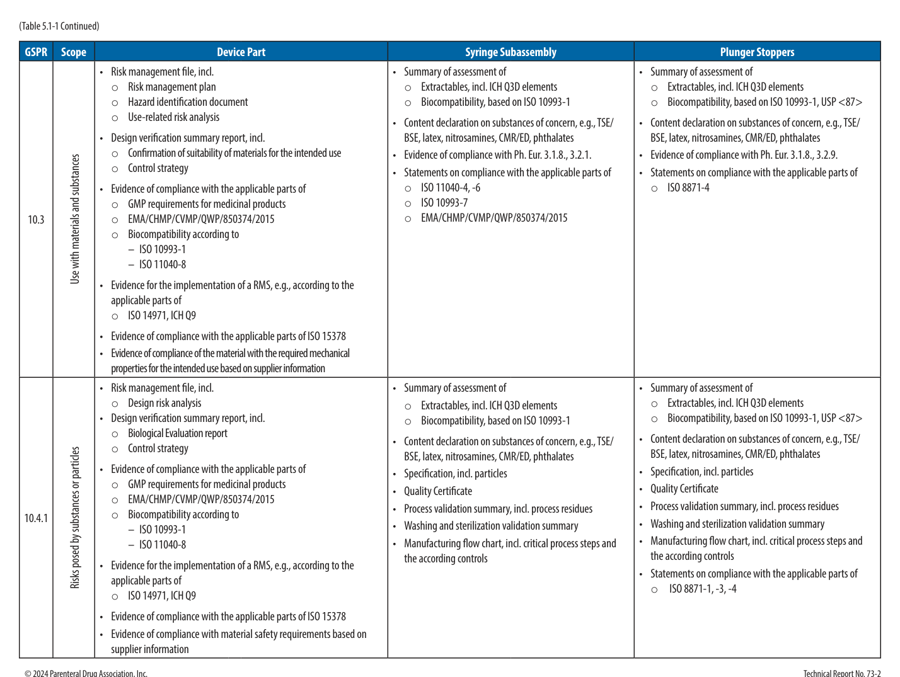

Section 1: Introduction
導論 | p1-p2
本節學習目標
- 瞭解預填充注射器 (Prefilled Syringe, PFS) 相較於小瓶 (vial) 和安瓿 (ampule) 的核心優勢，包括減少給藥錯誤、降低微生物污染風險與改善法規合規性
- 掌握本技術報告的範疇：聚焦於生技大分子藥品所用的1 mL長型玻璃PFS，明確排除塑膠注射器與自動注射器
- 理解報告中「使用者 (end user)」、「客戶 (customer)」等術語在不同產品生命週期階段的定義差異
- 認識報告的章節結構：chevron圖（箭頭導覽圖）作為各章閱讀指引，以及PFS組件的標準術語
- 瞭解本報告如何在美/歐法規重點下，兼顧不同司法管轄區的資格認定與驗證要求
原文內容 Original Text
Since the mid-2000's, a large number of subcutaneously injected biotechnology drug products have been packaged in prefilled syringes (PFSs) because of significant benefits compared to vials or ampules. PFSs reduce medical dosing errors and the risk of microbial contamination by decreasing the number of necessary manipulations prior to injection, and they improve compliance due to ease of use. In addition to the patient benefits, PFSs often have lower overfill regulatory requirements than vials, thereby reducing product waste.
1.1 Purpose/Scope
The purpose of this technical report is to present a discussion of requirements for the 1 mL long glass PFS for biotechnology applications (Figure 1.1-1). Topics covered are material selection and evaluation for suitability, syringe preparation and handling (including human factors), and drug product compatibility (physical and chemical) with the syringe materials and mode of delivery. Plastic syringes and ancillary devices, such as autoinjectors, are not within scope.
The terms "end user," "customer," and "user" are used interchangeably throughout this report. However, the definitions of these terms change according to the topic under discussion as the report progresses through the product life cycle of the PFS. For example, during development, the end user or target population may be the target patient, while the customer or user during production and delivery may be the supplier or manufacturer. Additionally, while this technical report provides more specific information related to the U.S. and European regions, requirements for different regulatory agency jurisdictions may vary, and applicants and manufacturers should be aware of the proper qualification and validation expectations for the intended market.
While the focus of this report is on 1 mL long glass PFSs for biotechnology (large molecule) drug products, the concepts presented may be applied to other products and applications (e.g., small molecule drug products, luer, luer-lock, and plastic syringes). Every attempt has been made to provide comprehensive content, but some particular techniques and technologies may not be included.
The task force that prepared this report consisted of members representing global companies and representatives from regulatory bodies to ensure a consensus on the methods, terminology, and practices described. Experts in PFSs and PFS manufacturing performed technical reviews.
The information in this technical report appears in the general order of operations for developing and manufacturing 1 mL long glass PFSs. Throughout the report, the chevron diagram (below) serves as a guide for the reader and reflects the focus of each chapter.
The glossary contains a list of definitions and acronyms used in this report. When available, same or similar definitions to those included in FDA or ICH guidelines are used.
Figure 1.1-1: Schematic Drawing of a PFS
A typical 1 mL long staked needle syringe consists of a Type I borosilicate glass barrel. For a staked needle syringe, a stainless-steel needle is affixed to the syringe cone with adhesive, and the needle is embedded in an elastomeric needle shield. The inside of the syringe is siliconized to allow the plunger to be easily depressed during administration of the injectable.
PFS Components (組件列表):
- Thumb pad（拇指墊）
- Plunger rod（推桿）
- Finger flange（指法蘭）
- Barrel（注射器筒身）
- Cone（錐頭）
- Needle（針頭）
- Needle shield（針頭保護套）
- Shoulder（肩部）
- Drug solution for injection（待注射藥液）
- Plunger stopper（活塞膠塞）
- Plunger（活塞）
導師解析 Tutorial Commentary
核心概念解析 Key Concepts
為什麼選擇PFS？三大驅動力：
- 無菌保證 (Sterility Assurance) 優先：PFS減少注射前的操作步驟（如從小瓶抽藥），直接降低微生物污染 (microbial contamination) 的機會窗口。
- 產品CQAs保護：更少的操作步驟意味著更少的給藥錯誤 (dosing errors) 風險，保護Critical Quality Attributes（關鍵品質屬性）。
- 商業彈性：PFS的過量充填 (overfill) 法規要求通常低於小瓶，直接降低原料藥 (Drug Substance) 的浪費，對高成本生技大分子尤其重要。
範疇邊界 (Scope Boundary) 的重要性：本報告明確限定在1 mL長型玻璃PFS，排除塑膠注射器和自動注射器 (autoinjector)。這不是任意的，而是因為玻璃與塑膠的材料相容性評估方法截然不同，混用會造成法規論述的模糊。
比喻說明 Analogy
把PFS想像成「即食便當」，把小瓶想像成「需要自己煮的食材包」。即食便當（PFS）讓你直接食用，減少備餐過程中食物受汙染或備錯份量的機會；食材包（小瓶）雖然有彈性，但每次開封、量取、轉移的步驟都是潛在的汙染或錯誤點。對生技注射劑來說，「備餐失誤」可能是病人安全問題，代價遠高於食物浪費。
本報告的章節chevron圖（箭頭圖）就像便當盒的層次說明書：從PFS開發授權（Section 3）到人因工程（Section 4）、提取物（Section 5）、玻璃/針頭/針頭保護套（Sections 6-8），再到外觀瑕疵（Section 9）、矽化（Section 10）、活塞（Section 11）、容器密封完整性（Section 12），最後到製造（Section 13）和藥品相容性（Section 14）。每一章聚焦一個「便當格」。
重點提示 Key Notes
「使用者」定義隨生命週期而變：這是本報告的重要提醒。在開發階段，「end user（最終使用者）」是目標病人；但在製造和供應階段，「customer（客戶）」可能是供應商或製造商。作為CDMO，我們在不同階段扮演不同角色——既是藥品持有人 (MAH) 的供應商（製造階段），也是元件供應商的客戶（採購階段）。閱讀本報告時需隨時確認當前討論中「使用者」指的是誰。
美/歐聚焦，但需注意其他市場：本報告以美國FDA和歐洲EMA要求為主要參考框架，但明確指出不同司法管轄區（如台灣TFDA、日本PMDA）的要求可能有所不同。在台灣CDMO環境中，必須額外確認TFDA對PFS資格認定和驗證的具體要求。
決策層級原則：本報告隱含的決策層級為：無菌保證 > 產品CQAs > 商業彈性。PFS的一切設計和選材決策，都應以此層級為依據。
Chevron圖（箭頭導覽圖）解析
本報告以一個chevron（箭頭形）圖貫穿全文，反映PFS開發和製造的操作順序。各章對應如下：
- Section 3：PFS開發與授權 (PFS Development & Licensing)
- Section 4：人因工程 (Human Factors)
- Section 5：提取物與浸出物 (Extractables & Leachables)
- Sections 6, 7, 8：玻璃筒身、針頭與針頭保護套 (Glass Barrel, Needle & Needle Shield)
- Section 9：外觀瑕疵 (Cosmetic Imperfections)
- Section 10：矽化處理 (Siliconization)
- Section 11：活塞膠塞適用性 (Plunger Stopper Suitability)
- Section 12：容器密封完整性 (Container Closure Integrity)
- Section 13：製造要求 (Manufacturing Requirements)
- Section 14：藥品相容性 (Drug Product Compatibility)
閱讀任何章節前，先確認自己在chevron圖中的位置，有助於理解該章內容在整個PFS生命週期中的脈絡。
Figure 1.1-1 PFS組件術語說明
本圖無影像檔，但來源文本列出了標準PFS的11個組件。作為CDMO工程師，這些術語在客戶技術文件、供應商規格書和法規申請文件中必須精確使用，不可混用或自創中譯：
- Thumb pad（拇指墊）：給藥時拇指施力的平台
- Plunger rod（推桿）：連接拇指墊與活塞的桿件
- Finger flange（指法蘭）：食指和中指抓握的翼片
- Barrel（筒身）：容納藥液的玻璃管，Type I硼矽酸玻璃
- Cone（錐頭）：筒身前端，固定針頭的部位
- Needle（針頭）：不鏽鋼材質，以黏著劑固定於錐頭（staked needle設計）
- Needle shield（針頭保護套）：彈性材料製，保護針頭並維持無菌
- Shoulder（肩部）：筒身與錐頭的過渡區域
- Drug solution（藥液）：已充填的注射用藥品
- Plunger stopper（活塞膠塞）：彈性材料製的密封元件，直接接觸藥液
- Plunger（活塞）：整個活塞組件（stopper + rod）的總稱，有時特指膠塞本身
練習思考 Practice Questions
- PFS相較於小瓶的三大優勢中，哪一項在生技大分子藥品（如單株抗體）的CDMO製造情境中最具商業意義？為什麼？
- 本報告排除塑膠注射器和自動注射器於範疇之外。若你的客戶想用自動注射器搭配生技藥品，本報告的哪些章節內容仍然適用？哪些需要額外的參考文獻？
- 「使用者」定義隨生命週期而變，請以你公司（CDMO）的角度，說明在PFS填充封閉 (fill-finish) 製造階段，你的「客戶」和「最終使用者」各是誰？這對品質協議 (Quality Agreement) 的撰寫有何影響？
本節重點回顧 Section Summary
- PFS的核心價值在於減少操作步驟，從而降低微生物污染風險和給藥錯誤——無菌保證始終是第一優先
- 本報告範疇明確限定：1 mL長型玻璃PFS用於生技大分子藥品；塑膠注射器和自動注射器不在範疇內
- 「使用者」定義因產品生命週期階段而異，CDMO在不同階段可能同時扮演供應商和客戶兩種角色
- Chevron圖是本報告的閱讀導引，反映從PFS開發授權到藥品相容性的完整操作順序（Sections 3-14）
- 11個PFS標準組件術語（Thumb pad至Plunger）是技術溝通的基礎，必須精確使用，不可自行創譯
Section 2: Glossary of Terms
術語表 | p3-p5
本節學習目標
- 掌握 PDA TR73 預充填注射器 (Prefilled Syringe, PFS) 技術報告中所有核心術語的英文原義與中文對應
- 區分 Primary Component（一次組件）與 Secondary Component（二次組件）的定義範疇及功能差異
- 理解 Extractable（可萃取物）與 Leachable（可浸出物）的本質差異及其在法規評估中的意義
- 掌握 Formative（形成性）與 Summative/Validation（總結性/驗證性）可用性評估的用途與區別
- 熟悉本技術報告所用縮寫表（Section 2.1），建立後續各章節閱讀的基礎詞彙框架
原文內容 Original Text
The following terms are used throughout PDA Technical Report No. 73 in the context of prefilled syringes (PFS), their components, assembly, and associated testing and human factors considerations. Definitions reflect usage as applied in this report. See Table 2.0-1 below for the complete glossary.
導師解析 Tutorial Commentary
為什麼術語表很重要？
在 GMP 法規文件中，術語的精確定義決定了合規的邊界。TR73 的術語表特別重要，因為預充填注射器橫跨藥品法規（Container Closure Integrity）、醫療器材法規（Human Factors Engineering）和製程工程（Force measurement）三個領域，同一個概念在不同領域可能有不同名稱。
比喻說明 Analogy
閱讀 TR73 之前先讀術語表，就像進入手術室前先確認每一件器械的名稱。外科醫師和護理師必須對「止血鉗」、「縫合針」有完全一致的理解，否則手術中的溝通就會出錯。同樣地，CDMO 的 QA、生產和工程師團隊對 PFS 術語的共同理解，是跨職能協作的基礎。
重點提示 Key Notes
本術語表的定義以 TR73 使用情境為準，部分術語（如 Plunger Stopper 的多個同義詞）在業界有多種叫法。當與供應商或法規機構溝通時，應確認雙方所指的是同一概念，必要時在技術協議 (Technical Agreement) 中明確定義。
練習思考 Practice Questions
- 在 Amaran 的 PFS 填充作業中，哪些組件屬於 Primary Component？哪些屬於 Secondary Component？
- 為什麼 TR73 需要為 Plunger Stopper 列出六個同義詞（Piston, Stopper, Plunger, Gasket, Plug, Bung, Closure）？這對供應商溝通有什麼實務影響？
Table 2.0-1: Glossary of Terms (PDA TR73, Section 2.0)
| Term (English) | 中文術語 | Definition / Context |
|---|---|---|
| Backstop (Finger Plate or Thumb Plate) | 後擋板（指板／拇指板） | Feature that enhances the area to hold the syringe; usually designed to avoid accidental removal of the plunger from the back. By design, may also serve as a flange extender to facilitate holding during injection. |
| Break-loose Force | 起動力 | Energy required to initiate plunger movement within the syringe barrel upon injection. |
| Component, Primary | 一次組件 | Element of the assembled prefilled syringe (needle, plunger stopper and tip closure, or adhesive) directly in contact with the drug. |
| Component, Secondary | 二次組件 | Element of the assembled prefilled syringe (plunger rod, backstop, or safety system) that interacts with the primary components and provides functionality to the delivery system. |
| Contextual Inquiry | 情境詢問法 | Ethnographic research method used to observe and analyze behaviors in actual end-use contexts (actual environments and use scenarios). |
| Elastomer | 彈性體 | Thermoplastic material formulation (that may or may not contain rubber/natural latex) derived from elastic polymer; often used interchangeably with the term "rubber." |
| Extractable | 可萃取物 | Organic or inorganic chemical entity that is forced out of container closure system materials and components under laboratory experimental conditions. |
| Extrusion Force (Propagation Force, Glide Force, Syringeability) | 推出力（傳播力、滑動力、注射性） | Filled syringe delivery force (not including break-loose force) quantified as the highest non-break-loose force to complete the injection stroke. |
| Formative Usability Evaluation | 形成性可用性評估 | Observed actual or simulated use of early prototypes to help reliably identify product concept-specific, use-related hazards that may have been missed by other methods. |
| Glide Force | 滑動力 | Force in Newtons (N) required for plunger movement within an empty syringe. |
| Hold-Up Volume (Residual Volume, Nonexpellable Volume, Dead Volume) | 殘留體積（死體積） | Amount of fluid remaining in the syringe when the plunger has reached the end of travel within the barrel. |
| Leachable | 可浸出物 | Organic or inorganic chemical entity that migrates from pharmaceutical container closure system components into a drug product formulation. |
| Needle (Cannula) | 針頭（套管） | A thin, hollow, metal tube commonly used with a syringe to inject substances into the body. |
| Needle-Safety Device | 針頭安全裝置 | A safety feature or mechanism that effectively reduces the risk of an exposure incident (e.g., accidental needlestick). |
| Needle Shield (Needle Cover) | 針頭保護套（針帽） | Rigid or flexible polymeric substance used to seal and protect the needle. |
| Nest (Tub Nest) | 巢架（桶巢） | Rigid plastic support placed into a tub to keep syringes upright with sufficient separation to allow for easy manipulation by manual or automated fill-line systems. |
| Plunger | 推桿組件 | The combined components of the plunger rod and plunger stopper. |
| Plunger Rod | 推桿 | Portion of the plunger assembly which provides a thumb pad for depressing the plunger and is attached to the plunger stopper inside the syringe barrel. |
| Plunger Stopper (Piston, Stopper, Plunger, Gasket, Plug, Bung, Closure) | 活塞膠塞（活塞、栓塞、密封件、塞子） | Elastomeric component that acts as a seal to prevent product leakage and also forces expulsion of the syringe contents when depressed. |
| Plunger Stopper-Barrel Interface | 活塞膠塞與桶身界面 | Circumferential contact points between the ribs of the plunger stopper and the inner diameter of the syringe barrel. |
| Prefillable | 可預充填的 | Syringes and associated components considered as starting material for the filling and assembling process of a prefilled syringe. |
| Prefilled | 已預充填的 | Syringe assembly after being filled with pharmaceutical product and being closed. |
| Prefilled Syringe | 預充填注射器 (PFS) | A syringe that has been prefilled to contain a specific dose of medication. |
| Ready for Filling | 備填狀態 | Prepared for loading with the pharmaceutical product. |
| Rondo Tray | Rondo 托盤 | Plastic packaging with a horizontal design used to accommodate syringes during the manufacturing process. |
| Schlieren | 折射紋（矽油不均勻條紋） | Optical inhomogeneities in transparent material not necessarily visible to the human eye. In TR73, Schlieren are due to localized variations in silicone oil thicknesses. |
| Staked Needle | 固定針（Staked 針頭） | Nonremovable, fixed needle attached to syringe body/cone with adhesive. |
| Steribag | 滅菌袋 | Sealing bag made at least partly of steam-permeable material to wrap and seal containers for sterilization (e.g., tub-nest configurations). |
| Suitability (Machinability) | 適機性（可機加工性） | Physical interactions of components with equipment and environment. |
| Summative/Validation Testing | 總結性／驗證性測試 | Evaluative testing providing evidence to show that representative users in the expected use conditions can perform all essential and critical tasks required for safe and effective use of the device. |
| Syringeability | 注射性 | The qualities required for delivery of the syringe contents at a given injection rate via a needle of a predetermined gauge and length that enables optimal injection conditions for the drug product, taking into account physical properties, flow rate, injection force, and needle gauge. |
| Thumb Pad | 拇指墊 | Disk at end of plunger rod. |
| Tub | 桶（巢桶） | Plastic box that contains a vertically oriented syringe nest and is sealed with a lid. |
| Use-related Risk Analysis | 使用相關風險分析 | A systematic assessment of all user steps involved in using the device, with particular consideration of potential use errors, their associated clinical consequences, risk-mitigation strategies, and the method of validating those strategies. |
原文內容 Original Text
Extractable vs. Leachable
Extractable: Organic or inorganic chemical entity that is forced out of container closure system materials and components under laboratory experimental conditions.
Leachable: Organic or inorganic chemical entity that migrates from pharmaceutical container closure system components into a drug product formulation.
The distinction lies in the conditions: extractables are identified under aggressive laboratory conditions; leachables are what actually migrate into the drug product under real-world storage conditions.
導師解析 Tutorial Commentary
核心概念解析：E&L 的本質差異
Extractable（可萃取物）是在實驗室條件下（通常用強溶劑、高溫、長時間浸泡）主動逼出材料中所有潛在化學物質，目的是建立「最壞情況資料庫」。
Leachable（可浸出物）是在正常儲存條件下實際遷移進入藥品的物質，是真正的患者安全風險。
關係：Leachables 通常是 Extractables 的子集。先做 E 研究，再根據結果預測 L 風險，必要時再做 L 確認研究。
比喻說明 Analogy
想像一個新的塑膠水瓶。把它放在沸水中煮一小時，萃取出的所有化學物質就是 Extractables（實驗室條件逼出）。而你每天裝室溫水喝，一個月後水中實際溶出的物質才是 Leachables（真實使用條件下的遷移）。Extractables 研究幫我們了解材料的「化學庫存」，Leachables 研究才決定患者真正的暴露量。
法規重點 Regulatory Note
ICH Q3E（Extractables and Leachables）指引要求針對藥品容器密封系統進行系統性的 E&L 評估。對於生物製劑（如 Amaran 的生物相似藥），蛋白質與 Leachables 的相互作用（如氧化、聚集）尤其關鍵，可能影響產品效力和免疫原性。
原文內容 Original Text
Formative vs. Summative/Validation Usability Testing
Formative Usability Evaluation: Observed actual or simulated use of early prototypes to help reliably identify product concept-specific, use-related hazards that may have been missed by other methods.
Summative/Validation Testing: Evaluative testing providing evidence to show that representative users in the expected use conditions can perform all essential and critical tasks required for safe and effective use of the device.
導師解析 Tutorial Commentary
核心概念解析：人因工程的兩階段測試
Formative（形成性）：開發早期，用原型探索風險、找問題、改設計。是反覆迭代的過程，目的是「發現問題並改善」。
Summative（總結性/驗證性）：開發後期，用最終（或接近最終）設計，在代表性使用者和真實使用情境中進行，目的是「證明設計已足夠安全有效」。這是法規提交（如 FDA 510(k) 或 PMA）的關鍵證據。
比喻說明 Analogy
Formative 測試就像新菜品的試菜過程——廚師請幾位顧客試吃，收集意見後修改食譜，反覆幾輪直到滿意。Summative 測試則是正式的米其林評審——不能再修改，評審結果決定你能否開業（上市）。兩者都需要「真實顧客」（代表性使用者），但目的和時機完全不同。
CDMO 視角 CDMO Perspective
作為 CDMO，Amaran 在承接 PFS 填充業務時，客戶（品牌藥廠）通常已完成 Formative 和 Summative 測試。但 CDMO 在導入新設備或新包材時，若改變了注射力道、外觀或操作性，可能需要評估是否觸發 Use-related Risk Analysis 的重新執行。這是 Change Control 評估的重要考量。
原文內容 Original Text
Force-related Terms: Break-loose Force, Glide Force, Extrusion Force, Syringeability
Break-loose Force: Energy required to initiate plunger movement within the syringe barrel upon injection.
Glide Force: Force in Newtons (N) required for plunger movement within an empty syringe.
Extrusion Force (Propagation Force, Glide Force, Syringeability): Filled syringe delivery force (that does not include break-loose force) quantified as the highest non-break-loose force to complete the injection stroke.
Syringeability: The qualities required for delivery of the syringe contents at a given injection rate via a needle of a predetermined gauge and length, enabling optimal injection conditions, taking into account physical properties, flow rate, injection force, and needle gauge.
導師解析 Tutorial Commentary
注射力道術語的層次結構
這幾個術語描述注射過程中不同階段的力學特性：
- Break-loose Force（起動力）：第一步，克服靜摩擦力，讓靜止的活塞開始移動。這是患者感受最強的瞬間衝擊力。
- Glide Force（滑動力）：空針（無藥液）中活塞持續移動所需的力，主要反映矽油潤滑效果和橡膠硬度。
- Extrusion Force（推出力）：充填藥液後，完成整個注射行程所需的最大力（不含起動力）。受藥液黏度影響顯著。
- Syringeability（注射性）：綜合概念，整合了上述所有因素，評估藥品能否順暢注射。
比喻說明 Analogy
想像推動一輛停在坡道上的手推車。Break-loose Force 是你推動它離開靜止所需的最大瞬間力；Glide Force 是空車在平地上持續推進的力；Extrusion Force 是裝滿貨物（高黏度藥液）後，整段推進過程的最大力。Syringeability 則是評估這輛手推車（注射器＋藥品組合）整體是否「好用」。
製程控制重點
填充 CDMO 在接受 PFS 規格時，必須確認客戶的 Break-loose Force 和 Extrusion Force 規格範圍。矽油 (silicone oil) 塗層均勻性是控制這兩個參數的關鍵。矽油過少 → 力道偏高；矽油過多 → 出現 Schlieren 光學瑕疵，影響可見異物檢查 (Visual Inspection)。
練習思考 Practice Questions
- 為什麼 Extrusion Force 的定義明確排除 Break-loose Force？在測試規格設計中，這個區別有什麼實務意義？
- 若一個 PFS 產品的藥液黏度從 5 cP 增加到 50 cP，你預期哪個力道參數會受影響最大？如何調整規格？
- Schlieren 瑕疵與矽油塗層的關係，如何影響 Amaran 的可見異物 (Visible Particulate) 檢查程序？
原文內容 Original Text
Elastomer & Plunger Stopper
Elastomer: Thermoplastic material formulation (that may or may not contain rubber/natural latex) derived from elastic polymer; often used interchangeably with the term "rubber."
Plunger Stopper (Piston, Stopper, Plunger, Gasket, Plug, Bung, Closure): Elastomeric component, which acts as a seal to prevent product leakage and also as the portion of the syringe which forces the expulsion of the contents of the syringe when depressed.
Plunger Stopper-Barrel Interface: Circumferential contact points between the ribs of the plunger stopper and the inner diameter of the syringe barrel.
導師解析 Tutorial Commentary
彈性體材料的重要性
Elastomer（彈性體）是預充填注射器最關鍵的一次組件材料之一。常見的 PFS 活塞膠塞材料包括：
- Bromobutyl (溴丁基橡膠)：低 Extractables，廣泛用於蛋白質藥品
- Chlorobutyl (氯丁基橡膠)：類似 Bromobutyl，但氯化程度不同
- EPDM（乙丙二烯橡膠）：Ethylenepropylenediene monomer，TR73 縮寫表中也收錄此材料
- TPV（熱塑性硫化彈性體）：Thermoplastic vulcanizate，新型材料，Extractables profile 較優
Plunger Stopper-Barrel Interface 的法規意義
活塞膠塞與桶身界面是 Container Closure Integrity (CCI) 的關鍵控制點。此界面的密封性受以下因素影響：活塞肋條 (rib) 的數量與設計、桶身內徑公差、矽油潤滑量、儲存溫度和時間。TR73 多個章節（尤其 Section 12 CCI）都回來參照這個界面的特性。
比喻說明 Analogy
Plunger Stopper-Barrel Interface 就像活塞環與引擎缸壁的關係。汽車引擎中，活塞環必須緊密貼合缸壁才能密封燃燒氣體（密封功能），同時還必須能滑動（推進功能）。PFS 的活塞膠塞同樣需要這兩種特性的完美平衡：夠緊才能防漏（CCI），但不能太緊否則注射力道過高（Syringeability）。矽油的作用就是引擎潤滑油。
原文內容 Original Text
The following abbreviations are used throughout PDA Technical Report No. 73. See Table 2.1-1 below for the complete list.
導師解析 Tutorial Commentary
縮寫分類框架
TR73 的縮寫可分為四大類，有助於記憶：
- 分析方法類：AAS, FTIR, GC, HPLC, ICP-MS, ICP-OES（全為化學/分光分析技術）
- 法規/申請文件類：AQL, BLA, DMF, NDA（藥品申請相關）
- 材料/組件類：C/C, EPDM, RNS, TPV（容器密封系統材料）
- 製程/工程類：CCI, FMEA, HFE, LPP, RABS, VHP, WFI（製程技術縮寫）
重點縮寫說明
AET（Analytical Evaluation Threshold）：分析評估閾值，用於 E&L 研究中決定哪些化合物需要進一步安全性評估。低於 AET 的 Leachables 通常視為可接受。
HFE（Human Factors Engineering）：人因工程，貫穿 TR73 的主題之一，強調 PFS 的設計必須考慮實際使用者（醫護人員、患者）的操作習慣和可能的使用錯誤。
LPP（Low-pressure Plasma）：低壓電漿，用於矽油移除或表面改質，是某些特殊 PFS 組件的表面處理技術。
比喻說明 Analogy
掌握這份縮寫表就像學習新語言的字母表——你不需要第一天全部背下來，但每次讀到一個陌生縮寫就回來查對，逐漸就會形成肌肉記憶。建議將這一頁標記為書籤，閱讀後續章節時隨時翻查。
練習思考 Practice Questions
- AAS 和 ICP-OES 都是元素分析方法，在 PFS 的 E&L 研究中，兩者分別適用於哪些情境？
- RABS（Restricted Access Barrier System）在 PFS 無菌填充中扮演什麼角色？它如何影響 VHP 滅菌策略？
- HFE（Human Factors Engineering）與傳統的 FMEA 有何互補關係？在 PFS 的設計評估中，兩者各自識別哪類風險？
Table 2.1-1: Abbreviations (PDA TR73, Section 2.1)
| Abbreviation | Full Term (English) | 中文說明 |
|---|---|---|
| AAS | Atomic absorption spectroscopy | 原子吸收光譜法（元素定量分析） |
| AET | Analytical evaluation threshold | 分析評估閾值（E&L 研究中的報告/鑑定/安全閾值基準） |
| API | Active pharmaceutical ingredient | 活性藥物成分 |
| AQL | Acceptable quality level | 可接受品質水準（抽樣計畫基準） |
| BLA | Biologic license application | 生物製品許可申請（美國 FDA 生物製劑上市申請） |
| C/C | Container closure | 容器密封系統 |
| CCI | Container closure integrity | 容器密封完整性 |
| DMF | Drug master file | 藥品主檔案（原料/包材供應商向 FDA 提交的機密文件） |
| EPDM | Ethylenepropylenediene monomer | 乙烯丙烯二烯單體（彈性體材料，用於活塞膠塞） |
| FMEA | Failure mode and effects analysis | 失效模式與影響分析 |
| FTIR | Fourier transform infrared spectroscopy | 傅立葉轉換紅外線光譜法（材料鑑定/官能基分析） |
| GC | Gas chromatography | 氣相層析法（揮發性有機物分析） |
| HFE | Human factors engineering | 人因工程（使用者介面設計與風險評估） |
| HPLC | High-performance liquid chromatography | 高效液相層析法（非揮發性有機物分析） |
| ICP-MS | Inductively coupled plasma-mass spectrometry | 感應耦合電漿質譜法（微量金屬元素分析，ppb 級靈敏度） |
| ICP-OES | Inductively coupled plasma optical emission spectroscopy | 感應耦合電漿光發射光譜法（多元素同時分析） |
| ISE | Injection site reaction | 注射部位反應（臨床安全性終點之一） |
| LPP | Low-pressure plasma | 低壓電漿（表面改質技術，可移除矽油或改變表面特性） |
| MDD | Medical Devices Directive | 醫療器材指令（歐盟，已被 MDR 2017/745 取代） |
| NDA | New drug application | 新藥申請（美國 FDA 化學合成藥物上市申請） |
| PFS | Prefilled syringe | 預充填注射器 |
| RABS | Restricted access barrier system | 限制進出屏障系統（無菌填充區域防護） |
| RNS | Rigid needle shield | 硬式針頭保護套 |
| TPV | Thermoplastic vulcanizate | 熱塑性硫化彈性體（新型低 Extractables 活塞材料） |
| VHP | Vaporized hydrogen peroxide | 汽化過氧化氫（RABS/隔離器的滅菌劑） |
| WFI | Water for injection | 注射用水（注射劑的最高純度水質標準） |
本節重點回顧 Section Summary
- PFS 術語體系橫跨藥品（CCI、Elastomer）、器材（HFE、Summative Testing）和製程工程（Force measurement）三個領域，須建立統一的語言基礎。
- Extractable（實驗室強制萃取）與 Leachable（真實使用條件下遷移）的區別是 E&L 研究設計的基礎，前者為後者的超集合。
- Break-loose Force、Glide Force、Extrusion Force 三者分別對應注射過程的不同力學階段，矽油塗層的均勻性是控制這三個參數的共同關鍵。
- Formative 測試用於開發早期探索風險並迭代改善；Summative 測試用於最終設計驗證，結果直接支持法規提交。
- TR73 縮寫表涵蓋分析方法（AAS, FTIR, GC, HPLC, ICP-MS/OES）、法規文件（BLA, NDA, DMF）、材料（EPDM, TPV, RNS）和製程技術（CCI, HFE, RABS, VHP, WFI）四大類。
Section 3: PFS Development and Licensing
PFS開發與註冊 | p6-p11
本節學習目標
- 掌握預充填注射器 (PFS) 在美國與歐盟的法規定位，理解「組合產品 (combination product)」的監管架構與 PMOA 原則
- 理解 PFS 三大關鍵系統功能：治療病患、取得市場許可、生產與配送藥物遞送系統
- 瞭解藥廠與供應商在 DMF 申請中各自的角色與責任，包括 Type III 及 Type V DMF 的適用情境
- 掌握 CTD Module 3 中 PFS 組合產品所需的申請內容要素，包括設計管控、相容性、穩定性及 CCI 要求
- 認識適用於 PFS 開發的主要標準與技術參考文獻體系
原文內容 Original Text
This section discusses considerations for planning the development of the PFS and eventual marketing approval.
A developer of a PFS must define its purpose, evaluate the supplier, and adhere to regulatory and marketing requirements. For example, in the United States, a finished PFS is considered a combination product and regulated by the Center for Drug Evaluation and Research (CDER), the Center for Biologics Evaluation and Research (CBER), or the Center for Device and Radiological Health (CDRH) of the U.S. FDA, depending on its primary/principal mode of action (PMOA). Based on the same principle of PMOA, products in the European Union (EU) that incorporate or administer a drug may be regulated as either medical devices or medicinal products as the term combination product per se does not exist yet in EU regulations. A container/closure (C/C) system, such as a PFS used in the packaging of a medicinal product for human use, is approved as part of the medicinal product application.
導師解析 Tutorial Commentary
核心概念解析 Key Concepts
Combination Product（組合產品）：PFS 在美國被定性為「組合產品」，因為它同時具有藥品（drug）和醫療器材（device）的特性。監管主導機構取決於 PMOA（主要作用模式）：
- CDER：主導小分子藥物 PFS
- CBER：主導生物製品 PFS（如單株抗體、疫苗）
- CDRH：當器材功能為主時
歐盟情況：EU 目前沒有「combination product」的明確定義，PFS 依主要功能歸類為藥品或醫材，受 Directive 2001/83/EC 或 MDD 93/42/EEC 管轄。
比喻說明 Analogy
想像你開發了一種「預裝咖啡的保溫杯」。監管機關會問：這個產品的主要功能是「咖啡（藥品）」還是「保溫杯（器材）」？如果主要目的是讓咖啡安全到達消費者手中（藥品功能主導），就由食品局管；如果主要賣點是保溫功能，就由消費品安全委員會管。PFS 的 PMOA 判斷就是這個邏輯 — 誰主導，誰審。對 CDMO 而言，這個判斷在接受委託開發前就必須釐清，直接影響法規策略與申請時程。
重點提示 Key Notes
CDMO 實務影響：作為受託製造方，必須在合約中明確規定由 License Holder（藥廠）負責確認 PMOA 及主管機關，CDMO 不應自行假設。不同主管機關的 cGMP 要求（21 CFR 820 vs 21 CFR 211）對廠房認證、文件體系影響巨大。
練習思考 Practice Questions
- 一支含有胰島素的預充填注射器，其 PMOA 如何判定？會由 CDER 還是 CBER 主管？
- 為什麼歐盟沒有「combination product」的正式定義對 PFS 開發者而言是一個挑戰？
原文內容 Original Text
In order to have a comprehensive understanding of the PFS up to the end of its shelf life, it is necessary to consider the ability of the PFS to provide an integral C/C system and to consider the interaction of the related subsystems. These considerations should support the goal of treating the patient, obtaining market approval for a drug, and producing and supplying the drug delivery system. These three goals holistically comprise the key system functions of the PFS life cycle.
3.1.1 Key System Function: Treating the Patient
The ultimate purpose of the PFS subsystem is to contain the drug and administer the expected dose within the expected timeframe to the patient. Administration of the drug delivery system is achieved through various avenues, such as the following:
- self-administration with a plunger rod PFS or with additional device accessories
- healthcare provider administration with or without safety systems
Subsequently, to ensure proper administration of the drug, it is necessary to address multiple factors when treating the patient. Factors include the following:
- drug dose volume, viscosity, and temperature
- duration of injection
- targeted tissue and route of administration
- injection technique (pinch, angle, or region)
3.1.2 Key System Function: Enabling Market Approval
The license holder must generate a comprehensive data package to ensure the suitability of the PFS for the intended use as prescribed by various regulatory authorities, such as the FDA and European Medicines Agency, and in accordance with applicable guidance documents to receive regulatory approval for the drug product.
導師解析 Tutorial Commentary
核心概念解析 Key Concepts
PFS 三大關鍵系統功能：
- 治療病患：確保藥品在正確時間、正確劑量、正確途徑到達目標組織
- 取得市場許可：提供完整的資料包，證明 PFS 適用於預期用途
- 生產與配送：確保系統與充填、組裝、配送流程相容
這三個功能並非獨立存在，而是相互制約。例如：為了治療病患所選擇的高黏度製劑，可能對充填製程（生產功能）和注射力道（人體因素）產生重大影響。
重點提示 Key Notes
影響注射的關鍵變數：藥液黏度 (viscosity) 直接影響注射時間和所需推桿力。對蛋白質藥物（如單株抗體）而言，高濃度製劑的黏度往往是開發挑戰，這在 3.1.1 提到的「duration of injection」和「injection technique」因素中有所體現。
License Holder 的資料責任：3.1.2 強調 license holder 必須生成「comprehensive data package」。對 CDMO 而言，需在服務協議中明確哪些數據由 CDMO 生成、哪些由 License Holder 負責整合提交。
練習思考 Practice Questions
- 如果一個單株抗體 PFS 產品的黏度非常高（>50 cP），這會如何同時影響三個關鍵系統功能？
- 為什麼需要同時考慮「自我注射」和「醫護人員注射」兩種情境？這對 PFS 設計有何影響？
原文內容 Original Text
To produce and distribute the combined drug and delivery system, the system should be:
- compatible with the filling and inspection process, including the plunging process (e.g., Ventube™ or vacuum)
- compatible with the assembly process (plunger rod insertion, labeling, and secondary packaging)
- suitable for delivery to end users, including factors such as cold chain requirements, transport conditions (shock, vibration, and pressure), and protection provided by the secondary and tertiary packaging
Table 3.1.3-1 below provides a high-level view of the interactions between subsystem components or stakeholders in relation to key system functions.

Figure 3.1: PDA TR73 Section Structure — Section 3.0 PFS Development & Licensing within the broader TR73 framework (PDF p14)
導師解析 Tutorial Commentary
核心概念解析 Key Concepts
Ventube™ / Vacuum 灌塞法：活塞插入（plunging）有兩種主要方法。Vacuum plunging 在低壓環境下插入活塞，可有效避免注射器內殘留空氣，對某些敏感藥品（如蛋白質製劑）至關重要。選擇何種方法直接影響設備投資和製程驗證策略。
三層包裝的冷鏈保護：
- 一次包裝 (primary)：玻璃管身 + 活塞 + 針頭護套
- 二次包裝 (secondary)：泡殼或托盤，提供機械保護
- 三次包裝 (tertiary)：外箱，用於配送運輸
比喻說明 Analogy
PFS 的生產相容性就像「食品工廠的包裝線設計」。如果你開發了一種特殊形狀的果凍，但現有的充填機無法處理這種形狀，你就面臨兩個選擇：重新設計果凍（修改產品設計）或購買新設備（增加資本投入）。對 CDMO 而言，在評估新客戶產品時，首先要確認現有充填線與目標 PFS 規格的相容性 — 這是接單可行性評估的第一步。
圖表解讀 Figure Analysis
Section 3.0 在 TR73 中的位置圖（fig-p14-1）顯示本節（3.0 PFS Development & Licensing）是整份技術報告的「起點」，周圍是 4.0 Human Factors、5.0 E&L、6.0-8.0 Glass/Needle、9.0 Cosmetic、10.0 Siliconization、11.0 Plunger Stopper、12.0 CCI、13.0 Manufacturing、14.0 Drug Compatibility 等各主題節。這個結構圖傳達了一個重要訊息：開發決策（Section 3）會牽動後續所有技術節的考量，必須從整體生命週期視角規劃。
練習思考 Practice Questions
- 若一個客戶要求使用 Vacuum plunging 工藝，但 CDMO 現有設備只支援 Ventube™，應如何在合約談判階段評估這個需求？
- 冷鏈產品（如需 2-8°C 儲存的生物製品）的二次和三次包裝設計需要考慮哪些額外的驗證要求？
Table 3.1.3-1: Overview of Interactions Between Key System Functions & Components in the PFS Life Cycle
各關鍵系統功能與 PFS 生命週期中相關組件/利害關係人的交互關係總覽
| Key System Functions 關鍵系統功能 | Contributors and Stakeholders 貢獻者與利害關係人 | |||||
|---|---|---|---|---|---|---|
| Drug 藥品 | PFS Subsystem PFS子系統 | Fill/Finish Manufacturing Equipment 充填/完成製造設備 | Ancillary Devices 輔助裝置 | Distribution 配送 | Patient 病患 | |
| Treating the Patient 治療病患 | ||||||
| Allows the transfer of the expected dose within the expected time frame in the targeted tissue 在目標組織中於預期時間內輸送預期劑量 | • | • | • | • | ||
| Contains drug 容納藥品 | • | • | • | |||
| Obtaining Approval for Drug 取得藥品許可 | ||||||
| Adequately protect the dosage form 充分保護劑型 | • | • | • | • | • | |
| Composed of materials that are considered safe 由被認定安全的材料組成 | • | • | • | |||
| Producing and Delivering the Drug Delivery System 生產與配送藥物遞送系統 | ||||||
| Be compatible with the filling and inspection process 與充填及檢驗製程相容 | • | • | • | |||
| Be compatible with the assembly process 與組裝製程相容 | • | • | • | |||
| Be suitable for delivery to end user 適合配送至終端使用者 | • | • | • | |||
- "Drug" refers to the medicine delivered in the PFS.
- The PFS subsystem includes a packaged glass barrel with an attached needle that is protected with a needle shield and a plunger stopper.
- "Manufacturing equipment" refers to the different machines used to process the subsystem to produce a full drug delivery system. Tasks include filling, stoppering, inspecting, or preparing secondary packaging.
- Ancillary devices include autoinjectors, safety devices, plunger rods, backstops, and other assistive devices.
- "Distribution" refers to the outbound distribution channel from the license holder to the patient.
- The patient is the person who ultimately receives the treatment.
原文內容 Original Text
The following sections provide considerations for manufacturer, supplier, instructions for healthcare provider, regulatory submission/eCTD content format, standards, and technical references applicable to the PFS.
3.2.1 Manufacturer Considerations
A drug product manufacturer must follow the marketing requirements in the country where the product is marketed. In the United States, a PFS is considered to be a combination product as defined by 21 CFR 3.2(e). These combination products are assigned to the lead center based on the PMOA. Both CDER and CBER provide guidance on PFS drugs and biologics.
Drug manufacturers must comply with cGMPs to ensure that the PFS product is safe and efficacious. Each constituent part of the PFS product is subject to its applicable cGMP requirements. The device constituent is subject to the quality system regulations for devices as described in 21 CFR 820, whereas the drug or biological product constituent is subject to the regulations under 21 CFR 211. For biological products, the regulations described in 21 CFR 610 also apply. The cGMP requirements for combination products are codified under the final rule in 21 CFR 4, which provides guidelines on how to achieve compliance under one operating principle with additional provisions under another. These include:
- demonstration of compliance with all cGMP regulations applicable to each of the constituent parts included in the combination product, or
- demonstration of compliance with either the drug cGMP or the quality system regulations for devices, and with provisions that are not shared by both regulations
Products that incorporate a drug or administer a drug may be regulated in the European Union as either medical devices or medicinal products, depending on the principal intended function of the product and the method by which this function is achieved. PFSs are categorized as devices for administering a medicinal product when the device and the medicinal product form a single integral product designed for exclusive use in the given combination, and the device is not reusable or refillable. These products are covered by the regulations for medicinal products, such as Directive 2001/83/EC. However, relevant essential requirements in Annex 1 of Medical Devices Directive (MDD) 93/42/EEC apply to the safety and performance-related features of the device. Guidelines related to drug delivery products regulated as medicinal products, such as PFSs, are provided in medical devices guidance document MEDDEV 2.1/3, Revision 3.
Following standards like ISO 13485 (Medical Devices – Quality Management Systems) and ISO 14971 (Medical Devices – Application of Risk Management to Medical Devices) will allow companies to demonstrate compliance with Annex 1 of the MDD.
導師解析 Tutorial Commentary
核心概念解析 Key Concepts
21 CFR 4 的「一主一輔」合規原則：對 PFS 組合產品，21 CFR 4 提供兩種合規路徑：
- 全合規路徑：同時滿足 21 CFR 211（藥品）和 21 CFR 820（器材）的所有要求
- 精簡路徑：選擇其中一套為主要依循，再補充另一套中不重疊的要求
21 CFR 820 特別要求的「額外規定」包括：management responsibility（管理層責任）、design controls（設計管控）、purchasing controls（採購管控）、CAPA（矯正與預防措施）。
比喻說明 Analogy
21 CFR 4 的合規策略就像「跨國工作簽證」。若你同時在台灣和日本工作，有兩種方式：一是取得兩個國家的完整工作許可（全合規路徑，成本最高但最保險）；二是以一個國家的許可為主，再補辦另一國要求的特定附加文件（精簡路徑，適合主要在一個司法管轄區運作的廠商）。CDMO 在接受組合產品委託前，必須與 License Holder 確認採用哪種合規策略，因為這直接影響品質系統建置的成本與時程。
重點提示 Key Notes
ISO 13485 vs 21 CFR 820：ISO 13485 是歐盟 MDD 認可的品質管理系統標準，在全球多個市場廣泛接受。21 CFR 820 是美國 FDA 的器材品質系統法規。兩者高度相似但有差異。CDMO 若已取得 ISO 13485 認證，在進入 EU 市場時具有明顯優勢。
ISO 14971 風險管理：此標準要求廠商對器材的整個生命週期進行系統性風險管理，需產生完整的風險管理檔案 (Risk Management File)，與 ICH Q9 的 QRM 原則高度互補。
練習思考 Practice Questions
- 一家台灣 CDMO 要接受美國客戶的單株抗體 PFS 委託製造，需要同時符合 21 CFR 211 和 21 CFR 820 的哪些特定要求？
- 歐盟 Directive 2001/83/EC 與 MDD 93/42/EEC 對 PFS 的適用範圍如何區分？
原文內容 Original Text
Suppliers of PFS components can include information related to the manufacturing of the syringe, needle, and accessory components in the drug master file (DMF) for applications submitted to the FDA in the United States. The manufacturer's supplier agreement should define the roles and responsibilities of each party. In other countries, such information may be submitted in the marketing application dossier to the health authorities. Additionally, filing requirements for different regulatory agency jurisdictions may vary, and applicants should be aware of the proper procedures for the intended market.
Elements to be included in the DMF include:
- overall description of the C/C system, packaging component diagram, dimensional specifications
- information on the manufacturing and processing facility (washing, siliconization, sterilization, and environmental controls)
- component suppliers [of glass barrels, ceramic paint, plunger stoppers, needles, silicone, needle adhesive, needle shields, plunger rods, flange extenders, or backstops]
- suitability (protection from light, compatibility, and sterility) and component safety
- quality controls during syringe barrel manufacture, lubrication, needle assembly, sterilization, and transport
- stability of syringe components without any product, and a list of regulatory requirements fulfilled, plus revalidation plan
- mechanism for communication of quality issues and customer notification
Elastomeric closure components for PFS systems (e.g., tip caps and plunger stoppers) must meet current U.S. and European regulatory requirements for compendial compliance. Component suppliers should ensure that adequate information is provided to the health authorities for proper review of sponsors' drug applications, including:
- elastomer formulation ingredients and appropriate certifications (e.g., BSE/TSE, dry natural rubber latex, and animal-derived raw materials)
- compendial testing results for physicochemical properties
- biological reactivity assessment
In the United States, suppliers typically elect to compile this information in a Type III DMF.
In some instances, post-processing of elastomeric components (e.g., washing or sterilization) may be performed by a third party, such as the component supplier. In such cases, adequate supporting data should be made available to enable proper agency review of these processes. This information can be contained within a Type V DMF in the United States and should include supporting information on process validation, process controls, testing, and packaging qualification.
As DMF owners, suppliers can provide sponsors with letters of authorization to applicable DMFs for use in sponsor applications. Per 21 CFR 314.420(c), suppliers in the United States are required to notify their letter of authorization holders when significant changes are made to the DMFs. Refer to 21 CFR 4 for further guidance on compliance with design control expectations.
導師解析 Tutorial Commentary
核心概念解析 Key Concepts
DMF 類型對照：
- Type III DMF：包裝材料（如彈性體封口元件）—— 涵蓋橡膠配方、BSE/TSE 認證、理化特性及生物反應性測試
- Type V DMF：FDA 接受的特定製造設施、製程或文章 —— 供應商對彈性體元件進行後處理（如清洗、滅菌）時，相關製程驗證資料可放入此類型
授權信函 (Letter of Authorization)：DMF 擁有者（供應商）授權藥廠（sponsor）在其申請案中引用該 DMF 的機制。一旦 DMF 有重大變更，供應商必須主動通知所有授權信持有人。
比喻說明 Analogy
DMF 制度就像「建材供應商提交給建管局的技術規格檔案」。你要蓋一棟建築，不需要親自測試每一根鋼筋的品質 —— 你引用鋼筋廠商已預先提交給建管局的材料認證檔案（DMF），並取得廠商的「授權使用書」（Letter of Authorization）即可。若鋼筋廠商後來更換了鋼材配方（DMF 重大變更），他們必須通知所有使用其授權書的建築業者 —— 這就是 21 CFR 314.420(c) 的精神。對 CDMO 而言，在供應商合約中明確要求「DMF 重大變更需提前 X 天通知」是風險管控的基本要求。
重點提示 Key Notes
BSE/TSE 認證的重要性：牛海綿狀腦病 (BSE) / 傳播性海綿狀腦病 (TSE) 認證是生物來源原料的必要文件。彈性體元件（如橡膠活塞）的配方中若含有動物來源成分，必須提供相關認證，這是 EU 和 FDA 的共同要求。
CDMO 在供應鏈管理中的角色：當 CDMO 採購 RTU（即用型）的已清洗/已滅菌元件時，需確認供應商是否已在其 DMF 中涵蓋後處理製程的驗證資料。若供應商使用 Type V DMF 涵蓋這些製程，CDMO 需取得相應授權。
練習思考 Practice Questions
- 若 CDMO 採用 RTU 的預清洗活塞，供應商提交了 Type V DMF，CDMO 在申請材料中需要如何引用這個 DMF？
- 供應商的 DMF 發生「重大變更」，CDMO 應在多快時間內評估其對現有客戶產品的影響？應建立什麼樣的 SOP？
原文內容 Original Text
The license holder must provide healthcare providers with instructions for use and disposal of PFSs. Needlestick injuries have the potential to expose PSF users, such as healthcare providers, to blood-borne pathogens. The Occupational Safety and Health Administration (OSHA) and Centers for Disease Control and Prevention (CDC) guidelines describe the requirements and practices in the United States to prevent such injuries. The disposal requirements for PFSs may vary between countries, and suggested storage conditions for the PFSs should be followed.
導師解析 Tutorial Commentary
核心概念解析 Key Concepts
使用說明書 (Instructions for Use, IFU) 的法規要求：License Holder 有義務提供完整的 IFU，內容必須涵蓋：正確使用步驟、棄置要求（針頭廢棄物管理）、儲存條件。各國棄置法規不同，IFU 必須針對目標市場個別化。
針刺傷害預防：OSHA 和 CDC 均有相關指引。主動安全注射器（active safety syringes）和被動安全系統的設計目的之一即為降低針刺傷害風險，這與 Section 4.0 Human Factors 高度相關。
重點提示 Key Notes
台灣廠商的注意事項：台灣的醫療廢棄物處置受衛生福利部規範，與美國 OSHA 要求不同。若 CDMO 協助客戶開發台灣市場的 IFU，需確認符合台灣本地法規要求，而非直接套用美國版本。
CDMO 的責任範圍：IFU 的撰寫通常由 License Holder 負責。CDMO 應確認合約中清楚界定 IFU 責任歸屬，避免因此承擔未預期的法規責任。
練習思考 Practice Questions
- 若同一 PFS 產品需要在美國、歐盟和台灣三個市場上市，IFU 需要有幾個版本？各版本的主要差異可能在哪裡？
原文內容 Original Text
In the United States, the marketing application for PFS combination products could be a new drug application (NDA), or a biologic license application (BLA), depending on whether the product is defined as a drug or biologic. Proprietary information about the device can be submitted in a master file and in letters of authorization to the master file provided in the application. Important considerations for evaluating human factors affecting the use of the PFSs include the intended patient population for the proposed indication and the condition of use, and whether the PFS is self-administered or administered by a healthcare provider.
The application should contain:
- a description of the dosage form, composition, primary C/C system, and any ancillary component/plunger rod information
- manufacturing and processing facility information
- description of all primary packaging components (syringe barrel with staked needle, adhesive used to bond the needle to the glass tip of the barrel, needle shield, and plunger stopper) with drawings, specifications, quality details, and supplier information
- description of the manufacturing process, including lubrication of the primary packaging components and material/components inspection, in-process controls, and release operations (in the supplier's DMF)
- additional details on validation of syringe marking process if syringe markings and fill lines are present
- a summary containing details of the sterilization method and validation providing a sterility assurance level of 10⁻⁶
- evaluation of the integrity and compatibility of the C/C system
- assessment of the potential for leachables and particulates due to interaction of the syringe components with the product
- assessment of the impact of shipping on the C/C system
PFSs have the potential to introduce new impurities or components, such as adhesive, tungsten, and silicone, which can impact product quality. The impact of such components should be carefully assessed. Syringe barrels and plunger stoppers are typically siliconized for use in PFS applications. A thorough assessment of the impact of component variability on product quality and stability is performed. Stability data to demonstrate that the commercial C/C system does not affect product stability is required. Temperature is a general concern given that most protein drugs are quite labile. Moisture is a concern for lyophilized dosage forms in syringes (or vials).
The final finished product after filling and assembling should be tested for performance. Testing of the PFS includes testing of delivered (extractable) volume, break-loose and glide forces, and CCI. In addition, a range of physicochemical and microbiological parameters should be tested.
In Europe, the marketing application could be a medicinal product application. At the time of this writing, the FDA and European Commission have not published guidance on the electronic version of the common technical document (CTD) for devices that are part of a combination product. A template for ICH CTD Module 3 is attached (refer to Appendix I) as a guide for providing information about a drug delivery device in a BLA/NDA. An example of a completed CTD Module 3 of a combination product application is provided in Appendix II.
導師解析 Tutorial Commentary
核心概念解析 Key Concepts
NDA vs BLA 的選擇：
- NDA（新藥申請）：適用於化學合成藥物 PFS，主導機關通常為 CDER
- BLA（生物製品許可申請）：適用於生物製品 PFS（抗體、疫苗等），主導機關為 CBER 或 CDER（視產品類型）
Tungsten（鎢）污染的重要性：在製造注射針頭時，鎢針芯（tungsten pin）用於形成玻璃管的出口孔，之後移除。殘留的鎢氧化物可能與蛋白質藥物（如抗體）反應，誘發蛋白質聚集（aggregation）—— 這是一個直接影響產品安全性的關鍵品質問題。
SAL 10⁻⁶ 的法規要求：無菌保證水準 (Sterility Assurance Level) 10⁻⁶ 意謂每百萬件產品中非無菌品的機率不超過 1 件。這是 PFS 滅菌驗證的基本法規門檻。
比喻說明 Analogy
CTD Module 3 對 PFS 的申請內容，就像「房屋交屋時的完整文件包」。你蓋了一棟房子（製造了 PFS），要取得使用執照（市場許可），必須提交：建材規格（包裝元件說明）、施工圖（製程圖）、防火驗收（滅菌驗證）、防水測試（CCI 評估）、環境安全評估（E&L 研究）、結構安全報告（穩定性數據）。每一份文件對應到 CTD Module 3 的一個章節。對 CDMO 而言，熟悉這個「文件地圖」能幫助在接受委託時精準評估需要產生哪些數據，並在合約中明確分工。
重點提示 Key Notes
Break-loose 和 Glide Force 測試：
- Break-loose force（啟動力）：初次推動活塞所需的力，通常高於持續推動力
- Glide force（滑動力）：活塞在持續移動過程中的阻力
這兩個參數直接影響使用者體驗和劑量準確性，是 PFS 放行測試的必要項目，也受矽化（siliconization）程度影響。
矽化（Siliconization）的雙面性：矽油提供潤滑（降低 glide force），但同時可能導致矽油顆粒污染藥液，對蛋白質藥物引發免疫反應。矽化量的控制需要精確優化，詳見 TR73 Section 10.0。
練習思考 Practice Questions
- 一個凍乾 (lyophilized) 藥物的 PFS 版本在穩定性測試中需要特別監測哪些指標？水分控制的關鍵點在哪裡？
- 若在 E&L 研究中發現鎢含量偏高，有哪些可能的解決方案？（考慮設計、製程和規格三個層面）
- Break-loose force 規格的設定應考慮哪些使用情境？（自我注射 vs 自動注射器）
原文內容 Original Text
A C/C system (constituent parts of a combination product), such as a PFS used in the packaging of a human drug or biologic, is approved as part of the drug application. A successful licensure application requires multiple tests and studies according to various industrial and compendial standards to demonstrate the suitability of the selected C/C system, which can be validated for its intended use based on the target product profile.
Suitability is defined in the United States to cover four aspects: protection, safety, compatibility, and performance, according to the FDA.
Different regulatory bodies may recognize different standards. Appendix III lists the standards, guidance, compendial methods, and technical reports to assist with the development of a PFS combination product. The FDA recognizes consensus standards, and EU harmonized standards are available online. The various testing standards help ensure regulatory compliance. Other PDA technical reports provide useful information related to sterilization, CCI test methods, and glass defects.
導師解析 Tutorial Commentary
核心概念解析 Key Concepts
PFS C/C System 適用性四要素：FDA 定義的四個評估面向：
- Protection（保護性）：能否保護藥品免受外部污染（微生物、環境）
- Safety（安全性）：包裝材料本身不會對病患造成傷害（E&L 安全評估）
- Compatibility（相容性）：包裝材料與藥品之間不發生不良相互作用（不吸附、不催化降解）
- Performance（性能）：能正常執行預期功能（功能性測試，如注射力、CCI）
Target Product Profile (TPP)：目標產品概況是開發早期定義「理想產品應該是什麼樣子」的文件，驅動後續所有開發決策，包括 C/C system 的選擇與驗證策略。
重點提示 Key Notes
TR73 與其他 PDA 技術報告的關聯：Section 3.2.5 提及其他 PDA TR 提供滅菌、CCI、玻璃缺陷相關資訊。主要關聯：
- 滅菌：PDA TR1（輻射滅菌）、TR22（過濾滅菌）、TR26（蒸汽滅菌）
- CCI：PDA TR27（微生物 CCI 測試）、TR51（確定性 CCI 測試）
- 玻璃缺陷：PDA TR43（玻璃容器製造）
在台灣 CDMO 的實務中，建議建立這些 TR 的內部學習資源庫（如本知識平台），讓工程師在遇到特定問題時能快速找到對應參考文獻。
實務應用 Practical Application
CDMO 的標準文件矩陣建議：在接受每個新 PFS 委託時，建議建立一個「適用標準矩陣」，對應 FDA 四要素：
- Protection：CCI 測試方法選擇 → PDA TR51/TR27
- Safety：E&L 研究計畫 → ICH Q3C/Q3D + USP <661>
- Compatibility：藥品-包材相容性研究 → USP <1664> + PDA TR26
- Performance：功能性測試 → ISO 11040 系列
這個矩陣可作為技術審查會議的基礎文件，確保在開發早期就識別所有必要的測試項目。
練習思考 Practice Questions
- 為什麼「compatibility（相容性）」和「safety（安全性）」在概念上不同，但在實務研究中又高度相關？各自需要哪些測試支撐？
- 一個蛋白質生物製品 PFS 的 Target Product Profile 中，關於 C/C system 的主要需求可能包括哪些？
本節重點回顧 Section Summary
- 法規定位：PFS 在美國為組合產品，由 PMOA 決定主管機關（CDER/CBER/CDRH）；21 CFR 4 提供「一主一輔」的雙重 GMP 合規路徑
- 三大系統功能：治療病患（劑量、給藥途徑）、取得市場許可（完整資料包）、生產與配送（製程相容性與冷鏈）— 三者相互牽動，必須整體規劃
- DMF 架構：Type III DMF 涵蓋彈性體元件的材料資訊；Type V DMF 涵蓋後處理製程驗證；授權信函機制確保供應鏈資訊流通
- 申請內容要素：SAL 10⁻⁶ 滅菌驗證、CCI 評估、E&L 研究（特別注意鎢、矽油、黏合劑）、break-loose/glide force 測試是 PFS 申請的核心數據
- C/C 適用性四要素：Protection、Safety、Compatibility、Performance — 此框架應貫穿 PFS 開發的整個生命週期，從 TPP 定義到放行測試均需對應
Section 4: PFS Human Factors Engineering
PFS人因工程 | p12-p23
本章學習目標 Learning Objectives
- 說明人因工程（Human Factors Engineering, HFE）的核心目的，以及其在 PFS 產品開發中的作用
- 識別主要 HFE 相關法規標準與指引（Section 4.1），並理解不符合要求的後果
- 區分「形成性研究（formative study）」與「總結性/驗證性研究（summative/validation study）」的差異（Section 4.2）
- 描述裝置使用特性的三個面向：用戶族群、使用環境、預期使用場景（Section 4.3）
- 說明如何收集並定義終端使用者需求，作為使用者需求規格（User Requirements）的依據（Section 4.4）
原文內容 Original Text
Human factors engineering (HFE) considers a product's design, intended uses, users, and use environments, which can affect the safe and effective use of a product. The intent of HFE is to improve the quality of a product's user interface design to eliminate or minimize errors during use.
This section describes best practices related to the application of HFE and use-related risk management to the development of PFSs, including:
- key principles of HFE as they apply to PFSs (intended to supplement and not to replace the current health authority guidance and approaches described within recognized consensus standards)
- key considerations in understanding the use of PFSs
- typical areas of usability issues (known issues) to consider in the development of PFSs

Figure 4.0: TR73 section relationship diagram — Section 4.0 Human Factors sits alongside 5.0 E&L, 3.0 Development & Licensing, and feeds into downstream sections (glass barrel, needle, siliconization, etc.)
導師解析 Tutorial Commentary
核心概念解析 What Is HFE?
Human Factors Engineering (人因工程, HFE)：一門研究「人」與「產品/系統/環境」交互作用的工程學科。對 PFS 而言，核心問題是：真實使用者在真實情境下操作這支針筒時，會犯什麼錯誤？
User Interface (使用者介面)：不限於軟體。PFS 的使用者介面包括：針頭護套的拔除力道、標籤文字大小、活塞推力、注射終點的觸覺/視覺反饋。
Use-related risk management (使用相關風險管理)：識別、評估並控制因使用錯誤（use error）導致患者傷害的風險。與 ICH Q9 的品質風險管理互補，但聚焦在「人操作裝置」這個介面點。
比喻說明 Analogy
把 PFS 想成一台醫院用的血壓計：就算量測原理完全正確，若顯示字體太小、操作按鍵太難按、充氣聲音太吵讓護理師分心，這台機器仍然不合格。HFE 就是確保「正確的設計被正確地使用」的那門學問。
對 CDMO 而言，這提醒我們：光是通過 GMP 製程驗證，還不夠——最終產品能否被患者或護理人員正確使用，是同樣重要的合規要求。
重點提示 Key Note
本 TR73 Section 4 的 HFE 內容「補充」（supplement）而非「取代」現行法規指引（如 FDA CDRH 文件、IEC 62366）。CDMO 在做 HFE 計畫時，必須同時參照主管機關的正式指引，不能僅依賴 TR73。
練習思考 Practice Questions
- PFS 的「使用者介面」包含哪些實體元素？請舉三個例子。
- 「use error（使用錯誤）」與「device defect（裝置缺陷）」有何差異？為什麼兩者對法規申請同等重要？
原文內容 Original Text
Regulatory bodies may request evidence of acceptable human factors summative/validation testing results and supporting processes during premarket application or submission reviews.
The failure of manufacturers to apply a compliant and adequate HFE process can lead to serious consequences, including:
- product approval delays/nonapprovals
- negative audit and inspection findings
- clinical and market complaints
- ultimately an unsafe, ineffective, and unsuccessful product
Available HFE standards and guidances include those listed in Table 4.1-1 (see below).
導師解析 Tutorial Commentary
核心概念解析 Regulatory Landscape
Summative/Validation study (總結性/驗證性研究)：模擬真實使用條件，以代表性使用者族群驗證產品設計是否安全有效的正式研究。類似 PQ（Performance Qualification）——是最終的合格確認。
Premarket submission (上市前申請)：FDA 510(k)、PMA，或 EMA 的 MAA 等。主管機關在審查時，可能直接要求 HFE summative study 報告。
比喻說明 Analogy — HFE 研究 vs. 驗證階段
從 CDMO 驗證邏輯來看，HFE 的研究層次與廠房設備驗證高度對應：
- Formative study (形成性研究) → 如同 OQ（操作確效）：在設計迭代期間，反覆測試並修正，目的是找出問題並改善設計。
- Summative/Validation study (總結性研究) → 如同 PQ（性能確效）：在最終設計凍結後，以正式受試者族群確認產品符合使用安全要求，結果必須呈交主管機關。
就像不能跳過 OQ 直接做 PQ，也不能省略 formative study 直接做 summative study。
重點提示 Regulatory Consequences
HFE 流程不合規的後果非常具體：核准延誤、查廠缺失、市場投訴。對 CDMO 而言，這意味著客戶的上市時間表（timeline）直接受影響，合約中的里程碑付款也可能延遲。HFE 絕非「軟性需求」。
練習思考 Practice Questions
- 若 CDMO 客戶未在開發初期規劃 HFE formative study，可能在哪個開發階段才會發現問題？後果是什麼？
- Table 4.1-1 中，哪個標準最直接規範「醫療器材可用性工程」？它的全名是什麼？
Table 4.1-1: Human Factors Engineering-related Standards and Guidances 人因工程相關標準與指引
| Standard / Guidance ID | Title |
|---|---|
| ANSI/AAMI/IEC/EN 62366-1:2015 | Medical devices – Application of usability engineering to medical devices |
| AAMI/ANSI HE75:2009 | Human Factors Engineering – Design of Medical Devices |
| ISO 14971:2007/(R) 2012 | Medical Devices – Application of risk management to medical devices |
| IEC 60601-1-6:2010 | Medical electrical equipment – Part 1-6: General requirements for basic safety and essential performance – Collateral standard: Usability |
| IEC 60601-1-8 Edition 2.1 2012-11 | Medical electrical equipment – Part 1-8: General requirements for basic safety and essential performance – Collateral Standard: General requirements, tests and guidance for alarm systems in medical electrical equipment and medical electrical systems |
| IEC 60601-1-11:2010 | Medical electrical equipment – Part 1-11: General requirements for basic safety and essential performance – Collateral Standard: Requirements for medical electrical equipment and medical electrical systems used in the home healthcare environment |
| FDA/CDRH document # 1497 | Medical Device Use – Safety: Incorporating Human Factors Engineering into Risk Management (2000) |
| FDA/CDRH document # 1128 | Guidance on Medical Device Patient Labeling (2001) |
| FDA/CDRH document # 1757 | Applying Human Factors and Usability Engineering to Optimize Medical Devices (2011, draft*) |
| FDA/CDRH document # 1750 | Design Considerations for Devices Intended for Home Use (2014) |
| FDA/CDRH docket # HFA-305 | Safety Considerations for Product Design to Minimize Medication Errors (2012 draft*) |
| 21 CFR 820.30, Subparts A-D | Human Factors Implications of the New GMP Rule Overall Requirements of the New Quality System Regulation |
| EMA/606103/2014 | EMA Guidance – April 2015, Good practice guide on risk minimization and prevention of medication errors. Pharmacovigilance Risk Assessment Committee (PRAC). |
* FDA draft guidance documents marked with * are not intended for implementation until finalized and are subject to change.
原文內容 Original Text
The application of HFE throughout the product development process can optimize product design and minimize use-related failures and difficulties.
The need to perform a human factors summative/validation study and include human factors data in premarket submissions can be determined based on whether there are potential use errors that could cause harm.
For PFSs, there are known use errors that can result in delayed therapy (overdosing, underdosing, needle-stick injuries) and cause harm, such as reduced efficacy, infection, etc.
A human factors summative/validation study can demonstrate that representative users can use the device under simulated use conditions without producing patterns of failures that could result in negative clinical impact to patients or injury to device users (refer to Section 4.8).
導師解析 Tutorial Commentary
核心概念解析 Evaluation Framework
Use-related failure (使用相關失效)：不是裝置本身壞了，而是因使用者操作錯誤造成的失效。例如：患者未完整推到底（underdosing）、針頭護套未完全移除（dose blocking）。
Summative study 的觸發條件：只要存在「可能造成傷害的使用錯誤（potential use errors that could cause harm）」就必須進行。PFS 已有已知傷害模式（overdosing / underdosing / needle-stick），因此 summative study 幾乎是必要的。
比喻說明 Analogy
將 HFE 全流程套入 CDMO 開發邏輯：
- 早期 formative studies = 設計確認（Design Qualification, DQ）+ OQ 階段：識別問題、修正設計，反覆迭代。
- Summative/Validation study = PQ 階段：最終凍結設計後，用真實代表性使用者在模擬條件下執行，確認「無系統性失效模式」後才能提交申請。
PQ 報告不合格，產品無法放行。Summative study 失敗，上市申請將被拒。
重點提示 PFS-specific Known Use Errors
TR73 明確點出 PFS 的三大已知使用錯誤風險：
- Overdosing / Underdosing（過量/劑量不足）：活塞未完全推到底，或推過頭。
- Needle-stick injuries（針刺傷）：使用後針頭未安全遮蔽。
這三點直接決定 FDA/EMA 是否要求 summative study，CDMO 必須在開發早期就識別並記錄這些風險。
實務應用 CDMO Application
在 Amaran 進行 PFS 產品 CDMO 服務時，若客戶未提供完整 HFE 計畫，CDMO 應在技術轉移（Tech Transfer）階段主動確認：「是否已完成 formative studies？Summative study 何時排程？」缺乏此文件，可能導致 TFDA 或 FDA 查廠時出現缺失。
練習思考 Practice Questions
- 為何 PFS 幾乎必然需要進行 summative/validation study？
- Summative study 的「模擬使用條件」與真實臨床使用有何相同和不同之處？
原文內容 Original Text
The HFE process begins with characterizing device use. This includes consideration of user populations, use environment, and intended use scenarios as discussed below.
導師解析 Tutorial Commentary
核心概念解析 三大面向
Device-use characterization（裝置使用特性描述）是 HFE 流程的起點，必須在設計開始前完成。三個面向缺一不可：
- User populations（用戶族群）：誰在使用？
- Use environment（使用環境）：在哪裡使用？什麼條件下？
- Intended use scenarios（預期使用場景）：怎麼使用？用於什麼目的？
這三個面向共同構成 HFE 風險評估的輸入，也是後續 formative 和 summative study 的設計依據。
重點提示 Key Note
HFE 流程必須「從使用者出發」。這與傳統 CDMO 開發邏輯（從製程出發）不同。先定義「誰用、在哪用、怎麼用」，才能反向推導產品設計規格。
原文內容 Original Text
Common users of PFSs are healthcare providers, lay caregivers, and patients. User groups often have unique characteristics that are capable of affecting the user's ability to learn and use the product safely and effectively.
The generally accepted term for a distinct group of users with unique characteristics in HFE is "user population."
Within each user population, individual user characteristics may vary. Key areas of differences between users or user populations include:
- knowledge, skills, abilities, experience
- cognitive functioning, perceptual acuity, and manual dexterity
- user attitudes, emotions, and expectations
- gender, age, disease-related impairments, previous device experience and literacy, and education levels
The design of the device should be evaluated with individual users who are representative of the intended users.
Key considerations for users of injection devices in a home-use environment include:
- Injection-related anxiety/phobia: anxieties and phobias can make the task of self-injection difficult and may cause users to withdraw the needle before the injection is complete.
- Disease-related impairments: the same disease that the injection is intended to treat can impair the ability of users to inject the product by reducing hand and finger strength, impairing sensory abilities, and reducing manual coordination and dexterity.
- Negative transfer of learning between different products: users with prior experience with injection devices that operate in a specific way may incorrectly use a device that operates differently due to the assumption that the devices operate in the same way.
導師解析 Tutorial Commentary
核心概念解析 User Population 定義
User population（用戶族群）：具有共同特徵、且這些特徵會影響其使用裝置能力的一群人。PFS 的主要三族群：
- Healthcare providers（醫療專業人員）：醫師、護理師——受過正式訓練，但在高壓工作環境下可能分心。
- Lay caregivers（非專業照護者）：家屬——有照護意願，但技術能力和心理準備度差異大。
- Patients（患者）：本人自我注射——可能同時受疾病影響，例如類風濕關節炎患者手指無力。
比喻說明 Analogy — 操作員族群 vs. 用戶族群
在 CDMO 廠房，我們為不同班次、資歷的操作員設計 SOP 和培訓計畫。HFE 的「用戶族群」思維類似：
- 新進操作員（類比 naive patient）：需要更直觀的步驟和防呆設計。
- 資深操作員（類比 experienced HCP）：可能因「慣性操作」發生 negative transfer of learning，例如舊設備換新設備後仍用舊習慣操作。
CDMO 的 SOP 修訂（change control）就是管理「負向學習轉移」的工具。同樣地，PFS 設計若改變操作邏輯，必須評估用戶的 negative transfer 風險。
重點提示 Home-Use 三大特殊風險
Home-use 環境（居家使用）的 HFE 挑戰遠高於醫療機構：
- 注射恐懼症（Injection anxiety/phobia）：患者可能在針頭刺入後立即縮手，造成劑量不足（underdosing）。設計上需考慮注射完成的明確反饋（tactile click, visual indicator）。
- 疾病本身的功能損傷（Disease-related impairments）：類風濕關節炎、多發性硬化症的患者，正好是最常需要自我注射的族群，但其手部功能已受損。矛盾性極高，設計必須極度容錯。
- 負向學習轉移（Negative transfer of learning）：患者從某品牌針筆換到另一品牌後，直覺操作方式可能完全錯誤。上市後的 IFU（Instructions for Use）設計和用戶培訓計畫必須特別說明差異。
實務應用 CDMO Application
CDMO 在執行 tech transfer 時，應向客戶確認目標用戶族群（target user populations）的 HFE 文件是否完備。若客戶計畫將同一 PFS 用於「醫院 HCP 注射」和「居家患者自我注射」兩種場景，則兩個族群必須分開進行 formative 和 summative study——這會顯著影響開發時間軸和成本。
練習思考 Practice Questions
- 某生物製劑客戶的 PFS 目標使用者為「類風濕關節炎患者（自我注射）」，設計時需特別考量哪三個 HFE 風險？
- 「Negative transfer of learning」在 PFS 設計上，可以透過哪些設計手段降低風險？
原文內容 Original Text
The use environment can affect the user's ability to use a device safely and effectively. Specific considerations for HFE may include the following:
- Lighting (e.g., ambient, direct, and reflective light) that might affect the user's ability to see the syringe components, markings, and accessories
- Thermal factors (e.g., air temperature, humidity, heat, moisture, and air flow) that might affect how well the user can grip, hold, and inject the syringe
- Auditory factors (e.g., background noise and alarms) that might cause distractions and an inability to hear feedback from the syringe (if present)
- Workload (e.g., distraction and interruptions) that may cause difficulty, especially for users with cognitive, sensory, and/or manual dexterity impairment
導師解析 Tutorial Commentary
核心概念解析 四大環境因素
使用環境（Use Environment）不只是「在哪裡注射」，而是影響使用者感知和操作能力的所有物理、社會、認知因素的總和：
- 光照（Lighting）：視覺辨識——看得到刻度嗎？看得到氣泡嗎？
- 熱/濕度（Thermal factors）：握持能力——潮濕的手掌能握住玻璃針筒嗎？
- 聽覺（Auditory factors）：若 PFS 或自動注射器設計有聲音反饋（如 click 聲），在吵雜環境下能聽到嗎？
- 工作負荷（Workload）：認知負擔——急診護理師在分心狀態下操作的失誤率遠高於安靜環境。
比喻說明 Analogy — 環境因素 vs. CDMO 廠房人因
CDMO 在廠房設計的人因工程其實和 PFS 的 HFE 同源：
- Grade C/D 更衣室的照明設計（看得清楚操作嗎？）
- 無塵衣手套的觸感（帶手套仍能操作小零件嗎？）
- 設備警報聲音在高背景噪音環境中是否能被聽見？
廠房 HFE 研究（如 ergonomic assessment）與 PFS 使用環境評估是相同的方法論，只是應用場景不同。
重點提示 Home vs. Clinic Environment
醫療機構（controlled environment）vs. 居家使用（uncontrolled environment）的環境差異極大：
- 醫院：標準化照明、恆溫、低噪音。
- 居家：可能在昏暗廚房、浴室、移動中的車上使用；溫濕度不固定；寵物、孩童造成干擾。
若 PFS 計畫用於居家環境，使用環境的 HFE 評估必須涵蓋最差情境（worst-case scenario）。
練習思考 Practice Questions
- 某 PFS 設計了「push-and-click」的注射終點確認機制（依靠聲音反饋）。在居家使用環境中，這個設計有何 HFE 風險？
- 濕潤或出汗的手掌對 PFS 玻璃針筒的握持有何影響？設計上如何緩解？
原文內容 Original Text
Intended use scenarios describe how the user is expected to use the device. A device may also have multiple reasonably foreseeable use scenarios that may differ by user group.
For example, a healthcare provider may be required to select the appropriate product for a patient; the same healthcare provider may need to visually identify and select a PFS among PFSs containing different drug strengths or different drugs. Alternatively, it may be necessary for the patient to possess the ability to self-administer the drug in the selected PFS.
Use scenarios are determined in part by the intended use of the product, and may include such factors as:
- dosing regimen (e.g., variable dosing or fix dosing)
- dose frequency (e.g., once a day or once a month)
- type of medication (e.g., emergency versus routine)
- extent of training (e.g., naïve or experienced user)
- clinical supervision prior to or during use
Foreseeable scenarios involving misuse or use error (including stress, performing the tasks within a specific time limit, or the need to wear gloves when using the PFS) should be identified and considered part of the application of human factors' techniques during design of the user interface.
導師解析 Tutorial Commentary
核心概念解析 Intended vs. Foreseeable Use
Intended use scenarios（預期使用場景）：製造商設計時預期的使用方式。例如：「由護理師在門診環境中注射」。
Reasonably foreseeable use scenarios（合理可預見使用場景）：超出預期但現實中可能發生的使用方式。例如：「患者在緊急情況下自行注射、戴著厚手套注射、在昏暗環境下注射」。
HFE 要求製造商同時考慮兩者。忽視 foreseeable misuse，等同於放棄了一大塊風險控制。
比喻說明 Analogy — Use Scenario vs. 批次記錄設計
在 CDMO，批次記錄（Batch Record）設計時，我們會考慮「操作員在最差條件下仍能正確操作」——例如：戴著雙層手套書寫、在 C 級區穿著全套防護服確認標籤。
PFS 的 use scenario 設計邏輯相同：「最差使用情境下，患者仍能安全完成注射」。包括：戴手套（gloves）降低靈活度、壓力狀態下（stress）認知能力下降、時間限制（time limit）下操作。
重點提示 Foreseeable Misuse 的 HFE 義務
「合理可預見的誤用（reasonably foreseeable misuse）」必須納入 HFE 評估，這是 FDA 和 IEC 62366 的明確要求。若製造商能預見某使用錯誤模式但未採取設計防範，在產品傷害訴訟中將面臨重大法律責任。
舉例：如果 PFS 設計的針頭護套在使用後容易重新套上（recapping），但重新套上可能造成針刺傷，製造商必須評估並記錄此風險，並採取設計對策（如防重蓋機構）。
練習思考 Practice Questions
- 某腫瘤科藥物的 PFS 設計，目標使用場景為「腫瘤科護理師在門診靜脈注射」。請列出三個「合理可預見」但非預期的使用場景。
- 為何「戴手套操作 PFS」是 HFE 必須評估的 foreseeable scenario？在設計上如何回應？
原文內容 Original Text
After characterization of device use and prior to initiation of the design process, manufacturers should investigate and define end-user needs. End-user needs can be documented as user requirements, and as such, validated (i.e., are testable).
Multiple sources exist for defining user needs, such as the following:
- user group-specific needs (Section 4.3.1)
- use environment (Section 4.3.2)
- intended use (Section 4.3.3)
- potential hazardous situations that may arise (Section 4.6.1)
- reviews of relevant published material (Section 4.6.1.1)
- empirical research conducted by interviews or observations of potential users (Section 4.6.1.2)
- known use-related problems with the same or similar products
- health authority guidance(s) and consensus standards (Section 4.1)
User requirements may be further refined as new information is evaluated during device development.
導師解析 Tutorial Commentary
核心概念解析 User Needs → User Requirements
End-user needs（終端使用者需求）：使用者在使用情境中真正需要的能力或體驗。例如：「患者在關節炎狀態下，單手就能移除針頭護套」。
User requirements（使用者需求規格）：將 end-user needs 轉化為可測試（testable）的工程規格。例如：「針頭護套移除力不超過 X 牛頓，並在去除手套靈活度 Y% 的條件下測試」。
這個轉化過程是 HFE 與 QbD（Quality by Design）的交匯點：先定義使用者需求，再反向推導設計規格，最後驗證規格是否真正解決使用者問題。
比喻說明 Analogy — User Needs vs. URS
在 CDMO 設備採購中，我們先寫 URS（User Requirement Specification，使用者需求規格書），再讓廠商提案。PFS 的 User Requirements 邏輯完全相同：
- URS（設備）= User Requirements（PFS）
- FAT/SAT 驗收測試 = HFE summative validation study
- 廠商設計合規性 = PFS 設計合規性
差別在於：PFS 的 URS 是從「患者能力限制」出發，而不是從「製程需求」出發。
重點提示 八大使用者需求來源
TR73 列出八個定義 user needs 的資料來源，CDMO 在 tech transfer 時應確認客戶已涵蓋所有相關來源：
- 用戶族群特定需求（4.3.1）
- 使用環境（4.3.2）
- 預期用途（4.3.3）
- 潛在危害情境（4.6.1）
- 文獻回顧（4.6.1.1）
- 使用者訪談/觀察實證研究（4.6.1.2）
- 同類或類似產品的已知使用問題
- 法規機關指引及共識標準（4.1）
遺漏任何一項，都可能在 FDA/EMA 審查時被要求補充資料（deficiency letter）。
實務應用 CDMO Application
若 Amaran 承接一個新的 PFS 技術轉移案，客戶應在 tech transfer package 中提供「User Requirements Specification（URS）」文件。CDMO 的責任是確認製程能生產出符合這些 user requirements 的產品——例如，活塞推力（glide force）規格範圍必須涵蓋最差情境用戶（手部無力的患者）的操作能力上限。
練習思考 Practice Questions
- 「User needs（使用者需求）」和「User requirements（使用者需求規格）」的關鍵差異是什麼？為何後者必須是 testable？
- CDMO 在承接 tech transfer 時，應如何利用 Section 4.4 的八大來源核查客戶的 HFE 文件完整性？
- 若客戶的 user requirements 沒有考慮「使用者關節炎導致手部無力」這個場景，作為 CDMO 技術人員，你會如何提出質疑？
本節重點回顧 Section Summary (4.0–4.4)
- HFE 的核心目的：透過考慮產品設計、用途、使用者及使用環境，消除或最小化使用錯誤，保障患者安全。
- Standards (4.1)：IEC 62366-1、AAMI HE75、ISO 14971 等是主要 HFE 標準；FDA CDRH 文件和 21 CFR 820.30 是法規要求。不符規定的後果包括核准延誤、查廠缺失、市場投訴。
- HFE Evaluation (4.2)：PFS 存在已知使用錯誤（overdosing、underdosing、針刺傷），幾乎必然需要 summative/validation study。Formative study ≈ OQ；Summative study ≈ PQ。
- Device-Use Characterization (4.3)：三面向——用戶族群（誰用）、使用環境（哪裡用）、預期場景（怎麼用）。Home-use 環境特別需要考量注射恐懼、疾病損傷、負向學習轉移三大風險。
- User Needs (4.4)：先定義 end-user needs，再轉化為 testable 的 user requirements。來源涵蓋八個面向，並應隨開發進展持續精煉。
本章學習目標（Part B）
- 理解設計需求（Design Requirements）如何從使用者需求轉化為可量化、可驗證的工程規格
- 掌握使用相關風險管理（Use-Related Risk Management）的完整流程：危害識別、風險分析、緩解策略
- 區分形成性評估（Formative Evaluation）與總結性/驗證性測試（Summative/Validation Testing）的目的與方法
- 說明標籤（Labeling）在人因工程中的角色及其對使用安全的影響
- 辨別必要任務（Essential Tasks）與安全關鍵任務（Safety-Critical Tasks）的差異及其在驗證測試中的意義
原文內容 Original Text
To enable the product design process, user requirements are translated into engineering design requirements. Design requirements are comprehensive, clear, quantifiable, and verifiable. For example, a user requirement might state, "The user needs to be able to remove the needle cap." This might correspond to a specific design input requirement specifying the use of a suitable cap removal force or cap/syringe geometry. Design requirements related to the user-device interface may be derived from a range of sources, including anthropometric size and strength data or product-specific industry guidelines and standards.
Once a design prototype has been developed, requirements may be further refined through a process of iterative usability evaluation and risk analysis. In most cases, such evaluations should include early formative testing with users (Section 4.7) in which the suitability of the design input requirement may be assessed and adapted as necessary.
導師解析 Tutorial Commentary
核心概念解析 Key Concepts
User Requirements（使用者需求）vs. Design Requirements（設計需求）：使用者需求描述「使用者想做什麼」（例：能拔除針帽），設計需求則將其轉化為「裝置必須達到什麼規格」（例：針帽拔除力 ≤ X Newton、幾何尺寸符合人體工學）。
Anthropometric data（人體測量數據）：來自於目標使用族群的手部尺寸、握力等統計數據，用於設定設計參數上下限。
比喻說明 Analogy
設計需求的轉化過程，就像建築師把客戶說「我要一個採光好的客廳」，轉化成「南向窗戶面積 ≥ 地板面積的 15%、玻璃透光率 ≥ 70%」。模糊的需求變成可以量測、可以驗收的工程規格。
重點提示 Key Notes
設計需求必須是 quantifiable（可量化） 且 verifiable（可驗證）。在 CDMO 環境中，這意味著每一條設計需求都必須有對應的驗收方法（test method）——否則在 DMF/MAA 審查時無法自圓其說。
練習思考 Practice Questions
- 請舉一個 PFS 設計需求的實例，說明它如何從使用者需求衍生，以及如何驗證。
- 若使用者族群涵蓋老年患者與醫護人員，人體測量數據應如何涵蓋這兩個群體的差異？
原文內容 Original Text
Use-related risk management is an integral part of the HFE process in the development of medical devices and combination products. This includes use-related hazard identification, risk analysis, identification and implementation of mitigation strategies. For further information on risk evaluation, analysis, and management refer to PDA Technical Report No. 54: Implementation of Quality Risk Management for Pharmaceutical and Biotechnology Manufacturing Operations.
導師解析 Tutorial Commentary
核心概念解析 Key Concepts
Use-Related Risk Management（使用相關風險管理）：不同於製程風險管理（QRM），此處聚焦於「人-裝置介面」本身可能造成的傷害。核心框架來自 ISO 14971（醫療器材風險管理）。
三大支柱：危害識別 → 風險分析 → 緩解策略實施。每個步驟均需書面記錄。
重點提示 Key Notes
對 CDMO 而言，combination product（藥械組合產品，如藥廠委託充填的 PFS+自動注射器）同時適用 FDA 21 CFR Part 4 及 HFE 要求。風險管理檔案（Risk Management File）是 NDA/BLA 遞交的必要組成。
原文內容 Original Text
A hazard is a potential source of harm. Use errors and difficulties related to the product/user-interface design can lead to hazardous situations. All known and foreseeable use-related hazards associated with products are typically identified and documented within the use-related risk analysis (see Section 4.6.2). Early in the design process, it is best practice to identify and investigate potential hazards based on a systematic review of all known information related to the type of product under development. This information is typically acquired through literature searches, empirical research, and analytical methods.
4.6.1.1 Literature Search
Conduct a literature search to investigate known use-related issues with previous models or similar products. Typical sources of information include the following:
- scientific literature (e.g., study findings published in HFE and clinical journals)
- health authority complaints databases and reports (e.g., Manufacturer and User Facility Device Experience [MAUDE] and Medical Device Reporting [MDR] databases and adverse reporting data files)
- health authority alerts and/or warnings
- postmarketing product complaints for previous variants or similar devices
- clinical experience data, including clinical complaint records
- specialist support organizations (e.g., disease-specific patient support groups and associations)
- published standards and guidance
- previous formative and summative/validation studies of the device or similar device(s)
- support organization websites, social media, and blogs
4.6.1.2 Empirical Research
Empirical research is an approach to identify and specify user needs, identify potential use-related hazards of the device, and analyze behaviors in end-use contexts. Empirical research methods may include the following:
- Contextual inquiry: this ethnographic research method is used to observe and analyze behaviors in actual end-use contexts. Contextual inquiry can reveal important use-related behaviors in actual use that may not be present in a controlled or artificial test environment.
- User or expert interviews and focus groups: eliciting input from users through open-ended and/or semi-structured interviews or conducting focus groups is a valuable means of attaining user insight.
- Formative HFE: simulated use of early prototypes are effective for identifying product use-related hazards and assessing the adequacy of implemented risk controls.
4.6.1.3 Analytical Use Error Identification Methods
Analytical methods are useful in assessing user interfaces and key components of use-related risk analysis. A common analytical method is Hierarchical Task Analysis (HTA). This method systematically decomposes the steps necessary to attain the overall goal of the user into sub-goals and ultimately to the lowest-level tasks deemed appropriate for analysis. HTA suggests how to organize related tasks, identifies sequence of specific tasks, and generates a clear structure for risk analysis.
導師解析 Tutorial Commentary
核心概念解析 Key Concepts
Hazard（危害）vs. Harm（傷害）vs. Risk（風險）：
- Hazard = 潛在傷害來源（例：針帽不易移除）
- Hazardous Situation = 危害暴露情境（使用者強行扯拔針帽）
- Harm = 實際造成的傷害（針頭損毀、藥液外洩）
- Risk = 傷害嚴重度 × 發生機率
MAUDE 資料庫：FDA 維護的醫療器材不良事件報告系統，是文獻查找的核心資源，可識別市售同類器材已知的使用問題。
核心概念解析 Key Concepts
Hierarchical Task Analysis (HTA，階層式任務分析)：將使用情境分解為「目標 → 子目標 → 具體任務」的樹狀結構。例如：「自行注射生物製劑」可分解為準備 → 組裝 → 給藥 → 廢棄等層級，每個末端任務再評估潛在使用錯誤。
比喻說明 Analogy
危害識別的三條路徑，就像醫院感染管控的情報來源：文獻查找 = 查閱文獻與疾管署報告；實證研究 = 到病房直接觀察護理師操作；分析方法 = 用 FMEA 系統拆解每個護理步驟的潛在失效點。三管齊下，才能涵蓋全部已知與可預見的風險。
重點提示 Key Notes
Contextual inquiry（情境詢問法）強調在「真實使用環境」中觀察，不是在實驗室。對 CDMO 來說，若客戶計畫讓患者居家自行注射，則實地觀察（home-use study）是必要的，而非只做模擬注射台研究。
練習思考 Practice Questions
- MAUDE 資料庫的查找結果，如何用於指導新 PFS 的設計需求？
- 對一個需居家自行注射的單株抗體 PFS，contextual inquiry 應在哪些場域進行？
原文內容 Original Text
Employ a use-related risk analysis to systematically assess all of the steps involved in using the device, the errors that users might commit or the tasks users might fail to perform, potential negative clinical consequences of use errors and task failures, risk-mitigation strategies to reduce any moderate or high risks to acceptable levels, and the method of validating the risk-mitigation strategies.
The potential use errors can be assessed for severity, occurrence, and detectability as described below:
- Severity rating defines the potential impact of the hazardous situation on the user. The severity rating is determined based on product knowledge, customer interface, previous usability test results, and product complaints. When more than one hazard is identified, the most severe rating should be used. ISO 14971 (2012) presents a description of each severity level.
- Occurrence rating is an estimate of the frequency with which the identified harm occurs. Because it is difficult to determine accurately, estimates of severity should be used as the primary indicator of use error criticality.
- Detectability is the ability to detect, discover, or determine the existence, presence, or fact of a hazard. Detectability must be factored in the estimate of overall risks, together with the likelihood of occurrence and severity of harm.
After severity and occurrence are rated, risk mitigation strategies are developed to minimize identified use-related hazards. These may include the following, in order of priority:
- Design the device to remove the hazard, thereby reducing the likelihood that the user will encounter the hazard, or reduce the consequences if hazard occurs
- Make the user interface—including its operating logic—error resistant or error tolerant
- Alert the user to the hazard through the user interface (e.g., labeling/IFU)
- Develop written procedures and training that inform the user of the hazard, and provide steps to avoid the hazard
Formative evaluations and human factors summative/validation testing are methods that demonstrate the effectiveness of the implemented risk mitigation strategies. Justification for residual risks may take into account whether to eliminate these risks, or if eliminating/reducing these risks is highly impractical and the residual risk is clearly outweighed by the benefits of the device.
導師解析 Tutorial Commentary
核心概念解析 Key Concepts
使用相關 FMEA（Use-FMEA）：與傳統製程 FMEA 相同框架（Severity × Occurrence × Detectability），但分析對象是「使用者操作行為」而非「製程步驟」。RPN 高者優先處理。
關鍵差異：傳統 FMEA 中 detectability 是指製造檢查能否發現缺陷；Use-FMEA 中 detectability 是指使用者能否察覺危害正在發生。
公式與概念 Risk Priority
風險優先度（RPN）= Severity × Occurrence × Detectability
緩解策略優先順序：
1st: 設計消除危害（Eliminate by design）
2nd: 設計防錯/容錯（Error-resistant / tolerant UI）
3rd: 標籤警示（Labeling / IFU alert）
4th: 訓練與操作規程（Training / SOP）
注意：訓練是最後手段，不能替代設計改善。
重點提示 Key Notes
FDA HFE Guidance（2016）明確指出：Severity 是判斷使用錯誤關鍵性的主要指標，因為 Occurrence 在上市前難以精確估計。因此，嚴重度高的使用錯誤，即使發生率看似低，也必須優先處理。
練習思考 Practice Questions
- 「針頭刺傷自己」這個危害，其 Severity、Occurrence、Detectability 各應如何評估？
- 若緩解策略是在 IFU 上加警語，為何這被列為第三優先而非第一優先？
原文內容 Original Text
Employ the use-related risk analysis to identify essential tasks and safety-critical tasks. Essential tasks are those that are necessary for successful use of the device for its intended purposes. Examples of typical essential tasks are removing a PFS from packaging, removing a needle shield or cap, inserting a needle into an injection site, and fully depressing the plunger. Safety-critical tasks are those that, if omitted or the user performs incorrectly, could have a negative clinical impact. A task may be both safety-critical and essential simultaneously. Examples of safety-critical tasks typically include full depression of the syringe plunger rod and activation of the safety needle-device mechanism. In addition, user understanding of all safety-critical warnings and caution statements in the device labeling is essential.
Each task is assessed for device dependency:
- In device-dependent tasks, interaction with the device is required (e.g., removing a cap, depressing a plunger, or activating a needle-safety device). If a user successfully completes a task, then this is an indication that the success of the task completed is reasonably controlled by the design of the device.
- Device-independent ("ancillary") tasks include preparation tasks and are broadly defined as those that support the successful operation of the device (e.g., washing hands or checking the expiration date). These are often highly dependent on compliance with instructions; validation may occur through user comprehension of the labeling materials in summative/validation testing.
導師解析 Tutorial Commentary
核心概念解析 Key Concepts
Essential Task（必要任務）：成功完成裝置預期使用所必須完成的任務。缺一不可。
Safety-Critical Task（安全關鍵任務）：若遺漏或執行錯誤，會對患者產生負面臨床影響的任務。是 summative testing 的測試重點。
Device-Dependent Task（裝置相依任務）：任務的成功與否由裝置設計直接控制，因此是設計驗證的核心對象。
比喻說明 Analogy
想像一臺自動提款機（ATM）：「插入金融卡」是 essential task（必要）；「輸入正確密碼」是 safety-critical（輸錯有害）且 essential；「找到最近的 ATM」是 device-independent ancillary task（準備動作，ATM 本身不控制）。HFE 的重點是讓 ATM 介面本身協助使用者正確完成 device-dependent tasks。
重點提示 Key Notes
在 summative/validation testing 中，device-dependent 且 safety-critical 的任務必須全數納入測試情境（test scenarios）。Device-independent tasks 則通常透過標籤理解度評估（labeling comprehension assessment）來驗證。
練習思考 Practice Questions
- 「啟動針頭安全裝置」是 essential、safety-critical、device-dependent，三者皆是嗎？請說明理由。
- 「核對藥品有效期限」是哪類任務？如何在 validation 中驗證？
原文內容 Original Text
Table 4.6.2.2-1 offers several examples of common use-related hazards and harm associated with PFS use. The table is not intended to be exhaustive, and certain hazards and harms may not apply to all situations. Once use-related hazards have been comprehensively identified, the risks associated with those hazards are assessed. It is the manufacturer's responsibility to identify, implement, and validate risk mitigation strategies that effectively minimize risk (refer to Section 4.6.2 for the priority order of risk controls).
See Table 4.6.2.2-1 below for a structured list of common PFS use-related hazards.
導師解析 Tutorial Commentary
核心概念解析 Key Concepts
此表格提供 PFS 最常見的使用錯誤情境與潛在傷害，是 Use-FMEA 的起點參考。重要認識：
- 同一使用錯誤可能導致多種傷害（如「不完整活塞押注」→ 劑量不足 → 療效下降）
- 部分危害源自使用者合理但錯誤的行為（如針頭重新蓋帽 recapping）
重點提示 Key Notes
製造商必須針對每一條危害，評估其對應的風險緩解策略是否落實並經驗證。此責任不因委外（CDMO 生產）而轉移——MAH（上市許可持有人）最終負責，但 CDMO 的設計輸入與製程控制直接影響這些風險能否被有效緩解。

Table 4.6.2.2-1 (PDF p27): 原始圖像供對照參考
Table 4.6.2.2-1: Examples of Common Use-Related Hazards and Harms Associated with PFS
| Use Error 使用錯誤 | Example of a Hazard 危害示例 | Example of Harm(s) 傷害示例 |
|---|---|---|
| Inability to open packaging | Inability to use device | Reduced efficacy |
| Inability to remove needle shield | Incorrect removal of needle shield | Damaged needle; Injury |
| Incomplete plunger depression | Partial injection or no dose administered | Reduced efficacy |
| Premature removal of device from injection site | Failure to engage or activate a needle-safety feature | Exposed used needle; Injury |
| Reuse of a syringe or needle | Contaminated syringe or needle | Infection |
| Inability to attach needle (if applicable to device type) | No dose administered | Reduced efficacy |
| Inability to set an accurate dose for devices requiring dose adjustment | Inaccurate dose set | Overdose; Reduced efficacy (Underdose) |
| Removal of plunger from syringe | Damaged device | Reduced efficacy |
| Failure to clean injection site prior to injection or contamination of injection site after cleaning | Unclean injection site | Infection |
| Touching by needle to other surface (e.g., of a table) prior to injection | Contaminated needle | Infection (implied) |
| Failure to examine the product label | Administration of incorrect drug product or expired drug product | Injury; Reduced efficacy |
| Failure to examine the syringe prior to use | Damaged device | Injury |
| Failure to check the expiration date | Expired product | Reduced efficacy and safety |
| Failure to wait for the PFS to warm up to room temperature | Cold injection | Discomfort or pain |
| Recapping of the needle | Handling of unprotected needle | Injury |
原文內容 Original Text
After the user and design requirements have been defined and the risk management documentation process has been initiated, the user interface design is integrated into the product design and then implemented. Formative human factors evaluations assess the usability and use safety of the device, its packaging, labeling (including instructions for use), and training programs using product prototypes. The intent of formative usability studies is to optimize the user interface by "designing out" any usability problems or potential use-related hazards during the development of the product. The type and number of formative evaluations varies depending on the development effort and on the use-related risk analyses. The goal of this stage is to reduce use-related risks as much as is reasonably possible before the implementation of the design verification and summative/validation stage of development.
A written study protocol and report provides the necessary documentation for each formative human factors evaluation. Typical content for the protocol includes a description of the scope and objectives of the study, as well as a description of the participants, use environment, and prototype product. In addition, the formative study report provides a description and evaluation of any variants (e.g., different rigid needle shields or different versions of the instructions for use) along with any actionable conclusions from the study noted. Using the results and analyses from the formative study report, the use-related risk analysis is updated accordingly to ensure that any new risks and risk mitigations are appropriately captured.
According to human factors best practices, a formative human factors study typically includes a minimum of five to eight participants.
導師解析 Tutorial Commentary
核心概念解析 Key Concepts
Formative Usability Evaluation（形成性使用性評估）：在產品開發中期，使用原型（prototype）進行的迭代測試，目的是「設計優化」——找出問題並修正設計。
關鍵輸入：Use-FMEA 識別的高風險任務
關鍵輸出：設計修改建議 + 更新的 Use-FMEA
每次形成性研究須有書面研究協議（study protocol）及研究報告（study report）。
比喻說明 Analogy — CDMO 視角
形成性評估 vs. 總結性測試，就像 CDMO 的 試製批（pilot run）vs. 製程驗證批（PPQ batch）：
- Formative（形成性） = pilot run：反覆試做、反覆調整，目的是「找問題」並改善設計，允許失敗與迭代。測試對象是原型或早期樣品，最少 5–8 人。
- Summative（總結性） = PPQ batch：設計凍結後的正式驗證，目的是「證明設計可行」，結果須達到預設合格標準，使用正式生產等效品，每個使用族群 ≥ 15 人。
試製批失敗可調整，PPQ 失敗則需偏差調查與重新驗證——代價截然不同。
重點提示 Key Notes
形成性研究的參與者最少 5–8 人（業界慣例），但應涵蓋代表性使用族群。每次研究結束後，Use-FMEA 必須更新，以反映新識別的風險或已有效緩解的風險。
練習思考 Practice Questions
- 若形成性研究發現 60% 受試者無法正確啟動針頭安全裝置，下一步應採取什麼行動？
- 形成性研究的書面協議中，至少需包含哪些要素？
原文內容 Original Text
The summative/validation test is intended to be the culmination of all prior HFE analyses and formative testing. At this point, modifications to the user interface and product design are complete based on the results of iterative testing. The product is ready for validation testing.
With the appropriate design, execution, and acceptable results, the human factors summative/validation test provides evidence that the device is safe and effective for intended use. This decision is based on the following two considerations:
- a representative sample of users satisfactorily completing all essential and critical tasks under expected use conditions, and
- there are no additional patterns of use errors resulting from design deficiencies.
If this study is the first HFE effort (e.g., no formative evaluations were performed), or if the formative evaluations were not sufficiently robust, the summative/validation testing often uncovers user interface design problems that may result in use errors. When this happens, these new errors are evaluated to determine if additional user interface modifications are necessary. If the device is modified as a result of observed use errors, then the modified device is revalidated to demonstrate that the modifications effectively address the observed use errors and do not introduce new use errors.
Since modifications to devices can be made during scale-up, the validation/summative testing is conducted using production equivalent devices (final production units or demonstrable equivalents). The participants and test environment is expected to be representative of intended user populations and use environment. If there will be more than one user population (e.g., caregivers, patients, and/or healthcare professionals), then the summative/validation study should be performed with n ≥ 15 in each distinct user group.
For products intended for submission to the U.S. FDA, study participants are typically representative of the intended user population in the United States. The tasks selected for testing are typically derived from the results of a comprehensive assessment of use-related hazards. Training provided in the study is typically representative of the end-user training for actual use. To account for "training decay," time is allowed to elapse between the training and the test session — at least 30 minutes for daily-use devices, at least one day for less-frequent-use devices.
The testing captures both objective (observational/performance) data and subjective data (narrative responses to open-ended questions). For the purposes of assessing performance, a use error is generally defined as action or lack of action that was different from that expected by the manufacturer and can lead to patient harm. Performance success criteria are typically predefined prior to the summative/validation testing.
Summative/Validation Study Report Elements
- Rationale for the study design, including the data collected, number and description of distinct user populations and test participants, and critical and essential tasks
- Materials used within the study
- Summary of the test methods used
- Summary of both objective task performance and subjective results
- Detailed root-cause analysis for all use errors and difficulties that occurred
- Conclusion about safe and effective use
導師解析 Tutorial Commentary
核心概念解析 Key Concepts
Summative/Validation Testing（總結性/驗證性測試）：設計凍結後的最終人因驗證，相當於 IQ/OQ/PQ 中的 PQ 概念——在最接近實際使用條件下，確認裝置可安全有效使用。
兩個關鍵判斷標準：
- 代表性使用者成功完成所有必要任務與安全關鍵任務
- 不存在源於設計缺陷的使用錯誤模式
比喻說明 Analogy — PPQ 比喻延伸
Summative testing 使用「生產等效品（production equivalent devices）」，就像 PPQ 批必須使用正式生產設備與工藝——不能用實驗室樣品替代。若測試期間發現缺陷並修改設計，就必須重新驗證，就如同 PPQ 批失敗後需調查根因、修正製程、重新執行 PPQ。
關鍵數字 Key Numbers
最低樣本數：
每個獨立使用族群 n ≥ 15 人
（例：患者族群 ≥ 15 人 + 護理師族群 ≥ 15 人）
訓練衰退期（Training Decay）：
每日使用裝置：≥ 30 分鐘
低頻使用裝置：≥ 1 天（或更長，模擬實際使用間隔）
Use Error 定義：
與製造商預期行為不符且可導致患者傷害的行為
或「不作為」（lack of action）
重點提示 Key Notes
Training Decay（訓練衰退）是 summative testing 設計的重要考量。若實際使用者收到訓練後幾週才開始注射，測試中讓受試者接受訓練後立即測試，會低估真實使用錯誤率，導致驗證結果失真。
Objective data = 觀察者直接記錄的任務完成行為；Subjective data = 受試者事後對自己行為的解釋（root cause analysis 的重要來源）。
實務應用 CDMO Application
對 CDMO 而言，summative testing 通常由客戶（MAH）委託 HFE 顧問執行，CDMO 的責任是確保提供給測試的 PFS 樣品是「production equivalent」——即使用正式生產管線、正式組件、正式充填工藝生產，並通過所有放行檢驗。若 CDMO 提供非代表性樣品（如試製批），會使測試結果無效。
練習思考 Practice Questions
- 若 summative testing 中 15 位患者有 3 位無法完成「完整活塞押注」，應如何判斷該結果是否可接受？
- 測試報告中「詳細根因分析」對後續監管審查有何意義？
原文內容 Original Text
Labeling includes device labels, instructions for use, information provided on the device, package inserts, package labels, and any accompanying informational materials. Labeling is considered part of the product user interface. As with the device design, labeling development starts with characterization of the user and use environment. It is important to consider the physical and cognitive abilities of users, as well as the limitations of the environment during label development, especially for self-administered devices. The workload or stress level of the user population should be a consideration because these can limit users' ability to understand and remember complex, multistep instructions.
Consider using several best-practice principles when developing instructional materials to ensure that the layout, content, and organization support safe and effective use of the device. Use short, declarative, active-voice sentences to describe specific tasks for users. Enhance user instructions further with additional graphics or diagrams.
The use of formative evaluations can ensure that product labeling is ready for validation. As previously noted in Section 4.7, this can include expert reviews as well as testing with representative users. Warnings and other risk mitigations implemented as part of labeling can also be evaluated. Finally, labeling represents a part of the user interface and is included in summative/validation testing to confirm safe and effective use. Information such as warnings and precautions are considered critical tasks and tested through assessments of users' ability to read and understand the information.
導師解析 Tutorial Commentary
核心概念解析 Key Concepts
Labeling（標籤）的廣義定義：不只是瓶身標籤，而是涵蓋所有使用者可接觸到的資訊介面：
- Device label（裝置標籤）
- Instructions for Use, IFU（使用說明書）
- Package insert（仿單）
- Package label（外盒標籤）
- 附帶資訊材料（如快速參考卡）
標籤是使用者介面（User Interface）的一部分，同樣需要 HFE 方法設計與驗證。
比喻說明 Analogy
藥品標籤就像飛機的緊急逃生說明卡：必須在高壓、慌亂的情境下讓從未操作過的人能立即理解並執行。若說明太複雜、字體太小、缺乏圖示，使用者在緊急情況下根本無法遵循——設計再好的裝置也救不了誤讀說明書造成的錯誤。
重點提示 Key Notes
標籤撰寫的最佳實踐：短句 + 主動語態 + 具體動作詞。例如：「用拇指和食指握住針管」優於「確保注射器以適當方式持握」。
警語（warnings）和注意事項（precautions）在 summative testing 中被視為「critical tasks」，測試方式是評估使用者閱讀後是否能正確理解並說出其含義（labeling comprehension assessment）。
實務應用 CDMO Application
CDMO 在確認 artwork（版稿）及 IFU 時，應確認：
- 字體大小符合可讀性要求（尤其老年患者族群）
- 步驟圖示清晰且與實際操作對應
- 警語位置顯著，不被其他資訊淹沒
- 標籤內容是否已通過 formative evaluation 或 labeling comprehension testing
這些要求應納入 CDMO 與客戶的技術協議（Technical Agreement）中明確分工。
練習思考 Practice Questions
- 一個居家自行注射的類風濕性關節炎患者，其標籤設計需特別考慮哪些認知與生理限制？
- 若 summative testing 中有受試者未注意到關鍵警語，這對標籤設計意味著什麼？
本節重點回顧 Section 4 (Part B) Summary
- 4.5 設計需求：使用者需求必須轉化為可量化、可驗證的工程設計需求；數據來源包括人體測量數據及產品標準。
- 4.6 風險管理：使用相關風險分析（Use-FMEA）涵蓋危害識別（文獻/實證/分析三路徑）、嚴重度/發生率/可偵測性評估，以及依優先順序選擇緩解策略。
- 4.6.2.1 任務分類：必要任務（Essential）與安全關鍵任務（Safety-Critical）是 summative testing 的核心測試對象；裝置相依任務由設計直接控制。
- 4.7 形成性評估：使用原型、反覆迭代、最少 5–8 人；目的是「設計優化」，類比 CDMO 的 pilot run。
- 4.8 總結性測試：設計凍結後用生產等效品進行正式驗證；每使用族群 n ≥ 15 人；結果驅動 Use-FMEA 最終版本，類比 CDMO 的 PPQ。
- 4.9 標籤：標籤是使用者介面的組成部分，需 HFE 方法設計；警語理解度是 summative testing 中的 critical task。
Section 5: Extractables and Leachables Evaluation
萃取物與浸出物評估 | p24-p33
本節內容 Contents (Part A)
本章學習目標 Learning Objectives
- 區分 Extractables（萃取物）與 Leachables（浸出物）的定義差異，並理解兩者的包含關係。
- 說明預充填注射器（PFS）針筒管製造的四個步驟，及各步驟對 E&L 的潛在貢獻。
- 識別 EO 與 Gamma 輻射滅菌對包材萃取物/浸出物特性的影響。
- 比較三種萃取研究類型（Controlled / Simulated / Leachables），並理解各自適用情境。
- 連結 E&L 評估設計與 PIC/S Annex 1 容器密封完整性（CCI）要求，以及清潔驗證的方法論邏輯。

Figure 5.0-1: TR73 章節關聯圖（Section 5.0 之定位）— TR73 Chapter Relationship Wheel showing Section 5.0 context (PDF p31)
原文內容 Original Text
The characterization of extractables and leachables presents an important component in drug product development. Extractables are compounds that are forced out of a respective material or component under laboratory experimental conditions (i.e., high extraction power of the solvent, increased extraction temperature, but shorter exposure time than during normal use). Leachables are those compounds that actually migrate from the respective material or component (e.g., the pharmaceutical C/C system) into the drug product formulation during its intended storage and use conditions.
Typically, leachables represent a subset of the amount of extractables (3). The following questions are essential to consider in the course of characterization:
- Which compounds can migrate out of the C/C materials (extractables)?
- Which compounds and how much of each compound do in fact migrate into the drug product solution (leachables)?
- What is the impact of these compounds on patient safety?
- Do any of these compounds have a direct critical impact on the quality of the drug product?
Resolution of these questions requires knowledge of materials science, the component manufacturing process, analytical chemistry, and drug product manufacturing processes. The quantity and frequency of dosing are critical factors required for a thorough, expert review of the quality and safety implications, and requires a toxicologist to provide input into the evaluation.
This section describes considerations for evaluating extractables and leachables that may migrate from a PFS. Although this section may provide useful information to the pharmaceutical manufacturer, this technical report is not a regulatory guidance document, and manufacturers should be prepared to justify their evaluation approach to regulatory reviewers/inspectors.
導師解析 Tutorial Commentary
核心概念解析 E&L 雙層定義
Extractables（萃取物）：在實驗室強制條件下（高強度溶劑、高溫、短時間）被萃出的化合物——代表最壞情境的「潛力庫」。
Leachables（浸出物）：在實際使用/儲存條件下，真正遷移至藥品溶液中的化合物——是患者實際暴露的物質。
關係式：Leachables ⊆ Extractables。Extractables 是上界估計；Leachables 是實際風險。
比喻說明 Analogy
把 Extractables 想像成「清潔驗證棉棒取樣（最壞情境擦拭）」——刻意用最強方式採集表面殘留物，得到理論最大值。Leachables 則像「實際生產批次中量測到的產品殘留」——真實環境下的實際移轉量，永遠小於等於前者。E&L 研究的邏輯，與清潔驗證 coupon study 如出一轍：先建立最壞情境上界，再確認實際條件下是否達標。
重點提示 Regulatory Context
TR73 明確聲明本報告「非法規指引文件」，製造商需自行對主管機關論證評估方法的合理性。此一立場意味著，稽查時需備妥完整的科學風險評估論述——而非僅引用本 TR 作為依據。
毒理學家的參與不可或缺：劑量與頻率是安全性評估的核心輸入，需由毒理學家提供 TTC（Threshold of Toxicological Concern）判斷。
練習思考 Practice Questions
- 為什麼 Leachables 通常是 Extractables 的「子集合」？在何種情況下兩者數量可能接近？
- 若某化合物在 Extractables 研究中被檢出，但在 Leachables 研究中未被偵測，代表什麼意義？是否可直接排除安全風險？

Figure 5.1-1: 針筒管製造步驟示意（PDF p32）— Syringe barrel manufacturing process overview
原文內容 Original Text
The choice of the glass raw material is the first driver for controlling potential leachables in drug products. The pharmaceutical industry uses Borosilicate Type 1 glass tubes as raw material for manufacturing syringe barrels. Type 1 glass has the highest hydrolytic resistance and chemical stability of available glass formulations, and therefore limits migration of glass component raw materials into the drug product. Glass quality for hydrolytic resistance must meet the testing requirements in the relevant pharmacopeias (e.g., European Pharmacopoeia, USP, or Japanese Pharmacopoeia).
Delamination (the scaling off of very thin, visible-to-subvisible glass flakes) of glass surfaces contacting the product has been reported for some products packaged in glass vials, whereas delamination has not been reported in glass syringes so far. However, this possibility cannot be fully excluded during the storage of certain formulations. USP <1660> Evaluation of the Inner Surface Durability of Glass Containers addresses delamination and contributing factors in more detail (49).
The syringe barrel manufacturing process consists of four main steps, each of which can generate or introduce compounds that may later become extractables and/or leachables.
導師解析 Tutorial Commentary
核心概念：Type 1 Borosilicate Glass 的選擇理由
Type 1 玻璃（硼矽玻璃）是藥用注射器的唯一選擇，其核心優勢在於最高水解抗性（hydrolytic resistance）——即在注射用水（WFI）或液體製劑接觸下，玻璃表面不易溶出離子。相比 Type 2（鈉鈣玻璃，表面處理）或 Type 3（一般鈉鈣玻璃），Type 1 的化學惰性顯著更高。
各藥典對水解抗性的測試要求（歐洲藥典、USP、日本藥典）是最低門檻，廠商通常需在此基礎上提供更嚴格的內部規格。
重點提示：Delamination 風險不可完全排除
玻璃層離（delamination）在注射瓶中已有報告，在注射器中雖尚未報告，但 TR73 明確指出「不能完全排除」。特定製劑（高 pH、螯合劑、緩衝鹽）可能誘發此現象。USP <1660> 提供評估框架。
對 CDMO 的實務意義：客戶若使用高 pH 或含 EDTA 製劑，應將 delamination 風險評估納入相容性研究（compatibility study）。
比喻說明：四步驟製造 = 四個污染引入點
把針筒管製造想像成四道廚房工序：切割（無熱影響，風險最低）→ 成型（高溫加工，化學表面改變）→ 針頭組裝（黏著劑引入）→ 清洗/矽化/滅菌（最終清潔但也引入矽油）。每一道工序都是潛在的 E&L 貢獻點，必須逐一評估。
練習思考 Practice Questions
- 如果客戶要求使用 Type 2 玻璃針筒，你會如何評估並回應？
- Delamination 與一般玻璃離子溶出（leaching）在臨床風險上有何不同？
原文內容 Original Text
In the first step of the syringe barrel manufacturing process, glass tubing is cut to the appropriate size. The cut tubing pieces are then washed to remove glass particles and transferred to a forming machine. During this step, the glass does not undergo any treatment that could affect its physicochemical stability. This step has little impact on the generation of extractable or leachable substances.
導師解析 Tutorial Commentary
核心概念：切割步驟的低風險性
切割為純機械操作，無熱處理，不改變玻璃表面化學組成。切割後的沖洗步驟去除玻璃微粒，進一步降低污染風險。此步驟在 E&L 風險矩陣中評分最低，不需要針對萃取物/浸出物進行特別的評估研究。
重點提示
切割步驟雖低風險，但切割產生的玻璃微粒若未完全去除，仍可能成為可見/不可見微粒（visible/subvisible particles）的來源，對注射劑品質有直接影響。這是 CCI 以外另一個品質屬性的關注點。

Figure 5.1.2-1: 針筒成型步驟細節示意（PDF p33）— Syringe barrel forming step detail
原文內容 Original Text
In the second step, the syringe tip and flange are sequentially formed by local heating of the glass cut/tube. Annealing and forming steps can locally modify the surface composition of the glass, and consequently, influence the leachable chemical profile. Some manufacturers may use tooling lubricants during the manufacturing process, which could subsequently be viewed as a process leachable.
Tungsten pins are commonly used to form the tip channel. Tungsten residuals have received attention due to some cases of product incompatibility reported in the literature (50). Such sensitivity must be evaluated through testing and compatibility studies (e.g., spiking studies as appropriate). Residual tungsten levels may be controlled or minimized during the formation step by use of process parameters and washing, and possibly eliminated through use of substitute pin materials if a drug has significant sensitivity to tungsten.
In addition to sensitivity to tungsten, some drugs may possibly exhibit sensitivity to other metals. Therefore, if pins made out of substitute metals—such as iridium or platinum—are employed, then give consideration to employing the same control or minimization processes as those used for tungsten to reduce possible interactions between the drug and pin residues on the inner surface of the syringe.
It is known that in areas where formation occurs (such as the tip area), a higher concentration of pin-derived compounds may occur than in the areas that are not in direct contact with heat (i.e., hot flames) (51). Once formed, the syringe barrel passes through an annealing oven to release stress in the glass; then the needle is affixed.
導師解析 Tutorial Commentary
核心概念：成型步驟的高風險性
成型步驟是四個步驟中 E&L 風險最高的一環：
- 局部高溫改變玻璃表面化學組成（鈉離子富集），影響後續浸出物特性
- 鎢針（tungsten pin）殘留與蛋白質藥物的不相容性（aggregation）已有文獻記錄
- 工具潤滑劑可能成為製程浸出物
- 退火爐雖消除應力，但仍在熱處理條件下進行
重點提示：鎢殘留的臨床意義
鎢殘留誘發蛋白質聚集（aggregation）的風險在生物製劑（monoclonal antibody、insulin 等）中尤為關鍵。FDA 曾針對此議題發出警告。控制策略包括：製程參數優化、清洗強化、或替換為銥（iridium）/鉑（platinum）針——但替換材料同樣需要評估其殘留風險，不能假設「換掉鎢就沒問題」。
比喻說明：成型步驟的局部污染效應
如同焊接作業後焊點附近金屬成分會有局部富集，針筒錐頭（tip area）因高溫直接接觸鎢針，其針孔周邊的鎢濃度遠高於桶身其他部位。這說明採樣位置的選擇在 E&L 研究中至關重要——若只取桶身中段，將大幅低估真實風險。
練習思考 Practice Questions
- 某客戶的 IgG 製劑對鎢敏感，你會建議哪些控制措施？各有何優缺點？
- 改用鉑針後，是否就不需要進行鉑殘留的相容性評估？請說明理由。
原文內容 Original Text
In the third step, the glass barrel and needle are assembled. Some manufacturing operations conduct this step in line with the formation process. The needle is mechanically placed into the tip to a predefined depth; then adhesive is added and polymerized by ultraviolet (UV) light exposure.
The adhesive used to bond the needle into the glass syringe is a possible source of extractables and leachables, such as photoinitiator byproducts, residual monomers, and adhesion promoters (52, 53). After needle assembly, the syringes are packed into trays or other support/containers for further processing.
導師解析 Tutorial Commentary
核心概念：UV 固化黏著劑的 E&L 貢獻
針頭固定使用 UV 光固化黏著劑（acrylate-based），其潛在 E&L 貢獻物包括：
- 光引發劑副產物（photoinitiator byproducts）：UV 固化不完全時殘存，可遷移至製劑
- 殘餘單體（residual monomers）：低分子量，遷移性高
- 黏著促進劑（adhesion promoters）：矽烷類化合物，可能與蛋白質交互作用
此步驟使 E&L 研究必須納入針頭黏著劑作為獨立評估組件。
重點提示：UV 固化條件需驗證
黏著劑的 UV 固化程度（degree of cure）直接決定殘餘單體量。固化參數（能量劑量、波長、時間）需經過驗證，並納入製程管控（IPC）。對 CDMO 而言，若更換黏著劑供應商，應重新評估 E&L 特性。
原文內容 Original Text
The syringe supplier, pharmaceutical company, or contract fillers for bulk syringes perform the final step of the syringe barrel manufacturing process, which includes washing, siliconization, and sterilization. In this step, the bulk syringes are packaged into trays and cartoned.
Whether processed by the supplier or the pharmaceutical company, the syringes are washed in a controlled environment with hot WFI. After the syringes are dried and lubricated with medical-grade silicone oil, the needle shield is assembled. The washing process significantly reduces residual levels of process impurities.
Silicone oil is not formally considered to be extractable or leachable, but it is known to emulsify or migrate as very small droplets into liquid drug formulations. It is possible to analytically assess silicone oil migration using particulate counting systems that can discriminate silicone oil droplets from other particulate impurities (e.g., microflow imaging), or quantified (e.g., atomic absorption spectroscopy). Compatibility of the drug molecule and the formulation with the siliconized syringe should be evaluated as part of long-term compatibility testing.
After siliconization, the syringe barrels are nested (tip downward) and visually inspected. The nest is placed into a tub and packaged prior to sterilization. Refer to Section 11.8 for additional details related to secondary packaging in the packaging process.
導師解析 Tutorial Commentary
核心概念：矽油的特殊地位
矽油（silicone oil，主要為 polydimethylsiloxane, PDMS）在 E&L 分類上具有特殊性：
- 正式上不被歸類為 extractable 或 leachable
- 但已知會以微小液滴形式（silicone oil droplets）遷移至製劑中
- 對蛋白質製劑的穩定性有潛在影響（aggregation 誘發）
分析方法：微流成像（MFI, microflow imaging）可區分矽油液滴與其他微粒；AAS 可定量矽元素。
比喻說明：清洗步驟的角色
針筒清洗（WFI 熱水洗滌）相當於清潔驗證後的「沖洗步驟」——顯著降低製程殘留，但不能歸零。清洗後的殘留水準決定了後續 leachables 研究的起始背景值。這與清潔驗證的 residual acceptance criteria 邏輯完全對應：清洗不是消除，而是降低至可接受水準。
重點提示：矽化量的雙面性
矽油用量需在「足夠潤滑（減少活塞推力）」與「最小化矽油遷移（降低蛋白質聚集風險）」之間取得平衡。PIC/S Annex 1 要求容器密封系統的所有組件均應針對預期用途進行適當性評估，矽化量的驗證屬於此範疇。
練習思考 Practice Questions
- 為什麼矽油不被歸類為 extractable/leachable，但仍需在相容性研究中評估？
- 客戶要求降低針筒矽化量以減少蛋白質聚集風險，可能帶來哪些操作性後果？
原文內容 Original Text
As described in Section 13.0, several sterile barrier systems in one or two bag(s) are used in the final packaging of the washed and siliconized syringes (e.g., cardboard or plastic cases), depending on the customer requirements. These packages are placed on a pallet and undergo a sterilization cycle or a suitable alternative process.
The needle shield elastomer formulations are designed to allow sufficient gas penetration to achieve gas sterilization (e.g., ethylene oxide), especially at the material interfaces. The drawback of this property is the retention via absorption of ethylene oxide (EO) and its potential desorption over time.
Ethylene oxide and ethylene chlorohydrin residuals must comply with ISO 10993-7, Biological Evaluation of Medical Devices, and with the limits of 1 µg/mL residual EO and 50 µg/mL ethylene chlorohydrin per container established in EMA CPMP/QWP 159/01 (54–56). These are acceptance criteria for the batch release of empty syringes.
Clean, lubricated plunger stoppers packaged in nests or in bulk are frequently sterilized by gamma irradiation in plastic bags at validated doses. Moist heat may also be used for sterilization depending upon the requirements of the pharmaceutical company.
The sterilization process may affect extractables and leachables (e.g., depletion of volatile compounds by autoclaving, generation of new compounds by radiolysis during irradiation). Therefore, the method used to sterilize the component for evaluation is important and should represent the intended conditions of use.
導師解析 Tutorial Commentary
核心概念：滅菌方法對 E&L 特性的不同影響
不同滅菌方式對包材 E&L 特性有根本性的影響：
- EO 滅菌：EO 及其副產物（ethylene chlorohydrin）被彈性體吸收，需監控脫附（desorption）時間。限制：EO <1 µg/mL，ethylene chlorohydrin <50 µg/mL（EMA CPMP/QWP 159/01）。
- Gamma 輻射：輻射分解（radiolysis）可能產生新的有機化合物——這些化合物在未輻射樣品中不存在，需以輻射後樣品進行 E&L 研究。
- 高壓蒸氣滅菌（autoclaving）：高溫蒸氣可揮發並耗盡某些揮發性化合物，改變萃取物輪廓。
重點提示：研究樣品必須與實際使用條件一致
這是 E&L 研究設計的黃金原則：用於 extractables 研究的組件，必須以與最終產品相同的方式進行滅菌處理（same sterilization method, same dose）。若使用未滅菌或不同方式滅菌的樣品，所得數據不具代表性，無法支持上市申請。
此原則與 PIC/S Annex 1 §4.3 對容器密封系統 qualification 的要求一致：評估條件需代表預期使用條件（representative of intended conditions of use）。
比喻說明：滅菌改變 E&L 輪廓
把橡膠塞想像成一塊海綿：EO 滅菌後，海綿吸飽了 EO 氣體，需要「透氣時間（aeration）」讓 EO 逸散；輻射則像高能量射線將海綿的部分分子鏈打斷，生成原本不存在的碎片化合物。兩種方式都改變了「海綿的成分」，因此研究前必須先確定你要研究的是「哪種狀態的海綿」。
練習思考 Practice Questions
- 為什麼在 extractables 研究的樣品準備中，滅菌方法必須與最終產品一致？
- 某供應商提供的橡膠塞 E&L 資料是以 gamma 輻射滅菌取得，但你的工廠計畫改用 EO 滅菌。這份數據是否可以直接使用？
原文內容 Original Text
Possible extractables and leachables from a 1 mL long ready-to-fill syringe are chemicals introduced by various components and processes, including:
- glass tubing composition
- glass converting process
- injection needle
- adhesive used for needle bonding
- elastomeric components
- labeling inks or adhesives
- residual ethylene oxide
- other process residuals
The primary sources of packaging component extractables and leachables for 1 mL long staked needle PFSs are glass and elastomeric components (plunger stopper and needle shield).
導師解析 Tutorial Commentary
核心概念：E&L 來源優先排序
TR73 明確指出，1 mL long staked-needle PFS 的主要 E&L 來源為：
- 玻璃（glass）：金屬離子（硼、鈉、鉀、鋁、鎢）
- 彈性體（elastomeric）：橡膠塞（plunger stopper）與針帽（needle shield）
其他來源（黏著劑、標籤油墨、EO 殘留等）為次要但不可忽略的貢獻項。
重點提示：CCI 與 E&L 的交叉點
容器密封完整性（CCI，PIC/S Annex 1 §8.89-8.92）與 E&L 在彈性體的選擇上存在張力：高透氣性彈性體有助於 EO 滅菌穿透，但同時也更容易吸收並釋出 EO 及其副產物。這意味著材料選擇必須在 CCI 性能與 E&L 風險之間做系統性取捨。
比喻說明：多來源的 E&L 研究 = 汙水溯源
E&L 研究的來源識別，類似工廠廢水溯源調查：面對多個可能的排放源（玻璃、橡膠、黏著劑…），必須逐一取樣分析，才能確定哪個「管線」是主要貢獻者，哪些是次要貢獻者。採用「組件分離萃取（individual component extraction）」策略正是這個邏輯。
原文內容 Original Text
The majority of elastomeric components are made from rubber materials that are composed of several different ingredients and are subjected to chemical cross-linking (curing) in a process that takes place at an elevated temperature (thermoset rubber). The primary ingredients in pharmaceutical rubber are the elastomer (high-molecular-weight polymer), filler (inorganic mineral-based material), pigment (inorganic or organic), and curing system for cross-linking. Other frequently used ingredients are antioxidants, plasticizers, waxes, and accelerators that help accelerate the curing reaction.
Examples of potential extractables are polymer stabilizers, antioxidants and their degradation products, low-molecular-weight fractions of elastomers and plasticizers, metal ions, accelerators, and side products generated during the curing reaction.
Some thermoplastic rubber formulations used in manufacturing needle shields do not require a curing step; thus, extractables related to curing are avoided. However, the extractables not related to curing remain.
Plunger stopper formulations typically use a bromobutyl or chlorobutyl polymer as the elastomer. Plunger stoppers typically have a higher level of chemical cleanliness than needle-shield formulations. This is because needle-shield formulations typically made of polyisoprene or styrene-butadiene rubber have more complicated curing systems.
Another design parameter to investigate is whether using polymeric coatings that act as barriers between the plunger stopper and the drug product solution can further reduce the levels of potential leachables from the plunger stopper.
Suppliers of elastomeric components can provide packages of extractables information ranging from potential extractables lists to qualitative and quantitative determinations of extractables after extraction with model solvents under model conditions. The extractable information provided by the supplier may supplement the pharmaceutical company's evaluation but cannot replace drug compatibility studies for which the pharmaceutical company remains responsible.
導師解析 Tutorial Commentary
核心概念：橡膠成分的 E&L 貢獻機制
熱固性橡膠（thermoset rubber）的 E&L 來源層次：
- 原料本身（彈性體主鏈、填充劑、顏料）
- 硫化劑/促進劑（accelerators）及其固化反應副產物
- 抗氧化劑及其降解產物
- 低分子量增塑劑
- 金屬離子（來自礦物填充劑）
熱塑性橡膠（thermoplastic）無固化步驟，省去固化相關 extractables，但其他類別仍存在。
重點提示：供應商數據不能取代藥廠自身的相容性研究
TR73 明確指出：供應商提供的 E&L 數據「僅供補充，不能取代」藥廠對自身製劑的相容性研究。這與 FDA/EMA 的監管立場一致——藥廠是最終負責人（MAH），不能將責任外包給供應商。
實務上，供應商的 extractables 數據包（data package）是研究的起始點，而非終點。藥廠需以實際製劑條件（pH、溶劑、溫度、時間）進行 leachables 研究確認。
核心概念：Polymeric Coating 的屏障功能
聚合物塗層（如 Flurotec® B2 coating）可在橡膠塞與藥液之間形成物理屏障，顯著降低 leachables 遷移量。這是高風險製劑（如蛋白質、pH > 8 製劑）的重要選項。需注意：塗層本身也需進行 E&L 評估，且塗層完整性（coating integrity）須在整個有效期內維持。
練習思考 Practice Questions
- 為什麼 needle shield 的化學清潔度通常低於 plunger stopper？
- 若供應商提供了完整的 extractables 定量數據包，藥廠是否還需要進行 leachables 研究？為什麼？
原文內容 Original Text
Extractables related to glass are primarily metallic ions from mineral materials in the glass raw materials. The glass typically used for syringes consists mainly of silicon oxide, aluminum oxide, and boron oxide as network-forming components (e.g., borosilicate glasses) spiked with network-modifying components, such as sodium or potassium oxides.
High concentrations of leachable glass components, such as sodium or potassium, may cause the pH shift in unbuffered solution formulations, and thus become critical and affect the quality and stability of the drug product, and/or the stability of the glass surface.
Some glass also contains calcium, barium, magnesium, titanium, iron, or cerium to provide certain characteristics, such as color, strength, or formability (melting temperature). Potential contaminators during glass production or forming are refining agents, such as arsenic oxide, antimony oxide, alkali halides, and alkaline earth halides.
During syringe formation, tungsten contamination may occur when using tungsten pins to form the syringe cone (see Sections 5.1.2 and 14.6.2.1). Trace elements may also be present as contaminants from the added compounds listed above.
Within siliconized syringes, silicone may be present as polydimethylsiloxanes (PDMS). Silicone and tungsten species have the potential to interact with protein-based active pharmaceutical ingredients, and therefore need to be assessed (50).
導師解析 Tutorial Commentary
核心概念：玻璃 E&L 的化學本質
硼矽玻璃的網狀結構由 SiO2、Al2O3、B2O3 組成（network formers），Na2O/K2O 作為網狀修飾劑（network modifiers）填充於空隙中。Na+、K+ 是最易溶出的離子：
- pH 影響：Na+/K+ 溶出使無緩衝製劑 pH 升高，可能破壞蛋白質或 API 穩定性
- 精煉劑殘留：As2O3、Sb2O3 是高毒性雜質，玻璃製造過程中使用但需嚴格控制殘留
- 鎢污染：來自成型步驟，在錐頭部位濃度最高
重點提示：矽油 + 鎢對蛋白質的協同風險
TR73（參照文獻 50）指出，矽油（PDMS）與鎢離子均可與蛋白質藥物相互作用，誘發聚集（aggregation）。對生物製劑填充 CDMO 而言，這意味著相容性研究必須同時考慮兩者的聯合效應，而非分別獨立評估。
比喻說明：玻璃 E&L 類比清潔驗證殘留
玻璃組件的金屬離子溶出，類似清潔驗證中的 API 殘留監控：兩者都需要識別「哪種物質在何種條件下會遷移多少」，並設定科學合理的接受標準。差異在於清潔驗證的殘留來自上一批製劑，而玻璃 E&L 的「殘留」來自容器本身的材料。
練習思考 Practice Questions
- 某製劑為無緩衝水溶液（pH 6.0），為何玻璃鈉離子溶出需要特別關注？如何在 leachables 研究設計中體現這一風險？
- 如何透過分析方法區分玻璃組件中的鎢污染（來自製程）與鎢合金針頭本身的貢獻？

Figure 5.4-1: 萃取研究設計概覽（PDF p35）— Extraction study design overview
原文內容 Original Text
An important step for the evaluation of potential leachable substances is the choice of adequate extraction techniques and conditions. The current practice is to generate separate extraction profiles on each PFS device component (e.g., rubber stopper, syringe barrel, needle shield, and staked needle adhesive), and the assembled PFS device system.
The extractables profiles of each PFS device component help to identify issues related to individual components and the source of the extractables. An alternative approach involves extraction on the assembled syringe system. By exposing solvents only to the product contact surfaces of the PFS device, this technique provides a truly accurate extraction profile representative of the PFS device system.
A risk-based approach should be used to ensure detection of all critical substances that might migrate into a pharmaceutical formulation from the packaging material. Various extraction strategies may be used to force the migration of substances out of the packaging material, including different solvents, sample preparation, accelerated temperatures, and time. The most commonly accepted practices include a series of studies: the controlled extraction study, simulated extraction study, and leachable study. These studies are useful for defining the set of target leachables needed to develop the appropriate quantitative analytical methods.
Before being tested, components must be prepared (washed, siliconized, and/or sterilized) in a manner representative of expected usage. In addition, the extraction time should be optimized at least once for each basic material, such as for the elastomeric rubber or adhesive. USP <381> Elastomeric Closures for Injections (21) details such evaluation parameters.
Tables 5.4-1 and 5.4-2 outline considerations for proper extractables study design. Complete information on how to conduct these studies is available in other guidances and publications (21,22,49–52).
導師解析 Tutorial Commentary
核心概念：三層萃取研究架構
E&L 研究採用漸進式三層設計：
- Controlled Extraction Study（管控萃取研究）：強化條件（有機溶劑、高溫）→ 識別所有潛在 extractables（最大化萃出）
- Simulated Extraction Study（模擬萃取研究）：接近製劑的溶劑、加速穩定性條件 → 篩選最可能的 leachables 候選物
- Leachable Study（浸出物研究）：實際製劑或安慰劑、正常儲存條件 → 確認真實遷移量與患者暴露量
三層研究是連續的：前一層識別目標化合物，後一層量化實際風險。
比喻說明：三層研究類比清潔驗證 Coupon Study
Controlled extraction = 最差情境棉棒（coupon）取樣：使用最強溶劑、最高溫度，找出「最多能殘留多少」。Simulated extraction = 以 rinse solvent 模擬實際清洗液萃取。Leachable study = 實際產品批次中量測殘留。邏輯完全對應清潔驗證的三步驟：worst-case identification → representative conditions → actual batch verification。
重點提示：組件分離 vs. 整機萃取的策略選擇
兩種萃取策略各有優劣：
- 組件分離萃取：可溯源識別個別組件的 E&L 貢獻，利於問題排查，但可能遺漏組件間的交互作用
- 整機萃取（assembled system）：只暴露產品接觸表面，更真實代表實際使用情境，但無法區分各組件貢獻
TR73 建議兩種策略並用。PIC/S Annex 1 §2.5 要求容器密封系統整體考慮（holistic approach），支持整機萃取的必要性。
實務應用 Practical Application
CDMO 場景：客戶委託充填一款 anti-VEGF mAb，使用 1 mL PFS，計畫在歐盟上市。你需要設計 E&L 研究方案。需考量：（1）哪些組件需分離萃取？（2）使用 EO 還是 gamma 滅菌樣品？（3）三層研究分別採用哪些溶劑條件？（4）毒理學家何時介入評估？
練習思考 Practice Questions
- 為什麼「萃取時間優化」（extraction time optimization）是 E&L 研究設計的必要前置步驟？
- 若 controlled extraction study 發現了 10 種潛在 extractables，是否需要對所有 10 種都開發定量方法？判斷依據是什麼？
Table 5.4-1: Extraction Study Types 萃取研究類型
Source: PDA TR73 Table 5.4-1 (PDF p35–p36) | 參照 tbl-p36-1 原始圖表
| Study Type 研究類型 | Extraction Medium 萃取介質 | Temperature / Storage Time 溫度／儲存時間 | Purpose 目的 |
|---|---|---|---|
| Controlled Extraction 管控萃取 | Model solvents, including organic solvents and/or aqueous/organic mixtures（模型溶劑，含有機溶劑及/或水性/有機混合物） | Exaggerated high temperatures（誇大高溫條件） | 識別所有潛在萃取物（最大化萃出），建立 extractables 全貌 |
| Simulated Extraction 模擬萃取 | Solvent representative of the intended formulation（代表預期製劑的溶劑） | Similar to accelerated stability study（接近加速穩定性研究條件） | 篩選最可能遷移至製劑的化合物，定義 leachable 目標清單 |
| Leachables Study 浸出物研究 | Intended drug product or a buffer without the active component（實際藥品或不含活性成分的緩衝液） | Typical stability study values（正常穩定性研究條件） | 量化患者實際暴露量，支持安全性評估與上市申請 |

Table 5.4-2: Potential Extraction Study Considerations 潛在萃取研究考量事項（PDF p36）
Table 5.4-2: Potential Extraction Study Considerations 萃取研究設計考量（重建）
| Category 類別 | Items 項目 | Commentary 說明 |
|---|---|---|
| Materials to Evaluate 待評估材料 |
Syringe glass（注射器玻璃） Silicone（矽油） Needle（針頭） Needle adhesive（針頭黏著劑） Plunger stopper and needle shield elastomers（橡膠塞與針帽彈性體） |
各組件需分離評估，以識別個別 E&L 來源；整機萃取補充確認整體輪廓 |
| Extraction Techniques 萃取技術 |
Reflux Soxhlet extraction（索式迴流萃取） Ultrasonication（超音波萃取） Maceration / soaking（浸泡萃取） |
不同技術萃取效率不同。Soxhlet 效率最高（適用 controlled study）；浸泡最接近實際條件（適用 simulated/leachable study） |
| Parameters to Modify 可調整參數 |
Time（時間） Temperature（溫度） Solvent composition — pH / Polarity / Ionic strength / Surfactant concentration / Aqueous:organic ratio（溶劑組成：pH / 極性 / 離子強度 / 界面活性劑濃度 / 水性-有機比例） |
各參數需系統性優化。時間優化（time optimization）應對每種基本材料至少進行一次，以確認萃取達到平衡（plateau）。pH 選擇需涵蓋製劑的 pH 範圍，確保涵蓋極性與非極性化合物的萃取 |
本節重點回顧 Section 5A Summary
- E&L 定義：Extractables 為實驗室強制條件下萃出的化合物（上界）；Leachables 為實際使用中遷移至製劑的化合物（真實暴露）——後者是前者的子集合。
- 針筒管製造四步驟的 E&L 風險：切割（低）→ 成型（高，鎢殘留、熱改表面）→ 針頭組裝（中，黏著劑）→ 清洗矽化（矽油遷移）。
- 滅菌方法影響 E&L 特性：EO 殘留（需符合 ISO 10993-7 限制）、輻射分解產物（radiolysis）、熱揮發損失——研究樣品必須與預期使用條件一致。
- 主要 E&L 來源：玻璃（金屬離子、pH 影響）與彈性體（固化劑、抗氧化劑、增塑劑及其降解產物）為 PFS 主要來源。
- 三層萃取研究：Controlled（強化條件識別）→ Simulated（模擬製劑篩選）→ Leachables（實際製劑量化），設計邏輯與清潔驗證 coupon study 一致。
- 供應商數據補充但不取代：藥廠對自身製劑的相容性研究負有最終責任，不能依賴供應商 E&L 數據包直接上市申請。
本章學習目標（下篇）
- 了解萃取物研究中半定量評估的方法適用性要求（5.6節）
- 掌握浸出物識別的分類架構：unknown、tentative、confirmed（5.6節）
- 理解 AET（Analytical Evaluation Threshold）的定義及其與 ICH Q3D 元素雜質閾值框架的對應關係（5.7節）
- 區分三類化合物對應的三個閾值層級，並理解 SCT 與 TTC 的概念連結（5.7節）
- 掌握完整 E&L 評估結論的要素，及持續製程驗證在 E&L 管理中的應用（5.8節）
原文內容 Original Text
For extractables studies, a semiquantitative evaluation of substances compared to suitable internal reference substances or relative response factors is considered appropriate. Even so, for each analytical technique, method suitability tests should be conducted during the analysis using a suitable mix of test substances (e.g., stabilizers, antioxidants, filling materials, and element standards). Even for screening studies, an analysis of appropriate spiking samples is recommended to confirm method performance in the given sample matrix.
For evaluation of leachable substances, (e.g., long-term exposure studies), methods should be developed and validated according to suitable guidelines or compendia, such as ICH Q2 (R1). The current recommendation is to pay particular attention to product and method interference, especially during leachable determinations.
Additional leachable substances may also be identified that were not detected during extractables studies. This may be due to an interaction of leached substances with components of the pharmaceutical matrix (e.g., oxidation/reduction processes, degradation, or formation of drug-extractable complexes). The structure elucidation of such interaction products can sometimes be difficult. Since the compound structure of these substances is sometimes difficult to identify, a threshold approach (Section 5.7) should be considered to balance resource requirements in a risk-based approach to compound identification.
The use of mass spectrometry (MS) instrumentation with high resolution, different ionization techniques (e.g., chemical or electrospray ionization), or capability to perform multiple MS experiments is sometimes helpful for identification challenges. For example, signals with low molecular masses are often connected to oxidation of polymer additives, such as antioxidants [e.g., BHT or Tris (2,4-di-tert-butylphenyl) phosphite]. In some cases, adequate analytical reference materials for substances like these are not commercially available. If reference materials are unavailable, then consider using a component with a similar structure (e.g., original antioxidant) or additional breakdown products to quantify the leachable substances.
If it is not possible to identify the compound, then it is suggested to report MS spectra or other important facts, such as UV/visible spectrometry data (if available). In addition, it is possible to report the chemical substance class of an unknown signal to the extent possible through MS interpretation. A classification of extracted compounds can be proposed based on the level of knowledge collected from the analytical work; compounds can be classified as unknown, tentative, or confirmed structures.
Once leachable substances are identified and quantified, the impact of the leachable substance(s) on the drug molecule must be evaluated. This can be done on an overall basis through long-term stability studies using the PFS components as they are intended to be used. Furthermore, it is possible for leachable substances to interact with the drug molecules in such a way as to cause the drug molecules to oxidize, aggregate, or even form drug-leachable adducts, all of which have the potential to cause an immunogenic response.
導師解析 Tutorial Commentary
核心概念解析 Key Concepts
半定量評估 (Semiquantitative Evaluation): 萃取物研究不要求每個峰都有對照標準品精確定量，而是以相對響應因子（relative response factors）或內標進行估算。這在「偵測全貌」階段已足夠，降低了分析資源投入。
浸出物識別三階層：
- Unknown（未知）： 無法確認結構，僅知 MS 特徵或化學物質類別
- Tentative（暫定）： 有合理推測但缺乏標準品確認
- Confirmed（確認）： 有對照標準品與保留時間雙重確認
這三個層級決定了後續毒理評估的路徑與優先順序。
比喻說明 Analogy
把浸出物分析想像成犯罪現場鑑識：
- 萃取物研究 = 採集所有可能的嫌疑人（controlled conditions，條件誇張但全面）
- MS 偵測 = 採集指紋（偵測訊號）
- 標準品比對 = 比對指紋資料庫（confirmed）
- 無標準品時 = 嫌疑人描述（tentative/unknown）
沒有找到完整身分的化合物，並不等於安全，而是必須用閾值方法（Section 5.7）決定是否需要進一步調查。
重點提示 Key Notes
浸出物可出現萃取物未偵測到的新物質！ 原因是藥品基質的化學環境可誘發氧化、降解或藥物-浸出物加合物（drug-leachable adducts）生成。這類交互作用產物若引發免疫原性反應，將是生物製劑最嚴重的安全風險之一。
方法驗證須符合 ICH Q2(R1)，特別注意藥品基質干擾（product & method interference）——生物製劑中蛋白質本身可能遮蔽或放大訊號。
實務應用 Practical Application
在 Amaran 的 CDMO 情境中，當客戶提供彈性體組件的供應商萃取物資料包時，應確認：
- 方法適用性試驗（method suitability）是否在代表性基質中執行？
- 報告中每個峰的識別層級是 unknown / tentative / confirmed？
- 是否有 drug-leachable adduct 的評估（尤其對抗體類藥物）？
這些是 regulatory reviewer 必問的三個問題。
練習思考 Practice Questions
- 為什麼萃取物研究可接受半定量，而浸出物研究需要完整方法驗證（ICH Q2(R1)）？
- 若某浸出物為 "tentative" 識別，且濃度高於閾值，下一步應如何處理？
- drug-leachable adduct 對蛋白質藥物的潛在免疫原性風險機轉是什麼？
原文內容 Original Text
In 2006, the Product Quality Research Institute (PQRI) working group developed the threshold concept for safety considerations of extractables and leachable compounds for the primary packaging of orally inhaled and nasal drug products. Subsequently, a new PQRI working group, the Parenteral and Ophthalmic Drug Products (PODP) Leachables and Extractables Working Group was formed to extrapolate these conclusions to the packaging/delivery systems of parenteral and ophthalmic drug product applications. Although the PQRI-PODP toxicology team's recommendations have not yet been finalized, the group's intermediate recommendations were published in the PDA Journal of Pharmaceutical Science and Technology.
The potential approach for the threshold evaluation of the extractables and leachable evaluation for a PFS system (Appendix IV) is based on the preliminary conclusions of the PQRI-PODP team. However, the following should not be construed as an endorsement by regulatory agencies, and each manufacturer must apply a sound scientific approach (including expertise from a toxicologist) to evaluate leachables in their products to ensure appropriate thresholds are established prior to seeking regulatory approval.
There are two different levels in which to use the threshold approach to evaluate the safety qualification of pharmaceutical containers and closures. First, a threshold evaluation of the analytical results of a controlled extraction study will facilitate the safety qualification of the constituent parts of the C/C system. Extractables studies on different parts of a PFS often result in long lists of impurities present in a material used in the manufacture of a packaging component. The identification status of a compound can range from confirmed identity with a high level of confidence to only tentative identification and some remaining unknowns. Applying the threshold approach to the results of a controlled extraction study also helps determine the subsequent steps to take in the leachable study (e.g., target leachables to study, additional identification efforts to make, and concentration ranges to consider when performing quantitative leachable studies).
Second, applying the threshold approach to the results of a leachable study could substantially reduce the level of effort in the leachable risk evaluation; leachable compounds present at less than their respective thresholds may not require any further individual safety assessment. Only the leachable compounds present at a concentration level that is higher than their respective threshold may need to be considered for further chemical and risk assessment.
For compounds that have been identified, the PQRI-PODP has defined in its preliminary conclusions three different classes of compounds with three different associated threshold levels outlined in Appendix IV. These three classes of compounds can be converted into analytical evaluation thresholds (AETs) that allow direct assessment of analytical results in relation to their respective toxicological thresholds. The AET is the threshold at or above which a particular extractable and/or leachable should be identified, quantified, and reported for further toxicological assessment.
導師解析 Tutorial Commentary
核心概念解析 Key Concepts
閾值評估的兩個應用層面：
- 第一層（萃取物研究）： 利用閾值篩選出需要進一步識別和毒理評估的化合物，減少不必要的詳細鑑定工作
- 第二層（浸出物研究）： 低於閾值的浸出物無需個別毒理評估，大幅降低評估工作量
AET（Analytical Evaluation Threshold，分析評估閾值）： 將毒理閾值轉換為可直接比對分析數據的濃度限值。≥AET 的化合物必須被識別、定量並提交毒理評估。
比喻說明 Analogy — AET 與 ICH Q3D 的框架對比
AET 的設計邏輯與 ICH Q3D 元素雜質（Elemental Impurities）閾值框架高度相似：
- ICH Q3D 為每種元素（如鉛、鎘、鎳）設定 PDE（Permitted Daily Exposure），再由給藥量換算出製劑中的濃度限值（J3 值）
- AET 同理：從 PQRI-PODP 的毒理閾值出發 → 除以每日劑量與暴露體積 → 得到可直接比對 LC/GC 數據的分析濃度限值
兩者都是「從患者安全出發，反推至分析方法的靈敏度要求」的風險基礎框架。
而 SCT（Safety Concern Threshold，安全關注閾值） 的概念則類似 TTC（Threshold of Toxicological Concern，毒理關注閾值）——即在缺乏化合物特異性毒理資料時，以一個保守的通用暴露值作為可接受的安全下限，對於低於該閾值的未知化合物，假設其不構成安全顧慮。
重點提示 Key Notes
PQRI-PODP 結論尚未最終確定！ TR73（2015）出版時，PODP 的閾值建議仍屬 intermediate（中期）建議，尚未獲得 FDA/EMA 正式背書。製藥廠商必須自行建立科學合理的閾值方案，並納入毒理學專家意見，不能直接引用 PQRI-PODP 數值作為法規依據。
三類化合物對應的三個閾值層級詳見原報告 Appendix IV；AET 的計算還需考慮給藥途徑、劑量頻率與暴露容積，方法學計算見 Appendix IV。
公式與概念 Formula / Framework
PQRI-PODP 閾值分類框架（概念示意）：
Class 1 (已識別，有毒理資料)
→ 以化合物特定 TDI / ADI 計算個別 AET
Class 2 (已識別，無充分毒理資料)
→ 以 SCT（類似 TTC）作為安全下限，計算 AET
Class 3 (未識別 / Unknown)
→ 以最保守閾值處理，或要求進一步識別
AET 概念換算：
AET (μg/mL) = 毒理閾值 (μg/day) ÷ 每日給藥量 (mL/day)
類比 ICH Q3D：
J3 (μg/g) = PDE (μg/day) ÷ 最大日劑量 (g/day)
練習思考 Practice Questions
- 若某浸出物濃度低於其 AET，是否意味著絕對安全？請說明閾值方法的局限性。
- AET 和 ICH Q3D 的 PDE/J3 框架在邏輯上有何相似之處？有何差異（化合物種類、資料來源）？
- SCT 與 TTC 都是「保守通用限值」，在什麼情況下需要用化合物特異性毒理資料取代？
原文內容 Original Text
Extractable and leachable substances in the C/C system must be evaluated to provide an acceptable level of safety to the patient. This can be determined once the leachable substances have been identified and quantified, the safety of the compounds has been established, and the impact on drug product quality and safety has been evaluated (via regular stability studies). If it is determined that lower levels of leachable substances are required, then the drug company may ask its vendor for another component or work with the vendor to develop a process that has decreased levels of the undesirable leachable substance.
It must be noted, however, that a change in a component or manufacturing process will necessitate additional assessments to ensure that the desired outcome (i.e., decreased quantities of leachable substances or of a particular substance) has been achieved. When materials or processes are changed, it is necessary to ensure that no additional, unintended leachable substances have been introduced because of that change.
Leachables testing should be conducted along with drug product stability testing. Periodic review of the extractables/leachables package is suggested due to changes in manufacturing processes and analytical technology. The continued process validation concept may be integrated into this approach and aligned with applicable regulatory guidance.
The goal of this section was to provide a description of how the extractables and leachables profile can be established for a PFS, plunger stopper, needle shield, and assembled PFS syringe device. This effort is required for a drug company to demonstrate the appropriate controls and knowledge of the C/C system expected by regulatory agencies.
Even after the initial evaluation of the extractable and leachable substances profile has been completed, the drug company must maintain a system of change controls with the component vendor and drug product manufacturing site to ensure that all changes to the manufacturing and/or processing steps are evaluated for their potential to affect the extractable and leachable substances.
導師解析 Tutorial Commentary
核心概念解析 Key Concepts
E&L 評估的完整閉環必須包含三要素：
- 識別與定量（Identify & Quantify）： 確認所有相關浸出物的化學身分與濃度
- 安全性建立（Safety Establishment）： 透過閾值或化合物特異性毒理評估確認患者安全
- 品質影響評估（Quality Impact）： 透過長期穩定性試驗確認浸出物不影響藥品有效性與 CQA
變更管理是 E&L 管理的核心陷阱： 任何容器/供應商/製程變更，都可能引入新的浸出物或改變既有浸出物的濃度水準。
比喻說明 Analogy
E&L 的持續管理就像餐廳食材供應商管理：
- 初次評估 = 對每種食材做完整食安檢測（extractables 全面偵測）
- 穩定性試驗 = 長期追蹤料理後的安全性（leachables in real formulation）
- 供應商換原料 = 必須重新評估（change control → reassessment）
- 定期審查 = 食安標準更新時（新技術、新法規 → periodic review）
在餐廳無法「假設原料沒變」；在 CDMO，供應商的任何製程微調都必須透過變更管理系統觸發重新評估。
重點提示 Key Notes
Continued Process Validation（持續製程驗證）整合 E&L： 這是 TR73（2015）對後續法規趨勢的前瞻性指引。FDA 2011 Process Validation Guidance 將驗證從一次性活動擴展為持續監控（Stage 3：Continued Process Verification）。E&L 的定期審查正好可以整合進此框架——並非僅在上市前執行一次，而是商業生命週期中的持續品質保證活動。
這與 ICH Q10 藥品品質系統（PQS）的精神完全一致：Change Management + Continual Improvement。
實務應用 Practical Application
在 Amaran 的 CDMO 作業中，E&L 管理的操作要點：
- 供應商審計（Vendor Audit）： 建立供應商變更通知協議（Change Notification Agreement），確保任何配方或製程微調即時觸發 E&L 重評估
- 穩定性方案整合： 在客戶穩定性測試計畫中明確納入浸出物測試時間點（通常 T=0, 6M, 12M, 24M, 36M）
- E&L Package 週期審查： 建議每 3 年或有重大製程/法規變更時進行一次全面審查
- GMP 文件控制： E&L 評估報告屬受控文件，任何更新須依變更控制程序執行，並在批次記錄中追溯
練習思考 Practice Questions
- 當彈性體供應商從 Formulation A 換至 Formulation B（宣稱等效），E&L 評估是否需要重頭做？為什麼？
- 浸出物測試與穩定性測試整合的好處是什麼？各有哪些局限性？
- 「持續製程驗證」概念如何具體應用於 E&L 的商業生命週期管理？請設計一個簡單的監控計畫框架。
本節重點回顧 Section Summary (5.6–5.8)
- 5.6 數據評估： 萃取物可半定量；浸出物需 ICH Q2(R1) 完整驗證；化合物識別分三層（unknown / tentative / confirmed）；浸出物可能在藥品基質中形成新物種（drug-leachable adducts），需評估免疫原性風險
- 5.7 閾值評估： PQRI-PODP 建立三類閾值框架（尚非正式法規）；AET 是毒理閾值的分析轉換值，邏輯類似 ICH Q3D 元素雜質 PDE 框架；SCT 類似 TTC，為缺乏特定毒理資料時的保守通用下限；閾值應用可大幅減少不必要的個別毒理評估工作
- 5.8 結論： 完整 E&L 評估需涵蓋識別、定量、安全評估、品質影響四大要素；變更管理是 E&L 持續合規的核心機制；E&L 定期審查可整合至持續製程驗證（Continued Process Validation）框架
- 監管核心： E&L 不是一次性上市前活動，而是貫穿產品生命週期的持續責任，體現 ICH Q10 持續改善精神
Section 6: Glass Barrel Requirements
玻璃筒身需求 | p34-p36
本章學習目標
- 理解 ISO 11040-4 對預充填注射器玻璃筒身尺寸的規範框架，以及客製化修改的邊界。
- 掌握 Finger Flange（手指法蘭）幾何形狀與強度對充填/包裝製程及自動注射器應用的影響。
- 說明 Barrel Geometry（筒身幾何）各參數（內徑、外徑、壁厚）與劑量準確性的關聯。
- 理解 Shoulder Design（肩部設計）對 Hold-up Volume（殘留體積）的影響及補償策略。
- 辨識不同應用情境（手動 vs. 自動注射器）下的附加測試考量。
原文內容 Original Text
The dimensions of a 1 mL long syringe are defined in ISO 11040-4, Prefilled Syringes, but may be modified as necessary by the manufacturer or customer. Variations in dimensions are not uncommon since most syringes are used for "platform" purposes and originally designed for a specific use. Different areas of the syringe, including the finger flange, barrel, shoulder, and cone are defined, but can be changed due to handling requirements for use and overall customer requirements. The syringe can be used by manual application or device application (using autoinjectors, safety devices, or other devices).
In most cases, the barrel dimensions are as defined in ISO 11040-4. Changes are not common in these dimensions because most suppliers of glass tubes use this dimension of tubing only for their product. The dimension with the greatest influence is the inner diameter. This parameter affects the filling height, dose accuracy, graduation or dose markings, and dead or hold-up volumes.
ISO 11040-4 can be used as a guideline to define the dimensions; the design of the finger flange and the diameter of the bore inside the cone (related to the use of the specified needle type) should be aligned between customer and manufacturer.
導師解析 Tutorial Commentary
核心概念解析 Key Concepts
ISO 11040-4: 預充填注射器的國際尺寸標準，定義了 1 mL long 注射器的各部件尺寸與公差。它是製造商與客戶溝通的共同語言，但並非強制不可更改的規格——客戶與製造商可協商修改。
Platform Syringe（平台型注射器）: 指同一款注射器設計被多種藥品、多個客戶共用的概念。這帶來了高度的規格穩定性，但也意味著某些尺寸客製化空間受限。
Inner Diameter（內徑）: 所有幾何參數中影響最大的一個——它直接決定充填高度、劑量準確性、刻度標示位置，以及殘留死體積。CDMO 在接受新產品時，必須確認客戶規格中的內徑是否與標準一致。
比喻說明 Analogy
注射器的玻璃筒身就像一根精密的量筒。內徑差了 0.1 mm，藥液的充填高度就會明顯偏移，劑量刻度也會失準——就像用一個刻度印錯的量杯量藥，誤差從一開始就注定了。
重點提示 Key Notes
ISO 11040-4 是指引（guideline），不是強制法規。但在 GMP 環境中，任何偏離標準尺寸的設計都需要有技術理由並記錄於產品規格書中，且必須經過設計驗證（Design Qualification）。
練習思考 Practice Questions
- 為何玻璃管供應商鮮少更改筒身尺寸？這對 CDMO 的供應鏈管理有何意義？
- 內徑（Inner Diameter）改變 0.2 mm，對 1 mL 注射器的劑量精確性會有多大影響？
原文內容 Original Text
Flange dimensions and tolerances should be defined in the technical portion of the product specification. Flange dimensions and tolerances can influence the main design parameters, including handling, combination with devices, and strength of the flange. ISO 11040-4 describes two types of flanges (cut and round finger flanges) that can be used as guidelines.
ISO 11040-4 provides descriptions for Dimensions and Tolerances, but these may differ according to customer requirements. Dimensions should be verified according to product specifications by inspection controls during manufacturing.
6.1.1 Finger Flange Thickness
ISO 11040-4 describes a flange thickness of 1.9 mm with a tolerance of ± 0.5 mm. Different dimensions may be used based on the definitions and application requirements of the customer and intended use of the syringe. Flange thicknesses in use range between 1.65 mm and 2.2 mm; the most common tolerance is ± 0.25 mm. These should be provided as part of the product specification.
導師解析 Tutorial Commentary
核心概念解析 Key Concepts
Cut Flange（切割法蘭）vs. Round Flange（圓形法蘭）: Cut flange 是玻璃管切割後直接形成的法蘭，邊緣較鋒利；Round flange 經過額外的成形工序，具有較高的對稱性與平面度。兩者各有應用場景，需在規格書中明確指定。
Flange Thickness（法蘭厚度）: ISO 標準值為 1.9 mm，公差 ±0.5 mm，但業界實際使用範圍為 1.65–2.2 mm，常用公差收緊至 ±0.25 mm。在自動注射器應用中，法蘭厚度直接影響裝配的可靠性。
公式與計算 Specification Range
ISO 標準法蘭厚度：
標稱值：1.9 mm
ISO 公差：± 0.5 mm → 範圍：1.4 – 2.4 mm
業界實際使用範圍：
最小：1.65 mm
最大：2.20 mm
常用公差：± 0.25 mm → 標稱 1.9 mm 時範圍：1.65 – 2.15 mm
CDMO 建議：於產品規格書中明確指定
法蘭厚度標稱值 + 公差，並與玻璃供應商確認。
重點提示 Key Notes
法蘭尺寸必須寫入產品規格書（Product Specification）的技術部分，並在製造過程中透過檢驗管控（Inspection Controls）加以驗證。若客戶使用自動注射器，法蘭公差的要求通常比手動使用更嚴格。
練習思考 Practice Questions
- Cut flange 與 Round flange 在視覺外觀與結構上的主要差異是什麼？各自適用哪類應用？
- 為何業界普遍將法蘭厚度公差從 ±0.5 mm 收緊至 ±0.25 mm？
原文內容 Original Text
The process to define the flange strength, which is dependent on the final use of the syringe, should align with the customer and manufacturer requirements. The required flange strength depends on the mechanical load that the syringes are subjected to during the filling and packaging process. Flange breakage can result in problems, such as equipment downtime, glass particle contamination of the equipment, and additional cleaning steps during the filling and packaging process.
Additionally, it is necessary to consider the application and use requirements of the syringe (manual versus autoinjector application) when determining the appropriate design to use.
For autoinjectors, shoulder-oriented (in which finger flange strength is less important) and finger flange-oriented systems (in which finger flange strength is more important) are often used. For either configuration, detailed tests are commonly performed to investigate the range of force required for the assembly and application phase (time of use of the syringe).
Round (noncut) finger flanges have a high degree of planarity and symmetry of form. However, the cutting process can negatively affect the finger flange. To control for this possibility, the technical drawings must specify the tolerances of form, orientation, location, and run-out, in addition to dimensional tolerances.
The measurements and use of devices should be representative of the real impact of the insertion or assembly process.
It is not uncommon to experience differences in test results due to the occurrence of flange cracks, shoulder cracks, and burst syringe bodies—possibly in combination—rather than on an individual structural basis. Therefore, only specifically trained individuals should conduct an evaluation of the breakage (e.g., to determine its origin).
導師解析 Tutorial Commentary
核心概念解析 Key Concepts
Flange Strength（法蘭強度）: 法蘭承受機械負載的能力，在充填線、包裝線及最終使用時都會受到考驗。強度不足會導致法蘭斷裂，引發設備停機與玻璃碎屑污染。
Shoulder-oriented vs. Finger flange-oriented systems: 自動注射器設計的兩大類型。Shoulder-oriented 系統以注射器肩部作為驅動支撐點，對法蘭強度要求相對低；Finger flange-oriented 系統以法蘭為支撐，法蘭強度則成為關鍵設計參數。
破損模式分析: 法蘭裂縫（flange crack）、肩部裂縫（shoulder crack）、筒身爆裂（burst body）可能單獨或同時發生，需要受過專業訓練的人員才能正確判斷破損起源。
比喻說明 Analogy
法蘭強度測試就像對橋樑進行載重測試——不只要知道橋能承受多少噸，還要知道它在反覆震動（充填線振動）與極端條件（自動注射器彈射力道）下的疲勞破損模式。玻璃的破壞往往不是孤立的——一個點的弱化可能引發連鎖破壞。
重點提示 Key Notes
GMP 關注點：法蘭斷裂造成的玻璃顆粒（Glass Particles）屬於可見微粒污染，直接威脅注射劑的無菌安全性與患者安全。CDMO 在充填線設計與設備選型時，必須評估注射器在各工序所受到的機械力，並要求玻璃供應商提供相應的強度數據。
Technical Drawing 中除尺寸公差外，還必須指定：形狀公差（form）、方向公差（orientation）、位置公差（location）、圓跳動（run-out）。
實務應用 Practical Application
當 CDMO 客戶將產品從手動注射切換為自動注射器（Autoinjector）平台時，必須重新評估現有玻璃注射器的法蘭強度是否符合新裝置的組裝與使用力道要求。這通常需要重新進行設計驗證（Design Qualification），並更新產品規格書中的法蘭強度測試方法與接受標準。
練習思考 Practice Questions
- 為何法蘭斷裂的根本原因分析（Root Cause Analysis）需要受過專業訓練的人員執行？
- Shoulder-oriented 與 Finger flange-oriented 自動注射器系統在設計上的核心差異是什麼？
原文內容 Original Text
ISO 11040-4 defines the glass barrel geometry and describes the inner diameter, outer diameter, wall thickness, inner length, and total length with dimensions and tolerances. Glass with tighter tolerances is available for all dimensions and may be used if required for dose accuracy or small injection volumes.
Both dimensions (cylindrical length and total length to the top of the barrel-glass) must be verified during manufacturing because both influence other parameters and the functionality of the syringe when implemented into a device. The customer and manufacturer agree on precise dimensions based upon capabilities and intended uses.
導師解析 Tutorial Commentary
核心概念解析 Key Concepts
筒身幾何五大參數:
- Inner Diameter（內徑）: 影響充填高度與劑量準確性最大的參數
- Outer Diameter（外徑）: 影響裝置相容性與握持舒適度
- Wall Thickness（壁厚）: 影響機械強度與耐壓性
- Inner Length（內部有效長度）: 影響活塞行程與最大充填量
- Total Length（總長）: 影響裝置整合尺寸
Tighter Tolerance Glass（高精度玻璃）: 標準公差無法滿足小容量或高精度劑量要求時，可向玻璃供應商訂購更嚴格公差的玻璃管，但通常會提高成本與採購前置時間。
重點提示 Key Notes
製造過程中，圓柱長度（Cylindrical Length）與總長（Total Length to top of barrel-glass）兩者都必須驗證，因為兩者都會影響注射器在裝置中的功能性。這兩個參數是設計驗證與製程管控的關鍵量測點，必須列入 IPC（製程中管控）計畫。
比喻說明 Analogy
筒身幾何就像子彈的藥筒尺寸——每一個參數都環環相扣。內徑決定了「彈頭的粗細」（活塞）能否順暢滑動；壁厚決定了能否承受充填壓力；而總長則決定了「槍管」能否容納它。任何一個參數超出公差，整個系統就無法可靠運作。
練習思考 Practice Questions
- 什麼情況下 CDMO 應考慮向玻璃供應商採購「高精度公差」（tighter tolerance）玻璃管？
- 圓柱長度（Cylindrical Length）與總長（Total Length）兩個參數在功能上分別影響注射器的哪些面向？
原文內容 Original Text
Shoulder design is not described in ISO 11040-4 and is generally based on manufacturers' procedures. Shoulder and cone formation often involve different steps. The shoulder forming operation is only an outside forming step; the inside shape of the shoulder area is not established by a forming tool. Therefore, variations in tolerances and shapes are accounted for in production processes at the converting sites. The effect on hold-up volume should be evaluated and measured in accordance with the existing guidelines and international standards, such as Chapter 2.9.17 of European Pharmacopeia (EP).
An adequate overfill can compensate for the hold-up volume of the syringe system. However, product viscosity and the needle itself affect this volume, and the hold-up volume should be verified during design qualification. ISO documents do not provide cone dimensions; however, all manufacturers use the same base for the cone design. Some variation in certain dimensions is possible.
The cone bore design depends on the type of needle used and the specific manufacturing and needle assembly process. The outside dimensions are the same in all cone bores. Dimensions and tolerances for the shoulder can vary by customer need (Figure 6.4-1).
Figure 6.4-1: Glass Syringe Cone with Needle Inserted
導師解析 Tutorial Commentary
核心概念解析 Key Concepts
Hold-up Volume（殘留體積）: 注射完成後仍殘留在注射器系統（主要在肩部與針頭內）無法注入患者體內的藥液體積。殘留體積過大會導致實際輸送劑量低於標示劑量。
Overfill（超充量）: 為補償 Hold-up Volume 而額外充填的藥液量。計算公式：標示劑量 + Hold-up Volume + 充填工藝損失 = 充填目標量。過度 Overfill 會浪費昂貴的藥品；不足則違反劑量標示。
Shoulder Forming（肩部成形）: 只有外部成形，內部形狀無法精確控制，因此肩部尺寸的變異性通常比筒身大，需在設計驗證時充分評估其對 Hold-up Volume 的影響範圍。
EP 2.9.17: 歐洲藥典關於注射器殘留體積的測定方法章節，為 Hold-up Volume 測量提供標準程序。
公式與計算 Hold-up Volume Compensation
充填目標量計算（概念示意）：
Target Fill Volume =
Labeled Dose Volume
+ Hold-up Volume (肩部 + 針頭)
+ Process Variation Buffer
影響 Hold-up Volume 的因素：
1. 肩部幾何形狀（內腔形狀變異）
2. 產品黏度（viscosity）—— 黏度越高，殘留越多
3. 針頭型號與內腔尺寸
4. 注射速度與患者技術
驗證時機：Design Qualification（設計驗證）階段
測量標準：EP 2.9.17
重點提示 Key Notes
肩部設計不在 ISO 11040-4 規範範圍內——這表示各玻璃製造商的肩部形狀存在合理差異，且沒有統一的「標準形狀」。CDMO 在切換玻璃供應商時，必須重新評估 Hold-up Volume 是否有顯著變化，這可能需要調整充填量設定（Fill Volume Setting）並更新批次記錄。
實務應用 Practical Application
在 CDMO 為新客戶開發充填方法時，Hold-up Volume 的量測應在設計驗證（Design Qualification）階段完成，並使用客戶實際產品（或具代表性的模擬液）進行測試——因為黏度直接影響殘留量。這個數值將成為充填設備參數設定的基礎，也是產品規格書中 Overfill 規格的依據。
練習思考 Practice Questions
- 為何高黏度生物製劑（如單株抗體）的 Hold-up Volume 通常比低黏度小分子藥物更大？
- 若 CDMO 將玻璃供應商從 A 換為 B，哪些驗證活動必須重新執行以確認 Hold-up Volume 未發生顯著改變？
原文內容 Original Text
Depending on the product's presentation and fill/finish process, other attributes to consider include barrel compression strength related to the labeling processes, cone tip strength during manual use, and flange compression testing for specific add-on assembly processes. These considerations must align between the producer and the customer based on the application requirements (e.g., manual versus autoinjector application).
導師解析 Tutorial Commentary
核心概念解析 Key Concepts
Barrel Compression Strength（筒身壓縮強度）: 貼標籤（Labeling）製程中，貼標機的滾輪或夾具會對玻璃筒身施加壓力。若強度不足，會導致玻璃破裂或外觀缺陷，影響整條充填線的良率。
Cone Tip Strength（錐尖強度）: 手動使用時，操作者可能對針頭施加側向力，這個力會傳導至玻璃錐尖。強度不足可能導致錐尖斷裂，產生玻璃顆粒，直接危害患者安全。
Flange Compression Testing（法蘭壓縮測試）: 針對特定附加組裝製程（如安全裝置安裝）所需的專項測試，確認法蘭在組裝壓力下不會破損。
重點提示 Key Notes
Section 6.5 列出的附加考量事項都是「製程相關」的機械強度測試，不同於純粹的尺寸規格。這些測試需求取決於：(1) 充填/包裝製程的設計，(2) 最終產品的應用方式（手動 vs. 裝置）。CDMO 應在產品開發初期（如 Feasibility Study 階段）與客戶確認哪些測試是必要的，並納入開發計畫。
比喻說明 Analogy
這就像在選購行李箱時，除了看容量（內徑）和重量（壁厚），還要測試它能否承受托運輸送帶的壓力（Barrel Compression）、拉桿能否反覆伸縮（法蘭壓縮）、以及角落碰撞強度（Cone Tip）。不同使用場景（隨身 vs. 托運）決定了哪些測試是必要的。
練習思考 Practice Questions
- 為何「barrel compression strength」與「貼標籤製程」有關？貼標製程中玻璃受到了哪些機械力？
- CDMO 在開發新產品充填方法時，應在哪個開發階段確認需要進行哪些附加機械強度測試？
本節重點回顧 Section Summary
- ISO 11040-4 是玻璃筒身尺寸的基準標準，但客戶與製造商可基於應用需求協商修改。內徑（Inner Diameter）是影響最大的單一參數，直接決定劑量準確性。
- 法蘭幾何（Flange Geometry）包含 Cut 與 Round 兩種類型，法蘭厚度業界常用 1.65–2.2 mm，公差收緊至 ±0.25 mm，必須於產品規格書中明確定義並在製造時驗證。
- 法蘭強度（Flange Strength）影響充填線可靠性與患者安全。自動注射器應用中，應明確區分 shoulder-oriented 與 finger flange-oriented 系統，並根據組裝力道要求進行詳細測試。
- 筒身幾何（Barrel Geometry）的五大參數（內徑、外徑、壁厚、內部長度、總長）都須在製造中驗證；高精度公差玻璃可用於小容量或高精度劑量需求。
- 肩部設計（Shoulder Design）不在 ISO 規範內，其變異性對 Hold-up Volume 有直接影響。充填時應設計適當 Overfill，並於設計驗證時依據 EP 2.9.17 測量。
- 依產品與製程特性，還需考量筒身壓縮強度（貼標製程）、錐尖強度（手動使用）及法蘭壓縮測試（附加組裝製程）等附加機械強度測試。
Section 7: Needle Requirements
針頭需求 | p37-p41
本章學習目標
- 理解預充填注射器 (Prefilled Syringe, PFS) 針頭的材質規格與適用 ISO 標準（ISO 7864、ISO 11608-2、ISO 9626）
- 掌握影響注射部位體驗 (Injection Site Experience, ISE) 的針頭參數：幾何設計、潤滑、表面光滑度、缺陷
- 能夠解釋針頭規格（Gauge、壁厚、exposed length）與推注力、流速、疼痛感之間的取捨關係
- 了解矽油潤滑、製造缺陷（hook、軸向偏差）對 CCI 及患者安全的影響
- 認識針頭相關化合物（金屬離子、矽油、黏著劑、鎢）對藥品純度與相容性的風險
原文內容 Original Text
The staked needle used in a PFS for a biotechnology product is made from AISI 304 or AISI 304L stainless steel and covered with a needle shield (Figure 7.0-1). The needle is manufactured from an elongated stainless steel tube consistent with applicable requirements in ISO 7864, Sterile Hypodermic Needles for Single Use, ISO 11608-2, Needle-Based Injection Systems for Medical Use—Requirements and Test Methods, and ISO 9626, Stainless Steel Needle Tubing for the Manufacture of Medical Devices.
The tip is made by grinding the tube, and the bevels are made by changing the angles of the needle to the equipment. The bevel is the slanted surface of the needle tip and can have varying numbers and angularities of tip facets (Figure 7.1.1-1). The needle tip is beveled to create a sharp, pointed tip, which facilitates skin penetration.
The bonding of the needles in the finished syringe barrels is performed in suitable assembling automats. The needles are affixed by a UV-cured adhesive.
Factors to consider when selecting a needle for a 1 mL long PFS include:
- minimizing injection site experiences or reactions (ISEs)
- needle material compatibility with drug product
These factors are the topic of discussion for this section of the report.
導師解析 Tutorial Commentary
核心概念解析 Key Concepts
Staked Needle（固定式針頭）：針頭在出廠前即永久固定於注射筒桶身，不可拆卸，是生技藥品 PFS 的標準設計。與 Luer 接頭式針頭不同，staked needle 在組裝過程中以 UV 固化黏著劑黏合，確保針頭在運輸、儲存、使用全程的穩固性。
AISI 304 / 304L：醫療級不銹鋼，304L 碳含量更低，焊接性更佳，耐蝕性更優，適用於直接接觸注射液的針管。
Bevel（斜切面）：針尖的斜磨面。三斜面（three-bevel）或五斜面（five-bevel）設計直接影響穿刺力與患者疼痛感，是針頭設計的核心工藝參數。
比喻說明 Analogy
Staked needle 就像廚師刀的刀片——出廠時刀片已固定於刀柄，無法更換。UV 固化黏著劑相當於高強度環氧樹脂，確保針頭在推注壓力下不鬆動。Bevel 的研磨角度則如同刀刃的磨製角度：角度越銳利（如五斜面），切入阻力越小。
重點提示 Key Notes
針頭選型需同時考量兩個主軸：（1）最小化 ISE（注射體驗），（2）藥品相容性。這兩個因素貫穿整個 Section 7，在 Amaran 承接生技客戶的針頭規格評估時，兩者均需納入 Design History File。
練習思考 Practice Questions
- 為什麼生技 PFS 選擇 AISI 304L 而非 304？碳含量差異對藥品相容性有何潛在意義？
- UV 固化黏著劑固化不完全，對 CCI 與藥品相容性各有哪些風險？
原文內容 Original Text
Injection site experiences (ISEs) are characterized by pain, redness, or inflammation, and can affect the patient's adherence to a treatment regimen. As a result, many studies have focused on evaluating needle designs that could decrease ISEs.
Several parameters may play a role in ISEs, including:
- needle geometry
- needle lubrication
- needle surface smoothness
- needle defects
Sections 7.1.1, 7.1.2, and 7.1.3 provide a discussion of these parameters.
導師解析 Tutorial Commentary
核心概念解析 Key Concepts
ISE (Injection Site Experience)：注射後患者在注射部位的主觀與客觀反應，包含疼痛（pain）、紅腫（redness）、發炎（inflammation）。ISE 的嚴重程度直接影響患者對長期治療方案的依從性（adherence），是生技藥品臨床開發的重要 CQA 指標。
比喻說明 Analogy
ISE 就像抽血時針頭造成的瘀青——即使藥效完美，若每次注射都留下明顯疼痛感，患者可能自行停藥。對於需要每週或每月自我注射（self-injection）的慢性病生技藥品，ISE 管控是商業成功的關鍵因素，不只是品質問題。
重點提示 Key Notes
ISE 受四個參數交叉影響：幾何設計（§7.1.1）、潤滑（§7.1.2）、表面光滑度與缺陷（§7.1.3）。在 Amaran 接受客戶委託製造時，客戶的針頭規格書應明確涵蓋這四個面向的驗收標準。
練習思考 Practice Questions
- ISE 作為 CQA，應在 PFS 開發的哪個階段（Phase I/II/III）被正式量化？
- 若一個客戶在臨床階段發現 ISE 偏高，Amaran 作為 CDMO 可以從哪些針頭參數著手協助改善？
原文內容 Original Text
Injection needles are identified by their bevel, outer diameter or gauge, and length. Needles using thin-walled technology where the inner diameter of the needles is larger than that of standard needles are also available. This technology is included in ISO 11608-2 and allows patients to use smaller-diameter needles without a negative impact on flow rate, speed of injection, or penetration force.
Multiple studies in models and patients have shown a positive relationship between ISE, needle gauge and bevel, as well as a positive relationship between penetration force and pain.
Needles for 1 mL long PFSs typically have a three- or five-bevel tip (Figure 7.1.1-1). Various studies have compared the designs of three- and five-bevel needles.
A number of factors determine needle diameter and length, including desired penetration length (route of administration), drug product formulation characteristics (e.g., pH and viscosity), and patient population. ISO 7864 and ISO 9626 cover needle dimensions and materials. The dimensions of most needles used for 1 mL long PFSs are 27G 1/2 inch and 29G 1/2 inch.
The abbreviations "27G" and "29G" describe the outer diameter of the needle. For example, a 27G needle has a nominal outside diameter of 0.40 mm, whereas a 29G needle has a nominal outside diameter of 0.33 mm. The outer diameter does not indicate the inside diameter of the needle.
In cases where the manufacturer selects a needle with dimensions that deviate from ISO standards to improve product performance, the manufacturer should demonstrate the needle's fitness for its intended use through design control activities. The manufacturer should also identify designs that deviate from ISO standards in product designation and customer technical documentation.
The 1/2 inch in the needle descriptor refers to the exposed needle length or the part of the needle outside the needle channel (Figure 7.1.1-2). Half-inch-long needles are commonly used for subcutaneous application. However, needles of other lengths may also be available.
Needle diameter and length may affect the injectability (ability to inject the product) of the syringe; injectability is mainly characterized by the time, pressure, and force required for completion of an injection at a constant flow.
A needle with a smaller outside diameter may require lower penetration force. Such a needle, however, may also result in longer injection times and higher extrusion forces. Therefore, the inner diameter of a needle or its wall thickness is a factor for consideration. Currently, some 27G needles have a larger inside diameter. A 27G normal-walled needle has a nominal inside diameter of 0.20 mm; a 27G thin-walled needle has a nominal inside diameter of 0.26 mm. Therefore, the inside diameter of a 27G thin-walled needle is 30% larger than that of a 27G normal-walled needle. In a study that compared pen needles of similar outer diameters but different inner diameters, a 49% reduction in flow resistance was observed with the needles that had larger inner diameters.
The drug product formulation, including volume and viscosity, also becomes critical in selecting needle diameter and length to minimize ISE risk (Figure 7.1.1-3). For the rapid delivery of large volumes or high-viscosity products, larger needles may be required or the injection time may increase if a small-diameter needle is chosen. If the needle's outer diameter is increased to decrease injection time and force, then ISE risk could increase.
Using first principles of engineering, a model has been developed to predict the potential impact of critical parameters, such as needle length and inner diameter, on extrusion force or injection time. Based on the Hagen-Poiseuille equation, the authors of this model predicted that the injection forces would decrease as the inside radius of the needle increased. The model has been evaluated using different syringe types and vendors by measuring the pressure drop for a liquid flowing across the syringe barrel and the needle at a constant rate to determine the impact of several parameters on injectability. The researchers found that the inner diameters of the needles can greatly affect injection times and forces.
Thin-walled technology may be used to maintain the functionality of the needle with respect to flow rate, speed of injection, and the force applied on the syringe and drug solution. When designing a needle, a balance must be achieved between the drug product formulation, desired penetration length, injection time, and needle dimensions to minimize ISE risk and increase patient physical comfort and adherence to the treatment.
導師解析 Tutorial Commentary
核心概念解析 Key Concepts
Gauge（規格號）：針頭外徑的標準化表示。數字越大，針頭越細。27G (0.40 mm OD) 和 29G (0.33 mm OD) 是 1 mL long PFS 最常見規格，用於皮下注射 (subcutaneous injection)。
Thin-walled (TW) vs Normal-walled (NW)：壁厚設計影響內徑。相同外徑下，TW 針頭內徑更大，流阻更低。27G TW 內徑 0.26 mm vs 27G NW 0.20 mm，差距 30%，流阻差距可達 49%。
Injectability（注射性）：完成一次等速注射所需的時間、壓力與力量的綜合評估指標，是 PFS 設計驗收的關鍵測試項目。
Exposed needle length（暴露針長）：1/2 inch (12.7 mm) 為皮下注射標準長度，指針頭從針頭座外露的部分，與「總針長」不同。
比喻說明 Analogy
Gauge 與壁厚的取捨，就像水管規格選型：外徑相同的管子，選擇薄壁管（TW）可以讓水流更大、阻力更小，但管壁強度較低，容易變形。針頭設計亦然——TW 針頭流阻低，但針壁較薄，需評估在穿刺過程中是否有彎曲（needle bending）的風險。
公式與計算 Hagen-Poiseuille Equation
ΔP = (8 × η × L × Q) / (π × r⁴)
其中：
ΔP = 壓力降 (Pa)
η = 藥液黏度 (Pa·s)
L = 針頭長度 (m)
Q = 體積流量 (m³/s)
r = 針頭內半徑 (m)
關鍵洞見：
流阻與內半徑的四次方成反比。
內徑增加 30%（0.20→0.26 mm），
理論流阻降低 ~58%，
實測降低約 49%，與模型吻合。
重點提示 Key Notes
非 ISO 規格的設計控制義務：若客戶選擇偏離 ISO 標準的針頭規格（例如更細的 31G TW），製造商必須透過設計控制（Design Control）正式證明其適用性，並在產品規格書與技術文件中明確標注偏離事項。這是 21 CFR Part 820 的直接要求，Amaran 在客戶技術協議審查時須確認此點。
高黏度藥品的針頭選型難題：高濃度單株抗體 (mAb) 黏度可達 50–200 cP，使用細針頭時推注力可能超過患者可接受範圍（通常 <25 N）。選型需以 Hagen-Poiseuille 模型預先計算。
實務應用 Amaran CDMO Scenario
Amaran 在承接高濃度 mAb 皮下注射 PFS 時，客戶提出以 27G NW 針頭降低穿刺疼痛。工程師應先以 Hagen-Poiseuille 模型計算：若藥液黏度 80 cP、體積 1 mL、注射時間目標 <10 秒，27G NW 是否滿足推注力規格？若推注力超標，可建議改用 27G TW（內徑從 0.20 增至 0.26 mm，流阻降 ~49%），在維持穿刺外徑不變的前提下解決問題。此分析應納入 Design Review 記錄。
練習思考 Practice Questions
- 若藥品黏度從 10 cP 提高至 40 cP，在同一針頭規格下推注力如何變化？請用 Hagen-Poiseuille 定性說明。
- 客戶要求從 27G 換成 29G 以減少 ISE，請說明這項更改對推注時間與推注力的影響方向，並指出需要補充哪些驗證測試。
- 三斜面與五斜面針頭在穿刺力上各有什麼預期差異？五斜面設計的製造複雜度如何影響成本？
Table 7.1.1-A: Needle Gauge vs. Inner Diameter Comparison 針頭規格與內徑對照
Source: ISO 9626:1991/Amd. 1:2001 (as cited in TR73 Figure 7.1.1-3)
| Gauge / Wall | Nominal OD (mm) | Nominal ID — min (mm) | Comparable needle ID | Typical use in PFS |
|---|---|---|---|---|
| 23G NW | 0.64 | ~0.34 | ≈ 25G or 26G TW | IM, high-viscosity |
| 25G / 26G TW | ~0.50 | ~0.34 | ≈ 23G NW | SC, mid-viscosity |
| 25G / 26G NW | ~0.50 | ~0.26 | ≈ 27G TW | SC standard |
| 27G TW | 0.40 | 0.26 | ≈ 25G or 26G NW | SC preferred (biotech PFS) |
| 27G NW | 0.40 | 0.20 | ≈ 29G TW | SC standard |
| 29G TW | 0.33 | ~0.20 | ≈ 27G NW | SC, low pain priority |
| 29G NW | 0.33 | ~0.15 | — | SC, low-viscosity only |
NW = Normal-walled; TW = Thin-walled; SC = Subcutaneous; IM = Intramuscular
原文內容 Original Text
Staked needles are treated to reduce penetration force during insertion. This treatment takes place after washing and immediately prior to mounting of the needle shield. Penetration force may be assessed following the requirements of Deutsches Institut für Normung (DIN) 13097-4.
The typical lubricant is medical-grade silicone oil with a viscosity of 12,500 cSt. Applying the silicone occurs by wiping the needle with a sponge carrying silicone oil before assembling the rubber needle shield. The needle tip may pierce the needle shield during the process resulting in removal of silicone oil from the needle tip or compromising CCI. Removal of the silicone from the needle tip can be mitigated with the use of alternative silicone formulations and application methods (i.e., humidity-cured and heat-cured formulations). Proper design of the components is required to avoid breaches in CCI. Intelligent (advanced) needle-shield systems in which the needle tip is free inside the needle shield are available.
For bulk syringes, the pharmaceutical company or the contract filler applies the silicone to the needles (Section 10.0). Needles are attached to the barrel prior to siliconization and checked for plugs or clogs. For presterilized syringes, the syringe manufacturer applies the silicone to the needles after the assembled syringes are washed and before the needle shield is mounted onto the syringe. An evaluation to ensure that lubrication is present and effective is necessary. Syringes are then packed into nests and tubs, and subjected to sterilization.
導師解析 Tutorial Commentary
核心概念解析 Key Concepts
針頭潤滑目的：在針頭插入皮膚的瞬間降低穿刺力（penetration force），進而減少疼痛感。12,500 cSt 的醫療級矽油是業界標準，在針頭表面形成均勻膜層。
Bulk vs. Presterilized Syringe 的矽油施用差異：
- Bulk（散裝）：矽油由藥廠或充填廠（如 Amaran）在充填前施用，屬於 Amaran 的製程控制範圍。
- Presterilized（預滅菌）：矽油由注射器製造商在出廠前施用，Amaran 收到的 RTU 注射器已含矽油，驗收時需確認潤滑有效性。
DIN 13097-4：德國標準，用於評估針頭穿刺力，等效於 ISO 測試方法，常用於針頭進料檢驗 (incoming QC)。
比喻說明 Analogy
針頭矽油潤滑就像手術縫合針的表面塗層——出廠前的細緻塗層確保每一次穿刺都同樣順滑，但若針頭在穿刺護針帽時刮除了矽油，就如同縫合針失去潤滑，下一個患者的注射體驗會明顯變差。Intelligent needle shield（智能護針帽）的設計，就是讓針尖懸在護針帽空腔中，完全不接觸膠塞壁，從根本解決矽油被刮除的問題。
重點提示 Key Notes
矽油刮除 → 雙重風險：（1）針尖矽油缺失，穿刺力上升，ISE 增加；（2）針尖穿透護針帽側壁，CCI 失效，無菌屏障破壞。兩者均為嚴重品質缺陷。
Amaran 進料 QC 要點：對於 RTU 預滅菌注射器，驗收時應依 DIN 13097-4 或等效方法抽樣測試穿刺力，確認矽油有效。若發現穿刺力異常偏高，須啟動偏差調查，確認是矽油施用量不足或護針帽設計問題。
替代矽油固化技術：濕固化（humidity-cured）與熱固化（heat-cured）矽油可在針頭表面形成更穩固的鍵結，不易被刮除，但製程控制要求更高，需納入針頭驗收規格協議。
實務應用 Amaran CDMO Scenario
Amaran 收到 RTU PFS 批次，進料穿刺力測試 (DIN 13097-4) 發現部分樣品穿刺力超過上限規格 (e.g., >15 N)。調查路徑：（1）確認矽油施用記錄是否完整；（2）目視 / AVI 檢查護針帽組裝狀態，排除針尖偏斜穿透護針帽；（3）與注射器供應商技術協議比對，確認矽油規格是否符合合約要求。此偏差若未及時處理，可能影響整批次 CCI 合格率，進而延誤 batch release。
練習思考 Practice Questions
- Bulk 與 Presterilized PFS 的矽油施用責任劃分不同，Amaran 作為充填廠，在哪種供應型態下需要自行管理矽油施用製程？
- 使用智能護針帽（Intelligent needle shield）後，矽油刮除問題獲得解決，但對 CCI 測試計畫有何影響？是否因此可以降低 CCI 測試頻率？
原文內容 Original Text
Typical needle defects are axial deviations (from the longitudinal axis of the syringe), damage or dulling at the tip, and clogs. If the needle has an axial deviation and is therefore positioned at an angle in the needle shield, then there is a risk of formation of rubber particles from the needle shield (fragmentation). In the worst case, the needle penetrates the needle shield sideways resulting in a loss of sterility of the entire system. Damage to needle tips (so-called "hooks"), dull needle tips, and burs can result in painful injections (Figure 7.1.3-1).
Needle polishing is an important step in needle manufacturing because it removes burs generated during cutting and grinding.
The needle-shield material may be important in the protection of the needle by decreasing the likelihood of needle bending. The creation of a "hook" due to needle bending is a known defect and can increase ISE risk.
Section 14.3 provides a discussion on clogs—another defect caused by several factors. This type of defect affects the injectability of the drug product.
The construction material of the needle shield—whether rigid or nonrigid—should be evaluated during needle design. Additional factors to consider should include the smoothness of the needle and any possible blockage of the needle. Needle, needle shield, and syringe manufacturers must ensure that processes are in place to control the potential for defects (Section 9.2).
導師解析 Tutorial Commentary
核心概念解析 Key Concepts
三類主要針頭缺陷：
- 軸向偏差 (Axial Deviation)：針頭偏離注射筒中心軸線。輕則磨擦護針帽產生橡膠碎屑（fragmentation），重則側向穿透護針帽，導致 CCI 失效與無菌性喪失。
- 針尖損傷 (Hook / Bur)：研磨切割過程產生的倒刺或彎鉤。穿刺時如魚鉤拉扯皮膚組織，顯著增加疼痛感。
- 堵塞 (Clog)：針腔阻塞，影響 injectability，詳見 Section 14.3。
針頭研磨拋光 (Polishing)：針頭製造中去除毛刺的必要工序，是控制 hook/bur 缺陷的關鍵製程步驟。
比喻說明 Analogy
軸向偏差的針頭就像歪裝的門鉸鏈——門（針頭）無法正確進入門框（護針帽），每次開關（插拔）都會刮傷門框（橡膠護針帽），日積月累產生橡膠碎屑（fragmentation），最終門框（護針帽）被刮穿。Hook 則像漁鉤的倒刺——正向穿入容易，但拔出時會撕裂組織，造成傷害。
重點提示 Key Notes
缺陷的雙重危害路徑：
- 軸向偏差 → 橡膠碎屑（可見異物） → 患者安全風險
- 軸向偏差 → 護針帽側穿 → CCI 失效 → 無菌性喪失
- Hook/Bur → 穿刺力增加 → ISE 上升 → 患者依從性降低
- Clog → 注射性失效 → 藥品無法給藥
缺陷控制責任鏈：TR73 明確指出，針頭製造商、護針帽製造商與注射器製造商均有責任建立製程管控（Section 9.2 cosmetic inspection），Amaran 作為充填廠需在驗收規格中明確要求供應商提供缺陷控制證據。
護針帽剛性 vs. 非剛性：剛性護針帽（如 PP）對針頭提供較好的機械保護，降低運輸中針頭彎曲形成 hook 的風險；非剛性（如橡膠）CCI 密封性通常更好，但對針頭保護較弱。設計選型需在兩者之間權衡。
實務應用 Amaran CDMO Scenario
Amaran 在 AVI（自動目視檢查）設備設定針頭缺陷拒絕條件時，應明確定義：（1）軸向偏差的接受角度範圍（通常 <1°–2°）；（2）Hook / bur 的 SEM 或光學影像標準樣品；（3）護針帽完整性的 AVI 影像判斷邏輯。這些標準應寫入 Inspection SOP 並於 Process Validation 中確認 AVI 的偵測靈敏度（detection sensitivity）。
練習思考 Practice Questions
- 針頭軸向偏差在充填生產線的哪個工站最容易發生？Amaran 應在哪個環節設置管控點？
- 若 AVI 無法可靠偵測 hook 缺陷（因針尖太細），有哪些替代性 IPC 方法可以管控此風險？
原文內容 Original Text
There are several needle-related compounds that can affect the purity, efficacy, and safety of the drug product as discussed in Section 5.0. These compounds include:
- metal ions
- silicone oil
- the adhesive used to connect the staked needle to the barrel
- tungsten (W salts residues)
The compatibility between these compounds and the drug product is assessed during long-term stability studies.
導師解析 Tutorial Commentary
核心概念解析 Key Concepts
四類針頭相關可浸出物 (Leachables)：
- 金屬離子 (Metal Ions)：不銹鋼中的 Cr、Ni、Fe 等離子可能在酸性或螯合性藥液中溶出，影響蛋白質穩定性。
- 矽油 (Silicone Oil)：針頭潤滑矽油可接觸藥液，可能導致蛋白質聚集（protein aggregation），是生技藥品的重要相容性風險。
- 黏著劑 (Adhesive)：UV 固化黏著劑固化不完全時，可能釋放未反應的單體或光引發劑進入藥液。
- 鎢殘留 (W Salts)：注射器桶身在製造時以鎢棒成型（tungsten-pin forming），鎢離子殘留是已知的蛋白質聚集誘因，已有文獻記載與生技藥品失活相關。
比喻說明 Analogy
針頭相容性評估就像餐廳選擇食器材質——不銹鋼鍋（針頭）在高溫酸性環境（藥液）下可能釋出微量金屬，影響食材（藥品）品質。矽油就像食用油殘留在鍋壁，少量可能改變下一道菜的風味（蛋白質穩定性）。評估相容性就是確認這些「殘留」在整個保存期限內不超過安全閾值。
重點提示 Key Notes
長期穩定性研究是唯一正式評估管道：相容性的最終確認必須透過長期穩定性研究（通常 ICH Q1A 條件：25°C/60%RH 及 40°C/75%RH，最長 36 個月），不能單靠材料規格書推論。
鎢殘留的法規關注度：FDA 及 EMA 對 PFS 中鎢離子均有明確關注，FDA 在 2013 年發布相關 letter。Amaran 驗收生技 PFS 時，應要求注射器供應商提供鎢殘留量規格及批次數據（通常以 ICP-MS 測定，限度通常 <1 ppb）。
交叉參照 Section 5.0：詳細的 Extractables & Leachables (E&L) 測試方法與接受標準在 TR73 Section 5.0 中討論，本節僅提示風險來源。
練習思考 Practice Questions
- 一個高濃度 IgG4 mAb (150 mg/mL) 客戶詢問 Amaran 關於矽油對其藥品聚集的影響，請說明評估矽油相容性的測試策略。
- UV 固化黏著劑的相容性評估應包含哪些測試項目？固化度（degree of cure）不足時如何影響 leachable profile？
原文內容 Original Text
There are multiple factors to consider when selecting a needle for a 1 mL long PFS, including minimizing ISE risk to increase patient comfort based on the desired penetration length, injection time, injection force required, and compatibility with the drug product. A careful balance between all of these factors should be evaluated for each drug application.
導師解析 Tutorial Commentary
核心概念解析 Key Concepts
Section 7 的核心邏輯是「多因素平衡（multi-factor balance）」：針頭選型沒有放諸四海皆準的答案，每個藥品應用都需要在以下維度之間做出最優取捨：
- 穿刺深度（penetration length）→ route of administration
- 注射時間（injection time）→ 患者舒適度
- 推注力（injection force）→ 患者可操作性
- 藥品相容性（drug compatibility）→ 穩定性與安全性
- 製造可行性（manufacturability）→ 生產成本與良率
重點提示 Key Notes
在 Amaran 的 CDMO 業務場景中，客戶在提出針頭規格時，往往只關注某一個維度（如「越細越好」）而忽略其他因素。技術評估應系統性地涵蓋 ISE、injectability、相容性三個面向，並在 Feasibility Study 或 Technical Agreement 階段就形成書面共識，避免後期因針頭規格問題導致臨床試驗受阻。
綜合應用情境 Capstone Scenario
客戶委託 Amaran 充填一款皮下注射 PFS，藥液黏度 120 cP、體積 1 mL、患者為老年人（手握力弱）。客戶希望最小化穿刺疼痛。請綜合 Section 7.1.1、7.1.2、7.1.3 與 7.2，為客戶提出針頭規格建議，並說明需要完成的評估測試清單。
本節重點回顧 Section 7 Summary
- Staked needle 以 AISI 304/304L 不銹鋼製成，依 ISO 7864、ISO 11608-2、ISO 9626 規範，以 UV 固化黏著劑固定於桶身。
- ISE（注射部位體驗）受針頭幾何設計、潤滑、表面光滑度、缺陷四大參數影響，直接影響患者治療依從性。
- 針頭選型核心取捨：細針穿刺力低但流阻高；TW 設計可在維持外徑下擴大內徑，流阻降幅達 49%（Hagen-Poiseuille 模型預測）。
- 矽油施用必須在護針帽組裝前完成，並評估是否因針尖刺穿護針帽而導致矽油剝除與 CCI 失效。
- 主要針頭缺陷：軸向偏差（→fragmentation/CCI failure）、Hook/Bur（→ISE 增加）、堵塞（→injectability 失效）。
- 針頭相關可浸出物（金屬離子、矽油、黏著劑、鎢殘留）須透過長期穩定性研究正式評估相容性。
- 偏離 ISO 標準的針頭規格需透過設計控制正式證明適用性，並在技術文件中明確標注。
Section 8: Needle-Shield Requirements
針頭護罩需求 | p42-p46
本章學習目標
- 理解針頭護罩（非硬質 / 硬質 RNS）的兩種類型及其在 PFS 中的密封功能
- 掌握熱固性橡膠與熱塑性彈性體（TPE/TPV）配方對滅菌相容性、可萃取物及藥品相容性的影響
- 了解可萃取物（Extractables）與滲出物（Leachables）的監管要求（USP <381>、EP 3.2.9、ISO 10993）
- 能夠解釋針頭護罩拔除力（Pull-off Force）的規格設定原則及其與 CCI 和自動注射器相容性的關聯
- 識別 EO / 蒸汽 / E-beam 三種滅菌方式對針頭護罩材料選擇的不同要求
- 認識空針與充填後針頭護罩的 CCI 驗證策略差異
- 理解針頭護罩尺寸相容性對組合產品（Combination Product）開發的重要性
原文內容 Original Text
This section describes the functions, materials, and formulations used by manufacturers and suppliers to develop the needle shield.
導師解析 Tutorial Commentary
核心概念解析 Key Concepts
針頭護罩（Needle Shield）是 PFS 安全性的第一道防線，直接影響：（1）微生物屏障（防止汙染）、（2）針尖保護（防止損傷）、（3）產品密封（CCI）、以及（4）使用者操作性（拔除力）。Section 8 涵蓋功能、材料、機械性能與 CCI 四大主軸。
比喻說明 Analogy
針頭護罩就像外科手術刀的刀片保護套——既要保護刀刃不受汙染，又要讓醫生能夠輕鬆單手拔除，還必須確保在運輸振動中不脫落。這三個要求相互制衡，正是 Section 8 的設計核心挑戰。
重點提示 Key Notes
本 section 與 TR73 的其他章節高度相互參照：§14.3（相容性）、§12.0（CCI）、§11.1.1（彈性體配方）、§5.3（E&L）。在 Amaran 承接含針頭護罩的 PFS 專案時，這些章節需並行審查，不可孤立評估。
原文內容 Original Text
The function of the needle shield is to cover the needle, protect the needle mechanically, minimize risk of needle contamination from the external environment, and keep the sharpness of the needle from being compromised. Because the sharp end of the needle is embedded in the elastomeric needle shield, the needle shield serves as a seal that prevents leakage or microbial ingress through the needle opening. In addition, the interference fit between the elastomeric needle shield and the glass cone provides a seal against microbial ingress into the external surface of the needle. This interference fit also provides resistance to separation of the needle shield from the syringe tip during normal handling and distribution. Furthermore, the seal isolates the needle from external contaminants.
In the market, two versions of the needle shield are in use: the soft or flexible needle shield, which consists only of the elastomer, and the rigid needle shield (RNS), which has a plastic cover over the elastomer. The RNS has higher impact resistance, and pulling it off is more intuitive for the user. Some RNS designs offer additional mechanical resistance to needle shield separation from the needle tip or to provide tamper evidence.
In many cases, the syringe is provided ready-for-filling. The nonrigid needle shield or RNS material and design must be compatible with the EO sterilization process typically used for sterilization. In situations where empty syringes are supplied in bulk, the pharmaceutical company washes, assembles (siliconized) with a needle shield, and sterilizes the syringes. The needle-shield materials must be compatible with the sterilization process, which typically consists of autoclaving by steam.
The elastomeric part of the needle shield can make contact with the product after filling. Therefore, the manufacturer must demonstrate that any needle shield elastomer material is compliant with safety regulations and compatible with the drug product. The design and installation of the elastomer needle shield must be confirmed to ensure satisfactory CCI of the needle end of the filled assembled product throughout the life cycle of the drug product.
Often, a PFS product is attached to an add-on device, such as a safety device or autoinjector. The dimensions of nonrigid needle shields and RNSs should be compatible with the devices and machines that assemble them.
導師解析 Tutorial Commentary
核心概念解析 Key Concepts
Interference Fit（干涉配合）：彈性體針頭護罩的外徑略大於玻璃錐頭的內徑，壓配後產生預壓力，形成物理性密封。這是 PFS 針頭端 CCI 的主要機制，與橡膠塞的「cork-in-bottle」原理相同。
非硬質護罩 vs 硬質護罩（RNS）：
- 非硬質（Soft）：純彈性體，成本低，常用於手動注射的 PFS
- RNS：彈性體外加塑料外殼，抗衝擊性更高，操作更直觀，適合自動注射器（autoinjector）及安全裝置，且可加入防拆（tamper evidence）設計
比喻說明 Analogy
非硬質護罩像軟木塞——彈性好、密封佳，但容易損壞。RNS 像帶金屬外殼的香檳塞——外殼提供剛性保護，內部軟木仍負責密封。自動注射器需要精確的拔除力曲線，因此 RNS 的可預測性更受青睞。
重點提示 Key Notes
滅菌相容性要求分兩種情境：
- 供應商提供 Ready-for-Filling（RFF） 預裝針頭護罩：通常用 EO 滅菌，彈性體須允許 EO 氣體穿透
- 藥廠散裝採購自行組裝：通常用 蒸汽滅菌（autoclaving），彈性體須耐受高溫高壓
練習思考 Practice Questions
- 若 RNS 的塑料外殼阻擋 EO 氣體滲透，製造商應如何在設計層面解決此問題？
- Interference fit 的壓配力過高或過低，各會對 CCI 和針頭護罩拔除力產生什麼影響？
原文內容 Original Text
Needle shields and the elastomeric parts of RNSs are typically made from thermoset rubber or thermoplastic rubber formulations. A thermoset rubber formulation is a polymer system in which the basic elastomeric properties are derived from covalent bonds between adjacent polymer chains. These chemical bonds are referred to as "cross-links" and are typically created through a high-temperature molding process. Chemical cross-links are considered to be irreversible following the molding step.
The industry uses two families of thermoplastic elastomer formulations: materials from the styrene block copolymer and thermoplastic vulcanizate (TPV) families. Thermoplastic elastomers based on the styrene block copolymer family derive their elastic properties from hard polystyrene domains that act as physical cross-links. Following the molding step, this kind of TPR can be reprocessed if necessary.
TPRs from the TPV family are made of a thermoset rubber/thermoplastic polymer mixture, such as EPDM and polypropylene. Within TPV polymer systems, the rubber phase is highly cross-linked by means of traditional thermoset-curing systems, such as peroxide or sulfur.
Elastomer formulations are unique to the component and manufacturer. The formulations are trade secrets of the manufacturer. Switching from one formulation to another typically requires requalification efforts, including drug product stability and regulatory filing.
Some needle shield materials have been known to be susceptible to embrittlement or cracking (e.g., through ozone attack). The selection of needle shield material should account for such aging properties. Additionally, consideration of needle shield and needle interactions that may result in corrosion should also be included when selecting the needle shield materials.
The material of the elastomer needle shield must be compatible with the EO or steam sterilization process. Ethylene oxide or steam must be able to permeate the wall of the elastomer needle shield in order to sterilize the surface of the needle and the interface between the needle shield and glass cone. Moreover, residual EO must be able to move out of the elastomer needle shield at the end of the sterilizing cycle. Therefore, the elastomer needle shield material must have sufficiently high permeability for steam and gas. Needle shield elastomer formulations suitable for this process are dedicated polyisoprene and styrene-butadiene formulations, as well as certain thermoplastic elastomer formulations.
For the RNS, the plastic part must be designed in such a way as not to interfere with the accessibility of EO or steam to its elastomeric part.
導師解析 Tutorial Commentary
核心概念解析 Key Concepts
熱固性橡膠（Thermoset Rubber）：以共價鍵交聯，成型後不可再加工。交聯點是永久性的化學鍵，類似硫化橡膠。優點：力學強度高、耐老化；缺點：廢料不可回收。
熱塑性彈性體（TPE/TPV）：以物理交聯（苯乙烯嵌段共聚物）或動態硫化（TPV）提供彈性。TPE 可回收再加工；TPV 含已交聯的橡膠相，兼具 TPE 加工性與熱固性橡膠的耐久性。
配方保密性（Trade Secret）：不同供應商的彈性體配方不具化學等效性，任何供應商切換均需重新驗證（包括穩定性試驗及法規申報），是 PFS 供應商管理的高風險變更項目。
比喻說明 Analogy
熱固性橡膠如烤好的蛋糕——加熱成型後無法還原，只能切割使用，不能重新融化；熱塑性彈性體如熱熔膠——加熱可流動重塑，冷卻後恢復彈性。TPV 則是「半熟」狀態——橡膠相已交聯但外殼熱塑，兼具兩者優點。
重點提示 Key Notes
滅菌滲透性是針頭護罩材料的核心需求：EO 或蒸汽必須能滲透彈性體壁以滅菌針頭表面，殘留 EO 也必須能逸出。這要求彈性體具有高滲透性（high permeability），而這一特性與傳統瓶蓋或注射器活塞橡膠的低滲透性需求相反。因此，針頭護罩專用配方（polyisoprene、SBR）與活塞橡膠配方無法互換。
老化風險：臭氧攻擊（ozone attack）可導致彈性體脆化或龜裂，影響 CCI。長期儲存條件（溫度、濕度、UV 暴露）應納入針頭護罩材料評選標準。
練習思考 Practice Questions
- 為什麼高滲透性彈性體（適合針頭護罩）不適合用作注射器活塞橡膠？請從 CCI 角度分析。
- 若客戶要求從 A 供應商彈性體配方切換至 B 供應商，Amaran 應要求客戶提供哪些技術文件，並觸發哪些驗證活動？
原文內容 Original Text
Elastomeric needle shield formulations are chosen to comply, at a minimum, with the requirements of USP <381> Elastomeric Closures for Injections, and European Pharmacopeia 3.2.9, Rubber Closures for Containers for Aqueous Parenteral Preparations for Powders and for Freeze-Dried Powders. USP <381> requires conformity of the closures as they are shipped by the closure supplier and in their final ready-to-use state. Materials used for the "rigid" portion of the needle shield should be compliant with USP <381> and ISO 10993, Biological Evaluation of Medical Devices.
To minimize the risk of a negative impact of leachables from the needle shield elastomer on the quality of the drug product, the customer and the syringe supplier should collaborate to obtain the potential extractables profile for the elastomer. The customer should then examine the list with the toxicology group and complete the necessary studies. Refer to Sections 5.3 and 14.0 for details on compatibility requirements.
導師解析 Tutorial Commentary
核心概念解析 Key Concepts
Extractables（可萃取物）：在極端溶劑條件下，從彈性體中可萃取出的化學物質，用以預測潛在滲出物風險。這是供應商責任範圍，應包含在 DMF 或 CoA 中。
USP <381> 雙重合規點：測試時機有兩個——（1）供應商出廠狀態及（2）最終就緒使用狀態（Ready-to-Use），兩個節點均需合規。這對已經過清洗、矽油化處理的護罩特別重要。
重點提示 Key Notes
RNS 的塑料外殼（rigid portion）需同時符合 USP <381> 及 ISO 10993（醫療器材生物評估）。ISO 10993 是組合產品監管的關鍵標準，Amaran 在審查 RNS 供應商資料時須確認兩者均已覆蓋。
毒理學評估（Toxicological Evaluation）應由客戶的毒理學部門完成，並形成書面結論後歸入 PFS 技術檔案（Technical File / CTD Module 3.2.P.2）。
練習思考 Practice Questions
- USP <381> 的「出廠狀態」與「就緒使用狀態」測試結果不一致時，應如何處理？從監管申報角度分析。
- 若客戶毒理學評估發現某可萃取物超出安全閾值（TTC），Amaran 作為 CDMO 可以採取哪些控制措施？
原文內容 Original Text
While the contact area between the elastomeric part of the nonrigid needle shield or RNS is small, this does not preclude migration of extractables from the elastomer needle shield into the pharmaceutical product once the syringe is filled. A number of such migration cases have been reported as leachable cases in PFS drug formulations. This possibility must be taken into account during drug product development. Refer to Sections 5.3 and 14.3.1 for additional details.
導師解析 Tutorial Commentary
核心概念解析 Key Concepts
Leachables（滲出物）vs Extractables（可萃取物）：可萃取物是壓力測試（worst-case）的預測性資料；滲出物是在實際產品儲存條件下真正遷移進入藥液的物質。接觸面積雖小，但針頭插入彈性體後接觸面積的微觀品質（壓配緊密程度、時間、溫度）均影響滲出速率。
比喻說明 Analogy
滲出物就像茶葉泡入水中的茶色素——接觸面積雖然只是葉片表面，但足夠長的時間仍可使茶水顏色明顯改變。針頭端的接觸面積看似微小，但在 24 個月儲存期內積累的遷移量仍可能達到藥品安全閾值。
重點提示 Key Notes
TR73 明確點出已有多起實際滲出物案例被報告於 PFS 藥品。這是監管機構（FDA、EMA）在 PFS CMC 審查中特別關注的項目。Amaran 在技術協議中應要求客戶提供針頭端滲出物研究計畫（Leachables Study Protocol）並確認完成時程。
原文內容 Original Text
When e-beam surface sterilization is employed at the form/finish line, the manufacturer should select needle shield (nonrigid or RNS) materials that have been confirmed to be compatible with the equipment and process. Some aging evaluation may be warranted because the impact of radiation on elastomers could be delayed. Similar considerations should be taken into account if another "surface sterilization" approach is used.
導師解析 Tutorial Commentary
核心概念解析 Key Concepts
E-beam（電子束）表面滅菌：在灌裝線上對充填後密封的 PFS 進行表面殺菌，是近年無菌製造的新興技術。輻射劑量（kGy）是關鍵參數，需透過劑量映射（Dose Mapping）確認。
延遲老化效應：輻射對彈性體的氧化降解可能在照射後數週至數月才顯現（Post-Irradiation Aging）。因此，材料相容性評估需包含加速老化試驗，而不僅是即時測試。
重點提示 Key Notes
Amaran 若評估引入 E-beam 表面滅菌，應要求針頭護罩供應商提供經驗證的輻射相容性資料（包含加速老化），並在工程批次中確認 CCI 是否受影響。這屬於製程驗證中的容器密封相容性子研究。
原文內容 Original Text
The elastomer needle shield should not contaminate the needle. Prior to assembly of the barrel, the elastomer should be appropriately cleaned so that fibers or other contaminants are not introduced.
導師解析 Tutorial Commentary
核心概念解析 Key Concepts
彈性體潔淨度（Cleanliness）：彈性體在模製後表面可能殘留纖維（fiber）、微粒（particulate）或模具釋放劑。這些汙染物在針頭組裝時可能被帶入無菌空間，成為不溶性微粒的潛在來源。清洗方法（水洗、超音波清洗等）及潔淨度驗收標準應在供應商資格確認（Supplier Qualification）中明確規範。
重點提示 Key Notes
USP <789>（注射用液體中的不溶性微粒）是充填後 PFS 的微粒控制標準。針頭護罩的潔淨度直接影響充填後微粒計數結果。Amaran 應在供應商稽核（Supplier Audit）中確認彈性體清洗 SOP 及批次潔淨度放行數據。
原文內容 Original Text
Section 8.3 covers the mechanical properties required for proper needle shield performance, encompassing pull-off force specifications and the influence on needle sharpness.
導師解析 Tutorial Commentary
核心概念解析 Key Concepts
機械性能要求包含兩個核心指標：（1）拔除力（Pull-off Force）——確保護罩在使用前不脫落且使用時可順利移除；（2）針尖鋒利度（Needle Sharpness）——確保護罩組裝後針尖穿刺力不受損。兩者均直接影響患者安全與產品 CQA。
原文內容 Original Text
Before injection, the needle shield (nonrigid or RNS) must be removed manually or in a semiautomated or automated fashion (i.e., using an autoinjector). The force to remove the needle shield from the syringe tip is known as the "needle-shield pull-off force."
Depending on the type of elastomer formulation, sterilization treatment, design and other characteristics, the pull-off forces can vary from type-to-type. Therefore, it is recommended that the system supplier and customer agree on the minimum and maximum pull-off forces for the needle shield. The customer can use incoming inspection of the needle shield pull-off force in empty syringes at appropriate frequency to check the robustness of the supplier's process. For further details, refer to ISO 11040-4.
A specification for final product performance must consider the end user's therapeutic area and any requirements associated with combination product devices, if applicable. The specified pull-off force range for the empty syringe should guarantee the tightness on the syringe during the filling process, downstream processes, and storage throughout the product's shelf life.
It should be cautioned that sometimes test results from empty syringes do not necessarily correlate with the results for the final filled syringe system. It is also important to establish agreement among the suppliers and pharmaceutical companies on a control strategy to minimize risk.
For RNSs, the separation force of the plastic cap from the elastomer shield must be higher than the pull-off force of the complete RNS assembly from the syringe barrel to ensure proper functionality and avoid detachment of the plastic cap from the elastomeric needle shield during preparation for injection.
導師解析 Tutorial Commentary
核心概念解析 Key Concepts
Pull-off Force 規格的雙重目的：
- 最小值：確保儲存、運輸、灌裝線操作中護罩不意外脫落（CCI 要求）
- 最大值：確保患者（尤其是老年人、關節炎患者）或自動注射器機構能夠順利拔除
RNS 的力量層級要求（Force Hierarchy）：
塑料外殼與彈性體的分離力 > RNS 整體從注射筒拔除力
這確保拔除時 RNS 作為整體移除，而非外殼先脫離，導致彈性體殘留在針尖上。
比喻說明 Analogy
拔除力就像車門的鎖緊力——太鬆車門自動彈開（安全風險），太緊老人和兒童無法開門（使用性問題）。RNS 的力量層級就像「車門整體 vs 車窗」——開車門時必須整扇門一起打開，而不是窗戶先飛出去。
重點提示 Key Notes
空針 vs 充填後的拔除力差異：TR73 明確警告，空針測試結果不一定能預測充填後結果。充填後藥液壓力、矽油遷移、長期儲存等因素均可改變彈性體的摩擦係數和尺寸，導致拔除力漂移。Amaran 應在穩定性研究設計中納入充填後拔除力測試時間點（T0、T6、T12、T24 months）。
ISO 11040-4 是拔除力測試方法的主要參考標準，應作為品質協議（Quality Agreement）中測試方法的正式引用依據。
練習思考 Practice Questions
- 若穩定性試驗顯示充填後拔除力隨時間顯著增加，可能的原因有哪些？應採取什麼矯正措施？
- 一個兼容自動注射器的 PFS 產品，拔除力規格應如何與自動注射器的驅動機構設計協調確認？由哪方負責主導？
原文內容 Original Text
The sharpness of the needle tip is not likely to be reduced by assembly of the needle shield (nonrigid or RNS), although the sharp end of the needle is embedded into the elastomeric needle shield. Testing the sharpness of the needle should be in accordance with ISO Method 11040-4 and confirmed by the syringe supplier or customer/filler during incoming inspection. The quality agreement between the syringe supplier and the customer should include additional controls, if desired.
導師解析 Tutorial Commentary
核心概念解析 Key Concepts
針尖鋒利度（Needle Sharpness）：以穿刺力（Penetration Force）量化，測試方法依 ISO 11040-4 執行。針頭護罩的彈性體雖包覆針尖，但正常的橡膠硬度不應使針尖變鈍。異常鈍化通常源於：（1）組裝時針尖撞擊模具壁、（2）彈性體過硬導致針尖彎曲、（3）儲存期間針尖腐蝕（與護罩材料不相容）。
重點提示 Key Notes
鋒利度測試通常在進料檢驗（Incoming Inspection）時執行，採統計抽樣計畫（AQL 計畫），並與供應商品質協議明確規範驗收標準（Acceptance Criteria）。若發現鋒利度不符，需啟動偏差調查（Deviation Investigation）並追蹤至供應商製程。
原文內容 Original Text
Section 8.4 addresses CCI requirements for both empty and filled syringes at the needle-shield end.
導師解析 Tutorial Commentary
核心概念解析 Key Concepts
CCI 在針頭護罩端的評估分為兩個維度：（1）空針 CCI（供應商 / 進料驗收階段）和（2）充填後全生命週期 CCI（藥廠責任）。兩者的測試策略、方法與驗收標準均有所不同，詳細方法見 §12.4。
原文內容 Original Text
During validation of the syringe manufacturing process by the system supplier, an appropriate statistical sampling plan should be used to assess the seal of the needle shield (nonrigid or RNS) and maintenance of sterility during transportation and storage of the sterilized syringe. A statistical sampling plan may be used during both the supplier's outgoing inspection and the customer's incoming inspection to evaluate empty assembled syringes for critical defects, such as:
- tears or cracks of the needle shield
- needle protrusion through the needle shield
- dimensional nonconformities that could jeopardize CCI
導師解析 Tutorial Commentary
核心概念解析 Key Concepts
三類關鍵缺陷（Critical Defects）：
- 撕裂/龜裂（Tears/Cracks）：直接破壞微生物屏障，任何數量均為拒收
- 針頭穿出（Needle Protrusion）：針尖貫穿護罩，安全風險且 CCI 喪失
- 尺寸不符（Dimensional Nonconformity）：護罩壓配深度不足或過深，影響干涉配合密封效果
雙向抽樣計畫：供應商出貨檢驗（OQC）與客戶進料檢驗（IQC）各自執行，兩者的抽樣計畫及 AQL 設定應在品質協議中對齊，避免重複測試或覆蓋空白。
重點提示 Key Notes
品質協議（Quality Agreement）是 CDMO 與客戶之間正式確認 CCI 控制責任分工的法規文件（參照 FDA Guidance on Pharmaceutical Quality Agreement, 2016）。Amaran 作為灌裝方，在接收供應商空針時的進料 CCI 目視檢查責任必須在協議中明確定義，不可默認由供應商全權負責。
練習思考 Practice Questions
- 若進料檢驗發現 0.5% 的空針出現針頭護罩輕微撕裂，應觸發什麼等級的品質事件（Minor / Major / Critical）？依據什麼判斷？
- 供應商 OQC 放行但客戶 IQC 發現缺陷，兩個抽樣計畫的 AQL 設定應如何協調？
原文內容 Original Text
The needle shield (nonrigid or RNS) must not exhibit surface cracks or other surface imperfections visible to the naked eye. Application of suitable methods should ensure the CCI of the PFS throughout the product's life cycle. Refer to Sections 12.4 for requirements related to filled and finished syringes, and common methods for CCI testing and assurance.
導師解析 Tutorial Commentary
核心概念解析 Key Concepts
全生命週期 CCI（Life Cycle CCI）：充填後的 PFS 需在以下全程保持 CCI：灌裝冷凍乾燥（如適用）→ 目視檢驗 → 包裝 → 加速穩定性 → 真實穩定性（直至效期末）→ 模擬運輸（Distribution Simulation）。每個階段均可能對針頭護罩產生不同的機械應力。
重點提示 Key Notes
目視可見的表面裂紋（Surface Cracks）是全部充填批次 100% 目視檢驗的拒收標準（Critical Defect）。裸眼可見裂紋意味著 CCI 已失效，任何此類產品均不得放行。CCI 確認方法詳見 §12.4，包含微生物浸入法、壓力衰減法、高壓液相色譜法等確定性方法。
原文內容 Original Text
A PFS can be used without additional attachments, such as a safety device or an autoinjector. However, a PFS is often further assembled with add-on devices to meet various customer needs. Compatibility among the dimensions of the assembled syringe, including the needle shield (nonrigid or RNS) and the add-on devices is, therefore, a critical requirement for successful assembly and proper functioning of the final combination product. This subject is outside the scope of this technical report, but it should be noted that such alignment of the various dimensions should occur during the development program before the design of the add-on device or the needle shield is finalized.
導師解析 Tutorial Commentary
核心概念解析 Key Concepts
組合產品尺寸相容性（Dimensional Compatibility）：當 PFS 與自動注射器（Autoinjector）或安全裝置（Safety Device）組合使用時，針頭護罩的外徑、長度、硬度（Shore A）均影響組合產品的啟動力和功能。這些尺寸需在設計凍結（Design Freeze）前完成跨組件相容性確認（Interface Design Verification）。
開發階段的前置協調：TR73 強調此協調必須在開發階段完成，而非量產後再修正。這呼應 ICH Q8 的品質源於設計（QbD）原則：組合產品設計空間（Design Space）需包含所有接口尺寸的容差分析（Tolerance Stack-up Analysis）。
比喻說明 Analogy
尺寸相容性就像 USB 接頭的規格統一——USB-A 與 USB-C 不相容，若在量產後才發現接頭型式不匹配，重新開模的成本遠高於設計期間的評估成本。PFS 與自動注射器的尺寸介面若在後期才發現不相容，需要的設計變更（Design Change）將觸發全面的重新驗證，耗時耗資。
重點提示 Key Notes
TR73 明確說明組合產品詳細設計規範超出本技術報告範疇，但仍標注其重要性。實際開發中，ISO 11608 系列標準（特別是 ISO 11608-1 及 ISO 11608-5）提供了針頭型注射系統與組合裝置的功能要求框架。Amaran 在接受含自動注射器的組合產品開發委託時，應在 Design Input Requirements 中明確列入針頭護罩尺寸的介面規格項目。
練習思考 Practice Questions
- 若在 Phase III 臨床試驗期間，客戶決定將針頭護罩從非硬質改為 RNS 以提升自動注射器相容性，這項變更在法規申報上屬於什麼等級（Major / Moderate / Minor）？需要哪些補充數據？
- Tolerance Stack-up Analysis（公差疊加分析）在確認 PFS 與自動注射器介面相容性時如何應用？誰應負責執行——PFS 供應商、自動注射器製造商，還是藥品持有人？
Table 8-A: Needle Shield — Key Requirements Summary 針頭護罩主要要求對照表
| Subsection | Topic 主題 | Key Requirement 主要要求 | Reference Standard 參考標準 | Amaran Relevance Amaran 實務重點 |
|---|---|---|---|---|
| 8.1 | Functions 功能 | Interference fit CCI; EO or steam sterilization compatibility | TR73 §12.0, §14.3 | 確認供應商滅菌情境（RFF/散裝） |
| 8.2 | Material 材料 | High gas/vapor permeability; thermoset or TPE/TPV; trade-secret formulation | TR73 §11.1.1 | 供應商切換需重新驗證，觸發法規申報 |
| 8.2.1 | Extractables 可萃取物 | USP <381> (shipped + RTU); ISO 10993 for rigid part | USP <381>, EP 3.2.9, ISO 10993 | 毒理學評估由客戶負責，應列入技術協議 |
| 8.2.2 | Leachables 滲出物 | Small contact area does not preclude migration; multiple cases reported | TR73 §5.3, §14.3.1 | 穩定性研究需含針頭端滲出物測試 |
| 8.2.3 | E-beam 電子束 | Material compatibility + delayed aging evaluation required | — | 引入 E-beam 前需針頭護罩老化相容性數據 |
| 8.2.4 | Cleanliness 潔淨度 | No fiber/particulate introduction during assembly | USP <789> | 供應商稽核確認清洗 SOP 及放行數據 |
| 8.3.1 | Pull-off Force 拔除力 | Min/max range agreed; ISO 11040-4 test method; empty ≠ filled | ISO 11040-4 | 穩定性研究含充填後拔除力測試時間點 |
| 8.3.2 | Needle Sharpness 鋒利度 | Assembly should not reduce sharpness; ISO 11040-4 testing | ISO 11040-4 | 進料檢驗統計抽樣，異常觸發供應商偏差 |
| 8.4.1 | Empty Syringe CCI 空針 | Statistical sampling; critical defects: tears, protrusion, dimensional | TR73 §12.0 | 品質協議明確進料 CCI 責任分工 |
| 8.4.2 | Filled Syringe CCI 充填後 | No visible cracks; CCI throughout life cycle | TR73 §12.4 | 目視裂紋為 Critical Defect，100% 拒收 |
| 8.5 | Dimensions 尺寸 | Compatibility with add-on devices; align in development phase | ISO 11608-1, ISO 11608-5 | Design Input 需含介面規格；公差疊加分析 |
Section 9: Cosmetic Imperfections
外觀缺陷 | p47-p50
本章學習目標
- 理解 PFS 外觀缺陷（Cosmetic Imperfections）的範疇：僅限未充填注射器的視覺缺陷，不含尺寸、印刷或包裝缺陷。
- 掌握 PDA TR43 對缺陷分類的基本框架（Critical / Major A / Major B / Minor / N/A）及其與 AQL 的連結。
- 說明 ICH Q9 品質風險管理方法在缺陷分類與驗證中的應用。
- 區分人工目視檢查（Manual Visual Inspection）與自動目視檢查（Automated Visual Inspection）的方法、限制與應用場景。
- 理解外觀缺陷如何影響最終充填容器的視覺檢查缺陷率，以及對患者安全的潛在影響。
原文內容 Original Text
The focus of this section is on visual imperfections in unfilled glass syringes with staked needles and other components (i.e., needle shields, plunger stoppers, and plunger rods). Dimensional nonconformities, printing imperfections, and defects in packaging are out of scope for this section. Visual inspection to detect imperfections on filled glass syringes is described in Section 13.4.
Cosmetic imperfections in PFS components may increase the defect rate detected in the final visual inspection of the filled containers, so each component contributes to the overall cosmetic result of the filled syringe at the end. Imperfections not detected during the final inspection (i.e., imperfections with a direct impact on container integrity or drug integrity and delivery) may lead to severe issues in the market, including risk to the patient during use.
Each part of the process outlined in Figure 9.0-1 can create specific defects, but all processes can have a common list of identified and classified defects.
The PFS system can be divided into two subassembly parts:
- Primary components in contact with the drug (glass barrel, plunger stopper, and tip closure)
- Secondary components (plunger rod, backstop, and safety system in the combination product) interacting with the primary components and providing complete functionality to the healthcare provider
The defect evaluation list should be available and comprehensible to all stakeholders (manufacturers and suppliers). Different approaches to classify various imperfections exist, and companies should have the capability and applicable methods in place for inspection.
A final visual inspection should be included in the process to ensure adequate quality output at the completion of syringe manufacturing. Any defective syringes found will result in a nonconformance requiring root-cause investigations of the unexpected event.
As noted above, imperfections not detected during the final inspection may lead to severe issues in the market linked to risk to the patient during use. To minimize this risk, pharmaceutical companies and producers of PFSs should implement agreed-on processes and methods to minimize cosmetic imperfections.
導師解析 Tutorial Commentary
核心概念解析 Key Concepts
本節範疇（Scope）: 僅涵蓋「未充填（unfilled）」玻璃注射器的視覺缺陷，包含玻璃筒身、針頭、針頭護套、活塞、活塞桿。尺寸不符、印刷缺陷、包裝缺陷均不在本節討論。充填後注射器的目視檢查見 Section 13.4。
缺陷的累積效應: PFS 各零組件的外觀缺陷會累積，最終反映在充填後注射器的視覺檢查缺陷率上。未被偵測的嚴重缺陷（影響容器完整性或藥品完整性）可能導致市場上的患者安全事件。這就是為何外觀缺陷管理必須從空針（零組件）階段就開始。
兩大次組件類別:
- 初級組件（Primary）: 直接接觸藥品——玻璃筒身、活塞、尖端封口
- 次級組件（Secondary）: 與初級組件互動、提供使用功能——活塞桿、backstop、安全裝置
比喻說明 Analogy
把 PFS 想像成一支精密鋼筆的組合——墨水匣（玻璃筒身）的外觀瑕疵，加上筆尖（針頭）的彎曲，再加上筆蓋（針頭護套）的變形，三者疊加才決定了這支鋼筆最後是否「外觀合格」。每個零件的品質管控都不能掉以輕心，因為它們共同構成最終產品的外觀結果。
重點提示 Key Notes — Taiwan CDMO 視角
在 PIC/S Annex 1 (2022) 第 8.87 條框架下，CDMO 對充填後注射器執行 100% 目視檢查，而本節所討論的「空針外觀缺陷管理」是前段管控的基礎。供應商的 AQL 進料抽驗（Incoming Inspection）與製程中管控（In-Process Control）若能有效攔截外觀缺陷，即可降低充填後最終檢查的缺陷率，減少批次報廢風險。
練習思考 Practice Questions
- 為何「未充填注射器的外觀缺陷」管理對充填後的最終目視檢查良率有直接影響？請說明其邏輯鏈。
- 初級組件（Primary）與次級組件（Secondary）的外觀缺陷，對患者安全的潛在風險是否相同？請舉例說明。
| 材料 Material | 指引/參考文件 Guidance/Reference | 說明 Comments | 供應商 Supplier | 進料檢查 Incoming Inspection | 製程中管控 In-Process Control | 最終管控 Final Control |
|---|---|---|---|---|---|---|
| 玻璃管 Glass tube | 無 Not Available | 玻璃管生產商與玻璃轉化商協議的缺陷評估清單 Defect evaluation list agreed on by glass tube producers and glass converters |
✓ | ✓ | ✓ | ✓ |
| 散裝注射器 Bulk Syringes | PDA Technical Report No. 43 | 玻璃轉化商與藥廠協議的缺陷評估清單 Defect evaluation list agreed on by glass converters and pharmaceutical company |
✓ | ✓ | ✓ | ✓ |
| 即用型注射器 Ready-to-use Syringes | PDA Technical Report No. 43 | 玻璃轉化商與藥廠協議的缺陷評估清單 Defect evaluation list agreed on by glass converters and pharmaceutical company |
✓ | ✓ | ✓ | ✓ |
| 橡膠組件 Rubber component | 無 Not Available | 需依據藥用特殊嚴格程度進行調整 Adaptation required due to the specific criticality of pharmaceutical use |
✓ | ✓ | ✓ | |
| 塑膠組件 Plastic component | 無 Not Available | 工業標準的適用性 Applicability of industrial standard |
✓ | ✓ |
表格解讀 Commentary
玻璃組件（玻璃管、散裝注射器、即用型注射器）有 PDA TR43 可作為缺陷評估依據，且四個管控點均適用。橡膠組件與塑膠組件目前無藥學專用標準，需借用橡膠技術工業標準，並依藥用嚴格程度調整——這意味著 CDMO 必須與供應商共同定義並協議接受標準，而非直接套用工業標準。
原文內容 Original Text
To ensure defective syringes with cosmetic imperfections relevant to the quality of the drug product are identified and addressed, imperfections need to be classified and robust processes implemented to ensure that such syringes are not used for patient medication. To accomplish this, PDA Technical Report No. 43: Identification and Classification of Nonconformities in Molded and Tubular Glass Containers for Pharmaceutical Manufacturing provides basic guidelines on the definition of the imperfections.
Currently, there is no pharmaceutical guidance concerning elastomeric parts defects or plastic components. However, some basics can be found in rubber technology standards.
The supplier of the PFS components and the pharmaceutical company should determine specifications that reflect agreement on the acceptance levels for individual cosmetic imperfections. To reach agreement on acceptance levels, the PFS supplier and the pharmaceutical company should define and agree on the limit samples that may be required.
Pharmaceutical companies and suppliers of PFSs should align their methods for identification of cosmetic imperfections. Visual inspections can be performed manually or by automatic camera systems.
導師解析 Tutorial Commentary
核心概念解析 Key Concepts
PDA TR43 的角色: 目前唯一針對玻璃注射器缺陷識別與分類的 PDA 技術報告，提供缺陷定義的基本框架。對於橡膠與塑膠組件，目前尚無藥學專用指引，需借用工業標準並因應藥用嚴格程度調整。
Limit Samples（界限樣品）: 實體樣品，展示某缺陷類型的最大可接受程度。是供應商與藥廠之間建立共識的重要工具，類似於顏色比對色卡的概念——文字描述有時無法取代實體參照物。
對齊方法的重要性: 供應商與藥廠必須使用相同的識別方法（人工或自動），否則同一批次在供應商端通過但在藥廠進料檢查時不通過，會造成供應鏈摩擦與爭議。
比喻說明 Analogy
Limit Sample 就像烹飪競賽中的「標準菜色樣品」——評審（藥廠）與參賽者（供應商）都需要先看過標準樣品，才能對「什麼是剛好可接受」達成一致的判斷。沒有這個實體參照，同樣的缺陷，不同的人可能做出截然不同的判定。
重點提示 Key Notes — GMP 品質協議視角
在 PIC/S GMP Part I Chapter 7 (Outsourced Activities) 要求下，CDMO 與玻璃/橡膠/塑膠供應商之間的品質協議（Quality Agreement）必須明確載明：(1) 缺陷分類方式，(2) AQL 接受標準，(3) Limit Sample 的管理方式（版本控制、存放地點、更新週期）。這是 GMP 審計的常見查核點。
練習思考 Practice Questions
- 為何橡膠組件（活塞）的外觀缺陷標準無法直接套用工業橡膠標準？藥用場景有哪些特殊考量？
- Limit Sample（界限樣品）在供應商審計中扮演什麼角色？若 Limit Sample 遺失或損壞，應如何處理？
原文內容 Original Text
Currently, the defect evaluation list may not be supported by pharmaceutical standards or requirements. However, the industrial production references can be a source of defect definition and help define a common language for suppliers and users.
Based on PDA Technical Report No. 43, each nonconformance is judged using the criteria of critical, major A, major B, minor, and not applicable (N/A). The following list provides the definition for each category of nonconformance:
- Critical: Likely to result in personal injury or potential hazard to the patient; assigned to any nonconformity that compromises the integrity of the container and could lead to microbiological contamination of a sterile product
- Major A: Leads to serious impairments, such as a malfunction that makes the packaging unusable
- Major B: Leads to impairments of a lesser degree, such as reduced efficiency in production
- Minor: Does not affect product quality or process capability
- N/A: Of minimum size, and therefore acceptable
- Limit sample: Actual physical unit that shows the nonconformance and represents the maximum degree of acceptability
N/A could be applied to nonconformities that may arise out of a glass manufacturer's process-related or a non-process-related error that is not sampled or estimated statistically, and therefore should not be assigned an AQL.
Nonconformities could be reviewed and classified (with a rationale) using an ICH Q9 quality risk management approach for risk assessment. Verification of nonconformity classifications may warrant additional testing to establish their rationale.
導師解析 Tutorial Commentary
核心概念解析 Key Concepts
PDA TR43 五級分類體系:
- Critical（致命缺陷）: 可能造成患者傷害或危害；任何損害容器完整性、可能導致無菌產品微生物污染的缺陷均屬此類。這是最高等級，通常 AQL = 0（零接受）。
- Major A（嚴重 A 缺陷）: 嚴重損害，例如使包裝無法使用的功能障礙。
- Major B（嚴重 B 缺陷）: 較輕微的損害，例如降低生產效率。
- Minor（輕微缺陷）: 不影響產品品質或製程能力。
- N/A（不適用/可接受）: 尺寸極小，屬可接受範圍，不應賦予 AQL 值。
ICH Q9 風險評估的整合: 缺陷分類不應單純依賴主觀判斷，而應有書面的風險評估依據（Rationale）。ICH Q9(R1) 提供了 FMEA、風險矩陣等工具，可用於系統性評估每種缺陷類型的嚴重性（Severity）、發生機率（Occurrence）及可偵測性（Detectability）。
重點提示 Key Notes — AQL 抽樣連結
AQL（Acceptable Quality Level，允收品質水準）僅適用於 Critical、Major A、Major B、Minor 四個等級，N/A 類別不賦予 AQL。在台灣 CDMO 的進料抽驗實務中，通常：Critical = AQL 0（任何一件即拒收）；Major A = AQL 0.65；Major B = AQL 1.0；Minor = AQL 2.5 或 4.0。具體數值應在品質協議中與供應商明確約定，並符合 ISO 2859-1 抽樣程序要求。
比喻說明 Analogy
這個分類體系就像交通違規的罰則分級——闖紅燈（Critical）可能造成車禍傷亡，立即吊照；超速 10 km/h（Major B）是違規但尚可管理；輕微刮傷（Minor）記錄但不影響駕駛；停車位置輕微偏差（N/A）則直接接受，不開罰單。分級的目的是讓執法資源集中在真正有風險的地方。
練習思考 Practice Questions
- 一個活塞上的微小裂縫（microfissure）在 PDA TR43 框架下應歸為哪個缺陷等級？請說明理由（提示：考慮容器完整性與無菌性）。
- 在使用 ICH Q9 風險評估工具對缺陷進行分類驗證時，「Detectability（可偵測性）」這個維度對分類結果有何影響？
| 缺陷等級 Level | 英文定義 English Definition | 中文說明 Chinese | 容器完整性影響 Container Integrity | 典型 AQL 值 Typical AQL | 範例 Example |
|---|---|---|---|---|---|
| Critical 致命 | Likely to result in personal injury or potential hazard; compromises container integrity | 可能造成患者傷害；損害容器完整性，可能導致無菌污染 | 直接影響 | AQL = 0（零接受） | 玻璃裂縫、貫穿性缺損、針頭斷裂 |
| Major A 嚴重 A | Leads to serious impairments; malfunction making packaging unusable | 嚴重損害，使包裝無法使用的功能障礙 | 間接影響或功能失效 | AQL 0.65 | 針頭嚴重彎折、護套無法套合 |
| Major B 嚴重 B | Leads to impairments of a lesser degree; reduced efficiency in production | 較輕微損害，降低生產效率 | 不直接影響但可能有間接影響 | AQL 1.0 | 針頭輕微彎曲影響組裝、外表面明顯污漬 |
| Minor 輕微 | Does not affect product quality or process capability | 不影響產品品質或製程能力 | 不影響 | AQL 2.5 – 4.0 | 外觀輕微刮痕、微小氣泡（符合尺寸限制） |
| N/A 不適用 | Of minimum size, therefore acceptable; no AQL assigned | 尺寸極小，可接受；不賦予 AQL | 無影響 | 不適用 | 玻璃管製程中的極微小製程痕跡 |
原文內容 Original Text
9.3.1 Manual Visual Inspection 人工目視檢查
Two methods for performing a manual visual inspection are inspection by means of the naked eye or through use of magnifying optical systems. In both cases, the ability to identify the defect correctly is influenced by the qualifications and experience of the personnel performing the manual inspection. Personnel must be periodically trained to meet the constantly increasing demands of productivity and product quality.
Additionally, a suitable support capable of rotating the syringes in order to view all sides provides a suitable method to inspect the syringes without creating additional defects. This can be managed by avoiding direct contact with the sample by means of manipulation using a suitable device or by direct use of the support in which the sample is contained (e.g., rondo tray or nest).
The apparatus usually includes a suitable white light source, and the illuminated field permits inspection of the entire surface of the syringe. The use of a dark panel and the ability to vary the intensity of light enable detection of some defects that would be difficult to identify if illuminated by white light only. Other detection devices include magnifying systems, such as lenses or magnifying optical microscopes. Operators should promptly classify and record the fault when identified.
9.3.2 Automated Visual Inspection 自動目視檢查
The rapid development of modern manufacturing processes has led to an increase in automation and production rates, and fostered the development and adoption of increasingly sophisticated detection systems. These systems reduce human error during visual inspection. Automated inspection systems are able to identify and recognize syringe defects normally identified through manual inspection by an operator. A new detection system should undergo a thorough analysis first to determine under what situations the system fails to detect the various types of defects.
The most commonly used automated detection system is equipped with high-intensity focused lights designed to highlight a specific area of the container and is supported by software. The software uses image algorithms to identify defects without contacting the samples, which reduces the inspection work required of operators. Multiple areas of inspection (lateral surface, bottom, and front surface) allow the acquisition of different images in different areas of a syringe, permitting easier identification of specific types of defects.
Configurable detection criteria levels for each inspection area permit optimal identification of defects on the barrel and the needle in relation to the requirements agreed by the supplier and pharmaceutical company. The automatic camera system should record all statistical parameters for later use in specific reports, certificates for internal use, or to share with the customer.
導師解析 Tutorial Commentary
9.3.1 人工目視檢查 Key Concepts
兩種方法:
1. 裸眼（Naked Eye）: 速度快、成本低，但受操作者狀態影響大（疲勞、視力、經驗）
2. 放大光學系統（Magnifying Optical Systems）: 可偵測更微小缺陷，但速度慢，適用於高風險零件或樣品確認
旋轉支撐（Rotating Support）的必要性: 注射器需從各角度檢視，但直接手持可能造成額外缺陷（指紋、壓力損傷）。使用 rondo tray 或 nest 托架旋轉，是同時確保全面檢視與避免引入新缺陷的標準做法。
光源配置: 白光 + 暗板（Dark Panel）的組合是標準配置。暗板背景下，容器表面的反光差異更容易揭示細微缺陷（如微裂縫、氣泡）。變光強度功能讓操作者可在不同光照條件下辨識不同性質的缺陷。
9.3.2 自動目視檢查 Key Concepts
自動化的優勢: 減少人為誤差（Human Error），適合高速生產線。系統使用高強度聚焦光源與影像演算法，不接觸樣品即可偵測缺陷。
多區域掃描: 分別掃描注射器的側面（Lateral Surface）、底部（Bottom）、前面（Front Surface），針對不同區域設定不同的偵測靈敏度（Configurable Detection Criteria），以最佳化偵測效能。
新系統驗證要求: 新的自動偵測系統必須先進行「Failure Mode Analysis」——找出系統在哪些情況下「偵測失敗」（False Negative），而非只確認它能偵測什麼。這是設備驗證（Qualification）的核心邏輯。
統計數據記錄: 自動系統應記錄所有統計參數，供後續報告、供應商分享或品質趨勢分析使用——這直接支援 APQR（Annual Product Quality Review）的數據需求。
重點提示 Key Notes — PIC/S Annex 1 類比
PIC/S Annex 1 (2022) 對充填後無菌製劑的 100% 目視檢查（Section 8.87–8.91）有詳細規定，包含光源強度、背景顏色、旋轉速度與操作者認證。本節 9.3 對「未充填注射器」的目視檢查原則與之高度一致——差別在於空針的目視檢查屬於零組件進料管控，不需符合 Annex 1 的完整要求，但相同的基本原則（足夠光照、多角度、操作者培訓）均應遵守。
比喻說明 Analogy
自動目視檢查系統就像機場的 X 光行李掃描機——它能快速掃描大量行李，但系統設計者必須先確認：「什麼樣的刀具掃描機會『看不見』？」（False Negative 分析）。只知道系統能看見什麼是不夠的，更重要的是知道它的盲點在哪裡，然後用補充措施（人工複驗、抽樣確認）填補那些盲點。
實務應用 Practical Application — Taiwan CDMO
Amaran 等 sterile fill-finish CDMO 在評估新玻璃供應商時，應要求供應商提供其自動目視檢查系統的驗證報告（AVI Qualification Report），確認：(1) 系統偵測的缺陷類型覆蓋 TR43 各分類；(2) 已進行 Worst-Case 挑戰測試（Challenge Test），確認 False Negative 率在可接受範圍內；(3) 統計輸出格式可與 CDMO 的品質系統整合，支援趨勢分析。
練習思考 Practice Questions
- 人工目視檢查中，「暗板背景（Dark Panel）」能幫助偵測哪類缺陷？白光背景無法有效偵測的缺陷類型是什麼？
- 自動目視檢查系統驗證時，為何「False Negative（漏偵）分析」比「True Positive（正確偵測）確認」更為關鍵？請從患者安全的角度說明。
- 若供應商使用自動目視檢查，藥廠使用人工目視檢查進行進料抽驗，可能出現哪些爭議情境？如何在品質協議中預防？
本節重點回顧 Section Summary
- 範疇（Scope）: Section 9 聚焦於未充填 PFS 的視覺缺陷管理，不含尺寸、印刷、包裝缺陷。外觀缺陷的累積效應會直接影響充填後最終目視檢查的良率，未偵測的嚴重缺陷可危及患者安全。
- 缺陷識別（Section 9.1）: PDA TR43 提供玻璃零件的缺陷識別框架；橡膠與塑膠組件目前無藥學專用標準。供應商與藥廠須協議接受標準並建立 Limit Samples，並對齊識別方法（人工 vs. 自動）。
- 缺陷分類（Section 9.2）: PDA TR43 五級分類——Critical / Major A / Major B / Minor / N/A。Critical 缺陷影響容器完整性，AQL 通常為零。N/A 不賦予 AQL。ICH Q9 風險評估方法應用於分類驗證，確保有書面依據。
- 人工目視檢查（Section 9.3.1）: 裸眼或放大光學系統，需搭配旋轉支撐、白光源與暗板，操作者須定期培訓。操作者的資格與經驗是人工檢查品質的關鍵變數。
- 自動目視檢查（Section 9.3.2）: 高強度聚焦光源 + 影像演算法，多區域掃描（側面、底部、前面），可配置各區域偵測靈敏度。新系統須先分析其「偵測失敗」情境（False Negative 分析）。系統應記錄所有統計參數以支援品質趨勢分析。
Section 10: Siliconization
矽化處理 | p51-p59
本章學習目標
- 理解矽化處理（Siliconization）在 PFS 玻璃注射器中的功能角色：潤滑、屏障與功能性保障
- 區分固定噴嘴（Fixed Nozzle）與潛入式噴嘴（Diving Nozzle）矽化方式的分佈均一性與力學性能差異
- 掌握 Break-loose Force（起動力）與 Gliding Force（滑動力）的測量原理及規格平衡邏輯
- 了解活塞橡膠塞矽化量與次可見微粒（Sub-visible Particles, USP <788>）計數的關聯性
- 認識矽油特性表徵方法：FTIR、粉末測試、反射量測法（Reflectometry）、Schlieren 效應分析
- 評估矽油對藥品穩定性的潛在影響，包括蛋白質/矽油交互作用與 ICP-OES 定量分析
- 理解矽化處理與 CCI、保存期限（Shelf Life）及功能性之間的多重平衡關係
原文內容 Original Text
Major suppliers of glass syringes have advanced capabilities now to provide a wide variety of siliconization solutions for lubrication purposes. The reader is advised to work closely with the supplier to identify the appropriate solution. This section provides a collection of best practices for siliconization from industry leaders. Alternative methods for achieving lubrication and silicone oil-free systems are not discussed here.
Current standard glass syringe systems rely on lubrication for syringe functionality. Lubrication enables the plunger stopper to move in the glass barrel when the plunger is depressed. The standard method of lubrication is to apply (liquid) silicone oil to the plunger stopper and barrel. In some functional cases, the silicone oil layer acts as a barrier to prevent interactions or side reactions with the glass. In addition to the plunger stopper and barrel, the supplier lubricates the needle to facilitate needle insertion and retraction.
Overall, the goal of lubricating glass syringe systems is to apply the optimal quantity of oil without exposing the patient to unnecessary processing aids, and yet apply enough oil to guarantee process functionality throughout the product's shelf life. Additionally, potential interactions of silicone oil with rubber compounds and the drug product must be assessed as part of the stability and functional studies.
導師解析 Tutorial Commentary
核心概念解析 Key Concepts
矽化處理（Siliconization）是 PFS 製程中的關鍵潤滑步驟，主要功能有三：
- 功能性潤滑：確保活塞在玻璃筒身內順暢移動，達到可接受的 Break-loose Force 與 Gliding Force
- 屏障作用：矽油膜可隔絕藥液與玻璃直接接觸，降低玻璃析出物（leachables）風險
- 針頭潤滑：降低插針摩擦力，改善注射體驗
Section 10 的核心挑戰在於：矽油量過少則功能失效，過多則引發藥品相容性問題（次可見微粒、蛋白質聚集）。
比喻說明 Analogy
矽油膜就像製藥版的「成膜劑」（film-forming agent）——劑量過低，薄膜不連續，無法潤滑；劑量過高，薄膜脫落，產生「雜質顆粒」。這與外用藥膏的基質用量優化邏輯如出一轍：找到 Minimum Effective Quantity，即最少足量原則。
重點提示 Key Notes
本 section 不涵蓋無矽油系統（silicone oil-free systems）。若 Amaran 承接對矽油零容忍的生物製劑（如某些單株抗體），需另行參考替代潤滑或預塗層（pre-coated）解決方案，TR73 不提供該等內容。
原文內容 Original Text
The silicone oil (polydimethylsiloxane) used for lubrication must be of medical grade and appropriate viscosity. Application of the silicone oil can occur in various viscosity ranges (typically 1,000 and 12,500 cSt) in compliance with monographs from the USP, European Pharmacopeia, Japanese Pharmacopeia, and the regulations of other countries as required.
10.1.1 Empty Staked Needle Syringe Barrel
Processing to date involves spraying silicone oil, either with a static spraying nozzle (spraying into the barrel from the finger flange), or by means of a more advanced, dynamic-diving nozzle that enters the syringe barrel and distributes silicone oil more evenly. Spraying with dynamic nozzles results in a very even distribution of the silicone oil, an overall reduction in the quantity of the silicone oil used, precision dosing, and maintains low and consistent break-loose and gliding forces. Diving nozzle systems improve the control of siliconization, which can be tailored to improve not only the syringe's functional performance, but also its suitability for filling and finishing processes.
To optimize the filling process, it is possible to program the silicone oil application system to apply the silicone oil in specific patterns. For example, vacuum plunger stopper placement may require more silicone near the flange than in the product area. The specific profile for this requirement can be programmed with a diving nozzle system. Similarly, for mechanical placement (e.g., vent tube placement), the profile can be optimized to deliver more silicone oil where the plunger stopper is placed.
導師解析 Tutorial Commentary
核心概念解析 Key Concepts
矽油化學品種：聚二甲基矽氧烷（PDMS）為標準矽油，需為醫藥級。黏度選擇依用途而定：
- 1,000 cSt：低黏度，適用於筒身噴塗，流動性佳，分布較均勻
- 12,500 cSt：高黏度，適用於針頭擦塗，附著力強，不易流失
法規合規性：需符合 USP、Ph. Eur.、JP 各藥典專論（monograph）要求，是 CMC 文件中矽油規格的法規依據。
比喻說明 Analogy
固定噴嘴（Fixed Nozzle）就像從罐口向下噴漆——靠近噴嘴處漆厚，遠端漆薄，分布高度不均。潛入式噴嘴（Diving Nozzle）則像油漆滾筒從底部向上均勻滾塗——整個筒身每一節的矽油量都可精確控制，且可依活塞放置位置設計分布profile（矽油劑量分布圖）。
重點提示 Key Notes
Diving Nozzle 的戰略優勢：不僅分布均勻，更可程式化設定矽油分布 Profile。例如：真空放塞工藝在法蘭端需要較多矽油；通氣管（vent tube）放塞工藝在活塞放置區需要較多矽油。這種彈性使 Diving Nozzle 成為現代 PFS 填充線的主流選擇。
原文內容 Original Text
Figure 10.1.2-1 depicts a siliconization profile based on a fixed-nozzle system. The different sections (based on the setup of the ZebraSci® system) show the uneven silicone profile inside the syringe. Sections 1, 2 and 3 have the most silicone as evidenced by the "Schlieren" patterns. Section 4 is the first section covered with only a small amount of silicone oil. Single droplets are detectable in this area. The single droplets in sections 5 and 6 cannot spread all over and build up a homogeneous silicone layer inside. Section 7 demonstrates the major disadvantage of a fixed-nozzle system because only single droplets are located in this area.
Figure 10.1.2-2 reflects a typical break-loose and gliding force profile of a syringe siliconized with a fixed-nozzle system. Break-loose force and the first millimeter of the path have good gliding force results. Section 3, which represents approximately the area of a 25 mm path, shows the increase in gliding force due to the reduced silicone overlay in this area and worsens through the end of Section 7.
導師解析 Tutorial Commentary
核心概念解析 Key Concepts
Schlieren 效應（施利倫條紋）：矽油厚度局部不均勻時，在特定背景圖案下，光線因折射率差異產生可見干涉條紋。這是矽油分布可視化的光學方法，是 ZebraSci® 等商用系統的工作原理之一。
固定噴嘴的力學後果：矽油分布不均直接導致 Gliding Force 曲線在行程後段急劇上升——注射後半段阻力增大，對自動注射器尤其不利，可能導致劑量不準或裝置卡頓。
重點提示 Key Notes
固定噴嘴的典型失效模式：Sections 1-3 矽油過多（Schlieren 模式明顯）→ Sections 5-7 矽油嚴重不足（僅有孤立液滴）→ Gliding Force 在行程 25 mm 後顯著上升。這在自動注射器注射行程完整度評估中是高風險失效點，Amaran 接收供應商矽化筒身時應確認噴嘴類型。
練習思考 Practice Questions
- 固定噴嘴系統在哪種充填工藝條件下可能仍然可接受？請從活塞行程長度和注射速度角度分析。
- 若 Break-loose Force 合格但 Gliding Force 在行程後段超規，應採取哪些矯正措施？
原文內容 Original Text
Figure 10.1.3-1 shows a siliconization profile based on a diving/movable nozzle system. The different sections show the even silicone profile inside the syringe. All sections show the same profile of silicone distribution (e.g., spraying parameters and velocity) and diving parameters based on a special design of parameters for this type of syringe.
Figure 10.1.3-2 shows the optimal break-loose and gliding force profile of a syringe siliconized with a diving/movable nozzle system. There is a more homogenous distribution of silicone within this syringe than the one depicted in Figure 10.1.2-1, resulting in a constant gliding force.
導師解析 Tutorial Commentary
核心概念解析 Key Concepts
潛入式噴嘴的關鍵性能指標：
- 均一的 Gliding Force：整個注射行程（0–50 mm）力值穩定，無行程後段突增
- 低 Break-loose Force：初始起動力小，符合 Usability/Human Factors 要求（特別是老年人、關節炎患者）
- 矽油總量減少：均勻分布意味著相同功能效果下可減少矽油施用量，降低次可見微粒風險
比喻說明 Analogy
Gliding Force 曲線就像抽屜的開合阻力——固定噴嘴系統的抽屜越拉越重（後段阻力激增），而潛入式噴嘴系統的抽屜全程阻力均勻。對自動注射器而言，均勻的力值是裝置可靠性（Device Reliability）的基本前提。
練習思考 Practice Questions
- 在自動注射器（Autoinjector）驗證中，Gliding Force 的可接受範圍如何與彈簧力設計關聯？
- 若相同注射器改用 Diving Nozzle 後 Break-loose Force 降低 30%，對 CCI 是否有潛在影響？
| 特性 Parameter | 固定噴嘴 Fixed Nozzle | 潛入式噴嘴 Diving Nozzle |
|---|---|---|
| 矽油分布均一性 Distribution Uniformity | 不均一（法蘭端多、筒身末端少） | 均一（全筒身可程式控制） |
| Gliding Force 一致性 | 行程後段顯著增大 | 全行程穩定均勻 |
| Break-loose Force | 尚可接受（法蘭端矽油充足） | 低且一致 |
| 矽油總用量 | 較高（補償分布不均） | 較低（精確劑量） |
| 次可見微粒風險 | 較高 | 較低 |
| 製程彈性（Profile 編程） | 無 | 高（可依工藝設計分布 Profile） |
原文內容 Original Text
The combination of a well-lubricated barrel and plunger stopper as defined in the user requirement ensures consistent force for delivering the drug product during injection and easy assembly of the plunger into the syringe barrel.
Typically, plunger stoppers are lubricated with silicone oil. The lubrication serves multiple purposes by ensuring machinability (in vibrator bowls and tracks), lubrication of insertion tubes, and plunger stopper functionality in the syringe.
The oil for the plunger stoppers is commonly added during the final washing steps of component preparation. Studies are necessary to establish suitable siliconization levels that balance machinability and break-loose/extrusion force. Silicone oil can also contribute to the level of subvisible particles in the drug product solution and may affect subvisible particle test results. Subvisible particles are routinely monitored during drug product release and stability studies for PFS products. Additional characterization techniques that differentiate silicone particles from other particles may enhance product characterization. The reader is encouraged to start with the highest level of silicone oil and slowly reduce the amount applied to find the optimum level that achieves this required balance.
An alternative solution is precoated plunger stoppers that do not require the addition of silicone oil. The coating applied is cross-linked silicone oil with or without polytetrafluoroethylene coating.
導師解析 Tutorial Commentary
核心概念解析 Key Concepts
活塞橡膠塞矽化的雙重功能：
- 機械性（Machinability）：活塞在振動碗（vibrator bowl）和軌道（track）中的自動送料需要矽油潤滑，否則卡料率上升，影響生產效率
- 功能性：活塞插入筒身後的 Break-loose Force 與 Gliding Force 需符合 URS 規格
優化策略——高開低走原則：從最高矽油量開始，逐步降低，直至找到既能保障機械性又能符合力學規格且次可見微粒最低的最佳量。
比喻說明 Analogy
活塞矽油量優化就像調整發動機機油量——過多機油（矽油）造成油封漏油（次可見微粒進入藥液）；過少機油導致引擎卡頓（機械性不足、Break-loose Force 過高）。「高開低走」找到最佳潤滑量，正是工程師的核心任務。
次可見微粒 USP <788> 的關聯性
矽油從活塞橡膠塞釋放進入藥液後，形成微小矽油液滴（silicone oil droplets），這些液滴會被光遮蔽法（Light Obscuration）計數，貢獻至 USP <788> 的 ≥10 μm 和 ≥25 μm 粒子計數。由於光遮蔽法無法區分矽油液滴與其他顆粒類型，PFS 產品的粒子計數往往高於同等藥液的玻璃瓶裝（vial）產品，且變異性更大。這在 Amaran 進行 PFS 放行檢驗時需特別注意，應建立針對 PFS 的粒子計數可接受標準。
預塗層活塞的替代方案
預塗層活塞橡膠塞（Pre-coated Plunger Stopper）：以交聯矽油（cross-linked silicone）± PTFE（聚四氟乙烯）塗層取代液態矽油，可大幅降低矽油液滴釋放。適用於對矽油敏感的蛋白質藥品，但成本較高，需重新進行相容性驗證。
練習思考 Practice Questions
- 若客戶產品的 USP <788> ≥10 μm 粒子計數在 PFS 格式下明顯偏高，如何設計降低矽油貢獻的研究方案？
- 預塗層活塞橡膠塞相比液態矽油活塞，在 CCI 和 E&L 評估上有何差異需要額外考慮？
原文內容 Original Text
The combination of a barrel and needle shield ensures an appropriate pull-off force for the patient or healthcare provider to remove the needle shield and allow the injection. Care must be taken not to overlubricate the plunger stopper, which could compromise CCI during shipping and throughout shelf life.
For an RNS, additional balancing of siliconization and the force required for plastic overcap removal must be considered. If the deshielding or separation force is lower than the pull-off force, the rigid plastic cover may separate from the rubber needle shield. Typically, the syringe suppliers have already optimized this careful balance of siliconization with other requirements.
導師解析 Tutorial Commentary
核心概念解析 Key Concepts
矽化處理的三向力學平衡（針頭護罩端）：
- Pull-off Force（拔除力）：患者/HCP 拔除護罩所需的力，需在人因工程（Human Factors）可接受範圍
- CCI 保障：活塞過度潤滑會導致活塞在運輸振動中向前滑動，破壞針頭端密封完整性
- RNS 分離力 vs 拔除力：RNS 的塑料外殼拔除力必須小於彈性體護罩整體拔除力，否則「脫帽不拔針」，造成使用者傷害
重點提示 Key Notes
供應商通常已完成此三向平衡優化，但當 Amaran 變更矽化參數（如提高活塞矽油量以改善機械性時），必須重新評估對針頭護罩拔除力和 CCI 的影響。這是典型的連鎖變更風險（change cascade risk），應納入變更管控程序（Change Control）。
練習思考 Practice Questions
- 若活塞矽油量增加 20%，預期對針頭護罩 Pull-off Force 有何影響？請說明機理。
- RNS 的塑料外殼脫帽力如何在設計上確保始終小於彈性體拔除力？
原文內容 Original Text
The injection needle is often siliconized to manage the friction during needle insertion and removal during drug administration. Typically, 12,500 cSt (high viscosity) silicone oil is applied using a wiping process. However, the wiping process requires frequent replenishing of silicone oil.
導師解析 Tutorial Commentary
核心概念解析 Key Concepts
針頭矽化的技術特點：
- 高黏度矽油（12,500 cSt）：附著力強，不易在針頭表面流失；低黏度矽油在細針頭（如 29G、30G）上容易在儲存中流向針尖甚至阻塞針頭
- 擦塗工藝（Wiping Process）：為主流工藝，但矽油消耗快，需頻繁補充——這是製程中的 GMP 管控點，應建立補充頻率的標準操作程序（SOP）
重點提示 Key Notes
針頭矽化直接影響穿刺力（Penetration Force），是 Human Factors 研究中的重要評估指標。在 Amaran 進行 PFS 功能性驗證時，針頭矽化量的一致性需納入過程中控制（IPC）參數。擦塗工藝的矽油消耗速率應建立警戒限與行動限。
原文內容 Original Text
The PFS with all its components (including siliconization) is—like any primary packaging—an integral part of the drug product. Therefore, development (including stability testing of the drug product) should be performed in packaging systems representative of the final commercial configuration. This should include assessing the compatibility of primary container components and associated process-related impurities with the active ingredient in its formulation. Interaction may also affect the functionality of the syringe system. Therefore, it is necessary to assess functionality during development (extended characterization) and in the final drug product configuration to determine the effects of such factors as manufacturing operations, storage, and transportation. Appropriate testing for functionality can include break-loose forces, gliding forces, and injection time (e.g., for autoinjectors).
導師解析 Tutorial Commentary
核心概念解析 Key Concepts
矽化處理是藥品的一部分：PFS 的矽化條件屬於一次包裝系統規格，必須在代表商業化最終配置的包材條件下完成穩定性研究。這意味著：
- 穩定性樣品的矽油種類、用量、分布必須與商業批次一致
- 若開發期間更改矽化供應商或工藝，需評估對穩定性研究代表性的影響
功能性評估的觸發節點：開發期（Extended Characterization）、製造操作、儲存、運輸後均需評估功能性。Amaran 應在技術協議中明確各節點的功能測試計畫。
重點提示 Key Notes
矽油與活性成分的交互作用（drug/silicone interaction）是 Section 14.0（藥品相容性）的重點內容。蛋白質藥物（如 mAb）可能因矽油界面誘發蛋白質聚集（protein aggregation），這是監管機構在生物製劑 PFS CMC 審查時的必查項目。Amaran 作為 CDMO 必須要求客戶提供藥品與矽油相容性研究的技術文件。
原文內容 Original Text
Filled syringe stability programs should consider all endpoints routinely assessed for parenteral products, such as CCI, visible and subvisible particles, physicochemical stability, and microbiological quality (e.g., sterility and endotoxins). Control of the orientation of empty syringes during storage and shipment is a relevant factor. Empty syringes are typically stored and shipped with the needle pointing up to prevent the silicone from accumulating in the needle opening.
導師解析 Tutorial Commentary
核心概念解析 Key Concepts
空針儲存方向的 GMP 管控要點：
- 針尖朝上儲存：防止矽油因重力積聚在針頭開口，導致針頭阻塞或矽油栓塞
- 穩定性項目清單：CCI、可見異物（Visible Particles）、次可見微粒（USP <788>）、理化穩定性、微生物品質（無菌試驗、內毒素）均需納入
重點提示 Key Notes
矽油在儲存期間的再分布（redistribution）是關鍵風險。Section 10.7.3（反射量測法）顯示，水平儲存的注射器底部矽油量可達頂部的 10 倍以上。Amaran 在空針接收和中間儲存的 SOP 中，必須明確規定儲存方向並記錄，以確保矽化分布的一致性延續至填充前。
原文內容 Original Text
This section provides a discussion on available analytical methods suited for characterizing/assessing the silicone content of an empty syringe.
10.7.1 Fourier Transform Infrared Spectroscopy
Fourier Transform Infrared Spectroscopy is one method used to identify the silicone oil content of an empty syringe. In this method, silicone oil identification occurs through organic extraction from the glass and elastomer surfaces of the syringe followed by solvent evaporation under vacuum. In some applications, it is also possible to measure the silicone oil directly on the rubber surface with an infrared probe.
It is possible to measure break-loose and gliding forces in empty syringe barrels indirectly using mechanical force systems. This method is advantageous because it is quick and also suitable for in-process controls.
10.7.2 Powder Tests
Other methods described add glass powder or flour to the siliconized syringe, and the dry powder's adherence to siliconized surfaces provides an approximate visualization of the silicone oil distribution. The images show the powder distribution within syringes sprayed with silicone oil via fixed nozzles and diving nozzles.
10.7.3 Reflectometry Measurements
Reflectometry is based upon the different refractive indices of the syringe glass and the silicone. Reflectometry measurements can determine the distribution and thickness of the silicone oil layer. Figure 10.7.3-1 shows the radial silicone oil distribution on the barrel of the empty syringe when stored horizontally — on the lower part of the barrel, more than 10 times the amount of silicone is visible due to redistribution. This method is used primarily for silicone layer characterization during research and development, but not for batch release or incoming goods control.
10.7.4 Schlieren Effect Analysis
This method uses high-resolution cameras, special lighting, and software to visualize oil droplets that form at the interface of glass and product solution. This method is qualitative, fast, and mainly used for R&D characterization, but not for batch release or incoming goods control. Key considerations include plunger stopper selection, age, sterilization, placement, position, timing after placement, and velocity.
Measuring break-loose force and gliding force in an empty syringe requires different test procedures. It is possible to measure gliding force results directly after siliconization of the barrel, whereas break-loose force measurement requires preparation time — the plunger stopper must be placed in the correct/defined position using vent tube equipment, and the syringe must be stored for at least 24 hours up to 72 hours in real-time conditions, or undergo accelerated aging in a climate chamber. A common setup for the measuring devices is 100 mm/min up to 150 mm/min speed.
10.7.5 Break-loose and Extrusion Force
It is possible to measure break-loose and gliding forces in empty syringe barrels indirectly using mechanical force measurement systems. Advantages to this method are that it is fast and suitable for in-process controls. Major disadvantages are that the test is performed into air (not into tissue or any material more closely representing tissue), and test conditions are artificial and often do not reflect actual product use conditions (e.g., injection force, speed, and time).
導師解析 Tutorial Commentary
核心概念解析 Key Concepts — 五種方法速覽
- FTIR（傅里葉紅外光譜）：定量矽油含量，可用於橡膠表面直接測量；萃取法較準確但耗時
- 粉末測試（Powder Test）：最直觀的可視化方法，低成本，適合 R&D 篩選；無法定量
- 反射量測法（Reflectometry）：可測量矽油層厚度與徑向分布，用於 R&D；不適用批次放行
- Schlieren 效應分析：快速、定性，可視化矽油液滴界面；僅用於 R&D
- Break-loose / Gliding Force 測量：最直接的功能評估方法；Break-loose 需要 24–72 hr 平衡時間
Break-loose Force 測量的時間陷阱
Break-loose Force 不能在活塞放置後立即測量，必須等待 24–72 小時（實時條件）或使用氣候箱加速老化。原因：活塞在放置後會繼續「適應」矽油膜及玻璃筒身，力值在初期持續變化。若測量時間點不一致，數據無法比較。Amaran 在建立 IPC 方法時，必須在 SOP 中明確規定測量時間窗口。
空氣中測量的局限性
Break-loose/Gliding Force 測試是在空針（注入空氣）條件下進行，而非注入組織或其他接近組織的介質。實際注射時的阻力受流體黏度、注射速度、皮下組織阻力的影響，與空氣測試結果有系統性偏差。這是 Specification 設定時需要工程判斷的關鍵認知。
練習思考 Practice Questions
- Amaran 在接收供應商矽化筒身時，應選擇哪種方法進行入廠（Incoming Goods）管制？請評估各方法的適用性。
- 若反射量測法顯示水平儲存筒身的底部矽油量是頂部的 10 倍，這對 Break-loose Force 的測量方向有何啟示？應如何在測試 SOP 中規定測量位置？
| 方法 Method | 定量/定性 Q/QL | 適用階段 | 批次放行 Batch Release | 主要限制 |
|---|---|---|---|---|
| FTIR | 定量 | R&D、例行 | 可 | 需萃取步驟，耗時 |
| 粉末測試 Powder Test | 定性（可視化） | R&D | 否 | 無法定量，僅近似視覺化 |
| 反射量測法 Reflectometry | 定量（厚度/分布） | R&D | 否 | 設備昂貴，不適用例行管控 |
| Schlieren 效應分析 | 定性（快速） | R&D | 否 | 受活塞條件影響，不適用批次放行 |
| Break-loose / Gliding Force | 定量（功能性） | R&D、IPC、放行 | 可（IPC） | 需 24–72 hr 平衡；空氣中測量與實際注射有差異 |
原文內容 Original Text
Silicone oil can mechanically detach from the wall during filling operations, storage through vibration, or as a result of plunger movement during injection. This last scenario occurs because the plunger stopper not only glides upon a silicone layer, but also pushes silicone oil toward the needle upon injection. In water-based drug product formulations, the partitioned silicone oil may enter the solution as dispersed microscopic silicone oil droplets. The droplets may be stabilized in the aqueous dispersion aided by surface-active drug product formulation ingredients, such as proteins and surfactants. In many parenteral drug product formulations, especially in therapeutic protein drug products, surfactants are used as stabilizers. This silicone oil partitioning effect, observed in systems lubricated by free silicone oil and to a lesser extent, in systems lubricated by baked on silicone oil, must be evaluated carefully for product interactions.
One method for determining the amount of silicone oil dispersed in the drug product solution is inductively coupled plasma optical emission spectrometry (ICP-OES). The amount of silicone oil in the drug solution may be of interest from a patient safety perspective because one must assume that the dispersed silicone oil—together with the drug solution—will be injected into the patient. However, the potential amount of silicone oil that could be injected using siliconized syringe presentations—even with repeated applications—is typically much lower than any toxicologically relevant doses.
Another area of interest is the potential interaction of silicone oil with the active ingredient or stabilizing formulation excipients. Drug/silicone oil or excipient/silicone oil interactions are very product specific and the drug product development program of any PFS presentation should address this (see Section 14.0).
導師解析 Tutorial Commentary
核心概念解析 Key Concepts
矽油進入藥液的三種途徑：
- 充填操作機械脫落：充填針頭衝擊、泵浦脈衝造成筒壁矽油薄膜局部剝落
- 振動儲存脫落：運輸振動使矽油膜破裂，形成液滴釋放
- 活塞推進推擠：注射時活塞推壓矽油薄膜，將矽油推向針頭，部分進入藥液
ICP-OES 定量矽油：矽（Si）是矽油的特徵元素，ICP-OES 可偵測藥液中的溶解矽，間接反映矽油分散量。靈敏度高，是目前主流的藥液矽油定量方法。
比喻說明 Analogy
矽油進入藥液就像炒鍋的不沾塗層在高溫翻炒中的局部剝落——翻炒（振動、衝擊）越激烈，剝落的塗層顆粒越多，最終進入食物（藥液）。ICP-OES 就像用化學方法檢測食物中的特氟龍成分，判斷是否超標。
重點提示 Key Notes
毒理學角度的安全性評估：即使矽油液滴進入藥液並被注射入患者體內，在正常 PFS 矽化水平下，矽油量遠低於毒理學相關劑量（toxicologically relevant dose）。但監管機構仍要求進行評估並在 CTD 中提供文件。
蛋白質 / 界面活性劑 / 矽油的三角交互作用：治療性蛋白質（mAb、融合蛋白）及其製劑中的界面活性劑（如 PS80）可穩定矽油液滴的分散態，使矽油液滴更難沉降（更難被過濾或檢測除去）。這種穩定效應是 PFS 蛋白質製劑特有的風險，需在配方開發階段評估。
原文內容 Original Text
Subvisible particle analysis of particles larger than 10 µm and 25 µm by light obscuration is a mandatory compendial test method for any injectable drug. In recent years, testing of particles smaller than 10 µm has also gained interest from regulatory bodies. Silicone oil droplets dispersed in solution typically contribute to these subvisible particle counts because the droplets are often in the relevant size ranges, and the light-obscuration technique cannot differentiate particle counts by particle composition. As a result, subvisible particle counts by compendial methods for PFS products are often higher and more variable than counts in corresponding presentations using less or no silicone oil (e.g., vial presentations).
To gain insight into particle type, particle number, size distribution, and particle variability, it may be useful to apply extended characterization techniques that help differentiate silicone oil droplets from other particles. For particles and silicone oil droplets in the micrometer size range, flow-microscopy techniques are useful and commercially available from several vendors. The differentiation of particle types is based on morphological differences between spherical silicone oil droplets and oddly shaped or amorphous other particles. A visual assessment of images provides an estimate of particle type and distribution. This technique is time consuming and not suitable for routine operations. A higher degree of automation may be achievable with software filters for automated counting of different particle types.
Other exploratory techniques (such as resonant mass measurement) for studying particles in submicron size ranges are under development. However, these methods are currently in the research and feasibility stage and are far from routine use.
導師解析 Tutorial Commentary
核心概念解析 Key Concepts
USP <788> 的強制性要求：所有注射用藥品均需進行光遮蔽法次可見微粒測試（≥10 µm 和 ≥25 µm 計數）。PFS 產品因矽油液滴貢獻，計數通常高於同等藥液的玻璃瓶產品，且批次間變異性更大。
流動顯微鏡（Flow Microscopy / MFI）的鑑別優勢：矽油液滴呈球形（Spherical），其他粒子（蛋白質聚集體、玻璃碎片）呈不規則形（Amorphous）。MFI 的形態學分析可區分兩者，提供「矽油液滴計數」vs「其他粒子計數」的分解數據，是 PFS 產品擴展表徵（Extended Characterization）的重要工具。
比喻說明 Analogy
光遮蔽法就像用手電筒照汽車排氣管——只能感測到「有顆粒」，但無法區分是煤灰（蛋白質聚集體）還是油滴（矽油液滴）。流動顯微鏡則像高畫質攝影機——可以看清每顆粒子的形狀，從而分類計數。對於 PFS 的法規申報，監管機構越來越要求提供這種「形態學鑑別」的擴展數據。
台灣 CDMO 實務重點
Amaran 在接受 PFS 填充產品時，應在技術協議中要求客戶提供：
- 次可見微粒可接受標準（需考慮矽油液滴貢獻的 PFS 特定標準）
- 流動顯微鏡（MFI/Flow Imaging）擴展表徵計畫（若為蛋白質製劑）
- 矽油液滴與其他粒子的分解計數作為穩定性研究的監測項目
次可見微粒超規是 PFS 批次拒絕的常見原因，且矽油液滴計數的高變異性使規格制定具有挑戰性，應在工藝驗證前充分積累數據。
練習思考 Practice Questions
- 若 MFI 分析顯示某批 PFS 的球形粒子（矽油液滴）佔總次可見微粒的 80%，光遮蔽法計數超規，應如何處理？這是否必然導致批次拒絕？
- 「烘烤矽油（Baked-on Silicone）」系統相比游離矽油（Free Silicone Oil）系統，在矽油液滴釋放量上有何優勢？其對次可見微粒計數有何影響？
- 在設定 PFS 產品的 USP <788> 可接受標準時，應收集哪些基準數據？與相同藥液玻璃瓶裝的標準如何對應？
本節重點回顧 Section Summary
- 矽化處理目標是在最少矽油量下確保全棚架生命週期（Shelf Life）的功能性，同時最小化對藥品的衝擊。固定噴嘴系統因分布不均，已逐漸被潛入式噴嘴系統取代。
- Break-loose Force 與 Gliding Force 是矽化質量的核心功能指標。潛入式噴嘴可實現均勻力值曲線，是自動注射器的必要條件。Break-loose Force 測量需 24–72 hr 平衡時間，不可省略。
- 活塞矽油量需平衡機械性（Machinability）、功能性（Force）與次可見微粒（USP <788>）三者。優化策略為「高開低走」——從最高量逐步降低至最佳量。
- 矽油分布會隨儲存方向和時間再分布——空針須針尖朝上儲存；水平儲存可使底部矽油量達頂部 10 倍以上。
- 藥液中矽油的影響分兩個維度：（1）次可見微粒計數偏高（USP <788> 合規風險）；（2）蛋白質/矽油交互作用（聚集風險）。MFI 流動顯微鏡是鑑別矽油液滴與其他粒子的關鍵擴展表徵工具。
- 分析方法選擇依用途而異：FTIR 和力學測試可用於批次放行；反射量測法和 Schlieren 分析僅限 R&D；ICP-OES 用於藥液矽油定量。
Section 11: Plunger Stopper Suitability
塞子適用性 | p60-p70
本章學習目標 Learning Objectives
- 說明彈性體塞子（plunger stopper）的核心功能：CCI 主密封、藥品純度維持、給藥機制（Section 11.0）
- 識別彈性體配方組成成分及其各自功能，理解配方變更對法規申報的影響（Section 11.1.1）
- 區分四大塗層／層壓膜類型，說明矽油塗層與氟聚合物層壓膜的差異及對 break-loose force 的影響（Section 11.1.2）
- 描述 bulk、ready-to-sterilize、presterilized 三種供應格式的加工流程差異（Section 11.2）
- 解釋密封完整性（seal integrity）的多重密封肋機制，以及 break-loose force 與 extrusion force 的物理意義（Section 11.3）
- 說明活塞桿（plunger rod）與塞子的組合設計要求（Section 11.4）
原文內容 Original Text
After the syringe body is filled with the drug substance, the plunger stopper is inserted to complete the seal and provide the mechanism for dispensing the drug product. This chapter focuses on the design and selection of the plunger rod and plunger stopper combination.
導師解析 Tutorial Commentary
核心概念 Plunger Stopper 的三重角色
Plunger stopper（活塞塞子）是預充填注射器（PFS）的關鍵元件，同時承擔三項功能：
- 密封（Seal）：填充後作為主要容器密封系統（CCI primary seal），防止微生物進入與藥品洩漏。
- 保護（Protection）：在整個貨架壽命期間隔絕藥品與外界，維持藥品純度。
- 給藥（Delivery）：透過手動推注或自動注射器（autoinjector）等次要裝置驅動，將藥品注入患者體內。
比喻說明 Analogy — CDMO 觀點
對 Taiwan CDMO fill-finish 操作而言，塞子的選擇不只是採購決定——它直接決定：灌裝機的設備相容性、USP <381> 彈性體測試通過率、以及穩定性試驗中的可萃取物風險。每一項都涉及 GMP 文件與客戶合約中的技術規格。
重點提示 Section Map
Section 11（Part A）涵蓋 11.0–11.4：材料/塗層/層壓膜 → 加工與滅菌 → 功能特性 → 活塞桿互動。Part B 將接續 11.5 以後的內容（測試方法、選擇指引）。
原文內容 Original Text
An elastomeric plunger is a critical element of the syringe system because it serves as the primary seal for CCI, maintains purity of drugs throughout shelf life, and delivers the contents of the barrel to the patient, either by means of a manual injection or by means of a secondary device, such as an autoinjector.
11.1.1 Formulations
Typically, manufacturers/suppliers use thermoset halobutyl to make plunger stoppers. A thermoset elastomer is a polymer system in which the elastomeric properties are derived from chemical cross-links that are irreversibly created when the polymer is heated. Elastomer formulation technology is unique, and the components are manufacturer specific.
The formulations are trade secrets, and the formulations of different manufacturers are not chemically equivalent. Changes to these formulations typically require requalification efforts, repeated testing of drug product stability, and new regulatory filings.
Each formulation has a common list of raw materials. A typical elastomer formula with associated ingredient functions contains components outlined in Table 11.1.1-1 with consideration toward the application's targeted elastomer properties. (See table below.)
11.1.2 Laminates and Coatings
Most elastomeric plunger stopper components contain either a coating or a combination of coating and laminate film. These components ensure that proper mechanical feeding on fill-finish equipment adequately expels the drug from the syringe and reduces the level of extractables that migrate from the elastomer formulation.
Manufacturers use direct spraying, mechanical tumbling, or addition during washing of components to apply coatings onto plunger stoppers surfaces. Laminate films, which are applied during heat forming (molding) of the plunger stopper, are bound physically and chemically to the component surface.
Plunger stoppers typically fall into four main coating and laminate film categories with different associated benefits, as summarized in Table 11.1.2-1. (See table below.)
Silicone oil-based coatings, fluoropolymer coatings, and fluoropolymer laminate films increase lubricity during machining of plunger stopper feeder bowls, tracks, and placement tubes. They also improve syringe functionality (e.g., break-loose and extrusion forces), and serve as barriers between the drug and the elastomer, reducing the potential for movement of extractables inherent in all elastomer formulations.
Polydimethylsiloxane coatings do not have barrier characteristics. Silicone oil coatings applied to plunger stoppers can be classified as non-cross-linked or cross-linked. Non-cross-linked coatings typically have a single viscosity (e.g., 1,000 cSt); they are added in a pharmaceutical wash process and considered loose on the plunger stopper surface. Cross-linked coatings are blends of several silicone oil viscosities mixed with a chemical bonding agent. These coatings are sprayed on plunger stopper areas at a controlled spray level and bonded with UV light.
Development of new and innovative coatings and films for plunger stopper components is ongoing. Therefore, it is important to discuss all plunger stopper product specifications and associated attributes with manufacturers.
導師解析 Tutorial Commentary
核心概念 Thermoset vs. Thermoplastic
Thermoset（熱固性）彈性體：一旦加熱交聯（cross-link），網絡結構即不可逆——無法再熔融加工。這是 halobutyl 廣泛用於藥用塞子的原因：尺寸穩定性高、不因滅菌高溫變形。
Halobutyl（鹵化丁基橡膠）：包含 chlorobutyl 與 bromobutyl 兩種，對氣體（O₂、CO₂、水蒸氣）具極低透過率，是對氧氣敏感生物藥的首選材料。
重點提示 配方變更的法規衝擊
TR73 明確指出：不同廠商的配方不可互換（not chemically equivalent），且為商業機密。這對 CDMO 的意義是：若客戶中途更換塞子供應商，必須執行完整的相容性再確效（requalification），包括 USP <661>/<381>、E&L 研究，以及穩定性試驗。這不是一個快速決定。
比喻說明 塗層 vs. 層壓膜
把塗層（coating）想成「噴在表面的防護漆」——厚度薄、可能脫落；把層壓膜（laminate film）想成「壓合到表面的防護膜」——在模具中加熱成形，物理化學鍵結，不易脫離。
CDMO 操作重點：氟聚合物層壓膜提供「屏障特性」（barrier properties），是阻絕可萃取物遷移的最強選項；但其尺寸不在 ISO 11040-5 規範範疇內，需與供應商直接確認干涉配合（interference fit）規格。
Break-loose force 與塗層的關聯
Break-loose force（起動力）是 USP <381> 與 ISO 11040 的測試指標之一。塗層種類直接影響此值：
- 非交聯矽油（loose）→ 潤滑效果好，但長期儲存後可能遷移至藥液。
- 交聯矽油（UV bonded）→ 較穩定，潤滑效果稍低。
- 氟聚合物層壓膜 → 最穩定屏障，break-loose force 可能較高，需透過桶壁矽化（siliconization）補償。
Taiwan CDMO fill-finish 廠在 break-loose force OOS 時，應先確認桶壁矽油量（Section 10.0），再評估塞子塗層狀態。
練習思考 Practice Questions
- 為何彈性體配方屬商業機密？廠商不能自行「仿照」嗎？法規上的挑戰是什麼？
- 交聯矽油塗層與氟聚合物層壓膜在「屏障特性」上的差異為何？這對高氧敏感生物藥有什麼意義？
- 若一批塞子的 break-loose force 超出規格，你會先查什麼？請列出調查邏輯。
Table 11.1.1-1: Elastomer Components and Target Properties 彈性體成分與目標特性
| Elastomer Component 成分 | Component Properties 成分特性 | Overall Elastomer Target Properties 整體目標特性 |
|---|---|---|
| Polymer 聚合物 | Elastic properties 彈性特性 |
|
| Curative 硫化劑 | Cross-linking for elasticity and strength 交聯以提供彈性與強度 | |
| Filler 填充劑 | Hardness, modulus, strength, and reinforcement 硬度、模量、強度與補強 | |
| Processing Aides 加工助劑 | Enhance flexibility, fatigue resistance, and mold release 增強柔韌性、耐疲勞性與脫模性 | |
| Antioxidants / Antidegradants 抗氧化劑／抗降解劑 | Stabilization for UV light, oxygen, and ozone 穩定抵抗紫外線、氧氣與臭氧 | |
| Plasticizer 塑化劑 | Processing aide and promotes flexibility 加工助劑，促進柔韌性 |
Table 11.1.2-1: Typical 1 mL Long Syringe Plunger Stopper Coatings and Laminate Films 典型 1 mL long 注射器塞子塗層與層壓膜類別
| Category 類別 | Material Class 材料類型 | Benefits 效益 |
|---|---|---|
| Coating 塗層 | Non-cross-linked surface silicone oil 非交聯矽油 (multiple viscosities, e.g., 1,000 or 10,000 cSt) |
|
| Coating 塗層 | Cross-linked silicone oil 交聯矽油 |
|
| Coating 塗層 | Fluoropolymer 氟聚合物塗層 |
|
| Laminate Film 層壓膜 | Fluoropolymer 氟聚合物層壓膜 |
|
Note: Table 11.1.2-2 (plunger stopper coating options schematic) is available in the printed TR73 report — schematic diagrams are referenced but not reproduced here.
原文內容 Original Text
The choice of plunger stopper formats is dependent upon the planned manufacturing process for bulk, ready-to-sterilize, and presterilized applications. Presterilized glass syringes and presterilized plunger stoppers, which are the standard benchmark, are typical choices for current and new market applications.
11.2.1 Bulk
In some applications, the drug manufacturer or a contract manufacturing organization manages pharmaceutical washing, post-treatment, siliconization, sterilization, and final sterile component packaging control. In these cases, after molding and trimming of plunger stoppers, the plunger stopper manufacturer applies a general wash process to remove processing aids. The plunger stoppers are then packaged using standard methods. Plunger stopper manufactures may also add silicone oil to non-fluoropolymer-coated or laminated plunger stoppers.
11.2.2 Presterilized Plunger Stoppers
Prior to delivery to the drug manufacturer, presterilized plunger stoppers are washed and sterilized in conjunction with validated processes aligned with specifications for particulates and endotoxin levels. After molding, trimming, and in-process treatments, presterilized plunger stoppers are washed using a pharmaceutical-quality washing process. This process reduces the levels of loose particulate matter and endotoxins/bioburden by using multiple rinse and agitation cycles of WFI for the rinse portions.
In addition, washing and sterilization of components may have an impact on the potential extractables profile of elastomeric plunger stoppers. This impact must be understood and considered for drug compatibility and long-term stability.
11.2.3 Sterilization
In most applications—and the industry standard—manufacturers supply plunger stoppers in a presterilized format (gamma or steam) for direct entry to a fill-finish line. Plunger stoppers may also be supplied in bulk or ready-to-sterilize formats that require pharmaceutical companies to complete the additional post-processing steps (e.g., pharmaceutical wash, siliconization, and sterilization) on plunger stoppers before drug filling.
Manufacturers typically develop plunger stoppers and elastomer formulations to withstand validated radiation sterilization ranges (typically gamma) and validated steam autoclave sterilization cycles. Certain formulations and coatings are known to be sensitive to the effects of irradiation. Therefore, applying radiation or steam can minimize the impact on chemical and functional stability.
ISO 11137, Sterilization of Health Care Products – Radiation, is used to validate radiation-sterilized plunger stoppers. Autoclave steam sterilization cycles are developed and validated to comply with a sterility assurance level (SAL) of 10-6. Component and syringe manufacturers can provide guidelines, validation summaries, general technical information, and studies in support of component claims.
導師解析 Tutorial Commentary
三種供應格式比較
TR73 定義三種塞子供應格式，對應不同的製造控制責任歸屬：
- Bulk（散裝）：塞子廠只負責成型與基本清洗，CDMO 接手後需自行執行清洗、矽化、滅菌。控制點多，風險高，但彈性大。
- Ready-to-sterilize（待滅菌）：廠商完成清洗與部分處理，CDMO 仍需執行最終滅菌。
- Presterilized（預滅菌）：業界標準。廠商已完成全部清洗+滅菌，以密封 bag-on-valve 包裝交付，CDMO 可直接進入無菌灌裝線。風控最低。
重點提示 Presterilized 的 QC 要求
即使使用 presterilized 塞子，CDMO 仍需在收貨時確認：
- 微粒（particulate）：符合供應商 CoA 及內部規格
- 內毒素（endotoxin）：符合 USP <85> 或 EP 2.6.14 限度
- 無菌性（sterility）：依廠商提供的滅菌驗證摘要審核，不必每批自行測試（以 SAL 10-6 為依據）
這些都需納入 Component Qualification（元件確效）的入廠檢驗程序（SOP），並在 QAgreement 中明確規定責任分工。
比喻說明 滅菌選擇：Gamma vs. Steam
從 CDMO 的角度看塞子滅菌：
- Gamma 輻射滅菌：穿透力強，不升溫，適合熱敏感配方；但某些塗層（如特定氟聚合物）可能因輻射劑量累積而降解——需向供應商確認驗證劑量範圍。
- Steam autoclave（蒸汽高壓滅菌）：高溫高壓（通常 121°C），適合大多數熱固性彈性體；需驗證 SAL = 10-6。
注意：「過度加工（over-processing）」——滅菌條件過於嚴苛——可能劣化彈性體，影響後續 break-loose force 測試結果。這是供應商必須提供驗證數據的理由。
Bulk 格式的 CDMO 操作風險
若 CDMO 接受 bulk 格式塞子，需建立完整的：
- 製藥清洗程序（pharmaceutical wash）驗證
- 矽化（siliconization）驗證（參照 Section 10.0）
- 滅菌循環開發與驗證（依 ISO 11137 或 SAL 10-6）
- 清洗與滅菌對可萃取物影響的評估（E&L impact study）
這是大量額外的 GMP 文件負擔，通常不建議 CDMO 在無充分理由下選擇 bulk 格式。
練習思考 Practice Questions
- 若客戶要求改用 bulk 格式塞子以降低成本，CDMO 需要新增哪些 SOP 和驗證活動？請列舉至少三項。
- Gamma 滅菌與 steam 滅菌對塞子可萃取物輪廓的影響方向是否相同？為什麼？
- 「過度加工（over-processing）」如何體現在 break-loose force 測試結果中？
原文內容 Original Text
11.3.1 Seal Integrity 密封完整性
The plunger stopper provides a seal on the interior of the barrel between filling and drug administration. This seal—along with the needle cover—reduces the likelihood that microbes will enter the syringe, thereby preserving the sterility of the syringe contents. At the same time, the seal prevents the syringe contents from leaking.
The plunger stopper may have more than one sealing rib. The function of the sealing rib(s) is to preserve sterility. To enter the syringe, microbes must pass all barriers formed by the sealing ribs, starting with the rib that is farthest from the drug product and ending with the rib that is closest to the drug product. Each rib acts independently as a seal, and the redundancy of ribs increases the robustness of the system.
Care must be taken with respect to transitional movement of the plunger resulting from pressure fluctuations such as those that can occur during air transport. In this case, the plunger first moves in the direction of the lower pressure (the cargo space), and then in the opposite direction when pressure is equalized again. Movement must be controlled to protect the syringe from microbial contamination.
To prevent any loss of content through leakage, the order of ribs that the drug product must pass is reversed. Drug product must first pass the innermost sealing-rib to enter the space between the first and second sealing-ribs. Redundancy of ribs, in this respect, also increases the robustness of the system. Liquid trapped between the ribs closest and second closest to the syringe contents, but not progressed to the next rib may be considered a cosmetic but not functional defect.
To preserve sterility and syringe content, the plunger stopper and barrel must have an appropriate interference fit. This implies that the sealing-rib diameters [of the plunger stopper] before assembly into the barrel are sufficiently large compared to the internal diameter of the barrel. At placement of the plunger stopper into the barrel, the sealing ribs are compressed and forced to adopt the dimension of the inside of the glass barrel, thereby forming sealing "rings" on the barrel.
A higher number of sealing ribs and a higher interference fit not only leads to a greater system robustness in terms of seal integrity, but also entails less favorable gliding behavior. For uncoated plunger stoppers, ISO 11040-4 and ISO 11040-5 list barrel and plunger stopper dimensions that lead to an acceptable interference fit. Fluoropolymer-laminated/coated plunger stoppers are currently outside the scope of ISO 11040-5.
The plunger stopper provides a dynamic seal when the syringe is activated. It prevents loss of any syringe contents due to leakage through the ribs of the plunger stopper, which is in dynamic contact with the interior of the barrel. The rib-barrel interfaces must be protected from defects in materials or coatings. Refer to Section 12.0 of this report for more information on CCI requirements.
11.3.2 Extrusion Behavior 擠壓行為
The plunger must move at the time of activation. The force required to start the plunger moving is—in the majority of cases—greater than the force required to sustain the movement of the plunger. The starting force is usually referred to as the "break-loose force" or "activation force."
Break-loose and extrusion force is a property that is a complex function of many factors, including the plunger stopper, barrel, drug solution, needle and injection device (if one is used), and test conditions—especially the propagation speed imposed on the plunger. Extrusion behavior assessed in empty syringes can be substantially different from gliding behavior assessed in filled syringes.
Measurements of extrusion behavior in empty syringes are valuable for assessing the surface state of the syringe barrel—especially its siliconization, whereas measurement in the filled syringe is relevant to the intended use of the syringe. The material properties of the plunger stopper (such as hardness and permanent deformation), its dimensions (especially its rib diameters), and its surface state (siliconization or presence of a polymer coating), are the main parameters to control. See Section 10.0 for a more in-depth discussion of siliconization.
導師解析 Tutorial Commentary
核心概念 多重密封肋的雙向防護邏輯
密封肋（sealing rib）對微生物入侵與藥品洩漏提供「方向相反的冗餘屏障」：
- 防微生物入侵：微生物從外側（最遠離藥品端）依序突破各肋，冗餘肋層層阻擋。
- 防藥品洩漏：藥品從內側（最接近藥品端）依序穿越各肋，冗餘肋同樣層層阻攔。
因此：肋數越多、干涉配合（interference fit）越大 → 密封越強，但起動力（break-loose force）也越大 → 兩者需在系統設計中取得平衡。
重點提示 空運壓差造成的塞子移動
TR73 特別提醒：空運時艙壓變化（減壓→回壓）可導致塞子前後移動。這對 CDMO 的意義：
- 穩定性試驗設計中需納入「空運模擬」（ASTM D4169）。
- 若塞子移動量超出規格，可能被視為 CCI 潛在失效——需在放行規格中設定塞子位移量的接受限度。
- Section 12.0（CCI）提供更詳細的測試要求。
比喻說明 Interference Fit — 活塞配管比喻
干涉配合（interference fit）就像浴缸排水管的橡皮塞：塞子外徑比管口略大，壓入後橡皮被壓縮形成密封圈。塞子越大（干涉量越大），密封越好，但拔出也越費力。
PFS 的邏輯相同：塞子的密封肋外徑 > 桶內徑 → 壓縮形成密封「環」。ISO 11040-4/-5 規定了可接受的尺寸範圍，但氟聚合物層壓膜型號超出此範圍，需與供應商逐案確認。
Break-loose Force vs. Gliding Force 的測試意義
Break-loose force（起動力/活化力）：推動靜止塞子所需的峰值力——通常大於後續持續移動所需力（gliding force）。
測試情境的差異：
- 空針測試：主要反映桶壁矽化（siliconization）狀態及塞子塗層表面特性。適合製程管控。
- 充填針測試：反映真實使用情境，藥液黏度、充填體積均會影響。適合系統整體評估與法規申報數據。
台灣 CDMO 操作建議：在 IQ/OQ 階段用空針快速確認矽化效果；PQ 與穩定性驗證使用充填針測試，以符合 USP <381> 的測試情境。
重點提示 外觀缺陷 vs. 功能缺陷
TR73 明確區分：肋間積液（液體滯留於第一與第二肋之間但未穿越第二肋）屬於「外觀缺陷（cosmetic defect），非功能缺陷」。但此缺陷可能引發客戶投訴。
CDMO 的 AQL 分類計畫（defect classification plan）中，應將此類缺陷列為 major cosmetic 而非 critical——避免過度拒批。但須有書面的缺陷分類依據，記錄於品質協議或產品標準中。
練習思考 Practice Questions
- 為何密封肋數增加後，break-loose force 也會上升？這在 autoinjector 設計上造成什麼挑戰？
- 若空針測試的 break-loose force 合格，但充填後測試 OOS，最可能的原因是什麼？
- 肋間積液缺陷在 AQL 分類中應定義為哪一類（critical / major / minor）？請說明理由並引用 TR73 依據。
原文內容 Original Text
To ensure proper force transmission from the plunger rod to the plunger stopper at the time of administration, the plunger rod should be designed so that the plunger rod matches the threads of the plunger stopper and meets the length and diameter requirements dictated by the glass barrel.
Plunger rods are available in different polymeric materials, colors, and thumb-pad designs. These characteristics should be included in the evaluation of the assembled syringe. The plunger rod does not have any specific processing or sterilization requirements. Thumb-pad design may vary according to specific human factor needs.
導師解析 Tutorial Commentary
核心概念 活塞桿的功能定位
Plunger rod（活塞桿）是傳遞注射力量的機械元件，其關鍵接合點是與塞子的螺紋（thread）連接：
- 螺紋配合不良 → 力量傳遞不完整 → 給藥劑量不準確（under-dose 或給藥失敗）。
- 長度／直徑不符合桶規格 → 組裝後塞子位置偏移 → 影響有效容積（fill volume）。
TR73 指出活塞桿不需要特殊加工或滅菌要求——這是因為活塞桿不接觸藥液（藥液封閉於塞子前端）。但其高分子材料選擇需考慮與次要裝置（autoinjector、pen injector）的相容性。
比喻說明 螺紋接合 = 傳動鏈的最後一環
把 PFS 的力量傳遞路徑想成一條傳動鏈：患者手指 → thumb pad → 活塞桿 → 螺紋接合 → 塞子 → 藥液 → 針頭出口。任何一環脫節，力量傳遞失效。螺紋的嚙合深度與摩擦力是這條鏈中最不直觀但最關鍵的設計點。
重點提示 人因設計（HFE）的連結
Thumb-pad 設計依「特定人因需求」而異——這直接連結到 Section 4.0 HFE 的原則：
- 老年患者：大拇指觸面積需夠大（grip force consideration）
- 針對自動注射器（autoinjector）：thumb pad 可能無需設計，改由裝置觸發機構取代
- 顏色設計：可作為劑量識別或品牌差異化的視覺線索（但需考慮色覺障礙族群）
CDMO 在組裝系統評估（assembled syringe evaluation）時，必須將活塞桿特性納入功能測試矩陣，而非僅測試塞子本身。
練習思考 Practice Questions
- 若客戶要求更換活塞桿材料（e.g., 從 PP 改為 ABS），需要重新執行哪些確效活動？
- 為什麼活塞桿不需要滅菌？這個設計邏輯在 GMP 文件（如批次記錄）中如何體現？
- 在 autoinjector 系統中，thumb pad 的角色如何改變？對 HFE 驗證有何影響？
本章學習目標 Learning Objectives
- 說明 hold-up volume（殘留體積）的幾何成因，以及錐形塞子頂端設計如何最小化死體積，進而影響給藥準確性（Section 11.5）
- 識別關鍵塞子尺寸的確定方法（QFD、QbD、堆疊公差分析），理解尺寸失控對 C/C 系統層面屬性的影響（Section 11.6.1）
- 說明元件製造商在製程中應提供的尺寸控制能力證明，包括模具磨耗監控計畫（Section 11.6.2）
- 區分 AQL 取樣計畫與製程能力指標（Cpk）的應用場景，識別常用標準（ANSI/ASQ Z1.4、ISO 2859-1、ISO 3951-1）（Section 11.6.3）
- 解釋為何彈性體量測應優先採用非接觸式量測工具（CMM + 視覺系統），以及接觸式量測的限制（Section 11.6.4）
- 描述藥品與塞子之間的交互作用類型（吸附、吸收、可萃取物降解、變色、pH 偏移），連結 Section 14.3.2 的相容性評估框架（Section 11.7）
- 識別五種預滅菌二次包裝格式，說明包裝確效標準（ISO 11607-1、ASTM D4169、ASTM F1980）（Section 11.8）
- 解釋影響塞子貨架壽命的主要因素（溫度、濕度、光照、滅菌方式），區分 shelf life 與 useful life 的概念差異（Section 11.9）
原文內容 Original Text
The geometric design of the inner syringe shoulder area mainly defines the hold-up volume (or dead volume). However, it is possible for an optimized plunger-stopper design (light taper/cone instead of a flat top of the plunger stopper, as shown in Figure 11.5-1) to affect accurate delivery of the syringe contents by minimizing the hold-up volume.
Figure 11.5-1: Plunger Stopper with Lightly Tapered Tip — schematic available in printed TR73 report.
導師解析 Tutorial Commentary
核心概念 Hold-up Volume 的物理意義
Hold-up volume（殘留體積 / 死體積）是指推桿完全推至底部後，注射器肩部區域仍無法排出的藥液體積。主要由兩項因素決定：
- 桶肩幾何形狀（主因）：桶身錐形過渡區域的曲率直接決定了最小可達體積。
- 塞子頂端形狀（次因，但可設計優化）：平頂塞子（flat top）與桶肩間存在死角；輕錐形（light taper/cone）設計能「填入」死角，最小化殘留。
比喻說明 Hold-up Volume ×填充重量誤差的關聯
對 Taiwan CDMO fill-finish 而言，hold-up volume 的臨床意義直接體現在給藥準確性：若目標劑量為 1 mL，而死體積為 0.05 mL，患者實際接受劑量只有 0.95 mL——這在生物藥高效能劑型中可能具臨床意義。
把它想成量杯底部的凹槽：即使量到 1 mL 刻度倒出，凹槽裡仍剩一點。選擇「凹槽最淺的量杯」（=錐形塞子頂端）就是最簡單的工程解法。
CDMO 操作注意：Fill weight variation（灌裝重量變異）的 CPK 計算時，如果使用不同塞子設計，hold-up volume 差異可能造成系統性偏移——應納入填充工藝驗證（PQ）的評估矩陣。
重點提示 設計選擇的時機
Hold-up volume 優化屬於容器密封系統（C/C system）設計階段的決定，一旦確認進入穩定性試驗後變更難度極高。建議在 Phase I 臨床用藥設計階段即與塞子供應商討論，而非在 PQ 或商業申報後才發現問題。
練習思考 Practice Questions
- 若客戶反映自動注射器（autoinjector）末次給藥量不足，你會優先懷疑 hold-up volume 問題還是 break-loose force 問題？如何區分？
- 錐形塞子頂端設計對 break-loose force 測試有無影響？方向為何？
原文內容 Original Text
11.6.1 Defining Critical Plunger Stopper Dimensions
Since the dimensions of the plunger stopper affect seal integrity, functional performance, and manufacturability/machinability of the PFS, the pharmaceutical company should collaborate with the component manufacturer to determine the critical plunger stopper dimensions. Several methodologies, such as quality function deployment, quality by design, and stacked tolerance analysis, serve as useful tools, and may be employed to identify and define the critical plunger stopper dimensions.
These methodologies may be used to correlate the system-level C/C attributes (e.g., functionality, CCI, drug-product formulation interface, and manufacturability) with the component-level attributes (e.g., material properties, dimensions, and cosmetics). Such tools aid in determining the impact of out-of-specification components and specification changes on the C/C system, and may serve as a basis for risk assessments to define commercial control strategies.
11.6.2 Plunger Stopper Dimensional Control at Component Manufacturer Site
The end user should establish specifications with the manufacturer of the plunger stopper component to ensure critical dimensions, tolerances, and any other features that are critical to the function of the plunger stopper are adequately controlled. The component manufacturer must demonstrate that the appropriate in-process controls are in place to monitor and control the plunger stopper dimensions, qualified or validated methods are used, and appropriate mold monitoring and maintenance programs are implemented.
To understand and evaluate the dimensional control capability of the plunger stopper, the component manufacturer should provide and discuss historical data for the critical plunger stopper dimensions, and if applicable, discuss dimensions measured as part of a mold wear and control-monitoring program with the end user.
11.6.3 Sampling Plans and Acceptance Sampling System for End User Incoming Inspection Site
The component manufacturer and the end user should discuss and agree on the sampling plan and the acceptance sampling system (e.g., AQL or process capability index) criteria. Commonly used standards for sampling procedures for inspection by variables or attributes and corresponding quality levels or limits include ANSI/ASQ Z1.4, ISO 2859-1, and ISO 3951-1.
11.6.4 Dimensional Measurement Methods and Harmonization
In defining user geometric requirements, special attention must be given to the nonrigid behavior of the material. Due to the inherent compressive nature of the elastomer, the use of noncontact measurement tools, such as a coordinate measuring machine with vision system capability, is highly recommended as an alternative to the use of contact measurement tools. Contact measurement tools (such as calipers) used to measure plunger stopper dimensions should be employed with extreme care and avoided if possible to minimize elastomer deformation resulting from the contact measurement tool. The selected measurement system must be properly qualified.
導師解析 Tutorial Commentary
核心概念 三大尺寸識別方法論
TR73 提出三種確定關鍵尺寸的方法，各有側重：
- QFD（品質機能展開）：從「客戶需求」出發，層層展開到產品/製程特性——確保關鍵尺寸的選擇有臨床與用戶需求依據，而非僅靠工程直覺。
- QbD（品質源於設計）：對應 ICH Q8/Q9/Q10 框架，藉由設計空間（design space）的建立，識別哪些尺寸的變異會影響 CQA。
- Stacked Tolerance Analysis（堆疊公差分析）：系統層面的幾何公差累積分析——個別元件各自在規格內，但組合後是否仍符合系統功能要求（如 interference fit、break-loose force）。
重點提示 模具磨耗監控計畫的法規意義
塞子是射出成型（injection molding）製品，模具磨耗隨生產批次累積而造成系統性尺寸偏移——這是「製程緩慢漂移（process drift）」的典型案例。
TR73 要求供應商提供模具磨耗監控數據，對 CDMO 的實際意義：
- 供應商審計（supplier audit）應要求查閱模具維護記錄與 SPC 圖表。
- 長期合約應包含「模具更換通知條款」——任何模具更換可能觸發 CDMO 端的年度產品品質回顧（APR/PQR）重新評估。
- GMP 文件中應記錄「元件供應商製程能力確認」，引用供應商 Cpk 數據作為持續資格確認的依據。
比喻說明 AQL vs. Cpk — 兩種品質語言
AQL（Acceptable Quality Level）是「批次抽樣驗收」語言：以 ISO 2859-1 為基礎，關注「這一批能不能放行」。AQL 0.65 表示每百件允許不到 0.65 件缺陷。
Cpk（製程能力指標）是「製程穩定度」語言：關注「這家工廠的製程是否具備持續生產合格品的能力」。Cpk >1.33 通常為藥用元件的基本要求。
兩者互補而非替代：AQL 用於入廠逐批決策；Cpk 用於年度供應商評估與持續資格確認（ongoing qualification）。CDMO 的品質協議（Quality Agreement）應明確兩者的標準與責任歸屬。
非接觸式量測 vs. 接觸式量測
彈性體（elastomer）的「非剛性（nonrigid）」特性使傳統接觸式量測（卡尺、千分尺）面臨根本挑戰：量測力本身會壓縮被測物，造成讀數偏低——「量具影響了被量的東西」。
推薦方案——CMM + 視覺系統（noncontact）：
- 雷射掃描或影像量測：不接觸表面，保留原始幾何形狀。
- 量測系統本身需通過 Gauge R&R（量具重複性與再現性）驗證。
CDMO 入廠檢驗的實務考量：如果入廠設備僅有卡尺，應在 SOP 中明確記載「施力限制」與「操作員訓練要求」，並在供應商審計時確認供應商的量測方法是否與 CDMO 規格量測條件一致（量測方法協調 harmonization）。
練習思考 Practice Questions
- 供應商提供的 Cpk = 1.20 for 密封肋直徑，你認為這是否足夠？CDMO 應如何回應（接受 / 要求改善 / 附條件接受）？
- Stacked tolerance analysis 在 PFS 系統中的典型應用場景是什麼？舉出一個具體例子說明如何影響 interference fit。
- 若供應商更換了一副射出模具但未通知 CDMO，可能在哪些批次品質指標上最先出現訊號？
原文內容 Original Text
FDA industry guidance on C/C systems for human drugs and biologics requires packaging components that are compatible with a dosage form not to interact in a way that causes unacceptable changes in the quality of either the dosage form or the packaging component.
In addition, the materials used to construct packaging components must not leach harmful or undesirable amounts of substances to the patient. The plunger stopper material must, at a minimum, meet the appropriate compendial standards to demonstrate material safety for its intended use.
Certain buffer solutions, solution concentrations, high temperatures, and sensitivities of the drug product to the plunger stopper formulation may cause interactions between the drug product and the plunger stopper when in contact for extended periods of time. Examples of such interactions include:
- Discoloration of the drug product or the plunger stopper
- pH shifts
- Reductions in the concentration of any of the drug product components due to adsorption, absorption, or leachable-induced degradation
- Loss of potency of the active drug substance induced by a chemical entity or a degradation product leached from the plunger stopper
Section 14.3.2 describes considerations for assessing the compatibility of the drug product formulation with the plunger stopper material. Results from such studies may be used to aid in choosing the lead C/C component and in designing the formulation stability studies to further characterize the chemical, physical, and functional interactions between the drug product and the plunger stopper.
導師解析 Tutorial Commentary
核心概念 四大交互作用類型
TR73 列舉的交互作用可歸納為四類，各有不同的偵測方法：
- 吸附（Adsorption）：藥品分子附著於塞子表面（可逆）→ 表現為藥品濃度下降，尤其對蛋白質生物藥。偵測：蛋白質含量定量（SEC-HPLC、BCA）。
- 吸收（Absorption）：藥品分子進入彈性體基質內部（不可逆）→ 表現為濃度持續下降，難以逆轉。偵測：接觸前後濃度差異。
- 可萃取物誘發降解（Leachable-induced degradation）：塞子中的化學物質遷移入藥品後觸發降解 → 表現為雜質峰增加、活性降低。偵測：E&L 研究（ICH Q3E 框架）。
- 外觀/物理變化：藥品或塞子變色、pH 偏移 → 通常最易被目視發現，但成因仍需確認。
重點提示 法規依據與 CDMO 責任
FDA 要求 C/C 系統不得對劑型品質造成不可接受的影響（引用 FDA C/C Guidance, 1999），塞子材料至少需符合藥典標準（USP <381> 彈性封閉件、USP <661> 塑膠包裝材料）。
對 Taiwan CDMO 的意義：
- 相容性評估（compatibility study）應在 Phase II 結束前完成，並納入 CMC 申報（TFDA 藥品查驗登記）的包裝材料章節。
- Section 14.3.2 所述的相容性評估結果，是 CDMO 與客戶在技術合約中必須明確責任歸屬的範疇——CDMO 執行測試或由客戶自行評估？
比喻說明 可萃取物 vs. 瀝出物的區別
Extractables（可萃取物）：用嚴苛溶劑（強酸/強鹼/高溫有機溶劑）主動「逼出」的全部潛在物質——是風險評估的「上限值」。
Leachables（瀝出物）：在實際藥品接觸條件下（正常 pH、溫度、時間）真正遷移入藥品的物質——是安全評估的「實際暴露值」。
TR73 Section 5.0 詳述 E&L 研究框架。對 CDMO 而言：相容性研究應使用實際配方和實際接觸條件（溫度、pH、儲存時間），不能以水或緩衝液替代。
練習思考 Practice Questions
- 客戶的 mAb 生物藥在 6 個月穩定性試驗後出現新的未知降解峰，你如何區分是「藥品自身降解」還是「可萃取物誘發降解」？設計調查方案。
- 若塞子在接觸特定緩衝液後出現變色，這屬於「藥品品質不可接受」還是「外觀問題」？判定標準是什麼？
- Section 14.3.2 的相容性評估結果如何回饋到塞子選型決策？請描述決策流程。
原文內容 Original Text
When the pharmaceutical/biotechnology company or the contract manufacturing organization chooses to process bulk plunger stoppers, typically these components are supplied in a basic package configuration of fibrous corrugated cartons and non-cleanroom-quality polyethylene bags intended only for pre-handling and not for sterilization. Plunger stoppers must be removed and placed in suitable containers for any additional post-processing, including washing, treatment (e.g., siliconization), and sterilization.
Because of the different sterilization techniques and multiple technologies in use to fill and seal syringes (e.g., aseptic transfer, isolators, or RABS), different construction materials and packaging design formats are available. The drug manufacturer must select the appropriate sterile package to meet the filling technology hardware requirements. Some examples of sterile package formats (see Figure 11.8-1) readily available to drug manufacturers are given below:
- 10×10 nest plunger stoppers in sealed multilayer polymer film bags (radiation sterilized)
- Bulk plunger stoppers in sealed multilayer polymer film bags (radiation sterilized)
- Bulk plunger stoppers in sealed multilayer polymer film bags with an attached rapid transfer port (RTP) (radiation sterilized)
- Bulk plunger stoppers in sealed Tyvek®/multilayer polymer film bags (steam sterilized)
- Bulk plunger stoppers in sealed Tyvek®/multilayer polymer film bags with an attached rapid transfer port (steam sterilized)
The packaging material used to maintain the physical and sterile barrier for presterilized plunger stoppers must also be qualified for integrity following the gamma or steam autoclave sterilization process, transportation simulation, and aging performance. The packaging material may also be evaluated for any potential extractable or leachable components (Section 5.0). The product is typically packaged with at least three sealed layers (a primary layer for the plunger stopper and two secondary layers for protection) to ensure product integrity during transportation and handling. This design also allows cleanroom decontamination wipe down and shedding of layers as the product is staged for aseptic filling. Care must be taken to avoid particle contamination. Validation and qualification of the packaging are typically performed according to the following standards:
- ISO 11607-1
- ASTM D4169
- ASTM F1980
- Center for Devices and Radiological Health consensus standards (see Section 18.0)
導師解析 Tutorial Commentary
核心概念 五種預滅菌包裝格式比較
TR73 列舉的包裝格式，選擇依據主要取決於灌裝技術硬體（fill-finish equipment）的需求：
- 10×10 Nest（巢式）：定向排列，適合自動化放置設備；減少人員操作接觸。
- Bulk 密封袋（無 RTP）：成本低，適合傳統無菌轉移區（aseptic transfer corridor）。
- Bulk 密封袋 + RTP（快速轉移埠）：適合隔離器（isolator）或 RABS 系統——透過 alpha/beta RTP 介面完成無菌轉移，無需開放環境操作。
- Tyvek 袋（蒸汽滅菌）：Tyvek 具透氣性，允許蒸汽穿透；輻射滅菌袋則使用多層聚合薄膜。
重點提示 三層包裝的無塵室脫層邏輯
TR73 明確說明至少三層密封的設計邏輯：
- 第一層（Primary layer）：直接接觸塞子——滅菌屏障。
- 第二層（Secondary layer）：防止第一層在倉儲/運輸中受污染。
- 第三層（Tertiary layer）：允許在無塵室外走廊擦拭消毒，進入更衣室時脫去第三層；進一步進入無菌區前脫去第二層。
這種「去污脫層（decontamination shedding）」操作必須有 SOP 支撐，並在無菌模擬填充（APS/Media Fill）中驗證其不引入污染。PIC/S Annex 1 2022 Section 8.6 要求此操作有書面控制程序。
比喻說明 包裝確效標準的涵義
三個確效標準各自覆蓋不同風險維度：
- ISO 11607-1：無菌屏障系統的設計、材料、成型與密封評估——回答「包裝設計是否適合」。
- ASTM D4169：運輸模擬試驗（振動、衝擊、壓力變化）——回答「運輸過程包裝是否完整」。
- ASTM F1980：加速老化試驗——回答「在宣稱的有效期限內包裝是否保持完整」（對應 ICH Q1A 穩定性試驗中的加速條件概念）。
對 CDMO 而言：這三個確效通常由供應商負責完成；CDMO 的責任是在供應商審計中確認這些確效報告的存在與有效性，並在 QAgreement 中明定文件提供義務。
練習思考 Practice Questions
- CDMO 計畫新增隔離器（isolator）灌裝線，原使用的 bulk 密封袋塞子包裝需要更換為何種格式？換包裝格式是否需要重新進行相容性評估？
- 供應商提供的塞子包裝不帶 ASTM F1980 老化數據，CDMO 應如何處理？是拒絕使用、要求補充，還是自行執行？
- 去污脫層操作（decontamination shedding）若未包含在 Media Fill 方案中，對 GMP 合規性有何影響？
Table 11.8: Sterile Package Formats for Presterilized Plunger Stoppers 預滅菌塞子的無菌包裝格式彙整
| Format 格式 | Sterilization 滅菌方式 | Compatible Technology 適用灌裝技術 | Key Feature 主要特點 |
|---|---|---|---|
| 10×10 Nest in multilayer polymer bag 10×10 巢式多層聚合薄膜袋 |
Gamma 輻射 | Automated nest placement equipment 自動化巢式放置設備 |
定向排列，最少人員操作；適合高速自動化產線 |
| Bulk in multilayer polymer bag 散裝多層聚合薄膜袋 |
Gamma 輻射 | Traditional aseptic transfer 傳統無菌轉移 |
成本低；需有效的 bowl/track feeding 機構 |
| Bulk in multilayer polymer bag + RTP 散裝多層聚合薄膜袋 + 快速轉移埠 |
Gamma 輻射 | Isolator / RABS 隔離器／限制進入屏障系統 |
alpha/beta 介面無菌轉移；避免開放環境操作 |
| Bulk in Tyvek®/multilayer bag 散裝 Tyvek/多層薄膜袋 |
Steam 蒸汽滅菌 | Traditional aseptic transfer 傳統無菌轉移 |
Tyvek 透氣允許蒸汽穿透；成本高於輻射方案 |
| Bulk in Tyvek®/multilayer bag + RTP 散裝 Tyvek/多層薄膜袋 + 快速轉移埠 |
Steam 蒸汽滅菌 | Isolator / RABS 隔離器／限制進入屏障系統 |
蒸汽滅菌 + isolator 組合；適合對輻射敏感配方 |
原文內容 Original Text
Plunger stopper shelf life or storage time is often specified in conjunction with a specific product and packaging conformation. The total period, from the date of manufacture to the date by which an item must be used (expiration date), must be determined. Plunger stopper shelf life is influenced by several factors, such as exposure to temperature, moisture, and light, as well as any processing. Elastomers that are stored in a bulk format with no additional processing, such as sterilization, typically have a longer shelf life than those that have been sterilized. The type of sterilization used can also alter the shelf life of the plunger stopper. Temperature is one of the most important factors in determining shelf life. A general rule is that as component storage temperature drops, shelf life increases. The component manufacturer considers these factors when assigning the shelf-life values to their product.
The customer must consider the useful life of the plunger stopper, which includes the shelf-life date, as well as the duration of the actual use of the component. The useful lifetime is based on the ability of the component to perform its intended function, compatibility of the drug after any post-processing that the customer performs, and the duration of use. The useful life can only be determined during the component's contact with the drug product by means of accelerated or real-time stability studies.
導師解析 Tutorial Commentary
核心概念 Shelf Life vs. Useful Life 的概念區分
TR73 刻意區分兩個易混淆的概念：
- Shelf Life（元件貨架壽命）：塞子從製造日到「必須使用前」的總時間——由元件製造商依材料特性、包裝形式、儲存條件指定。這是塞子「作為元件本身」的期限。
- Useful Life（有效使用期限）：塞子在與藥品接觸後能持續執行功能的總期限——由藥品製造商（CDMO/客戶）透過加速或實時穩定性試驗確定。這是塞子「作為灌裝藥品一部分」的期限。
Useful Life ≤ Shelf Life，但影響因素不同。Shelf life 到期的塞子不能使用；Shelf life 尚未到期但 useful life 研究顯示功能降解的塞子同樣不合格。
比喻說明 Useful Life × ICH Q1A 穩定性試驗框架
Useful life 的確定邏輯直接對應 ICH Q1A(R2) 穩定性試驗框架：
- 加速穩定性試驗（Accelerated Stability Studies）：通常 40°C/75% RH 或依 ICH 分區要求，用於早期預測和支持臨時有效期。
- 實時穩定性試驗（Real-time Stability Studies）：在建議儲存條件下進行，為最終有效期的確認依據。
對 CDMO 的意義：穩定性試驗方案（stability protocol）中必須包含「塞子功能性測試項目」（break-loose force、CCI、外觀）——這些不是僅測藥品的試驗，而是整個 PFS 系統的試驗。忽略塞子功能測試的穩定性方案在 TFDA / FDA 查廠時可能受到質疑。
重點提示 影響 Shelf Life 的四大因素
TR73 明確列舉影響塞子貨架壽命的主要因素，以及 CDMO 的控制策略：
- 溫度（最關鍵）：低溫儲存 → 長 shelf life。CDMO 應在元件儲存區建立溫度監控（含偏差記錄），確保符合供應商規定的儲存條件。
- 濕度：高濕度加速老化。密封包裝是主要屏障；包裝完整性要定期確認。
- 光照：紫外線加速橡膠老化。儲存區域應避光。
- 加工（滅菌）：已滅菌塞子 shelf life 通常短於未滅菌散裝塞子。輻射滅菌 vs. 蒸汽滅菌對 shelf life 的影響方向不同，應向供應商確認具體數據。
練習思考 Practice Questions
- CDMO 倉庫溫度記錄顯示某批塞子曾短暫暴露於超規格溫度（+5°C 過 8 小時），如何評估此偏差對 shelf life 的影響？需要引用什麼數據？
- 客戶要求 PFS 產品有效期 24 個月，但塞子供應商僅提供 18 個月的 shelf life 數據。CDMO 應如何處理這個落差？
- 加速穩定性試驗中，塞子 break-loose force 在 40°C/75%RH × 6 個月後出現上升趨勢。這代表什麼？對 useful life 確認有何影響？
Table 11.9: Factors Affecting Plunger Stopper Shelf Life 影響塞子貨架壽命的因素彙整
| Factor 因素 | Effect on Shelf Life 對壽命的影響 | CDMO Control Strategy 控制策略 |
|---|---|---|
| Temperature 溫度 | 低溫 → 較長壽命（最關鍵因素） | 儲存區溫度監控（連續記錄）；溫度偏差即時告警與偏差調查 |
| Moisture 濕度 | 高濕 → 加速老化 | 密封包裝完整性定期確認；倉庫相對濕度監控 |
| Light 光照 | UV 照射 → 加速橡膠老化 | 避光儲存；不透明外包裝 |
| Processing — Sterilization 滅菌加工 | 已滅菌塞子壽命通常短於未滅菌散裝；輻射 vs. 蒸汽影響不同 | 向供應商確認各滅菌格式的具體 shelf life；合約中明定 |
| Useful Life Contact Conditions 接觸藥品後 | 藥品配方、pH、溫度、接觸時間均影響 | ICH Q1A(R2) 加速 + 實時穩定性試驗；包含塞子功能性測試項目 |
Section 12: Container Closure Integrity
容器密封完整性 | p71-p76
本節學習目標
- 理解 CCI 在無菌保證整體策略中的核心地位，掌握基於風險的全生命週期 CCI 控制方法
- 掌握全球法規對無菌產品 CCI 的要求，以及整體性無菌保證方法的三層次架構
- 瞭解 PFS 三大密封介面（活塞/筒身、筒身/針頭保護套、針頭/針頭保護套）各自的 CCI 功能與設計考量
- 掌握供應商管理、來料管控與半成品注射器 CCI 評估的核心要素
- 全面認識 CCI 測試方法工具箱，包括五大主要技術的偵測極限、優缺點、USP <1207> 確定性 vs 機率性分類，以及 PIC/S Annex 1 的完整性期望
- 學習如何根據產品特性（電導率、蛋白質含量）選擇、開發與驗證合適的 CCI 測試方法
原文內容 Original Text
Container closure integrity is an important element of the overall sterility assurance program for sterile products. Various layers of controls, including design verification, stacked tolerance, qualification, manufacturing process controls, inspection and handling, process simulation (media fills), microbial challenge testing, and physical challenge testing ensure the integrity of the C/C system. CCI testing should ultimately demonstrate that the PFS can maintain the integrity of its microbial barrier, which is typically a product design criterion.
Consideration should be given to CCI testing for the PFS during C/C design, development, and qualification phases, in addition to routine product manufacturing and product shelf-life stability programs. A risk-based, phase-appropriate approach should be used to identify the suitable application of CCI testing.
This section addresses best-practice approaches and considerations for control-strategy development related to CCI and the application of CCI testing to the PFS. The scope spans the temporal continuum, including component manufacturing at suppliers, through the pharmaceutical process of receipt, inspection, primary packaging assembly, secondary packaging, and distribution. It also presents a toolbox approach with the most useful available test methods and approaches to method selection, development, and validation.
導師解析 Tutorial Commentary
核心概念：CCI 在無菌保證中的定位
Container Closure Integrity（容器密封完整性，CCI）是無菌藥品整體無菌保證計畫的重要組成，不是孤立的測試項目，而是與以下多層次管控措施協同運作：
- 設計驗證 (Design Verification) 與堆疊公差 (Stacked Tolerance)
- 確認驗證 (Qualification)
- 製造製程管控 (Manufacturing Process Controls)
- 培養基灌充模擬 (Media Fill / Process Simulation)
- 微生物挑戰試驗與物理挑戰試驗
CCI 的最終目標：證明 PFS 能維持其微生物屏障 (microbial barrier) 的完整性。
比喻說明 Analogy
CCI 就像建築物的防水系統——光靠最後的漏水測試是不夠的。你需要在設計階段選好防水材料（設計驗證）、施工時做好每層防水層（製程管控）、完工後進行整體漏水測試（CCI 測試）。PFS 的 CCI 也是同樣的道理：層層管控，最後用測試確認。
重點提示：風險基礎、階段適配
Phase-appropriate approach（階段適配方法）是本節的關鍵原則。CCI 測試的要求隨產品開發階段而遞進：
- 設計/開發階段：評估 C/C 系統設計的 CCI 可行性
- 確認驗證階段：建立並驗證 CCI 測試方法
- 例行生產：持續監控 CCI 合規性
- 穩定性研究：評估貨架壽命期間 CCI 的維持
這與 PIC/S Annex 1 (2022) 中對無菌屏障系統持續整合性的要求一致。
練習思考 Practice Questions
- CCI 與培養基灌充 (media fill) 在無菌保證計畫中各自扮演什麼角色？兩者能否互相替代？
- 「Phase-appropriate approach」在 CCI 測試中具體意味著什麼？請舉例說明開發階段與商業化階段的差異。
原文內容 Original Text
A variety of global regulatory guidance documents address expectations for CCI of sterile products at the time of manufacturing and throughout a drug product's shelf life. A C/C system—such as a PFS—used in the packaging of a drug or biologic is a critical part of the submission to gain regulatory approval. A successful licensure application requires substantial testing to demonstrate the suitability of the selected C/C system, which can be qualified for its intended use based on the quality target product profile.
Suitability has four aspects: protection, safety, compatibility, and performance (12). In particular, protection from microbial contamination is critical for a parenteral product that purports to be sterile as required by regulations to ensure product safety (38).
Demonstrating absolute sterility of a lot requires testing every filled finished article in the entire lot, which is not practical (95,96). Therefore, a holistic approach provides the best means to accomplish sterility assurance:
- First, pharmaceutical companies must adequately validate products manufactured by terminal sterilization and/or aseptic processing under cGMP.
- Second, manufacturers/suppliers must demonstrate that the CCI for the primary packaging configuration can provide assurance and maintain microbiological quality throughout the raw material and product shelf life (5).
- Third, for each product lot purporting to be sterile, conformance to sterility requirements must be determined by a validated sterility testing method in accordance with compendial guidelines prior to release (97).
This holistic approach is consistent with EU Guideline 10, Annex 1, which emphasizes that demonstration of sterility or other quality aspects of the product must not rely solely on any terminal process or finished product test (98).
In summary, protection of the drug product from microbial contamination by the C/C system throughout the product's shelf life is an essential element of the holistic approach to sterility assurance for patient safety as required by regulations. Sterility testing must be performed during product lot release unless parametric release has been approved. It is also essential to demonstrate the ability of the C/C system to maintain the integrity of its microbial barrier, and therefore, the sterility of a drug product throughout its shelf life.
導師解析 Tutorial Commentary
C/C 系統適用性的四個面向
PDA TR73 引用的四面向適用性框架（文獻 12）是監管提交和系統確認的核心架構：
- Protection（保護性）：防止微生物污染和洩漏——CCI 的核心
- Safety（安全性）：包裝材料不對患者或藥品造成傷害
- Compatibility（相容性）：包裝材料與藥品不發生不良交互作用（參見 Section 14 E&L）
- Performance（性能）：包裝系統在預期使用條件下正常運作
整體性無菌保證的三層架構
無法對每個單元進行無菌試驗，因此業界採用三層整體性方法：
- 層次一：製程驗證（末端滅菌或無菌製程符合 cGMP）
- 層次二：CCI 保證（一次包裝能維持整個貨架期的微生物屏障）
- 層次三：放行無菌試驗（符合藥典指引的驗證方法）
這三層架構與 PIC/S Annex 1 (2022) Section 8 的無菌保證原則一致，也呼應 EU Guideline 10, Annex 1 不得單獨依賴任何終端製程或成品測試的要求。
重點提示：法規連結
Taiwan CDMO 實務重點：TFDA 要求與 PIC/S GMP 接軌。PIC/S Annex 1 (2022) 明確要求製藥廠建立對容器密封系統的整合性保證策略，不得僅依賴成品無菌試驗。因此，建立完整的 CCI 測試計畫（從設計確認到商業化例行監控）是法規符合的必要條件，也是 TFDA 查廠的重點項目之一。
Parametric Release（參數式放行）：在特定情況下，若已獲主管機關批准，可以用製程參數（如滅菌參數的合規）代替無菌試驗進行放行，但這需要嚴格的驗證基礎。
練習思考 Practice Questions
- 為什麼說「完全無菌試驗（對每個單元進行檢測）」在實際上不可行？這與統計學和法規有何關聯？
- EU Guideline 10, Annex 1 強調不得單獨依賴末端製程或成品測試——這對你在 CDMO 的 CCI 策略開發有什麼實質影響？
- PIC/S Annex 1 (2022) 對容器密封完整性有哪些具體期望？如何將這些期望轉化為可操作的控制策略？
原文內容 Original Text
Component selection for the PFS is based on a variety of design requirements, including the assurance of CCI. In its role of protecting the dosage form, the syringe must prevent product contamination and leakage. The syringe components that prevent contamination and leakage are the barrel, the plunger stopper, and the needle shield and their interfaces.
Figure 12.2-1 shows the component interfaces of relevance to CCI: the plunger stopper–barrel interface, the barrel–needle shield interface, and the needle–needle shield interface.
12.2.1 Plunger Stopper/Barrel Interface
The plunger stopper/barrel interface is the circumferential contact between the plunger stopper and the inner diameter of the syringe barrel, typically in the presence of a silicone lubricating fluid. The primary functions of this interface are to protect the dosage form from leakage and solvent loss over the shelf life of the product and to prevent contamination by microbial agents or foreign material.
Plunger stopper designs vary from supplier to supplier. Plunger stopper designs typically include a leading sealing surface closest to the drug product, followed by one or more secondary sealing ribs that also provide stability during travel in the barrel. An additional consideration of the design of these sealing interfaces is functionality, including break-loose and extrusion forces.
12.2.2 Barrel/Needle-Shield Interface
The barrel/needle-shield interface is composed of the tip of the syringe and the corresponding sealing surface of the needle shield. The primary function of this interface is to protect the needle from contamination by microbial agents or foreign material. Understanding the specific needle-shield designs is necessary because different needle-shield designs respond differently to changes in environmental conditions (e.g., during sterilization cycles or CCI test method cycles). Additional considerations for this interface include performance requirements, such as permeability to sterilizing agents, removal forces, and device compatibility, if applicable.
12.2.3 Needle-shield/Needle Interface
The needle shield/needle interface protects the dosage form from contamination by microbial agents or foreign material, leakage, and solvent loss over the shelf life of the product.
導師解析 Tutorial Commentary
PFS 三大 CCI 關鍵介面
PFS 的密封完整性由三個介面共同維持，每個介面都有其特定的 CCI 功能和潛在失效模式：
- 活塞/筒身介面 (Plunger Stopper/Barrel)：防止藥品洩漏和溶媒損失，主要密封機制為橡皮活塞的環形接觸壓力
- 筒身/針頭保護套介面 (Barrel/Needle-Shield)：防止針頭和針端受到微生物污染，密封效果受針頭保護套材質和設計影響
- 針頭/針頭保護套介面 (Needle/Needle-Shield)：防止藥品接觸外部環境，維持無菌屏障
比喻說明 Analogy
把 PFS 想像成一個三重密封的真空保溫杯：底部是杯蓋密封圈（活塞/筒身介面）、頂部是瓶口橡皮塞（筒身/針頭保護套介面）、飲管孔是第三道密封（針頭/針頭保護套介面）。三道密封缺一不可——任何一個失效，都可能導致污染進入或藥品洩出。
活塞設計與 CCI 的關聯
Leading sealing surface（前緣密封面）：直接接觸藥品，是防止藥品洩漏的第一道防線。其幾何形狀和硬度直接影響 CCI 性能。
Secondary sealing ribs（二次密封肋條）：提供額外的密封冗餘和行進穩定性，設計上要在保證密封的同時不過度增加滑動阻力（break-loose force / extrusion force）。
矽油潤滑（Silicone Lubricating Fluid）：減少摩擦，但用量過多可能影響密封性能——這是矽油化（Siliconization，Section 10）與 CCI 之間的關鍵交叉點。
重點提示：針頭保護套的環境敏感性
不同設計的針頭保護套（如天然橡膠 vs 熱塑性彈性體 TPE）在面對滅菌循環（EO 滅菌、輻射）或 CCI 測試循環（真空條件）時，其變形行為不同。這意味著在評估 CCI 時，必須使用與實際生產相同的已滅菌元件，並考慮不同供應商/批次的差異。
練習思考 Practice Questions
- 活塞橡皮的 leading sealing surface 幾何設計如何影響 CCI 性能？如果接觸壓力不足，會發生什麼？
- 為什麼筒身/針頭保護套介面的 CCI 評估需要特別考慮滅菌循環的影響？以 EO 滅菌為例說明。
- 在 CCI 測試設計中，如何確保三個介面都得到充分評估？是否可以用單一測試方法涵蓋所有介面？
原文內容 Original Text
Factors that ultimately ensure CCI for the PFS are many, spanning the manufacture of components and subassemblies through filling, closing assembly, inspection, final packaging, and transport.
12.3.1 Supplier Components, Subassembled Components, and Component Packaging and Distribution
The supplier is responsible for establishing design requirements for performance and compatibility among system elements during product development, including requirements related to ensuring CCI. The design/development process should include a risk assessment of the potential failure modes of the system. The supplier should validate the output of the design process to ensure that the resulting product meets established criteria and is suitable for its intended use. Design requirements related to CCI and sterility must include the C/C components, C/C system, and the secondary packaging system containing the PFS. In addition, suppliers must establish requirements for transport packaging and shipping processes.
The supplier is responsible for integrating design outputs into product specifications agreed to by the supplier and the pharmaceutical partner. The supplier is also responsible for establishing a quality system that maintains processes in a state of control to deliver consistently the product in conformance with the quality specifications established.
Acceptance criteria should be established for critical product parameters related to CCI, such as dimensional specifications, relevant ISO standards, cleanliness (e.g., freedom from visible contaminants), and integrity of components (e.g., lack of elastomer tears, glass cracks, or needle puncture through the needle shield) required for maintaining CCI over the shelf life of the PFS. Suitable supplier in-process controls should ensure CCI compliance (needle puncture, glass integrity, and geometry). The supplier and pharmaceutical partner should agree on the drawings and specifications output from design activities.
Appropriate statistical techniques should validate the supplier manufacturing and packaging processes, and demonstrate that the process is capable of delivering the product in compliance with specifications. To maintain product quality in a state of control, suppliers should establish appropriate in-process control strategies related to dimensions, cleanliness, and defects. Appropriate sampling plans should demonstrate that the product released for sale meets established criteria for fitness for use and provide the basis for releasing finished good lots.
12.3.2 Incoming Receipt and Inspection
Development of the incoming control strategy should use a risk-based approach to ensure that it is possible to assemble incoming components properly to form integral C/C systems. The incoming control strategy should include identifying component attributes and assigning a criticality classification (e.g., critical, major, or minor). For example, attributes potentially affecting the CCI would be considered critical.
Pharmaceutical companies should take into consideration the supplier's manufacturing process and control strategy, as well as nonconformance probability. When appropriate, pharmaceutical companies may rely on the supplier's certification program to ensure that the component meets specifications, and accept it based on a certificate of analysis. However, for higher-risk critical attributes, incoming testing may be required to measure the conformance of the components to the specifications for each batch.
The incoming testing strategy should identify the quality attributes to measure, the sampling plan and the acceptance criteria. A statistical analysis should provide the basis for these, including AQL or process capability. The testing methods should be appropriately validated and harmonized with supplier test methods. Upon initial implementation, the control strategy should be closely monitored and improved as needed to ensure its continued suitability.
導師解析 Tutorial Commentary
CCI 保證的供應鏈維度
CCI 保證不始於灌裝，而始於元件供應商的設計開發階段。整個供應鏈的 CCI 責任分工：
- 供應商：設計驗證、製程驗證、品質規格制定、統計製程管控
- 藥廠（CDMO）：來料管控策略、批次放行判斷、組裝製程驗證
- 雙方共同：圖面與規格的一致性協議 (Design Outputs Agreement)
CCI 相關的關鍵元件屬性
與 CCI 直接相關的元件關鍵屬性包括：
- 幾何尺寸：筒身內徑、活塞外徑的公差堆疊直接決定密封接觸壓力
- 清潔度：可見異物可能阻礙密封介面的接觸
- 元件完整性：彈性體撕裂、玻璃裂紋、針頭穿破針頭保護套等缺陷直接破壞 CCI
- 針頭穿刺深度 (Needle Puncture)：供應商的關鍵製程內管控項目
比喻說明 Analogy
來料管控策略就像餐廳對食材的驗收制度。對於高風險食材（如生魚片），每批都要有溫度記錄和細菌檢測報告；對於低風險食材（如鹽），只需供應商品質保證書即可。PFS 來料管控也是這個邏輯：CCI 相關的關鍵屬性（Critical）需要批批驗收，一般外觀屬性（Minor）可以用供應商 COA 代替。
重點提示：AQL 與製程能力的應用
AQL (Acceptable Quality Level)：基於抽樣統計的驗收準則，適用於批次評估，但無法保證每個單元都合規。
製程能力 (Process Capability, Cp/Cpk)：更能反映製程的長期穩定性，應作為評估供應商持續供貨能力的重要工具。
對於 CCI 關鍵屬性，單靠 AQL 抽樣是不夠的——應配合供應商的 SPC 數據和製程能力分析，確保元件尺寸始終在可接受範圍內。
練習思考 Practice Questions
- 在你的 CDMO 建立 PFS 元件來料管控策略時，如何判斷哪些屬性應歸為「Critical」？請列出至少三個 CCI 相關關鍵屬性。
- 如果供應商提供的 COA 顯示某批次彈性體活塞的尺寸偏向規格下限，你會如何處理？需要進行額外的來料測試嗎？
- 設計輸出協議 (Design Outputs Agreement) 對 CDMO 和元件供應商之間的品質責任分工有什麼實質意義？
原文內容 Original Text
A semifinished syringe is one lacking a plunger rod. This term refers to the primary packaging in which the product is filled and sealed. CCI requirements are directly associated with the life cycle of a sterile product. During the development phase, which includes the process parameters, the product design and its specifications, the initial assessment of CCI should encompass worst-case conditions that may explore the limits of the final product and process. This can include the use of components that have undergone preparation process steps (e.g., washing and sterilization) with parameters exceeding the ones that have been defined. For example, a higher irradiation dose for sterilization can be used to demonstrate the absence of impact on the mechanical properties of the elastomeric compounds, and therefore, on the CCI of the product. The use of components from different batches and of different ages is also recommended to ensure that batch-to-batch variability and component degradation over time are adequately addressed. During this development phase, these attributes are commonly assessed via a formal risk assessment of how CCI may be affected and/or whether further evaluations are required. As per regulatory guidance, a robust rationale should be built when the actual product is not used to justify the use of these alternatives (98, 99).
The assessment of CCI should follow the evolution of the product/process development. It should encompass any change in the critical parameters of the process or in the primary packaging components. Any change in the process or product should be assessed using a risk-based approach to identify any potential impact on the CCI of the final product and to conduct the appropriate studies.
When the product reaches the routine production stage, CCI should be monitored on a predefined basis. Depending on the validation strategy used and the risks identified in the process, this can include in-process checks of the integrity or release testing for integrity of the product. Additionally, it may be necessary to consider the aging of the packaging components until the end of the primary packaging shelf life to determine the potential impact on CCI, depending on applicable regulatory requirements. CCI assessment may also replace sterility testing on stability studies, which is in line with the recommendation from the FDA on CCI testing for sterile products (5).
Finally, distribution aspects should receive consideration at any stage of product development. A risk evaluation associated with the different distribution channels of the product should provide the basis for the evaluation (100). Temperatures, vibrations, pressure differences, and the sizes of the air bubbles within finished syringes should also be considered. These variables can have an impact on excessive plunger movement that could lead to a loss of sterility of the product, and should therefore receive a careful assessment, especially for semifinished syringes in which it can be more difficult to prevent plunger movement.
導師解析 Tutorial Commentary
核心概念解析 Key Concepts
Semifinished Syringe（半成品注射器）：指已充填藥品並密封，但尚未安裝推桿（plunger rod）的注射器。這是藥品的一次包裝 (primary packaging) 形式，也是 CCI 評估的主要對象。
CCI 與產品生命週期的關聯：CCI 評估貫穿產品全生命週期：
- 開發階段：以最差條件 (worst-case) 挑戰系統極限
- 量產階段：以製程中檢查或放行檢測持續監控
- 穩定性階段：評估包裝材料老化對 CCI 的影響
比喻說明 Analogy
想像你買了一棟新房子（半成品注射器）。在交屋前（開發階段），你會請工程師用最嚴格的標準測試門窗的氣密性；住進去後（量產階段），你定期檢查門窗是否仍然密合；住了十年後（穩定性階段），你還要評估窗框膠條老化是否導致漏風。CCI 的全生命週期評估就是這個道理——房子（注射器）在每個階段都可能面臨不同的洩漏風險。
重點提示 Key Notes
FDA 的重要建議：CCI 評估可以取代穩定性研究中的無菌試驗 (sterility testing)。這是因為經過驗證的 CCI 測試方法（特別是確定性方法）比傳統的無菌試驗更靈敏、更可靠。
Worst-case 挑戰的具體做法：包括使用超過正常滅菌參數的元件（如更高劑量的輻射滅菌），以及使用不同批次、不同使用年限的元件，確保涵蓋批次間變異和材料老化的影響。
配送風險不可忽視
溫度、振動、壓力變化以及注射器內氣泡大小都可能導致活塞過度移動 (excessive plunger movement)，進而破壞無菌性。對半成品注射器（無推桿固定活塞）而言，活塞移動風險更高，必須特別評估。
練習思考 Practice Questions
- 為什麼開發階段要使用超出正常參數的元件來進行 CCI 測試？這與 worst-case 驗證策略有何關聯？
- FDA 建議在穩定性研究中以 CCI 測試取代無菌試驗，請說明其科學依據和實務優勢。
- 半成品注射器在運輸過程中，為什麼比已組裝的 PFS 更容易出現活塞移動問題？
原文內容 Original Text
The CCI of the assembled PFS (including finger-flange and plunger rod components) is predicated on the sterility assurance and CCI of the semifinished syringe introduced into the assembly process. The design/development of the assembly and secondary packaging processes should include risk assessment of the failure modes related to potential loss of drug product sterility and/or CCI of the semifinished syringe, including evaluation of the potential for plunger stopper and needle-shield movement, and damage to the semifinished syringe. The processes should be validated to ensure that the resulting product meets established criteria and is suitable for its intended use.
導師解析 Tutorial Commentary
核心概念解析 Key Concepts
組裝 PFS 的 CCI 前提：組裝完成的預充填注射器（含 finger-flange 指法蘭和 plunger rod 推桿）其 CCI 保障的基礎，完全建立在進入組裝製程前的半成品注射器的無菌保證 (Sterility Assurance) 和 CCI 之上。換句話說，如果半成品注射器本身的 CCI 已經有問題，後續的組裝過程無法彌補。
關鍵失效模式：
- Plunger stopper（活塞膠塞）移動
- Needle-shield（針頭保護套）移動
- 半成品注射器在組裝過程中受到物理損傷
比喻說明 Analogy
組裝過程就像在已經密封好的食品罐頭上貼標籤和裝箱。如果貼標機的壓力太大，可能會壓凹罐頭導致密封失效。同理，注射器組裝過程中安裝推桿或指法蘭時施加的力道，必須經過風險評估和驗證，確保不會造成活塞移動或針頭保護套鬆脫。
重點提示 Key Notes
組裝與二次包裝製程必須經過驗證 (validation)，證明最終產品符合既定標準且適合其預期用途。這裡的驗證應涵蓋正常操作條件和最差操作條件，並採用 FMEA 等工具識別所有可能的失效模式。
練習思考 Practice Questions
- 在組裝製程的風險評估中，你會如何評估推桿安裝力道對 CCI 的影響？需要設計哪些試驗？
- 為什麼說組裝後 PFS 的 CCI 取決於進入組裝前半成品注射器的品質？這對來料管控有什麼啟示？
原文內容 Original Text
The semifinished syringe and PFS may be exposed to transportation conditions that can include mechanical forces, pressure changes, and vibrations during shipping and distribution throughout the life cycle of the product. Shipping studies should provide an understanding of the capability of the product to maintain CCI following exposure to representative and/or worst-case transportation conditions.
導師解析 Tutorial Commentary
核心概念解析 Key Concepts
Shipping Studies（運輸研究）：用於評估產品在運輸過程中暴露於各種應力條件後，是否仍能維持 CCI。典型的運輸應力包括：
- 機械力 (Mechanical forces)：搬運碰撞、堆疊壓力
- 壓力變化 (Pressure changes)：航空運輸時的氣壓變化尤為顯著
- 振動 (Vibrations)：卡車運輸中的持續振動
比喻說明 Analogy
就像精密的電子產品在出貨前會做「跌落測試」和「振動測試」一樣，預充填注射器也必須經過模擬運輸條件的測試。想像一支注射器從台灣工廠到歐洲患者手中，可能經歷卡車顛簸、飛機氣壓變化、倉庫堆疊——每一步都可能是 CCI 的挑戰。
重點提示 Key Notes
運輸研究應涵蓋代表性條件和/或最差條件。所謂最差條件，例如模擬跨洲航空運輸（極端氣壓和溫度變化）、冬季/夏季極端溫度、多次轉運的累積振動等。這些研究應在產品開發的適當階段進行，並在變更運輸路線或包裝方式時重新評估。
練習思考 Practice Questions
- 如果你的產品需要從台灣經航空運輸至歐洲，在設計運輸研究時應考慮哪些最差條件？
- 運輸過程中的壓力變化如何可能影響注射器內部的氣泡大小和活塞位置？
原文內容 Original Text
CCI testing ensures that the sterility of the syringe contents is maintained. Physicochemical CCI testing methods are typically designed to challenge the PFS. Key technology options include microbial ingress, dye immersion, pressure/vacuum decay, mass extraction, high-voltage leak detection, and helium-leak detection. Table 12.4-1 compares and contrasts the major characteristics of the methods of CCI testing.
The CCI test method selected must be suitable for its intended use. The use of visual inspection and probabilistic methods (e.g., dye ingress) may aid in gross defect detection, whereas deterministic methods are more appropriate for definitive CCI testing, if applicable.
Nondestructive methods are generally preferred, which conserves the sample for further analyses. The use of quantitative methods should indicate if leak size information is required. Testing speed and throughput are key considerations for in-process and in-line CCI testing. In addition, consideration of package content attributes should aid in ensuring that the selected methods are applicable. For example, contents with low electrical conductivity may preclude use of high-voltage leak detection methods. Another scenario may be one in which a proteinaceous drug product may clog leak defects and prevent reliable detection by vacuum-based methods (e.g., vacuum decay).
Critical method parameters must be optimized for the specific drug product package and fully demonstrate the method's applicability. Testing a number of intact samples bracketing typical drug product variations (e.g., multiple batches of C/C components, drug products of different concentrations, and packages at different sites/lines) should ensure a low false-positive probability. The use of positive control samples of known defect sizes (prepared using micropipettes, wires, capillary columns, laser drilled defects, and/or microelectromechanical systems) can optimize and demonstrate method reliability and sensitivity. Evaluation of additional types of actual and simulated real-world defects may further verify method effectiveness.
CCI test method validation should be specific to the drug product or product type and appropriate for various drug product development phases. After selection of the C/C system, packaging process, and drug product formulation, the CCI test methods selected should support various development studies, such as engineering and stability studies. Prior to licensure application, validation of the method must follow applicable ICH guidelines and regulatory requirements. Complete method robustness studies should enable future long-term routine use in commercial QC laboratories.
導師解析 Tutorial Commentary
六大 CCI 測試技術概覽
- Microbial Ingress（微生物侵入試驗）：以微生物作為挑戰介質，機率性，破壞性
- Dye Immersion（染料浸入試驗）：浸入染料溶液檢查滲入，機率性，破壞性
- Pressure/Vacuum Decay（壓力/真空衰減）：施加壓差監測洩漏，確定性，非破壞性
- Mass Extraction（質量萃取）：透過質量流量偵測洩漏，確定性，非破壞性
- High-Voltage Leak Detection, HVLD（高壓漏電偵測）：利用電流偵測缺陷，確定性，非破壞性
- Helium-Leak Detection（氦氣洩漏偵測）：最高靈敏度，確定性，非破壞性
USP <1207> 框架：確定性 vs 機率性
USP <1207> Package Integrity Evaluation — Sterile Products 是 CCI 測試方法選擇的核心指引，明確區分兩類方法：
Deterministic Methods（確定性方法）：基於物理或化學量測原理，結果具有明確的定量數值（如壓力衰減速率、氦氣質量流量），可客觀判斷通過/不通過。包括真空/壓力衰減、HVLD 和氦氣洩漏偵測。
Probabilistic Methods（機率性方法）：結果取決於多個不可完全控制的變數（如微生物生長、染料滲透路徑），每次測試可能得到不同結果，靈敏度受缺陷大小、形狀和方向影響。包括染料浸入和微生物侵入。
法規趨勢：USP <1207> 和 PIC/S Annex 1 (2022) 均推薦優先選擇確定性方法。PIC/S Annex 1 Section 8.90 明確指出「無菌屏障系統的完整性測試應優先使用確定性物理化學方法」。
比喻說明 Analogy
把 CCI 測試方法想像成檢查輪胎是否漏氣的方式：
- 氦氣偵測 = 用質譜儀精確量測氣體分子洩漏量 → 最靈敏
- 真空/壓力衰減 = 用精密氣壓表量測壓力變化 → 定量、可重複
- HVLD = 用電子儀器掃描輪胎表面 → 快速、非破壞性
- 染料浸入 = 把輪胎泡在肥皂水裡看氣泡 → 簡單但靈敏度低
- 微生物侵入 = 等著看輪胎裡是否長黴 → 最不靈敏、最後手段
重點提示：方法選擇的產品相容性考量
- 低電導率的填充液 → 不適用 HVLD
- 高濃度蛋白質藥品 → 可能堵塞缺陷通道，使真空衰減法不可靠
- 需要進行 100% 線上檢測 → 需考慮檢測速度和通量（非破壞性方法優先）
- 大多數注射裝置 → HVLD 不適用（電場難以穿透針頭保護套覆蓋區域）
- 需要定量洩漏數據 → 真空/壓力衰減或氦氣偵測
正控制樣品 (Positive Controls)：使用已知缺陷大小的樣品（透過微量移液管、金屬線、毛細管柱、雷射鑽孔或 MEMS 微機電系統製備）來驗證方法的靈敏度和可靠性。
驗證的階段適配性
CCI 測試方法驗證應隨產品開發階段逐步深化：
- 早期開發：方法適用性評估、初步參數優化
- 工程研究/穩定性研究：方法應用於支持決策
- 上市申請前：完整的 ICH 方法驗證，包括準確度、精密度、穩健性
- 商業化 QC：方法穩健性研究確保長期例行使用可靠
實務應用 Practical Application
假設你在 CDMO 負責一款高濃度單株抗體預充填注射器的 CCI 測試方法開發。由於蛋白質濃度高（>100 mg/mL），真空衰減法可能因蛋白質堵塞缺陷而產生假陰性。此時你應優先評估 HVLD（需確認充填液電導率足夠）或氦氣洩漏偵測（需確認頂空含氦氣）。這就是「方法選擇必須適合預期用途」的典型案例。
練習思考 Practice Questions
- 請解釋為什麼確定性方法 (deterministic methods) 在法規上越來越受到青睞？與機率性方法相比，其核心優勢是什麼？
- 在優化 CCI 測試方法時，為什麼需要測試涵蓋不同批次、不同濃度、不同產線的完好樣品？
- 如果你的產品是水溶液（電導率高），但需要 100% 線上檢測，你會優先考慮哪種 CCI 測試方法？為什麼？
| Considerations 考量面向 | Vacuum/Pressure Decay & Mass Extraction 真空/壓力衰減 & 質量萃取 |
High-Voltage Leak Detection (HVLD) 高壓漏電偵測 |
Helium-Leak Detection 氦氣洩漏偵測 |
Dye Ingress 染料浸入 |
Microbial Ingress 微生物侵入 |
|---|---|---|---|---|---|
| Best-Case Practical Detection Limit 最佳實際偵測極限 |
2–5 µm | 2–5 µm | 0.1–2 µm | 20–50 µm | 20–50 µm |
| Detection Type 偵測類型 |
Deterministic 確定性 | Deterministic 確定性 | Deterministic 確定性 | Probabilistic 機率性 | Probabilistic 機率性 |
| Destructiveness 破壞性 |
Nondestructive 非破壞性 | Nondestructive 非破壞性 | Nondestructive 非破壞性 | Destructive 破壞性 | Destructive 破壞性 |
| Quantitative 定量性 |
Qualitative and quantitative 定性及定量 | Qualitative only 僅定性 | Qualitative and quantitative 定性及定量 | Qualitative only 僅定性 | Qualitative only 僅定性 |
| Typical Applications 典型應用 |
C/C development & qualification; Routine QC; 100% in-line feasible; Sealing process validation | C/C development & qualification; Routine QC; 100% in-line feasible; Sealing process validation | C/C development & qualification; Routine QC; 100% in-line feasible; Sealing process validation | C/C development & qualification; Routine QC; Sealing process validation | C/C development & qualification; Sealing process validation |
| Major Advantages 主要優點 |
Potentially applicable to injection devices; Testing under normal atmospheric pressure; Applicable to high-concentration proteinaceous products | Highly sensitive; Widely used for decades; Industry and regulatory familiarity | Highly sensitive | Widely used for decades; Industry and regulatory familiarity; "Last resort" when all else fails | Widely used for decades; Industry and regulatory familiarity; "Last resort" when all else fails |
| Major Limitations 主要限制 |
Possible interference from proteinaceous products 蛋白質產品可能干擾偵測 | Requirement for electrically conductive fills 需要導電性填充液; Not applicable to most injection devices; Possibility of drug product degradation | Requirement for helium-containing headspace 需含氦頂空; Not applicable to most injection devices | Less sensitive; Probabilistic detection 機率性偵測; Destructive 破壞性 | Less sensitive; Probabilistic detection; Destructive; Not applicable to drug-product-filled syringes |
| Key Considerations 關鍵注意事項 |
Proper fixture design to prevent plunger stopper movement and deformation 夾具設計防止活塞移動 | Sample surface and vacuum chamber preparation; Syringe barrel area covered by needle shield may not be assessable 針頭保護套覆蓋區可能無法檢測 | Ensure sample surfaces are free of adsorbed helium prior to testing to avoid false detection 需排除表面吸附氦氣造成的假陽性 | Need to ensure a true failure can be detected (e.g., dye in syringe, liquid in ribs) 確保缺陷可被有效偵測 | Inability to ensure the absence of pathogens 無法確保病原體缺失 |
| Reference/Standard Method 參考/標準方法 |
ASTM F2338 (102) | — | — | — | — |
表格說明 Table Notes
Source: PDA Technical Report No. 73, Table 12.4-1, Comparison of CCI testing methods (Reference 101). This table compares the major characteristics of the five main CCI test method categories. The ASTM F2338 standard specifically covers vacuum decay leak test method for nonporous, rigid, or flexible packages.
表格解讀：Taiwan CDMO 決策框架
選擇確定性方法（PIC/S Annex 1 §8.90 要求）：
- 小分子注射液（高電導率）→ HVLD 優先，速度快、100% 線上可行
- 高濃度蛋白質製劑 → 真空衰減需充分驗證（蛋白質堵塞風險）；氦氣偵測靈敏度最高
- 注射裝置（針頭保護套）→ 真空/壓力衰減（HVLD 覆蓋盲區）
USP <1207> 合規要點：確定性方法具備客觀定量結果，符合分析方法驗證（準確度、精密度、線性、LOD/LOQ）的 ICH Q2(R1) 要求，便於建立合規的驗證包。機率性方法難以完整驗證，應視為補充或最後手段。
氦氣偵測靈敏度最高的物理原因
氦原子（He）是惰性氣體中分子量最小的元素（原子量 4），分子動力直徑極小（約 0.26 nm），遠小於空氣主要成分氮（0.364 nm）和氧（0.346 nm）。這使氦原子能穿透更小的缺陷，搭配質譜儀（mass spectrometer）的高靈敏度偵測，可達 0.1–2 µm 的偵測極限，是所有 CCI 方法中最高的。
本節重點回顧 Section Summary
- 12.0 CCI 在無菌保證計畫中是多層次管控的一環，最終目標是證明 PFS 能維持其微生物屏障的完整性。應採用風險基礎、階段適配的方法，貫穿設計確認到商業化穩定性研究。
- 12.1 法規依據：整體性無菌保證三層架構（製程驗證 + CCI 保證 + 放行無菌試驗）。C/C 系統適用性的四個面向：保護性、安全性、相容性、性能。PIC/S Annex 1 (2022) 明確要求優先使用確定性 CCI 測試方法。
- 12.2 PFS 設計議題：三大密封介面（活塞/筒身、筒身/針頭保護套、針頭/針頭保護套）各有其 CCI 功能。元件設計（leading sealing surface、sealing ribs）和矽油潤滑直接影響密封性能。
- 12.3 供應商與藥廠製程：CCI 保證始於供應商設計開發階段，涵蓋來料管控（AQL/製程能力）、半成品注射器全生命週期評估、組裝製程驗證和運輸研究。
- 12.4 CCI 測試方法工具箱：依據 USP <1207> 框架，確定性方法（真空衰減、HVLD、氦氣偵測）優於機率性方法（染料浸入、微生物侵入）。方法選擇需考慮充填液特性（電導率、蛋白質含量）、是否需要 100% 線上檢測及定量資訊。氦氣偵測靈敏度最高（0.1–2 µm）但需含氦頂空；HVLD 高通量但需導電填充液；真空衰減適用範圍最廣，是大多數 PFS 的首選確定性方法。
Section 13: Manufacturing Requirements
製造需求 | p77-p86
本章學習目標
- 了解預充填注射器從元件供應商到製藥公司的包裝層級架構（Nest、Tub、Tyvek、Steribag、External Box）
- 理解預滅菌元件（Presterilized Components）的滅菌方法與驗證要求
- 區分預滅菌注射器與散裝注射器（Bulk Syringes）的供應模式差異
- 掌握 Rondo Tray 的材料、尺寸設計及二次包裝要求
- 理解充填線引入注射器時的表面去污染方法（E-beam、H2O2、LPP、Alcohol Wipe）
13.0 Manufacturing Requirements / 13.1 Component Packaging from the Component Manufacturer 13.0 製造要求 / 13.1 組件製造商之組件包裝
原文內容 Original Text
13.0 Manufacturing Requirements
13.1 Component Packaging from the Component Manufacturer
This section discusses the following principle steps of processing of prefilled syringes: preparation of syringes, filling, and secondary packaging (labeling, blistering, cartoning) for both presterilized syringes and bulk.
13.1.1 Packaging of Presterilized Syringe Systems
To ensure the isolation of the product, the assembled syringe is placed into a nest to prevent contamination from the external environment. The nest is then placed into a tub that serves as primary packaging. The tub is sealed with a Tyvek® sheet before being placed into a single or double steribag, which is also sealed using the system shown in Table 13.1.1-1.
Table 13.1.1-1 Packaging methods
導師解析 Tutorial Commentary
核心概念解析 Key Concepts
Presterilized Syringe System（預滅菌注射器系統）：由元件供應商完成清洗、矽化、組裝（含針頭護套）、並已滅菌的注射器，以 Tub-Nest 構型交付給製藥公司，可直接進入充填線使用，屬於 Ready-to-Fill（即用型充填）概念。
包裝層級由內到外：
- Syringe（注射器） → 置入 Nest（巢架）
- Nest → 放入 Tub（托盤/容器）
- Tub 上方以 Tyvek® lid（蓋片） 熱封密封
- 密封後的 Tub → 放入 Steribag（滅菌袋）（單層或雙層）
比喻說明 Analogy
想像你要把一批精密的珠寶（注射器）安全送到客戶手中：
- Nest = 珠寶盒中的海綿插槽，每一件珠寶都有獨立固定位
- Tub = 珠寶盒本體（硬殼保護）
- Tyvek® lid = 珠寶盒的密封蓋，防止灰塵和潮氣進入
- Steribag = 外層防水防塵袋，搬運過程中再加一層保護
每一層都有明確的功能：固定、隔離、阻菌、保護，缺一不可。
重點提示 Key Notes
Tyvek® 是 DuPont 的高密度聚乙烯（HDPE）閃蒸紡黏不織布，具有高透氣性但阻隔微生物的特性。這使得滅菌劑（如 EO）可以穿透進行滅菌，但微生物無法回侵——這正是它被廣泛用於醫療器材和預充填注射器包裝的核心原因。
13.1.1.1 Nest 13.1.1.1 巢架
原文內容 Original Text
Nest supports are made of rigid plastic material with slots that can vary in number and diameter. The design of the supports ensures the syringes remain at a proper distance from one another and reduces the risk of breakage during subsequent manipulations and transfers.
Nests with 100 or 160 syringes (i.e., slots) are common for 1 mL long syringes. These nests can be made of polystyrene, polypropylene, or another material. The design minimizes deflection or warping of the tub and nest during filling. Warping leads to variations in plunger stopper position between the middle and edges of the nests.
導師解析 Tutorial Commentary
核心概念解析 Key Concepts
Nest（巢架/支撐架）：硬質塑膠材料製成的支撐結構，具有多個插槽（slots），每個插槽固定一支注射器。常見的 1 mL 長型注射器用 Nest 有 100 或 160 支裝兩種規格。
材料選擇：Polystyrene（聚苯乙烯，PS）和 Polypropylene（聚丙烯，PP）是常見材料。PS 較硬但脆，PP 較軟但韌性佳——材料的選擇會影響 Nest 在滅菌和充填過程中的尺寸穩定性。
重點提示 Key Notes
Warping（翹曲）問題是實務關鍵：如果 Nest 在充填過程中發生翹曲或撓曲（deflection），會導致中間和邊緣的注射器高度不一致，進而影響 Plunger Stopper Position（活塞位置）。活塞位置的偏差直接影響充填劑量的準確性與產品外觀一致性。
在充填機驗證（Equipment Qualification）時，應檢查 Nest 中間與邊緣注射器的活塞高度差異，確認其在可接受範圍內。
練習思考 Practice Questions
- 為什麼 Nest 的翹曲會導致活塞位置變異？請從充填機的壓塞機構原理思考。
- 如果你是 CDMO 的工程師，在選擇 PS 與 PP 材質的 Nest 時，你會考慮哪些因素？（提示：考慮滅菌方法、溫度、成本）
13.1.1.2 Tub 13.1.1.2 料盤
原文內容 Original Text
The tub, which is a container of a plastic rigid material, maintains the nest in the correct position. It is usually white to permit the detection of the printing on the side of the tub by automatic camera systems. ISO 11040-7 describes common dimensions for tubs (103).
導師解析 Tutorial Commentary
核心概念解析 Key Concepts
Tub（托盤/硬殼容器）：Tub 是硬質塑膠容器，功能是維持 Nest 在正確位置。通常為白色，這不是隨意的顏色選擇——白色背景有利於自動相機系統辨識 Tub 側面的印刷資訊（如批號、效期）。
ISO 11040-7：此標準規範了預充填注射器系統中 Tub 的通用尺寸。遵循此標準確保不同供應商的 Tub 可以在不同廠商的充填設備上互通使用。
比喻說明 Analogy
Tub 就像標準化的貨運集裝箱（container）——尺寸統一，任何港口（充填線）都能接收和處理。如果每家供應商的 Tub 尺寸不同，充填機就需要每次重新調整，大幅降低生產效率。ISO 11040-7 就是注射器包裝界的「集裝箱尺寸標準」。
13.1.1.3 Tyvek® Sheet and Tyvek® Lid 13.1.1.3 Tyvek® 片與 Tyvek® 蓋
原文內容 Original Text
A Tyvek® lid is coated and heat-sealed on top of the tub to isolate the product from the external environment before and after sterilization to obtain a sterile barrier. Single or double Tyvek® sheets consist of one (single) or two sealed foils (double) to ensure sufficient protection of the glass barrels during depackaging operations.
The Tyvek® lid is suitable for the sterilization methods described under Section 13.2. For further processing, the correct position of the sealing, the strength of the sealing (which might be influenced by the type of glue used to seal the lid), and any imprinting on the lid must be considered. The sterile barrier system consists of the tub sealed by the Tyvek® lid. The protective bag (single or double steribag) covers the sterile barrier system and its contents, preventing particle contamination and damage. Section 13.1 discusses different methods of tub openings.
導師解析 Tutorial Commentary
核心概念解析 Key Concepts
Sterile Barrier System（無菌屏障系統）：由 Tub + Tyvek® lid 共同構成的密封系統。這是保持注射器無菌狀態的最關鍵屏障——只要此屏障完整，內部的注射器就維持無菌。
Tyvek® Sheet vs. Tyvek® Lid：
- Lid（蓋片）：塗覆膠層後熱封於 Tub 上方，構成無菌屏障
- Sheet（片材）：額外的一層或兩層密封薄膜，在開封操作時保護玻璃管體不受損
重點提示 Key Notes
密封強度（Seal Strength）是關鍵品質屬性：
- 密封太強 → 開封時可能撕裂 Tyvek®，產生微粒污染或破壞無菌屏障
- 密封太弱 → 在運輸或滅菌過程中可能意外開封，導致無菌性喪失
- 密封位置不正確 → 自動開蓋設備無法正確辨識和撕開
膠水類型會影響密封強度，這在供應商變更管理中必須評估。
比喻說明 Analogy
Tyvek® lid 的密封就像優酪乳杯上的鋁箔封蓋——你需要它夠牢固到運輸途中不會自己打開，但也要夠好撕，讓你不需要用力過猛導致內容物濺出。在注射器的場景中，「濺出」的後果是微粒進入和無菌性喪失。
13.1.1.4 Steribag 13.1.1.4 滅菌袋
原文內容 Original Text
Enclosing the tub into a steribag that is welded shut creates another barrier against possible environmental contamination and facilitates the movement operations of the primary packaging of assembled syringes. Again, consideration must be given to the size and position of the seals on the steribag for automated bag opening prior to filling.
The steribag is composed of a porous plastic portion (Tyvek®) for the penetration of the sterilization agent and a nonporous plastic-portion low-density polyethylene or high-density polyethylene (LD-PE or HD-PE). The configuration of the steribag, header bag, and reel bag depends on the dimension of the porous portion.
Figure 13.1.1.4-1 Steribag Components: Shows the configuration of reel bag and header bag structures.
Steribags are available in different dimensions for packaging. The selection of the steribag depends on the depackaging equipment. Depending on the depackaging process, single or double bagging might be more suitable. These options must be identified when sterilization validation occurs.
導師解析 Tutorial Commentary
核心概念解析 Key Concepts
Steribag（滅菌袋）：包裹在 Tub 外層的保護袋，由兩種材料組成：
- 多孔部分（Tyvek®）：允許滅菌劑（如 EO 氣體）穿透，進行滅菌
- 非多孔部分（LD-PE 或 HD-PE）：完全密封，阻擋外界污染
兩種袋型：
- Header bag（頂封袋）：多孔區域在袋頂
- Reel bag（捲封袋）：多孔區域的比例和位置不同
重點提示 Key Notes
Steribag 的選擇必須在滅菌驗證時確定：這是一個「先決定、後驗證」的項目。一旦滅菌驗證完成，Steribag 的尺寸、材料、構型都成為已驗證的製程參數，不能隨意變更。
單層（single）vs 雙層（double）袋的選擇取決於開封流程的設計——例如，雙層袋可以在不同潔淨等級的區域中分兩步拆除，每次拆除一層。
實務應用 Practical Application
在 CDMO 場景中，充填線的自動開袋設備（debagging unit）對 Steribag 的密封位置和尺寸有嚴格要求。如果客戶更換了注射器供應商，新供應商使用不同構型的 Steribag，你可能需要重新驗證開袋流程甚至更換開袋設備的治具。這是供應商變更管理中常被忽略的一環。
13.1.1.5 External Box 13.1.1.5 外箱
原文內容 Original Text
To facilitate the movement of the primary packaging and avoid creating a barrier to the sterilization agent, the tub is ideally packaged in a plastic box that can be sterilized (see Figure 13.1.1.5-1 for an example).
Figure 13.1.1.5-1 Packaging configuration: Shows the external box packaging configuration.
導師解析 Tutorial Commentary
核心概念解析 Key Concepts
External Box（外箱）：最外層的保護性包裝，理想材質為可滅菌的塑膠箱。注意：外箱的設計不能阻擋滅菌劑的穿透——這就是為什麼不使用完全密封的金屬或厚紙箱，而選擇可以讓 EO 氣體通過的塑膠箱。
重點提示 Key Notes
整體包裝層級的設計邏輯是：每一層都必須兼顧「保護功能」與「滅菌劑穿透性」。從 Tyvek® lid、Steribag 到 External Box，都需要在阻擋微生物的同時允許滅菌劑進出。這是包裝工程與滅菌科學的交叉點。
13.1.2 Presterilized Component Sterilization 13.1.2 預滅菌組件之滅菌
原文內容 Original Text
The packed and palletized units described above undergo a sterilization process. If the sterilization process uses EO, then an aeration phase is needed to eliminate the chemical residues created during the process. Validation of the sterilization process demonstrates the quality of the process, the removal of EO residues, as well as the sterility and endotoxin levels (55). A qualified subcontractor versed in using EO can develop these processes.
If validated in accordance with ISO 17665-1, Sterilization of Health Care Products – Moist Heat – Part 1: Requirements for the Development, Validation and Routine Control of a Sterilization Process for Medical Devices, ISO 11137, Sterilization of Health Care Products – Radiation – Part 2: Establishing the Sterilization Dose, and ISO 14937, Sterilization of Health Care Products – General Requirements for Characterization of a Sterilizing Agent and the Development, Validation and Routine Control of a Sterilization Process for Medical Devices, then other sterilization methods can also be considered (86,104,105). These methods can include gamma sterilization (not suitable for glass syringes due to discoloration [turns clear glass amber]), steam sterilization, and electron beam sterilization.
導師解析 Tutorial Commentary
核心概念解析 Key Concepts
EO Sterilization（環氧乙烷滅菌）：最常用於預充填注射器元件的滅菌方法。EO 氣體可穿透 Tyvek® 材料，對整個包裝內的元件進行滅菌。但 EO 有毒性殘留，因此必須經過 Aeration Phase（通風曝氣階段）來消除殘留。
滅菌驗證的三項關鍵確認：
- 製程品質（Process Quality）— 滅菌效力是否達標
- EO 殘留去除（EO Residue Removal）— 殘留量是否符合安全標準
- 無菌性與內毒素（Sterility & Endotoxin）— 最終產品的微生物控制
重點提示 Key Notes
Gamma 射線不適用於玻璃注射器！Gamma 照射會導致透明玻璃變成琥珀色（amber），這不僅是外觀問題，更會影響藥品的目視檢查和光降解評估。因此，玻璃預充填注射器幾乎一律使用 EO 滅菌。
相關 ISO 標準對照：
- ISO 17665-1：濕熱滅菌（Steam Sterilization）
- ISO 11137：輻射滅菌（Gamma / E-beam）
- ISO 14937：滅菌劑表徵與滅菌過程控制的通用要求
比喻說明 Analogy
EO 滅菌就像用燻蒸法對整棟倉庫進行害蟲防治——藥劑（EO 氣體）可以穿透各個角落（透過 Tyvek® 進入包裝），但用完之後必須徹底通風（Aeration），確保空間裡不殘留有害氣體。如果通風不徹底，殘留的 EO 會對產品（以及最終的病患）造成危害。
練習思考 Practice Questions
- 為什麼 EO 滅菌是預充填注射器元件最常用的方法？從包裝材料相容性的角度解釋。
- 如果一家 CDMO 正在考慮從 EO 滅菌改為 E-beam（電子束）滅菌，需要重新驗證哪些項目？
- Gamma 射線使玻璃變色的現象，對於塑膠（COP/COC）預充填注射器是否同樣存在？
13.1.3 Bulk Syringes 13.1.3 散裝注射筒
原文內容 Original Text
A supplier can deliver prefillable syringes to the pharmaceutical company in the "not washed and not sterilized" form (i.e., as bulk syringes). The pharmaceutical company performs the processing steps, such as washing, siliconization, assembly of the needle shield, and sterilization. After the glass barrel formation and needle assembly steps, the bulk syringes are placed into a plastic rondo tray, then into a plastic or cardboard box.
導師解析 Tutorial Commentary
核心概念解析 Key Concepts
Bulk Syringes（散裝注射器）：與預滅菌（Presterilized）模式相對的另一種供應模式。供應商僅提供成型後的玻璃管體（可能已裝針頭），但未清洗、未矽化、未滅菌。製藥公司需自行完成：
- Washing（清洗）
- Siliconization（矽化）
- Assembly of needle shield（針頭護套組裝）
- Sterilization（滅菌）
比喻說明 Analogy
兩種供應模式的差異就像買車：
- Presterilized（預滅菌）= 買一台已完成所有安全檢查、加滿油、可直接上路的新車
- Bulk（散裝）= 買一台車身，你需要自己安裝安全帶、檢驗、加油後才能上路
Bulk 模式給製藥公司更大的製程控制權（可以用自己偏好的矽化方式和滅菌條件），但也意味著更多的設備投資和驗證工作。
重點提示 Key Notes
CDMO 的策略選擇：大多數 CDMO 傾向使用 Presterilized（Ready-to-Fill）注射器，因為可以省去清洗、矽化和滅菌的基礎設施投資。但某些高價值產品或對矽油有特殊要求的產品，可能需要 Bulk 模式，以精確控制矽化參數（如烘烤矽化 vs. 噴塗矽化）。
13.1.4 Rondo Trays: Materials, Dimensions, and Designs 13.1.4 Rondo 托盤：材料、尺寸與設計
原文內容 Original Text
Bulk syringes are packed in plastic (polystyrene and polyethylene terephthalate) rondo trays. The pharmaceutical company and the supplier agree to the material, dimensions, configuration, and number of syringes per rondo tray. A certain number of rondo trays are stacked in a specific orientation (Figure 13.1.4-1) and wrapped with a plastic bag for protection.
Figure 13.1.4-1 Rondo Tray: Shows a rondo tray with syringes arranged in concentric circular patterns.
13.1.4.1 Secondary Packing of Rondo Trays
The filled rondo trays are packed in plastic (corrugated polypropylene boxes) or cardboard boxes to avoid damage during transport. For the biotechnology applications that are the subject of this technical report, corrugated polypropylene boxes are considered state-of-the-art. The supplier and pharmaceutical company agree to the material, dimensions, and configuration (see Figure 13.1.4.1-1 for an example).
Figure 13.1.4.1-1 Packaging orientation illustration: Shows the packaging orientation of rondo trays within external boxes.
導師解析 Tutorial Commentary
核心概念解析 Key Concepts
Rondo Tray（圓盤托架）：散裝注射器專用的包裝托架，注射器以同心圓排列（故名 "Rondo"——圓形之意）。材料為 PS（聚苯乙烯）或 PET（聚對苯二甲酸乙二酯）。
二次包裝材料選擇：
- Corrugated PP boxes（波紋 PP 箱）：生技藥品的業界標準，可清洗和重複使用，且不會產生紙板纖維微粒
- Cardboard boxes（紙板箱）：較便宜但會產生纖維微粒，不適合高潔淨度要求的場景
重點提示 Key Notes
報告特別指出，對於生技藥品應用，波紋 PP 箱被視為「state-of-the-art（最先進的業界標準）」。這個用語在法規環境中有特殊意義——監管機構期望企業採用 state-of-the-art 的做法。如果你仍在使用紙板箱，在查核中可能需要提供充分的風險評估和合理性說明。
比喻說明 Analogy
Rondo Tray 就像旋轉壽司的盤子架——每道壽司（注射器）都被安穩地放在固定位置，盤子本身可以堆疊和旋轉。而外箱就像保溫外送箱，把所有壽司盤子安全地從廚房送到餐桌（從供應商送到製藥公司）。
練習思考 Practice Questions
- 為什麼生技藥品的包裝偏好使用 PP 箱而非紙板箱？從微粒（particulate）控制的角度思考。
- Rondo Tray 與 Tub-Nest 系統分別適用於哪種供應模式？它們的設計目的有何不同？
13.2 Machinability 13.2 機械加工性
原文內容 Original Text
13.2.1 Filling of Presterilized Syringes (Tub-Nest Configuration)
Introduction of syringe components (syringes and plunger stoppers) into the filling line can be accomplished with presterilized (ready to be filled) syringes. There are different ways to introduce syringes into the clean room, and the level of automation varies from line-to-line and site-to-site.
13.2.2 Electron Beam Tunnel
After being unwrapped, outside surface decontamination occurs by introducing the naked tubs into an electron beam tunnel. The dose for sterilization is often set at 25 kilogray (kGy), which for most applications is more than needed given the very low bioburden on the outside surface of the tubs. An exhaust system removes the ozone generated by the electron beam. Using this method of outside decontamination requires demonstrating that the tub/nest configuration is compatible with remaining impurities or process contaminants. The tunnel unloads directly into the filling area.
13.2.3 Hydrogen Peroxide Pass-through Locks
Hydrogen peroxide is a sterilizing agent suitable for externally decontaminating the tubs before introduction into the filling area. However, the hydrogen peroxide must not ingress into the tubs as this could have negative effects on the product.
13.2.4 Low-Pressure Plasma
The low-pressure plasma (LPP) unit is a process that decontaminates the outside surface of the syringe tub after removal of the protective bag and before entering the filling line. However, the process only removes low levels of incidental bioburden that may contact the tub during bag removal and transfer to the LPP unit. Because these operations are accomplished under laminar flow units producing Grade A quality air, any incidental contamination is low. The purpose of the LPP unit is to protect the environment within the filling line, not to sterilize the components.
The decontamination mechanism is UV light produced by generation of the plasma under low pressure. Plasma is a partly ionized gas. Using LPP to generate the UV light allows the plasma to be generated around the object, thereby directly contacting the surface of the object and eliminating any shadow areas. Measurement of cycle parameters and UV light output (by spectrometer) enables automatic confirmation of a satisfactory cycle.
UV light is also a sterilization method for surface decontamination. Neither the UV light nor the plasma can penetrate the object undergoing sterilization. When using the UV light as a decontamination method, the target microbiological reduction is log 4 (as opposed to log 6 for use as a sterilization method) (99).
13.2.5 Alcohol Wipe Disinfection Followed by Automatic Bag Opening and Transfer
In less automated processes, the bag with the tub is sprayed or wiped with alcohol before introducing it into higher classified areas. The disinfectant is commonly isopropanol, n-propanol, ethanol, or mixtures thereof. For a double-bagged tub, removal of the first bag might occur after being sprayed as it moves from a controlled but unclassified area to a Grade C area. The second bag can then be removed as it moves from a Grade C to a Grade A area. Ideally, a debagging unit should provide the automation needed for this critical introduction. In some recent cases, an automated spray tunnel replaces the manual spray. Table 13.2.5-1 outlines a possible process for completing these tasks.
導師解析 Tutorial Commentary
核心概念解析 Key Concepts
Machinability（機械加工性）：本節探討如何將預滅菌注射器「引入」充填線——這是無菌製造中最關鍵的步驟之一，因為在開封和轉移過程中，原本的無菌屏障被打開，Tub 外表面暴露在環境中。
四種主要的外表面去污染方法：
- E-beam Tunnel（電子束通道）：高能量、高效率，劑量通常 25 kGy
- H2O2 Pass-through（過氧化氫傳遞鎖）：化學法，但需防止滲入 Tub 內
- LPP（低壓電漿）：UV 光機制，目標為 log 4 降低，非滅菌而是去污染
- Alcohol Wipe（酒精擦拭）：最低自動化水平，適用於較舊或簡單的充填線
重點提示 Key Notes
E-beam 的 25 kGy 劑量：報告指出此劑量對大多數應用而言「超過所需」，因為 Tub 外表面的生物負荷（bioburden）本來就很低。但使用較高的劑量提供了更大的安全裕度（safety margin）。需注意 E-beam 會產生臭氧，必須有排氣系統。
H2O2 的關鍵風險：過氧化氫絕對不能滲入 Tub 內部——H2O2 會與某些藥品（特別是蛋白質藥物）反應，導致氧化降解。這是設備設計和驗證的重點。
LPP 不是滅菌！LPP 的目標是 log 4 reduction（去污染），而非 log 6（滅菌）。它的設計目的是保護充填線環境，而非對 Tub 進行完全滅菌。因為操作在 Grade A 層流下進行，附帶生物負荷本就極低。
比喻說明 Analogy
將 Tub 引入充填線的過程，就像把一件手術器械從密封的無菌包裝中取出送上手術台：
- E-beam = 用紫外線消毒燈照射整個傳遞區域——快速、徹底但需要專用設備
- H2O2 = 用消毒液噴灑器械外包裝——有效但要確保消毒液不沾到手術器械本身
- LPP = 在無菌傳遞窗中用 UV 燈做最後一次表面清潔——不是主要消毒手段，而是額外保障
- Alcohol wipe = 護士用酒精棉球擦拭——最基本但也最依賴人工操作
微生物降低等級對照
去污染（Decontamination）：log 4 reduction = 10,000 倍降低 滅菌（Sterilization）： log 6 reduction = 1,000,000 倍降低 E-beam (25 kGy)：達到滅菌等級（遠超 log 6） LPP (UV light)： 去污染等級（log 4） H2O2： 可達滅菌等級，但有化學殘留風險 Alcohol wipe： 消毒等級，效果依操作人員技術
重點提示 — 雙層袋分級拆除流程
Section 13.2.5 描述了一個經典的分級進入策略：
- 第一層袋：在 CNC（受控但未分級區域）噴灑酒精後拆除 → 進入 Grade C
- 第二層袋：在 Grade C 區域拆除 → 進入 Grade A
這種設計使每次拆袋只跨越一個潔淨等級，最大限度降低污染風險。自動化的 Debagging Unit（開袋單元）是此流程的理想配置，可減少人為操作帶來的污染。
實務應用 Practical Application
作為 CDMO，在評估充填線配置時，去污染方法的選擇直接影響資本支出和運營成本：
- E-beam tunnel：設備投資最高（數百萬美元），但自動化程度最高，適合大批量生產
- H2O2 pass-through：中等投資，常見於 RABS 或隔離器系統
- LPP：中等投資，適用於某些歐洲充填線配置
- Alcohol wipe + debagging：設備投資最低，但人力成本高，適合小批量或早期臨床試驗產品
選擇哪種方法取決於產品組合（product mix）、批量大小、潔淨室等級設計和整體污染控制策略（CCS）。
練習思考 Practice Questions
- E-beam 的 25 kGy 劑量遠超 Tub 外表面去污染所需，為什麼仍然使用如此高的劑量？從驗證和風險管理的角度思考。
- H2O2 滲入 Tub 內部對蛋白質藥物可能造成什麼具體的品質問題？
- 為什麼報告說 LPP「不是用來滅菌元件的」？如果 Tub 外表面的 bioburden 很高，LPP 是否足夠？
- 在一個同時生產臨床試驗批次和商業批次的 CDMO 中，你會如何規劃不同批量產品的 Tub 引入方法？
本章學習目標
- 理解預充填注射器（Prefilled Syringe）的充填製程——包含預滅菌注射器與散裝注射器兩種路徑的關鍵步驟差異
- 掌握活塞橡膠塞（Plunger Stopper）三種插入方法的原理與適用時機
- 了解散裝注射器的清洗、矽化、裝配針套與滅菌等前處理步驟
- 認識目視檢查（Visual Inspection）的缺陷分類體系與半自動/全自動檢查的差異
- 掌握最終組裝與二次包裝（標籤、泡殼、裝箱、序列化）的完整流程與法規考量
本節目錄 Section Contents
原文內容 Original Text
Table 13.2.5-1 — Process for Filling Presterilized Syringes
導師解析 Tutorial Commentary
核心概念解析 Key Concepts
Presterilized Syringes (預滅菌注射器)：這是目前最主流的預充填注射器充填方式。注射器由供應商在潔淨室中完成清洗、矽化、滅菌，然後以 tub/nest 形式（盤/巢架）供貨。充填廠只需要「開蓋、取出、充填、塞塞、放回」，大幅簡化製程。
三種塞塞方法比較：
- Mechanical Vent Tube（機械通氣管法）：最傳統的方法，以推桿將橡膠塞壓入通氣管，再藉管內通道排出空氣。精確度高但需要專用規格件。
- Vacuum Insertion Tub（真空插入槽法）：先抽真空再推塞，橡膠塞藉真空力滑入最終位置。
- Vacuum Bell（真空鐘罩法）：完全靠真空吸力拉入橡膠塞，無推桿，主要用於 nested stopper（巢式橡膠塞）。
比喻說明 Analogy
整個 tub/nest 充填流程就像「開盒飯、加菜、蓋蓋子、放回便當盒」：先撕開 Tyvek 密封膜（開蓋），從巢架取出注射器（拿出便當盒），充填藥液（加菜），塞入橡膠塞（蓋蓋子），最後放回巢架和外盤（放回）。整個過程中注射器始終「坐在」巢架裡，不需要逐支搬運，這就是 nest format 的最大優勢。
重點提示 Key Notes
Nitrogen Overlay（氮氣覆蓋）：對氧氣敏感的生物藥品（如單株抗體），在充填和塞塞過程中覆蓋氮氣可以有效排除頭空間（headspace）中的氧氣，避免氧化降解。這是一項 CQA 相關的製程控制。
充填精度：充填體積準確度必須經過充分特性化。對預充填注射器而言，過多藥液可能導致塞塞困難或洩漏，過少則不符合標示量。不同泵浦系統（蠕動泵、旋轉活塞泵、時間壓力系統等）各有精度與適用範圍差異。
練習思考 Practice Questions
- 為什麼 Vacuum Bell 方法主要用於 nested stoppers？若用於非 nested 的橡膠塞，可能會遇到什麼問題？
- 若生產的藥品對氧化極為敏感，除了 Nitrogen overlay，還能從哪些製程環節降低氧暴露？
原文內容 Original Text
The processing approach for bulk syringes and the approach for presterilized syringes described in the previous section differ in that preparation of bulk syringes occurs at the location where filling occurs. Preparation includes washing, siliconization, and sterilization prior to filling. Although this provides direct process control, it also requires a high level of internal subject matter expertise. Table 13.3-1 outlines a possible process for completing these tasks.
Table 13.3-1 — Process for Filling Bulk Syringes
導師解析 Tutorial Commentary
核心概念解析 Key Concepts
Bulk Syringes（散裝注射器）vs Presterilized Syringes（預滅菌注射器）：
- 散裝注射器：充填廠自行完成清洗、矽化、裝針套、滅菌等所有前處理步驟。優點是製程控制權完全掌握在廠內，可依產品需求客製化；缺點是需要大量專業知識（subject matter expertise）、設備投資與 GMP 空間。
- 預滅菌注射器：由供應商完成前處理，以 RTU（Ready-to-Use，即用型）形式供貨。充填廠省去洗瓶、矽化、滅菌等步驟，但對供應商品質的依賴度更高。
CCI（Container Closure Integrity，容器密封完整性）：裝配針套時若刺穿針套，將破壞無菌屏障，這是一個直接影響無菌保證（Sterility Assurance）的關鍵風險點。
比喻說明 Analogy
散裝注射器與預滅菌注射器的差異，就像「自己從生麵開始做拉麵」vs「買現成的冷凍拉麵包加熱」。散裝路線（自己做）給你完全的控制權——麵粉比例、含水量、粗細都能調整——但你需要有和麵、擀麵、拉麵的全套技術和設備。預滅菌路線（冷凍包）則只需要一口鍋（充填線），但你完全仰賴供應商的麵條品質。
重點提示 Key Notes
潔淨度等級與環境控制：
- 清洗/矽化/裝針套：通常在 Grade C + 層流下進行
- 充填：Grade A 層流 + Grade B 背景（傳統 RABS），或 Grade A（隔離器）+ Grade C 背景
- 滅菌：在 Grade C 環境下自動化轉運至蒸汽滅菌釜
鎢殘留（Tungsten Residue）：玻璃注射器成型時使用鎢針來形成針孔，可能殘留微量鎢。某些蛋白質藥物對鎢敏感，清洗步驟需要特別關注此殘留物。
實務應用 Practical Application
若你是 CDMO，客戶的生物藥品（mAb）每年需求量僅 5 萬支預充填注射器，你會推薦散裝路線還是預滅菌路線？考慮因素：
- 5 萬支/年屬中小批量，散裝路線的設備攤提成本偏高
- 預滅菌 RTU 注射器的單價較高，但省去清洗/矽化/滅菌設備投資
- mAb 對鎢殘留可能敏感——若用散裝路線，清洗驗證範圍需涵蓋鎢
- 結論：中小批量通常傾向預滅菌路線，以降低資本支出與複雜度
練習思考 Practice Questions
- 為什麼 vacuum stoppering 對高黏度藥液特別有利？提示：想想空氣泡的壓力緩衝效應對黏稠液體推注的影響。
- 如果滅菌過程中針套鬆脫，可能造成什麼品質風險？後續應如何偵測並處理？
- 比較散裝與預滅菌路線的 TCO（總擁有成本），哪些隱性成本容易被忽略？
原文內容 Original Text
The purpose of the visual inspection process is to identify defects in filled syringes and reject those that do not meet established criteria. The visual inspection process is performed by trained technicians prior to assembly in specially designed rooms. The European Pharmacopeia in Section 2.9.20 describes visual inspection and provides details on both the apparatus consisting of a black and white background with a defined light source and the inspection method (85).
Syringe and plunger stopper inspection occurs during the visual inspection process. The process identifies and classifies defects, such as those described in Table 13.4-1. For each container, technicians document defects in a "defect library," which should include pictures and descriptions of each defect. For training purposes, operating procedures should provide documentation of defect classification and the handling of rejects. The classification of the defects must include an acceptance criterion for the number of rejected syringes per defect before further actions are initiated.
Table 13.4-1 — Examples of Post-Filling Visual Inspection Defects
After the syringes are filled and closed in the syringe filling line, the syringes are taken to the visual inspection area or stored at the intended storage conditions for future inspection. If inspection occurs later, then technicians must provide adequate time to allow the syringes to reach ambient temperature before inspection begins. Otherwise, water condensation on the outer syringe surface could negatively affect inspection.
The visual inspection process starts once the syringes arrive at the inspection area. For manual inspections, each trained technician chooses a number of syringes and visually inspects each for the defects described in the defect library. Technicians identify syringes without defects as such and allocate accordingly; syringes with major and critical defects are rejected and segregated. Each trained technician documents the number of rejected syringes per defect. The inspection process continues until all syringes in a batch have been inspected.
導師解析 Tutorial Commentary
核心概念解析 Key Concepts
Visual Inspection（目視檢查）：注射劑的目視檢查是法規強制要求的製程步驟。根據歐洲藥典（EP）Section 2.9.20 與 USP <790>，所有注射用製劑必須進行 100% 的目視檢查，以偵測可見微粒（visible particles）與容器缺陷。
Defect Library（缺陷圖庫）：這是目視檢查的基礎工具，包含所有已知缺陷的照片與描述。檢查人員的訓練、資格認定、以及日常挑戰測試（challenge test）都以此為基準。缺陷圖庫需要持續更新，納入新發現的缺陷類型。
缺陷分類體系：
- Critical defects（關鍵缺陷）：可能直接危害病患安全，如異物、無充填、裂痕等——零容忍
- Major defects（主要缺陷）：影響產品功能或效能，如充填量偏高/偏低、橡膠塞歪斜
- Minor defects（次要缺陷）：外觀瑕疵但不影響安全或功能，如輕微刮痕
比喻說明 Analogy
目視檢查就像「機場安檢」——每一個「旅客」（注射器）都必須過關，任何攜帶「違禁品」（缺陷）的都要被攔下來。缺陷圖庫就是安檢人員的「違禁品辨識手冊」。訓練越充分、手冊越完整，漏檢率就越低。
重點提示 Key Notes
溫度平衡至關重要：如果注射器從冷藏狀態直接進入檢查室，外壁會凝結水珠，嚴重干擾目視判讀。因此必須留足夠時間讓注射器回溫至室溫（ambient temperature）。這是一個看似簡單但常被忽略的品質風險點。
檢查人員疲勞管理：人工目視檢查極度依賴操作員的專注力。法規要求定期輪換、休息，且每位檢查員每次連續檢查時間有上限。這也是為什麼自動化檢查越來越受青睞的原因之一。
練習思考 Practice Questions
- 為什麼「橡膠塞上下顛倒（upside-down）」被歸類為缺陷？這會對 CCI 或藥液接觸面造成什麼影響？
- 如果一批次中某類缺陷的拒收率突然升高，應啟動什麼調查流程？
原文內容 Original Text
In the semiautomated process, manufacturers may use denesters to remove the syringes from the tubs and automatically place the syringes on a moving track. The syringes move at a certain rate in front of the trained technician, who manually diverts any rejected syringes into a different track.
導師解析 Tutorial Commentary
核心概念解析 Key Concepts
Semiautomated Visual Inspection（半自動目視檢查）：結合機械自動化（自動脫巢、輸送）與人工判讀的混合模式。自動化處理「搬運」環節，讓操作員專注於「檢查」本身，提升效率。
注射器在輸送帶上以固定速率移動，操作員觀察後將不合格品手動撥入拒收軌道。這比純手動檢查快，但仍受限於操作員的判讀速度與疲勞。
重點提示 Key Notes
半自動模式的輸送速率（conveyor speed）必須經過驗證，確保操作員有足夠時間觀察每支注射器。速率過快會增加漏檢率（miss rate）。許多法規檢查機構會特別關注輸送速率設定與操作員資格認定的關聯。
原文內容 Original Text
Performing the visual inspection process may use a fully automated inspection machine on which syringes are denested, placed on a moving track, inspected by a vision system, and renested back into tubs or packed in rondo trays for subsequent assembly.
The design of automated inspection equipment must consider factors that affect product quality. For example, an assessment of the effect of spinning, photo-exposure, and heat generated by equipment must ensure that the biologic product is suitable for automated inspection. Test runs with equipment or theoretical estimates leveraging stability data are recommended as part of the equipment specification and design.
Trays or tubs of filled syringes are fed into the inspection machine; syringes are detrayed/denested and automatically inspected for defects. Defective syringes are ejected from the machine and are commonly collated by defect category. Acceptable pieces are placed into trays or tubs for further processing. As part of the machine qualification, finished syringes undergo manual AQL inspection to ensure that the automated inspection machine is operating within its qualified state.
The automated inspection machine is qualified against a defect library. This library contains descriptions of C/C and product-specific defects and should remain current. Prior to inspecting batches of filled syringes, the inspection machine is challenged with the defect library to ensure that it is operating within the desired parameters. More details are available in PDA Technical Report No. 43: Identification and Classification of Nonconformities in Molded and Tubular Glass Containers for Pharmaceutical Manufacturing (33).
導師解析 Tutorial Commentary
核心概念解析 Key Concepts
Automated Visual Inspection（全自動目視檢查）：以機器視覺系統（vision system）取代人眼，透過高速相機、照明控制與影像演算法自動偵測缺陷。優勢包括：
- 速度遠高於人工（可達每分鐘數百支）
- 不受疲勞影響，一致性高
- 可依缺陷類型自動分類與統計
- 可與上下游（充填線、包裝線）無縫串接
AQL Inspection（驗收品質水準檢驗）：即使使用全自動檢查，仍需以人工 AQL 抽樣複檢來確認機器在合格狀態下運行。這是「機器驗證人」+「人驗證機器」的雙重品質保障。
比喻說明 Analogy
全自動目視檢查就像「高速公路的自動測速照相」——每輛車（注射器）高速通過時都被拍照並即時判讀。但系統每天上班前要先用「已知超速」的測試車來校準（defect library challenge），確認照相機正常運作。而且定期還是要派交警（AQL 人工抽檢）上路抽查，確保系統沒有漏網之魚。
重點提示 Key Notes
生物藥品的特殊考量：
- Spinning（旋轉）：自動檢查機通常讓注射器高速旋轉以偵測懸浮微粒。但某些蛋白質藥物在剪切力下可能形成聚集體（aggregates）或泡沫，影響判讀。
- Photo-exposure（光照）：強光源可能促進光敏感蛋白質的降解。
- Heat（熱）：設備運行產生的熱量可能使溫度敏感的生物藥品品質劣化。
因此，在設備規格設計階段就必須評估這些因素對特定產品的影響。利用安定性數據（stability data）進行理論估算或實際試車是業界推薦的做法。
實務應用 Practical Application
假設你的 CDMO 正在評估是否為預充填注射器產線投資全自動目視檢查機（約 200-500 萬美元），以下是決策要點：
- 產能門檻：通常年產量超過 500 萬支時，全自動的效率優勢才能有效攤提投資
- 產品組合：若同時服務多家客戶的不同產品，需考慮 changeover 時間與缺陷圖庫管理複雜度
- 法規趨勢：全自動檢查的可追溯性（每支注射器的檢查影像可留存）越來越受法規青睞
- 混合策略：許多 CDMO 採用「全自動初篩 + 人工 AQL 複檢」的雙軌模式
練習思考 Practice Questions
- 為什麼即使有全自動檢查機，仍然需要人工 AQL 抽檢？如果機器的漏檢率已經低於人工，這個要求是否仍有必要？
- PDA TR43 與本節內容的關聯為何？為什麼 TR73 會交叉引用 TR43？
- 若你的產品是高黏度的 mAb 製劑，在設備選型時最擔心哪個因素——spinning、photo-exposure 還是 heat？為什麼？
原文內容 Original Text
Secondary packaging and final drug assembly are separate unit operations. Only high-throughput lines may combine filling, inspection, assembly, and final packaging operations. Additionally, final assembly sometimes has specific requirements for individual markets. Smaller packaging lots require frequent changeovers, so staging before final assembly makes sense.
Secondary packaging for syringes encompasses labeling, blistering, and cartoning. For this technical report, needlestick prevention devices and pen assemblies are out of scope.
導師解析 Tutorial Commentary
核心概念解析 Key Concepts
Final Drug Assembly（最終藥品組裝）：包含標籤、推桿桿、後擋等元件的裝配。
Secondary Packaging（二次包裝）：泡殼包裝（blistering）、裝箱（cartoning）等外包裝作業。
這兩者在大多數產線中是獨立的單元操作（separate unit operations）。只有極高產能的連續生產線才會將充填、檢查、組裝、包裝一氣呵成。
比喻說明 Analogy
這就像汽車製造的「組裝線」與「出廠檢查 + 包裝出貨」是分開的。先把引擎、底盤、車身組裝完成（充填 + 檢查），再進行烤漆、貼標、包膜、裝箱出貨（組裝 + 二次包裝）。小批量客製化車款（小包裝批量）更需要頻繁換線，因此預先暫存（staging）再統一包裝是合理策略。
重點提示 Key Notes
市場特殊需求：不同國家/市場可能要求不同語言的標籤、不同規格的包裝配置（如日本市場偏好單支泡殼，歐洲市場可能接受多支裝）。這也是為什麼最終組裝經常要與充填分開——以便依市場需求彈性包裝。
原文內容 Original Text
In general, component suppliers label either the syringe or the surrounding needle-safety device. Labels might be transparent, semitransparent, or colored. Labels might also include graduations if not already printed on the glass barrel. Also included in the label are areas for variable data printed on line during production, such as the expiration date and batch number. Finally, there are coding areas, such as lumicodes, which check automatically the presence and position of labels.
This unit operation can also include the placement of backstops. Backstops are fitted onto the finger rest of the syringe and enlarge the grip area for injection while securing the plunger from accidentally being pulled out.
Plunger rod insertion for 1 mL long syringes includes the screwing-in motion of the threaded top of the rod into the threaded plunger stopper. The setting of the machine normally includes a torque that determines the final position. An important requirement is minimal movement of the plunger stopper during plunger rod placement. The risk is that the plunger stopper will move back into the non-sterile area of the syringe or the plunger stopper will move to the proximal end of the barrel, creating an overpressure inside that leads to splashing during removal of the needle shield.
導師解析 Tutorial Commentary
核心概念解析 Key Concepts
Plunger Rod Insertion（推桿插入）：1 mL 長型注射器的推桿頂端有螺紋，需旋入橡膠塞的螺紋孔。機器設定的扭力（torque）決定推桿的最終位置。
Backstop（後擋）：裝在注射器指翼（finger flange）上的配件，一方面擴大握持面積以利注射操作，另一方面防止推桿被意外拉出。
Lumicode（光碼）：一種自動化品質確認系統，能即時檢測標籤的存在與位置是否正確。
重點提示 Key Notes
推桿插入的兩大風險：
- 風險 1 — 橡膠塞後退：若扭力設定不當，旋入推桿時可能將橡膠塞推回至注射器筒身的非無菌區域，破壞產品無菌性。這是一個直接影響無菌保證的關鍵風險。
- 風險 2 — 橡膠塞前移造成超壓：若橡膠塞被推向筒身前端（靠近針頭側），會壓縮藥液空間產生超壓。病患拔除針套時，藥液可能噴出（splashing），造成劑量損失與安全隱患。
因此，扭力參數必須經過精確驗證，確保推桿旋入過程中橡膠塞的移動量最小化。
練習思考 Practice Questions
- 標籤上為什麼需要包含「可變數據」（variable data）區域？如果這些資料在充填前就預印好，會有什麼風險？
- 推桿扭力過高與過低各會造成什麼後果？你會如何設計驗證方案來確定最佳扭力範圍？
原文內容 Original Text
Modern blister machines automatically place the syringes into thermoformed blister bodies. The sizes and shapes vary by use and size of the plunger rod and backstop. The manufacturer usually places low cost, frequent-dose products, such as heparin, into multisyringe blisters (i.e., blisters of five syringes), and pack less frequently dosed and higher-cost products into single-syringe blisters. The most common blister material is polyvinylchloride; polyethylene terephthalate and polypropylene are also blister materials.
Manufacturers can seal the blister with plastic foil, but paper or Tyvek® foils are also common. Balancing the need for complete sealing of the blisters and easy opening must be considered and carefully managed. Most blistering operations are performed under clean (i.e., controlled, not classified), but not aseptic conditions. Gassing the sealed blisters with EO, or in rare cases by gamma irradiation, can achieve external surface sterility of the syringe. The design of the blister ensures that the syringe remains undamaged during transport. Ideally, the plunger rod is fixed in the blister to avoid plunger movement during air shipment and ensure that the plunger stopper does not move into the nonsterile areas of the syringe. Sometimes manufacturers pack alcohol swabs into the blisters for the user's convenience. There are other packaging configurations in use as well that pack the syringe or syringes directly into a specially designed carton without blistering (Dividella-type packaging).
導師解析 Tutorial Commentary
核心概念解析 Key Concepts
Thermoformed Blister（熱成型泡殼）：利用加熱軟化塑膠片材後真空成型，形成符合注射器外形的凹槽。常見材質包括：
- PVC（聚氯乙烯）：最常見，成本低，成型性佳
- PET（聚對苯二甲酸乙二醇酯）：透明度高，環保回收性較佳
- PP（聚丙烯）：耐化學性、耐熱性較好
EO Sterilization（環氧乙烷滅菌）：對已密封的泡殼進行 EO 氣體處理，可實現注射器外表面的無菌化。這在需要無菌外包裝的市場（如某些手術套組）中特別重要。
比喻說明 Analogy
泡殼包裝就像「量身訂製的手機殼 + 貼膜」——泡殼的凹槽完美貼合注射器形狀（防護），覆蓋膜密封住（隔絕外界污染），但又要設計成使用者能輕鬆撕開（易開性）。這個「保護 vs 易開」的平衡是泡殼設計的核心挑戰。
重點提示 Key Notes
空運期間的推桿移動風險：飛機貨艙的氣壓變化可能導致注射器內部壓力失衡，推動橡膠塞移位。若橡膠塞移入非無菌區域，則產品無菌性受損。因此泡殼設計必須固定推桿，防止運輸過程中的移動。這是一個容易被忽略但後果嚴重的包裝設計要點。
Clean but Not Classified（受控但非分級）：泡殼包裝通常不在 GMP 分級潔淨室中進行，而是在「受控」環境下操作。這是因為二次包裝不直接接觸藥液，屬於非關鍵操作。
練習思考 Practice Questions
- 為什麼低成本、高頻次給藥產品（如 heparin）傾向多支裝泡殼，而高成本、低頻次產品傾向單支裝？從醫療經濟學角度分析。
- Dividella-type packaging 直接將注射器裝入紙盒而不使用泡殼，這種方式的優勢與風險各是什麼？
原文內容 Original Text
Automated lines can also perform cartoning. Component producers must add variable data, such as batch number and expiration date, and bar codes or data matrix codes to the boxes online using ink-jet or laser printing.
Based on the blister size, the carton size and number of syringes will vary per box. Additionally, the blister inserts the folded patient information leaflet or booklet into the boxes.
導師解析 Tutorial Commentary
核心概念解析 Key Concepts
Cartoning（裝箱）：自動化裝箱線將泡殼、仿單（patient information leaflet）放入紙盒，同時在線列印批號、有效期限與條碼/資料矩陣碼。
Data Matrix Code（資料矩陣碼）：相較於傳統條碼（barcode），二維資料矩陣碼可容納更多資訊（如序號、批號、效期），且面積更小，是序列化（serialization）的基礎技術。
重點提示 Key Notes
在線列印（on-line printing）的品質必須經過驗證——墨水的持久性（ink durability）、列印解析度、與包材的相容性都需確認。若條碼或 data matrix 無法正確讀取，將直接影響下游的序列化追蹤與藥品分銷。
原文內容 Original Text
After cartoning of the syringe blisters, the cartons might be bundled and palletized into suitable packaging configurations for storage and shipping.
導師解析 Tutorial Commentary
核心概念解析 Key Concepts
Bundling（捆綁）：將多個紙盒以收縮膜或紙板捆成一組。
Palletizing（棧板化）：將捆綁後的成品堆疊上棧板，形成適合倉儲與物流運輸的單元。棧板化需考慮堆疊高度、重量限制與冷鏈溫控要求。
原文內容 Original Text
In an effort to stop the introduction of falsified medication into supply chains, an increasing number of authorities mandate individual serialization of package units. Initially, this was performed directly on the individual syringes with printing, etching, or other techniques. Today, manufacturers mark each package unit with a unique identifier. A central worldwide computer network generates and tracks the identifier. The healthcare provider or pharmacist at the point-of-sale can use this code to verify the identity of the product.
導師解析 Tutorial Commentary
核心概念解析 Key Concepts
Serialization（序列化）：為每一個最小包裝單元賦予唯一識別碼的製程。這是全球各國法規日益強制要求的防偽與追蹤機制：
- 歐盟 FMD（Falsified Medicines Directive）：要求處方藥的每個包裝單元都需具有唯一序號與防拆封裝置（tamper-evident device）
- 美國 DSCSA（Drug Supply Chain Security Act）：要求從製造端到終端的全鏈追蹤
- 中國、印度、韓國等：各有不同層級的序列化要求
Unique Identifier（唯一識別碼）：通常以 2D Data Matrix 編碼，內含產品代碼（GTIN）、序號、批號與效期。全球電腦網路（如歐盟的 EMVS 系統）負責產生與追蹤這些識別碼。
比喻說明 Analogy
序列化就像每支注射器的「身分證」——每個包裝都有獨一無二的號碼，從出廠到藥局的每一站都會「刷證」。藥師在銷售點掃碼就能確認這支藥品「是不是本人、有沒有過期、有沒有被偷天換日」。這和機場安檢比對護照與登機證的邏輯完全一樣。
重點提示 Key Notes
CDMO 的序列化挑戰：
- CDMO 同時服務多家客戶、多個市場，每個市場的序列化要求不同，需要高度彈性的 IT 系統
- 序列化不僅是「列印一個碼」——它涉及資料庫管理、聚合（aggregation，將個盒碼對應到捆綁碼再對應到棧板碼）、上傳至監管機構資料庫等複雜 IT 流程
- changeover 時必須確保序列化系統與正確的產品/批號/客戶配置同步切換
實務應用 Practical Application
若你的 CDMO 客戶要求同一批次產品分別銷往歐盟、美國與日本，序列化流程會如何影響包裝批量規劃？
- 歐盟需符合 FMD 要求（包含防拆封裝置 + 唯一序號）
- 美國需符合 DSCSA 追蹤要求
- 日本序列化要求較寬鬆，但可能有其他包裝規格需求
- 建議：在充填後的暫存（staging）階段按市場需求分流，分別進入對應的包裝/序列化配置，而非試圖在單一包裝線上即時切換
練習思考 Practice Questions
- 早期序列化直接在注射器上印刷/蝕刻，為什麼現在改為在外包裝上標記？提示：考慮注射器表面積限制與容器完整性。
- 如果序列化系統與 ERP 系統整合失敗，可能造成什麼供應鏈後果？
- Aggregation（聚合）為什麼對物流追蹤至關重要？試想一個棧板被拆分後的追蹤情境。
本節重點回顧 Section Summary
- 預滅菌注射器充填（Table 13.2.5-1）：採用 tub/nest 格式，經過開蓋（delidding）、取出（denesting）、充填（filling）、塞塞（stoppering）、放回（re-nesting）五大步驟。三種塞塞方法各有優缺點，需依產品與製程需求選擇。
- 散裝注射器充填（13.3）：充填廠自行完成清洗、矽化、裝針套、蒸汽滅菌等前處理。雖然提供更高的製程控制權，但需要大量內部專業知識與設備投資。充填在 Grade A/B（RABS）或 Grade A/C（隔離器）環境下進行。
- 目視檢查（13.4）：法規強制要求的 100% 目視檢查，以缺陷圖庫為基準，分為手動、半自動與全自動三種模式。全自動模式需評估旋轉、光照、熱量對生物藥品的影響，且仍需人工 AQL 複檢驗證機器狀態。
- 標籤與推桿插入（13.5.1）：推桿扭力設定是關鍵——過大可能推動橡膠塞進入非無菌區（破壞無菌性），過小可能導致推桿不牢固。Lumicode 技術可自動確認標籤定位。
- 泡殼包裝（13.5.2）：熱成型泡殼的材質選擇（PVC/PET/PP）、密封 vs 易開性平衡、推桿固定（防止空運移位）都是設計要點。EO 處理可實現外表面無菌化。
- 裝箱與棧板化（13.5.3-13.5.4）：自動化裝箱線整合在線列印與仿單置入功能。棧板化需考慮物流與冷鏈需求。
- 序列化（13.5.5）：全球法規趨勢要求每個包裝單元具有唯一識別碼，以防止偽藥進入供應鏈。CDMO 面臨多客戶、多市場的序列化管理挑戰，需要強大的 IT 基礎設施支援。
Section 14: Drug Product Compatibility
藥品相容性 | p87-p95
本章學習目標
- 瞭解藥品與預填充式注射器各組件之間的相容性評估框架
- 掌握如何運用 FMEA 進行風險評估，判定製程參數的關鍵性
- 熟悉穩定性試驗的設計要點，包括長期、加速及應力條件
- 理解注射力量量測與矽油對分析測試的影響
- 認識藥品與活塞膠塞/護針蓋之間相互作用的風險與評估策略
原文內容 Original Text
This section focuses on the compatibility of a drug product with the various syringe components discussed in the previous sections, and the possible impact of surface interactions and stresses on drug product stability due to drug product manufacturing, shipping, storage, and handling.
導師解析 Tutorial Commentary
核心概念解析
Drug Product Compatibility (藥品相容性)：指藥品與預填充式注射器 (PFS) 各組件（玻璃管壁、矽油塗層、膠塞、護針蓋、針頭等）之間是否能「和平共處」，不會因接觸而造成藥品降解、聚集或效力損失。
本章是 TR73 的整合性章節，前面各章分別討論了個別組件的特性，此處則從藥品的角度，全面檢視這些組件在製造、運輸、儲存及使用過程中對產品的影響。
比喻說明
想像你要將一瓶高級紅酒倒入不同材質的容器中儲存——玻璃瓶、塑膠杯、金屬壺、軟木塞或螺旋蓋。每種材質都可能改變酒的風味、色澤甚至安全性。藥品相容性測試就像「品酒師」逐一測試每種容器，確保藥品在最終包裝中的品質不受影響。
重點提示
生物製劑（蛋白質藥品）對界面和應力特別敏感。蛋白質可能在氣-液界面、矽油-液體界面發生吸附與變性，因此 PFS 的相容性評估比傳統小分子藥品更為關鍵。
原文內容 Original Text
Risk assessments are recommended to determine the sensitivity of the protein to various stress conditions and interfaces. It is important during the risk assessment to understand the molecular characteristics, including any known degradation pathways, to leverage this information during the risk assessment.
A risk assessment typically uses a risk-based approach involving FMEA to determine the criticality of process parameters and their effects on critical quality attributes, quality attributes, or manufacturing attributes. In the area of compatibility, an assessment of all interfaces of the product during manufacturing, and ultimately filling in the PFS, must be performed to determine their impact on the product. Any risk-mitigation activities applied must minimize the risk to the product. The risks are identified, scored, and characterized as being high, medium, or low to determine the mitigation strategy. The risk assessment makes it possible to obtain a complete understanding of the processes that the product will be subjected to, and helps to determine any incompatibilities that may result from the drug product manufacturing process.
The risk assessment should involve members of the research and development unit, and the manufacturing unit to ensure the characteristics of the product and manufacturing process are understood. Once actions that are associated with risk-mitigation activities are complete, the FMEA is reevaluated, rescored, and relevant documents are updated accordingly. Table 14.1-1 presents only an illustrative example of the output of a risk assessment exercise, including process steps, parameters, risk rationale, criticality based on scoring, and recommended actions. For further information on conducting formal risk assessments, refer to PDA Technical Report No. 54: Implementation of Quality Risk Management for Pharmaceutical and Biotechnology Manufacturing Operations (36).
Table 14.1-1 Example of Risk Assessment Output
導師解析 Tutorial Commentary
核心概念解析
FMEA (Failure Mode and Effects Analysis，失效模式與效應分析)：是品質風險管理 (QRM) 中最常用的工具之一。透過系統性地列出每一個製程步驟可能出現的失效模式，評估其嚴重度 (Severity)、發生機率 (Occurrence) 及可偵測性 (Detection)，計算出風險優先指數 (RPN)，據此決定緩解策略。
Criticality（關鍵性）：風險評估將每項參數分為 High / Medium / Low 三個等級。High 代表必須立即採取行動，Medium 需要監控與研究，Low 可透過常規管控處理。
比喻說明
FMEA 就像在搬家前逐一檢查每件家具——這張桌子搬下樓梯會不會卡住？（嚴重度高）這個花瓶在卡車上會不會摔破？（發生機率高）我能不能在到達新家後馬上發現損壞？（可偵測性）。根據這三個維度，你決定哪些物品需要特殊保護、哪些可以正常搬運。
重點提示：跨部門協作
原文特別強調風險評估必須由 R&D 和製造部門共同參與。這是因為：
- R&D 最了解蛋白質的分子特性與已知降解途徑
- 製造部門 最了解實際製程中會遇到的應力條件（剪切力、溫度、接觸時間等）
兩者缺一，風險評估就會有盲點。
表格解讀：Table 14.1-1
此表是 FMEA 輸出的範例。值得注意的幾個高風險項目：
- 過濾器相容性（High）：不適合的過濾器可能吸附蛋白質或釋出浸出物，直接影響產品品質
- 殘留 VHP 濃度（High）：氣化過氧化氫 (VHP) 用於設備除污，但殘留物可氧化蛋白質，造成效力降低
- 充填速度（Medium）：過快的充填速度會產生過大的剪切力 (Shear)，可能導致蛋白質聚集
練習思考
- 如果你的蛋白質藥品對氧化特別敏感，在 FMEA 中你會特別關注表中哪些製程步驟？為什麼？
- 為什麼「充填速度」被歸類為 Medium 而非 High？在什麼情況下它可能升級為 High？
- FMEA 完成後需要「reevaluated and rescored」，這反映了品質風險管理的什麼核心原則？
原文內容 Original Text
Stability studies that monitor the product in the syringe are critical to understanding the impact of the PFS on product characteristics. The stability studies should include studies in the expected/recommended storage conditions, as well as in stress temperatures to assess thermal stability in support of the intended usage and excursions. For example, if the recommended storage temperature is 2–8°C, a study may evaluate the effects of an accelerated temperature of 25°C or 30°C (depending on the stability of the drug product) and stress storage condition of 30° or 40°C. Care should be taken to choose a stress temperature based on the specific properties (e.g., melting temperature) of the product. Manufacturers should monitor photostability according to ICH guidelines to determine the effects during exposure to light (106).
Other studies to consider are discussed in Section 14.8, including freeze and thaw cycling to understand the impact on protein stability in case of shipping excursions; CCI and shipping simulations via shear studies; or actual transit trials depending on the clinical phase of the product. In addition, studies to evaluate silicone and tungsten may be useful as discussed in Section 14.5. Manufacturers should also evaluate exposure to vapor hydrogen peroxide or other sterilizing agents used prior to filling the syringes. Finally, if the syringe will be used in conjunction with a device, the final drug product presentation can include stability studies as suggested by ICH Q1A(R2), Stability Testing of New Drug Substances and Products (107).
Table 14.2.1-1 Outline of Typical Stability Studies Used to Assess PFSs
導師解析 Tutorial Commentary
核心概念解析
Stability Studies（穩定性試驗）：是確認藥品在 PFS 中整個貨架期內維持品質的核心證據。ICH Q1A(R2) 定義了三個層次的儲存條件：
- Long-term（長期）：推薦儲存條件（如 2-8°C），測試至預期的貨架期
- Accelerated（加速）：升高溫度（如 25°C），評估短期溫度偏移的影響
- Stress（應力）：更極端條件（如 40°C），用於瞭解降解途徑和機制
對蛋白質藥品而言，選擇應力溫度時必須考慮蛋白質的 melting temperature (Tm，熔解溫度)，避免因溫度過高導致不可逆變性，使試驗結果失去意義。
比喻說明
穩定性試驗就像「食品保存期限測試」。你把優格放在冰箱（長期）、室溫（加速）和烈日下（應力）分別存放，定期品嚐和檢驗，以確定在什麼條件下、多久之後會變質。不同的是，藥品穩定性試驗還必須確保容器本身（注射器）不會「污染」內容物。
表格解讀：Table 14.2.1-1
這張表列出了 PFS 穩定性評估的九大試驗類型，是建立穩定性方案的檢查清單。幾個重要觀察：
- Comparability（可比較性）：如果藥品已有西林瓶 (vial) 的穩定性數據，可以藉此「借力」加速 PFS 的貨架期設定——這對 CDMO 來說是縮短時程的策略
- Shear（剪切力）：特別提醒實驗室桌面測試 (benchtop) 與商業製程的剪切力可能不同，意味著小規模結果不一定直接適用於量產
- Device Stability：如果 PFS 要搭配自動注射器 (autoinjector) 使用，則需連同裝置一起做穩定性測試
實務應用
作為 CDMO，當客戶帶著新蛋白質藥品來討論 PFS 專案時，你應該在早期就建議客戶提供以下資訊以規劃穩定性方案：
- 蛋白質的 Tm（熔解溫度）——決定應力測試溫度的選擇
- 是否有已知的矽油或鎢敏感性——決定 PFS 規格選擇
- 是否有西林瓶穩定性數據——可做 comparability 評估
- 最終是否搭配注射裝置——影響穩定性方案的範疇
練習思考
- 為什麼 Table 14.2.1-1 中的「Long-Term Stability」特別提到要包含臨床試驗使用的充填體積？這與 bracketing approach 有什麼關係？
- 如果客戶的蛋白質 Tm 為 55°C，你會建議加速試驗溫度設定為多少？為什麼不建議用 40°C 作為應力條件？
原文內容 Original Text
Analysis of stability should include physical, biochemical, and potency/activity measures as outlined in Table 14.2.2-1. The tests in the table are examples and include characterization assays, which are not tested for each batch. Characterization can be conducted only on selected batches until sufficient knowledge for this parameter is obtained. Regulatory agencies have requested to consider particulate analysis as an additional assessment of the stability of the drug product (82,108).
Table 14.2.2-1 Stability Analysis for PFS Contents
During all analyses, manufacturers must give special consideration to the presence of the silicone coating in glass PFSs and the potential for the product to interact with the silicone, as well as the movement of the silicone over time or when the product is delivered (109; 110). Beyond having a direct product impact, the presence of the silicone affects the analytical techniques employed. For particulate analysis in particular, silicone must be distinguishable from other product-related particles as mentioned in Section 10.8 (108).
Depending on the fill volume of the syringe, there may be challenges for the analysis of the volumes required for visual inspection and particulate testing according to USP <788>, Particulate Matter in Injections. Manufacturers and suppliers commonly use small amounts of tungsten in the tips of glass PFSs with staked needles. The presence of tungsten has been shown to be incompatible with some products. This should be a consideration when regarding product quality. Refer to Section 14.6.2.1 (81) for further discussion.
導師解析 Tutorial Commentary
核心概念解析
穩定性分析涵蓋三大類檢測：
- Physical（物理性質）：外觀、微粒、黏度——這些是最容易偵測到變化的指標
- Biochemical（生化特性）：聚集體 (Aggregation)、脫醯胺 (Deamidation)、氧化 (Oxidation)、構象 (Conformation)——反映蛋白質分子層級的變化
- Potency/Activity（效力/活性）：最終判斷藥品是否仍能發揮治療效果
Characterization assays（特性鑑定分析）不需要每批都做，但在建立足夠知識庫之前需定期執行，屬於「瞭解產品」的投資。
重點提示：矽油的雙重挑戰
矽油不僅可能直接影響藥品品質（如誘導蛋白質聚集），還會嚴重干擾分析方法：
- Light obscuration（光遮蔽法）：矽油液滴在儀器中會被計為「微粒」，導致假陽性
- Microflow imaging（微流影像法）：可透過影像辨識區分矽油液滴與蛋白質聚集體，是重要的 orthogonal technique（正交技術）
因此，開發階段就應同時建立光遮蔽法和正交技術的方法，以便正確解讀穩定性試驗中的微粒數據。
比喻說明
矽油對微粒分析的干擾，就像在聽演唱會時旁邊有人一直大聲說話——你很難分辨歌手的聲音和噪音。Microflow imaging 就像戴上降噪耳機，能幫你濾掉矽油的「噪音」，只聽到真正與蛋白質相關的「信號」。
重點提示：鎢 (Tungsten) 的隱藏風險
鎢來自 PFS 製造過程中用來成形針頭通道的鎢針 (tungsten pin)。殘留的鎢離子可導致某些蛋白質聚集或降解。這是選擇 PFS 供應商時必須評估的一個關鍵參數——尤其對鎢敏感的產品，應選擇低鎢或無鎢的 PFS 設計。
原文內容 Original Text
The ability to measure the forces required to inject the drug product by means of the PFS is an important component of the stability testing process. This parameter may have an impact on a patient's ability to self-inject, or a healthcare provider's ability to use the product, as well as the reliability of the injection if the delivery is via a device. Monitoring the forces for delivery initially upon release is important. It is equally as important to monitor the forces for delivery over the intended shelf life of the drug product. This is to confirm that the potential physical changes in the drug product or in the silicone distribution in the syringe do not affect the ability of the PFS (or of the PFS in conjunction with a device) to deliver the required dose to the patient.
The siliconization of the PFS, the properties of the drug product, and the needle gauge and its variability affect the forces required for delivery of the drug product. All of these issues should be a consideration when evaluating the force measurements for the drug product. Finally, syringeability, which measures the force required for delivery at a given injection rate via a needle of a predetermined gauge and length, will enable the optimal injection conditions to be determined for the drug product, taking into account the product's physical properties, flow rate, injection force, and needle gauge (111–114).
導師解析 Tutorial Commentary
核心概念解析
Force Measurements（力量量測）：包括以下幾個關鍵參數：
- Break-loose force（啟動力）：克服膠塞與管壁之間靜摩擦力所需的初始力量
- Glide force（滑動力）：維持膠塞持續移動所需的力量
- Extrusion force（擠出力）：將藥液通過針頭推出所需的總力量
Syringeability（注射器適用性）：是一個綜合指標，考量了藥品黏度、流速、注射力量與針頭規格之間的交互關係。它直接影響患者的使用體驗和劑量遞送的可靠性。
比喻說明
想像你在使用一支新買的番茄醬瓶——剛打開時需要很大的力量才能擠出第一滴（break-loose force），之後持續擠壓的力量就小一些（glide force），而瓶口的大小決定了醬料流出的阻力（跟 needle gauge 的概念一樣）。如果番茄醬放久了變得更稠（黏度增加），你需要的力量就會更大。這就是為什麼力量量測必須在整個貨架期內持續監測。
重點提示：矽油遷移的長期影響
原文提到 silicone distribution（矽油分布）可能隨時間變化。這是一個實務上非常重要但容易被忽略的問題：
- 矽油可能從管壁遷移到藥液中，造成潤滑性下降
- 潤滑性下降意味著 glide force 增加
- 如果力量超過患者或自動注射器能施加的範圍，就會導致注射失敗
這就是為什麼穩定性試驗必須包含力量量測的時間點追蹤。
影響注射力量的變數
注射力量 = f(膠塞摩擦力, 藥液黏度, 針頭內徑, 流速)
根據 Hagen-Poiseuille 方程：
F_needle = (128 x eta x L x Q) / (pi x d^4)
其中：
eta = 藥液黏度
L = 針頭長度
Q = 流速 (mL/s)
d = 針頭內徑
關鍵啟示：針頭內徑 d 的四次方在分母
-> 內徑減半，所需力量增加 16 倍！
練習思考
- 一位風濕性關節炎患者手部力量有限，如果力量量測發現在貨架期末期 glide force 超過規格，你會建議客戶考慮哪些解決方案？
- 為什麼力量量測對搭配自動注射器 (autoinjector) 的 PFS 尤其關鍵？
原文內容 Original Text
To evaluate the effect of silicone on analytical testing and particle analysis (including light obscuration and other orthogonal analytical techniques), pooling practices are often required to overcome the challenges of low volumes per container. In addition to having a potential impact on drug product stability, the presence of silicone has a significant impact on particulate analysis via light obscuration and other orthogonal techniques used for particulate testing, such as microflow imaging. The amount of silicone oil droplets generated is dependent on the sampling method (removal from the barrel or injection via a needle) used to obtain the sample from the PFS for analysis. As a result, the sampling method that is used for the drug product should be evaluated and consistently used to analyze effectively the results of the particulate analysis.
In addition, degassing and/or dilution may be needed to assist in providing consistent results. USP <788> and European Pharmacopeia, Section 2.9.19 require a volume of at least 25 mL, which is challenging to obtain when the volume in a PFS is generally 1 mL or less. When considering small-volume light-obscuration methods to overcome the volume requirement, the sampling plan must be properly qualified and validated for the specific drug product. Finally, because of the impact of the silicone, using both light obscuration and orthogonal techniques capable of identifying silicone within the sample matrix during development will assist in the interpretation of the results generated during particulate analysis.
導師解析 Tutorial Commentary
核心概念解析
Pooling practices（合併取樣）：由於 PFS 通常只有 1 mL 或更少的藥液，但 USP <788> 和歐洲藥典要求至少 25 mL 的測試體積，因此必須將多支 PFS 的內容物合併才能達到測試要求。
Orthogonal analytical techniques（正交分析技術）：指使用不同原理的分析方法來交叉驗證結果。例如光遮蔽法計數微粒，搭配 microflow imaging 辨識微粒種類（是矽油液滴還是蛋白質聚集體）。
Sampling method（取樣方法）：從 PFS 取出藥液的方式（從後方倒出 vs 通過針頭注射出）會產生不同量的矽油液滴，因此取樣方法必須標準化並一致使用。
比喻說明
這就像品酒時，不同的倒酒方式（緩慢傾倒 vs 快速灌注）會產生不同量的氣泡。如果你每次用不同方式倒酒，就無法公平比較不同瓶酒的清澈度。同理，PFS 的取樣方法必須固定，否則矽油液滴的數量會因操作差異而波動，導致數據無法比較。
重點提示：小體積微粒測試的挑戰
USP <788> 的 25 mL 體積要求是為大容量注射劑設計的。對於 PFS（通常 0.5-1 mL），這帶來了獨特挑戰：
- 合併 25-50 支 PFS 才能湊夠測試體積——合併過程本身可能引入微粒
- 小體積光遮蔽法 (small-volume LO) 是替代方案，但必須針對特定藥品進行確效 (qualification & validation)
- 脫氣 (degassing) 和稀釋 (dilution) 可能是必要的前處理步驟，以獲得一致的結果
法規機構對微粒管控越來越嚴格（參考文獻 82, 108），這是穩定性試驗中不可忽視的領域。
練習思考
- 你負責建立一個 PFS 微粒測試方法。你會如何設計取樣 SOP 以確保數據的可比較性？需要考慮哪些變數？
- 為什麼原文強調在「開發階段」就應建立光遮蔽法和正交技術？如果到商業化階段才開始，會有什麼問題？
原文內容 Original Text
Drug products may come in contact with rubber material in the plunger stopper and needle shield during stability testing. For some bioproducts, incompatibility between the drug product and the plunger stopper or needle shield can lead to aggregation, increased chemical degradation, and loss of drug product potency.
14.3.1 Impact of Interaction between the Drug Product and Rubber in the Needle Shield
Incompatibility between the drug product and needle shield can lead to increased polymer formation resulting in partial or complete needle clogging. The increased risk of clogging can lead to obstruction of liquid flow, and therefore, to the requirement for higher forces to expel the product. The higher forces required to push liquid out of the syringe can cause great discomfort, especially to patients with dexterity limitations. An increase in force to expel the product could also lead to the patient not receiving the dose. There is also a risk that injecting the patient with higher-order aggregates and polymer can potentially lead to an immune response (115). Thus, a comprehensive characterization of incompatibilities between the needle shield and drug product is essential.
Experiments conducted to evaluate incompatibility of the needle shield with the drug product need to account for the surface area to volume ratio between the product on the tip of the needle and the contact surface of the needle shield material. During product stability studies in syringes, the product solution may or may not come into contact with the needle shield. Thus, to evaluate the impact of the needle shield on product quality and stability more rigorously, extractables and leachables evaluations, such as those described in Section 5, may be useful.
14.3.2 Impact of Interaction between the Plunger Stopper and Drug Product
Section 5 discusses further considerations of extractables and leachables related to the plunger stopper. To evaluate the impact of the plunger stopper on product quality and stability, some or all of the following studies may be performed.
- Impact of leachables from the plunger stopper on the product — Plunger stoppers can have metals that are leachable. It is critical to evaluate the impact of metals on drug products in stability tests.
- Impact of silicone oil on the product — Plunger stoppers may be coated with silicone oil that may or may not be cross-linked. Section 14.5 provides the evaluation of interactions between silicone oil and the product.
導師解析 Tutorial Commentary
核心概念解析
Plunger Stopper（活塞膠塞）：位於注射器內部，與藥液直接接觸，負責密封和推送藥液。常見材質為溴化丁基橡膠 (bromobutyl rubber)，表面可能塗有矽油或含氟聚合物塗層。
Needle Shield（護針蓋/針頭保護蓋）：覆蓋在固定式針頭 (staked needle) 外部的橡膠蓋。藥液可能透過針頭尖端與護針蓋內表面接觸，尤其在長期儲存時。
Higher-order aggregates（高階聚集體）：蛋白質分子的多重結合體，可能具有免疫原性，是生物製劑安全性的重大隱憂。
比喻說明
護針蓋的問題就像瓶蓋的軟木塞——紅酒的瓶口處僅有少量液體與軟木塞接觸，但長時間下來這個小接觸面就可能導致「木塞味」污染整瓶酒。同理，PFS 的針頭尖端僅有微量藥液與護針蓋接觸，但由於表面積與體積比 (surface area to volume ratio)極高，這個微小區域的相互作用被放大了，可能導致針頭處的蛋白質聚集甚至堵塞。
重點提示：針頭堵塞的連鎖效應
原文描述了一個令人擔憂的連鎖反應：
- 藥品與護針蓋不相容 → 蛋白質在針頭尖端聚集 (polymer formation)
- 聚集體堵塞針頭 → 注射阻力增加 (higher forces required)
- 力量增加 → 患者（尤其是手部活動受限者）無法完成注射，可能導致劑量不足
- 注入高階聚集體 → 可能觸發免疫反應 (immunogenicity)
這是一個從「包材相容性」直接影響到「患者安全」的典型案例，充分說明為什麼相容性測試如此重要。
重點提示：膠塞浸出物的金屬風險
膠塞配方中可能含有金屬催化劑（如鋅化合物），這些金屬可在長期接觸中浸出到藥液中。某些金屬離子會：
- 催化蛋白質氧化反應
- 促進聚集體形成
- 降低藥品效力
這就是為什麼 E&L（Extractables & Leachables，可萃取物與浸出物）評估對膠塞和護針蓋都很重要，參見 Section 5 的詳細討論。
實務應用
作為 CDMO，當你在為客戶評估 PFS 組件時，護針蓋的相容性測試往往被低估。建議在穩定性方案中特別加入以下設計：
- 將 PFS 以針頭朝下的方式儲存一組樣品，使藥液與護針蓋持續接觸
- 在關鍵時間點（如 T=0, 3M, 6M, 12M）取樣檢測針頭尖端的微粒和聚集體
- 同時進行護針蓋材料的 E&L 研究，建立完整的相容性資料
練習思考
- 原文提到「product solution may or may not come into contact with the needle shield」。在什麼條件下藥液會與護針蓋接觸？儲存方向會有影響嗎？
- 如果你的客戶報告在穩定性試驗中發現注射力量隨時間顯著增加，你會建議從哪些方面著手調查？
- 膠塞上的矽油可能是交聯型 (cross-linked) 也可能是非交聯型。兩者對藥品的影響有何不同？哪種風險較高？
本章學習目標
- 瞭解針護套滲透性 (Needle Shield Permeability) 如何導致針頭堵塞及其風險因子
- 理解蛋白質藥品通過針頭時承受的剪切應力 (Shear Stress) 對產品穩定性的影響
- 認識不同藥典中矽油類型的分類與合規性測試要求
- 掌握鎢 (Tungsten) 萃取物對蛋白質藥品的潛在影響
- 瞭解製程相關相容性及震動/運輸研究在預填充注射器開發中的重要性
原文內容 Original Text
Plunger stopper discoloration — Some plunger stoppers may become significantly discolored when they come in contact with the product. This may lead to a loss of the visual aesthetics of the product. An evaluation of the interaction between buffer components, excipients, and surfactants on the plunger stopper is needed. Some plunger stoppers may preferentially adsorb certain excipients or surfactants, and some excipients and buffer salts may also promote greater water adsorption into the plunger stopper and result in greater dimensional distortion. This can potentially lead to plunger stopper discoloration over time and changes in the functionality of the syringe.
14.3.3 Needle Shield Permeability
Drying of the product in the needle may lead to needle clogging, increasing discomfort for the patient trying to inject the drug product through a clogged needle. Some products may have a greater propensity to become dry. For example, high-concentration formulations may become dry or form a gel more quickly than low-concentration formulations because high-concentration formulations are closer to their solubility limit and very little solvent is available for evaporation. In addition, drug product formulations may contain excipients that can precipitate, crystallize, or form a clog if solvent evaporation occurs.
Needle-shield permeability may be a factor (in addition to needle-shield incompatibility) in product clogging in the needle. Moisture loss through the needle shield could lead to evaporation of the solvent from the product on the needle tip leading to drying and clogging of the needle. The impact of relative humidity (5% to 70% relative humidity), and accelerated and stress temperatures (25°C and 40°C) on the rate of needle clogging in filled syringes should be considered when evaluating the overall risk of needle clogging. Product suppliers may perform moisture transmission studies through the needle shield to evaluate and compare needle shields.
Injection instructions should call for removal of the needle shield just prior to injection. Needle-shield removal usually leads to the release of a few drops of drug product due to initial vacuum generation followed by positive pressure in the syringes. In cases in which the drug is not injected immediately by the patient after needle-shield removal, there may be a risk that the drug product will dry out on the needle tip leading to clogging of the needle. This risk is higher in drug products that have a high concentration of proteins because these have a greater propensity to become dry. This phenomenon can lead to greater discomfort for the patient because more force to dislodge the clog (or partial clog) in the needle may be required.
導師解析 Tutorial Commentary
核心概念解析 Key Concepts
Needle Shield Permeability (針護套滲透性)：針護套的材質並非完全密封，水分子可以緩慢地穿透護套蒸發。當藥液中的溶劑 (通常是水) 從針尖端蒸發後，藥品濃度會局部升高，導致蛋白質析出、賦形劑結晶，最終形成堵塞。
Plunger Stopper Discoloration (活塞膠塞變色)：膠塞與藥液中的緩衝鹽、界面活性劑長期接觸後可能產生變色。這不僅影響外觀，也可能暗示膠塞的物理性質 (如尺寸、彈性) 已發生改變，進而影響注射器功能。
比喻說明 Analogy
想像你將一杯濃咖啡用保鮮膜封住杯口，但保鮮膜有微小的透氣性。隨著時間推移，水分慢慢蒸發，杯底開始出現咖啡結晶。針護套的滲透性問題就像這個場景 — 看似密封，但長時間儲存下，微量水分流失就足以讓針尖端的藥液乾燥堵塞。
重點提示 Key Notes
高濃度蛋白質製劑的風險更高：因為這類配方接近其溶解度極限，僅需少量溶劑蒸發即可導致析出或凝膠化。這對於目前業界趨勢 (高濃度皮下注射配方) 而言是一個關鍵挑戰。
環境條件的影響：TR73 建議評估 5%~70% 相對濕度以及 25°C / 40°C 的加速條件對堵塞率的影響。低濕度環境 (如冬季暖氣房) 會加速水分流失。
患者使用情境：拔除針護套後若未立即注射，藥液可能在針尖乾燥。這直接影響使用說明書 (IFU) 的內容設計及患者訓練計畫。
實務應用 Practical Application
作為 CDMO，當客戶開發高濃度單株抗體 (mAb) 預填充注射器時，你需要：
- 在穩定性試驗方案中加入針頭堵塞率測試，涵蓋不同濕度和溫度條件
- 比較不同供應商的針護套材質，選擇水氣透過率 (MVTR) 最低的產品
- 協助客戶撰寫適當的注射使用說明，強調「拔護套後立即注射」
練習思考 Practice Questions
- 為什麼高濃度蛋白質配方比低濃度配方更容易發生針頭堵塞？
- 在穩定性試驗中，為什麼需要同時評估低濕度 (5% RH) 和高濕度 (70% RH) 條件？
- 針護套拔除後產生的「先真空後正壓」現象，與哪些因素有關？
原文內容 Original Text
14.4 Needle Passage Shear
Protein therapeutics may experience multiple sources of shear stress during manufacturing processes, such as mixing, filtration, and filling. Manufacturing processes should consider the shear generated by fluid flow through the needle as it could yield sufficient torque to perturb, partially unfold, or even denature protein drug products (114,116).
14.4.1 Experimental Design
Theoretical calculation is necessary to evaluate shear as the product passes through the filling and injection needles unless clinical study data has already demonstrated product efficacy with the chosen product design. The diameter and length of the needle, the flow rate (filling speed and injection speed), and the physical properties of the product (viscosity) can all affect the calculated shear. Therefore, a study designed with a design space around the calculated shear to evaluate protein impact is recommended. The design space allows for some flexibility to optimize filling parameters in the future.
Several studies have shown that the loss of protein activity is proportional to the exposure time and shear rate (114,117). However, other studies have found no evidence that shear significantly destabilizes proteins, but rather, show accelerated destabilization due to the turnover of interfacial interactions (100).
The experimental design should also isolate the air-liquid interface from the stress due to shear. The stability study should include recommended and accelerated storage to evaluate the critical quality attributes through stability-indicating assays; these attributes include pH, concentration, aggregation, clipping, charge profile, potency, oxidation, and visible and subvisible particle formation.
導師解析 Tutorial Commentary
核心概念解析 Key Concepts
Shear Stress (剪切應力)：流體通過狹窄通道 (如針頭) 時，因速度梯度而產生的力。對蛋白質而言，過大的剪切力可能導致分子展開 (unfolding)、聚集 (aggregation) 或變性 (denaturation)。
Design Space (設計空間)：基於理論計算的剪切應力值，建立一個包含不同參數組合 (針徑、針長、流速、黏度) 的實驗範圍，用於評估蛋白質在不同條件下的穩定性。這個概念源自 QbD (Quality by Design) 方法論。
Interfacial Interactions (界面交互作用)：部分研究顯示，蛋白質不穩定的主因並非剪切力本身，而是氣-液界面的頻繁更新所造成。這是一個重要的科學辯論。
比喻說明 Analogy
想像將一條細長的麵條用力擠過一根吸管 — 擠壓過程中麵條可能斷裂或變形。蛋白質通過細針頭時也面臨類似的「擠壓變形」風險。針越細、流速越快，「擠壓力」(剪切力) 就越大。不過，有趣的是，有些研究認為麵條斷裂不是因為擠壓本身，而是因為麵條表面反覆接觸空氣而乾燥脆化 (界面效應)。
公式與計算 Formula
針頭內壁面剪切率的計算 (假設層流)：
壁面剪切率 (Wall Shear Rate):
γ = 4Q / (π r³)
其中：
Q = 體積流量 (mL/s)
r = 針頭內徑半徑 (cm)
影響因子：
- 針徑越小 → 剪切率大幅增加 (r³ 關係)
- 流速越快 → 剪切率線性增加
- 黏度越高 → 壁面剪切應力越大
重點提示 Key Notes
CQA 評估清單：穩定性試驗應涵蓋以下穩定性指標分析：
- pH 值、蛋白質濃度
- Aggregation (聚集) — SEC, DLS
- Clipping (裁切/降解) — CE-SDS
- Charge Profile (電荷分佈) — cIEF, CEX
- Potency (效價) — 生物活性測定
- Oxidation (氧化) — 胜肽圖譜
- Visible / Subvisible Particles (可見/次可見微粒)
練習思考 Practice Questions
- 如果客戶的蛋白質藥品黏度為 20 cP，使用 27G 針頭，充填流速為 0.5 mL/s，如何評估剪切風險？
- 為什麼實驗設計中需要將氣-液界面效應與剪切應力分離評估？
- Design Space 的概念如何為未來的充填參數優化提供彈性？
原文內容 Original Text
14.5 Compatibility with Process Intermediates and Additives
A typical evaluation includes the effects of extractables and silicone—individually and in combination. As mentioned in Section 5, product suppliers should evaluate silicone oil compatibility for product impact with different levels and distributions of silicone oil in the product contact area. An additional study to consider is testing whether material surfaces (such as the surfaces of the container and particulate matter in the formulation) can interact with the drug product in terms of extractables and leachables.
導師解析 Tutorial Commentary
核心概念解析 Key Concepts
Extractables & Leachables (萃取物與溶出物)：Extractables 是在加嚴條件下從包材萃取出的物質；Leachables 是在正常儲存條件下從包材遷移到藥液中的物質。兩者的評估是 PFS 相容性研究的基礎。
Silicone Oil Compatibility (矽油相容性)：矽油作為潤滑劑廣泛用於 PFS 內壁，但不同蛋白質對矽油的敏感度差異極大。矽油液滴可能成為蛋白質聚集的成核位點，導致次可見微粒增加。
比喻說明 Analogy
就像食品包裝可能釋放塑化劑到食物中一樣，注射器內壁的材料也會緩慢地將化學物質釋放到藥液中。評估「個別影響」加上「組合影響」就像檢測食品是否同時受到包裝材料和防腐劑的雙重影響 — 單獨無害的物質，組合後可能產生意外的交互作用。
重點提示 Key Notes
本節強調了一個關鍵原則：萃取物和矽油必須同時進行個別 (individually) 及組合 (in combination) 的評估。這是因為矽油可能改變萃取物的溶出行為，或萃取物可能影響矽油層的穩定性，產生協同效應。
此外，容器表面與配方中的微粒物質 (particulate matter) 也可能與藥品發生交互作用，這是一個經常被忽視的風險領域。
練習思考 Practice Questions
- 為什麼需要在不同矽油水準和分佈條件下進行相容性評估？
- 容器表面的微粒物質可能如何影響藥品的品質屬性？
原文內容 Original Text
14.6 Types of Silicone
Commonly used silicone types for siliconization include silicone fluids, silicone emulsion, and silicone dispersion. Silicone fluids are identified in major international and national pharmacopeias. Table 14.6-1 provides the classification of silicone fluids based on their kinematic viscosities (in cSt or mm2 per second at 25°C).
Table 14.6-1 Types of Silicone
14.6.1 Silicone Compliance with Monographs
To verify the compatibility with healthcare application, Table 14.6.1-1 shows common characteristics tested as called for in pharmacopeia monographs. The silicone oil supplier typically tests these characteristics to meet compendial requirements for medical use.
Table 14.6.1-1 Typical Silicone Oils Tests
14.6.2 Effects of Extractables on Products (spiking controls)
14.6.2.1 Tungsten
Interactions between tungsten and some therapeutic proteins have been previously documented (49). Tungsten salts and tungsten oxides—as well as metallic tungsten particles—can remain in the syringe after the formation process. Thus, there is a need to assess the sensitivity of the drug product to tungsten. To determine the effects of (spiked) tungsten pin extracts, manufacturers should evaluate the stability of the drug product. The scope of the characterization can be dependent on the level of sensitivity observed.
導師解析 Tutorial Commentary
核心概念解析 Key Concepts
Silicone Fluid / Emulsion / Dispersion (矽油液 / 矽油乳液 / 矽油分散液)：
- 矽油液 (Silicone Fluid)：純矽油，直接噴塗於玻璃內壁，是最傳統的矽化方式
- 矽油乳液 (Silicone Emulsion)：矽油分散在水中，適用於烘烤矽化 (baked-on siliconization) 製程
- 矽油分散液 (Silicone Dispersion)：矽油微粒分散在溶劑中
Kinematic Viscosity (運動黏度)：以 cSt (centistokes) 為單位，反映矽油的流動性。低黏度矽油 (如 1,000 cSt) 流動性好，適合均勻塗布；高黏度矽油則較穩定但較難控制薄膜均勻性。
重點提示 Key Notes
各藥典的差異：USP 接受的黏度範圍最廣 (20-30,000 cSt)，EP 將矽油分為兩類 — 一般用途 Dimethicone (20-1,300 cSt) 和潤滑劑專用 (1,000-30,000 cSt)。日本藥典的黏度下限最低 (2 cSt)。選擇矽油時需確認目標市場的藥典合規要求。
Tungsten (鎢) 殘留問題：玻璃注射器筒在成型過程中使用鎢針來形成針座。鎢的鹽類、氧化物及金屬微粒可能殘留在注射器中，已有文獻記錄其與蛋白質發生交互作用 (如引起聚集)。這就是為什麼需要進行鎢敏感性評估 (tungsten spiking study)。
比喻說明 Analogy
矽油對 PFS 就像食用油對鍋子 — 你需要選擇合適的油 (黏度)、控制用量 (太多會滑落、太少會沾黏)，而且還必須確保這個油符合食品安全標準 (藥典規範)。不同國家有不同的食品標準，就像 USP、EP、JP 對矽油有不同的規格要求。
至於鎢殘留的問題，就像新鑄造的鍋子表面可能殘留微量的金屬碎屑 — 雖然量很少，但對敏感的食材 (蛋白質藥品) 可能造成變質。
矽油檢測項目解讀
Table 14.6.1-1 列出的十項測試涵蓋了矽油的三大面向：
- 鑑定 (Identity)：紅外吸收光譜確認矽油結構
- 純度 (Purity)：礦物油、苯基化合物、重金屬、揮發物的檢測
- 物化性質：黏度、折射率、酸度、矽酸鹽反應
這些測試通常由矽油供應商執行，但藥品製造商有責任確認供應商的 CoA (分析證書) 符合目標藥典的要求。
練習思考 Practice Questions
- 為什麼 EP 將矽油分為兩個不同的專論 (Dimethicone 和 Silicone oil used as a lubricant)？這對 PFS 選擇有什麼影響？
- 鎢 spiking study 的基本實驗設計應包含哪些要素？
- 如果你的 PFS 產品需要同時在美國、歐洲和日本上市，矽油規格應如何制定？
原文內容 Original Text
14.7 Process-related Compatibility and Stability
The drug product manufacturing process can involve equipment that might affect the stability of the protein. Some of the key process steps for PFS manufacturing to evaluate include surface decontamination of syringe tubs, isolator technology for aseptic filling, automated visual inspection for defects, labeling, and packaging. A risk evaluation during manufacturing through relevant product impact studies is also needed, but is not covered in detail in this technical report.
導師解析 Tutorial Commentary
核心概念解析 Key Concepts
Process-related Compatibility (製程相關相容性)：不只是藥品與包材之間的「靜態」相容性，還要評估整個製造流程中各步驟對蛋白質穩定性的「動態」影響。
TR73 列出的關鍵製程步驟包括：
- Surface Decontamination (表面去污)：注射器桶 (tub) 的外部消毒，通常使用 VHP (汽化過氧化氫)，可能產生殘留
- Isolator Technology (隔離器技術)：無菌充填環境，涉及 VHP 暴露
- Automated Visual Inspection (自動目視檢查)：檢查過程中的機械振動和旋轉可能影響蛋白質穩定性
- Labeling & Packaging (貼標與包裝)：機械處理過程中的碰撞與振動
比喻說明 Analogy
蛋白質藥品就像一個精緻的蛋糕 — 不只是配料 (配方) 和容器 (蛋糕盒) 要相容，整個從烘焙到包裝到運送的過程都可能影響成品。烤箱溫度 (滅菌)、搬運力道 (自動檢查)、包裝封盒 (貼標) 都可能讓蛋糕變形。
重點提示 Key Notes
雖然 TR73 未詳細討論製程相容性研究的方法，但這提醒我們：PFS 的穩定性評估不能僅限於「藥品+容器」的二元系統。所有在製程中與產品接觸或影響產品的設備和步驟，都應納入風險評估的範圍。這也是 ICH Q9 品質風險管理 (QRM) 的核心精神。
練習思考 Practice Questions
- 自動目視檢查 (AVI) 過程中的哪些物理因素可能影響蛋白質的穩定性？
- 在無菌充填使用隔離器 (Isolator) 時，VHP 殘留可能對蛋白質產生什麼影響？
原文內容 Original Text
14.8 Shock, Vibration, and Shipping Study
Agitating samples after filling should provide a preliminary understanding of how shipping and handling may affect the contact surface area at the silicone/air/solution interface and the corresponding factor under evaluation.
For biopharmaceutical products, it is important to demonstrate the stability of the protein product in both static and dynamic conditions. A common method of filling and stoppering a PFS involves placing the plunger stopper into the syringe barrel using an insertion tube or vacuum. This results in a headspace (air or inert gas) between the top of the plunger stopper and the meniscus of the drug solution. Proteins have the potential to aggregate in the presence of air-liquid interfaces. Thus, it is critical to evaluate the stability of the product under dynamic conditions (agitation) that are comparable or worse than the stress applied in a pharmaceutical supply chain.
The effect of agitation on the stability of the product should be evaluated as part of formulation development (67).
Following selection of the final formulation composition, the manufacturer or supplier should perform a representative shipping study, either by actual transport or applying shipping conditions as recommended by ASTM D4169-14, Standard Practice for Performance Testing of Shipping Containers and Systems (6). Simulation should include filling the drug solution into the PFS with the desired fill volume and plunger stopper position, then shipping the syringes under worst-case representative conditions (117). Worst-case conditions vary from product-to-product but should include those for fill volume, plunger stopper placement, temperature, excipient levels, pressure, and mode of transportation (ground and air). Incorporate shipping simulation if validation can show that it is representative of the shipping routes and generates stresses higher than stresses generated by real transport (6,8,117).
導師解析 Tutorial Commentary
核心概念解析 Key Concepts
Air-Liquid Interface (氣-液界面)：PFS 中活塞膠塞與藥液之間存在頂空 (headspace)，蛋白質分子會吸附在氣-液界面上，振動過程中界面不斷更新，加速蛋白質展開和聚集。這是 PFS 中蛋白質不穩定性的一個主要機制。
ASTM D4169-14：美國材料與試驗協會的標準，提供運輸容器和系統的性能測試方法。包含不同強度等級的振動、衝擊和壓力條件，模擬實際運輸環境。
Worst-case Representative Conditions (最差代表性條件)：運輸研究不是簡單的「搖一搖」。需要考慮充填量、膠塞位置、溫度、賦形劑濃度、氣壓以及運輸方式 (陸運 vs. 空運) 等多重因素的最差組合。
比喻說明 Analogy
想像你是一家精緻甜點店，需要將易碎的慕斯蛋糕從工廠配送到全國各地的門市。蛋糕 (蛋白質) 在靜置時很穩定，但運送途中的顛簸 (振動)、急煞車 (衝擊) 都可能讓蛋糕變形。而且蛋糕盒裡的空氣層 (頂空) 會讓蛋糕表面反覆接觸空氣而乾燥龜裂。你需要用真實的配送路線做測試，或用搖晃機器模擬最惡劣的路況。
重點提示 Key Notes
兩階段評估策略：
- 配方開發階段：透過搖晃 (agitation) 研究，初步評估不同配方對動態應力的耐受性
- 最終配方確定後：進行正式的運輸研究 (shipping study)，使用 ASTM D4169 標準或實際運輸
運輸模擬 vs. 實際運輸：如果模擬能經驗證證明其代表性 (representative)，且產生的應力高於實際運輸，則可以取代實際運輸測試。但需注意空運時的低氣壓條件（可能導致頂空膨脹），這是陸運模擬無法完全涵蓋的。
實務應用 Practical Application
作為 CDMO 在規劃 PFS 運輸驗證時，應考慮以下實際情境：
- 全球配送：若產品需從台灣工廠配送至歐美市場，運輸鏈可能包含卡車→港口→貨機→卡車→冷鏈倉庫→最後一哩配送，每個環節的振動特性不同
- 季節因素：夏季高溫和冬季低溫對蛋白質穩定性的影響不同，需納入最差條件設計
- 充填量的影響：充填量越少，頂空比例越大，氣-液界面效應越顯著
練習思考 Practice Questions
- 為什麼蛋白質在氣-液界面特別容易聚集？與矽油/溶液界面有什麼異同？
- ASTM D4169 標準中的運輸模擬與實際運輸各有什麼優缺點？
- 如果產品需要空運配送，運輸研究中需要額外考慮哪些因素？
- 頂空使用惰性氣體 (如氮氣) 替代空氣，是否能降低運輸過程中的蛋白質聚集風險？為什麼？
本節重點回顧 Section Summary
- 針護套滲透性 (14.3.3)：水分可透過針護套蒸發，導致針尖藥液乾燥堵塞。高濃度蛋白質配方風險尤高，需在不同濕度/溫度條件下評估堵塞率，並據此設計患者使用說明。
- 針道剪切力 (14.4)：蛋白質通過細針頭時承受剪切應力，可能導致展開、聚集或變性。需建立包含針徑、流速、黏度的設計空間，並將氣-液界面效應與剪切效應分離評估。穩定性指標應涵蓋 pH、濃度、聚集、裁切、電荷、效價、氧化及微粒。
- 製程中間體相容性 (14.5)：萃取物與矽油需個別及組合評估，材料表面與微粒物質也可能與藥品交互作用。
- 矽油類型 (14.6)：三種主要矽化材料 (矽油液、乳液、分散液) 各有不同黏度範圍，且 USP、EP、JP 的規格要求不同。矽油供應商須通過十項藥典檢測。鎢殘留是玻璃 PFS 特有的萃取物風險，需進行 spiking study。
- 製程相關相容性 (14.7)：從去污、充填、檢查到包裝，每個製程步驟都可能影響蛋白質穩定性，需納入整體風險評估。
- 運輸研究 (14.8)：PFS 中的氣-液界面在振動條件下加速蛋白質聚集。需分兩階段評估 — 配方開發時的搖晃研究及最終配方的正式運輸研究 (依 ASTM D4169 或實際運輸)。最差條件設計須涵蓋充填量、膠塞位置、溫度、賦形劑、氣壓及運輸方式。
Section 15-18: Appendices
附錄 | p96-p102
本章學習目標
- 瞭解預填充式注射器 (Prefilled Syringe, PFS) 相關資訊在 eCTD 各 Module 中的配置邏輯
- 掌握 Module 3 (Quality) 中藥品-器材組合產品 (Combination Product) 各子節應放置之內容
- 認識適用於 PFS 組合產品各元件之測試方法、標準與法規指引文件
- 理解可萃取物/溶出物 (Extractables/Leachables) 之化合物分類與毒理學關注閾值 (TTC) 體系
15.0 Appendix I: Electronic Common Technical Document (eCTD) Application Submission Overview 15.0 附錄 I：電子通用技術文件（eCTD）申請提交概述
原文內容 Original Text
The following table is a description of elements related to prefilled syringes to consider for inclusion in each module of the CTD.
導師解析 Tutorial Commentary
核心概念解析 Key Concepts
eCTD (Electronic Common Technical Document，電子通用技術文件)：這是全球藥品監管送審的標準化格式，由 ICH 制定，將申請文件分為五大模組 (Module 1-5)。對於 PFS 這類組合產品 (Combination Product)，器材相關資訊必須有計畫地散布在各模組中。
MAF (Medical Device Master File，醫療器材主檔案)：器材製造商可提交 MAF 供審查機構參照，申請人無需揭露全部器材設計細節，僅需提供引用授權信 (Letter of Authorization)。
比喻說明 Analogy
將 eCTD 想像成一棟「標準化檔案大樓」：Module 1 是大廳接待處（行政表單），Module 2 是總覽樓層（摘要），Module 3 是品質實驗室（藥品品質資料），Module 4 是動物研究中心，Module 5 是臨床試驗中心。PFS 組合產品的器材資訊就像有特殊需求的住戶，需要在多個樓層同時設有辦公空間。
重點提示 Key Notes
- Module 4（非臨床研究）未在本表出現，因為 PFS 器材本身通常不需要額外動物實驗（但 ISO 10993 生物相容性測試資料可放在 Module 3）
- 510(k) 是美國 FDA 對器材上市前通知的審查途徑，對組合產品而言，510(k) 級別的器材資訊通常放在 Module 1 或 3.2.R 區域
- Module 5 中特別提到 Comparative bioequivalence study（比較性生體等效性試驗），這是因為 PFS 的遞送效能 (delivery performance) 可能影響藥品的生體可用率 (bioavailability)
練習思考 Practice Questions
- 為什麼 PFS 組合產品的器材資訊不能只集中放在某一個 Module？這對審查官有何影響？
- 如果器材製造商不願意向藥品申請人公開完整設計細節，eCTD 中有何機制可以處理？
16.0 Appendix II: Module 3 for Electronic Common Technical Document (eCTD) Submission Overview 16.0 附錄 II：電子通用技術文件（eCTD）提交模組 3 概述
原文內容 Original Text
The following table is a description of elements related to prefilled syringes to consider for inclusion in module 3 of the CTD.
導師解析 Tutorial Commentary
核心概念解析 Key Concepts
Module 3 的 P 節 (Drug Product Section)：這是 CTD 品質模組中專門描述藥品成品的區塊。對於 PFS 組合產品，器材資訊被「嵌入」到原本為藥品設計的架構中，形成藥品 + 器材的整合文件。
3.2.R (Regional Information)：這是一個特殊區域，用於放置各地區特有的法規要求文件。美國放 510(k) 等級的器材審查資料，歐盟放 Technical File。這意味著同一份 eCTD 在不同國家送審時，3.2.R 的內容可能完全不同。
CCI (Container Closure Integrity，容器密封完整性)：確認藥品容器在整個架儲期 (shelf life) 內維持無菌屏障的能力，是 PFS 最關鍵的品質要素之一。
比喻說明 Analogy
Module 3 的結構就像一棟大型百貨公司的樓層配置。原本每一層（P.1 產品描述、P.2 開發、P.3 製造、P.5 規格、P.7 容器、P.8 安定性）都是為「藥品」這個主要租戶設計的。現在 PFS 組合產品就像一個「跨界租戶」，需要在每一層都加設一個器材專櫃。而 3.2.R 則像百貨公司的「在地化專區」，在美國設美式專櫃 (510(k))，在歐洲設歐式專櫃 (Technical File)。
重點提示 Key Notes
- 3.2.P.2.4 是器材資訊量最大的子節 — 需涵蓋遞送準確性、人因工程、生物相容性 (ISO 10993)、元件老化等
- 3.2.P.3.3 明確指出只描述「最終組裝步驟」，不描述元件製造細節（如射出成型）。這是保護器材供應商智慧財產權的設計
- 3.2.P.3.4 區分「整合型組合產品 (integral)」與「套件型 (kit)」— 套件型不需要此節
- IQ/OQ/PQ 是確效三階段：安裝確效、操作確效、性能確效，這是製藥與器材製造共通的確效方法論
- Gauge R&R（量測系統的重複性與再現性分析）在器材檢驗中特別重要，因為許多器材測試涉及力學量測
實務應用 Practical Application
當 CDMO 接受委託製造 PFS 組合產品時，必須理解自己在 eCTD 中的角色定位。例如：
- 填充製造商的資訊主要出現在 3.2.P.3（製造流程）和 3.2.P.5（規格與批次分析）
- 注射器供應商的資訊由 MAF 或 3.2.R 涵蓋
- 安定性測試資料 (3.2.P.8) 需要藥品端和器材端的雙重數據
練習思考 Practice Questions
- 為什麼 3.2.P.5.1（規格）明確指出「不要包含器材元件的設計規格」？這與 3.2.P.5.6 的「設計輸入」有何區別？
- 如果一個 PFS 產品同時要在美國和歐盟申請上市，Module 3 中哪些節的內容可能需要因地區而調整？
- 3.2.P.2.5 提到的 CCI 維持確認，在實務上需要做哪些類型的測試？
17.0 Appendix III: Tests, Standards, and Guidance Documents for PFS Combination Products 17.0 附錄 III：PFS 組合產品之測試、標準與指引文件
原文內容 Original Text
The following table is a guide to the relevant tests, standards and guidance documents for PFS combination products by individual component and the assembled system.
Category: Protection
The container closure system provides the dosage form with adequate protection from factors that can cause degradation in the quality of the drug product over its shelf life.
Category: Container Closure Integrity
Category: Safety
Packaging components should be constructed of materials that will not leach harmful or undesirable amounts of substance.
Category: Compatibility
Packaging components that are compatible with the drug product do not interact sufficiently to cause unacceptable changes in the quality of either the dosage form or the packaging component.
Category: Performance
The container closure system must be able to function in the manner for which it was designed. Drug delivery refers to ability of the packaging system to deliver the dosage form in the amount stated in the label claims.
導師解析 Tutorial Commentary
核心概念解析 Key Concepts
本附錄是 PFS 組合產品法規合規的「測試標準地圖」，將所有相關測試按四大類別組織：
- Protection（保護性）：確保容器密封系統 (Container Closure System) 在架儲期內保護藥品不受外界因素降解。核心測試為無菌性 (Sterility) 和滅菌確效 (Sterilization Validation)
- Safety（安全性）：確保包裝材料不會釋出有害物質。涵蓋玻璃、彈性體 (Elastomer)、針頭的材料安全測試，以及 ISO 10993 生物相容性系列
- Compatibility（相容性）：確保藥品與容器不會發生不可接受的交互作用。核心為 Extractables & Leachables (E&L) 測試
- Performance（效能）：確保系統能按設計功能運作、精確遞送標示劑量
比喻說明 Analogy
這張測試標準總表就像一張「PFS 健檢項目清單」。就像人體健檢分為基本理學檢查（保護性）、血液毒物篩檢（安全性）、過敏原檢測（相容性）、體能測試（效能）一樣，每個 PFS 元件都需要依據自身角色接受相應的「體檢」。組裝完成的注射器還需要通過「全身綜合檢查」。
重點提示 Key Notes
- ISO 11040 系列是 PFS 最核心的專用標準：-4 適用於玻璃注射器筒，-5 適用於活塞膠塞
- ISO 11135（環氧乙烷滅菌）和 ISO 11137（輻射滅菌）是 PFS 元件最常用的兩種滅菌方法標準
- 21 CFR 820（品質系統規範，QSR）是美國 FDA 對醫療器材的 GMP 要求，而 21 CFR 210/211 是藥品 cGMP — PFS 組合產品需同時符合兩套品質系統
- EN ISO 13485 是歐洲醫療器材品質管理系統標準，EN ISO 14971 是風險管理標準 — 兩者都是歐盟 CE 標誌的基礎
- Needlestick Safety and Prevention Act（防針扎安全法案）反映了對醫護人員職業安全的法律要求，與 ISO 23908（尖銳物防護功能）相呼應
- USP <87>/<88>（體外/體內生物反應性測試）與 ISO 10993 構成生物相容性評估的雙軌體系
品質系統雙軌制 Dual Quality System
PFS 組合產品的最大法規挑戰在於需要同時滿足藥品 GMP 和器材 QSR 兩套品質系統要求。在實務中，這意味著：
- 變更管控 (Change Control) 需同時考慮藥品和器材的影響評估
- 供應商管理需覆蓋藥品原料供應商和器材元件供應商
- 驗證策略需整合 ICH Q8/Q9/Q10（藥品端）與 ISO 13485/14971（器材端）
實務應用 Practical Application
假設你是一家 CDMO，接到客戶委託製造一款生物製劑 PFS 產品。在規劃品質管制實驗室的測試能力時，你需要確認以下能力：
- CCI 測試 (USP <1207>, ASTM F2338) — 如氦氣洩漏法或高壓放電法
- E&L 分析能力 — 需要 GC-MS, LC-MS, ICP-MS 等精密分析儀器
- 功能測試 — 滑動力、破裂力 (break-loose force)、注射力等力學測試
- 運輸模擬 (ASTM D4169, ISTA 3E) — 跌落、振動、壓縮等包裝運輸確效
練習思考 Practice Questions
- 為什麼 E&L 測試需要對每個元件（活塞膠塞、針頭、護套）都進行，而不僅僅是對組裝後的注射器整體測試？
- ISO 10993 和 USP <87>/<88> 都涉及生物相容性，這兩套標準體系在適用範圍上有何差異？
- 包裝運輸測試 (ASTM D 系列) 為什麼特別列在 PFS 的測試項目中？與一般藥品的運輸確效有何不同？
18.0 Appendix IV: Compound Classification with the Associated Threshold of Toxicological Concern (TTC) 18.0 附錄 IV：化合物分類與相關毒理關注閾值（TTC）
原文內容 Original Text
The following table reflects the compound classifications used in the threshold evaluation of extractables and leachables for a PFS system.
導師解析 Tutorial Commentary
核心概念解析 Key Concepts
TTC (Threshold of Toxicological Concern，毒理學關注閾值)：這是一種基於化合物結構的風險評估方法，為那些毒理資料不完整的溶出物 (Leachables) 提供安全限值。核心邏輯是：化學結構越複雜、越缺乏安全數據，允許的每日暴露量就越低。
PQRI-PODP (Product Quality Research Institute - Parenteral and Ophthalmic Drug Products)：這是美國產品品質研究機構中專門針對注射劑和眼用製劑包材的工作小組，負責建立 E&L 評估的閾值框架。
Cramer Classification（Cramer 分類）：由 Cramer, Ford & Hall (1978) 提出的決策樹分類法，根據化學結構將化合物分為三個毒性風險等級。本表在此基礎上增加了 Class IV 和 Class V，涵蓋更嚴重的毒理學端點。
比喻說明 Analogy
TTC 分類系統就像交通法規的速限分區：住宅區（Class V，極危險物質）速限最低（1.5 μg/day），因為風險最高；鄉間道路（Class I，低風險物質）速限最高（150 μg/day），因為相對安全。越危險的路段，允許的「通過量」就越少。
TTC 閾值層級對照
Class I (低風險): 150 μg/day ── 基準值
Class II (中風險): 45 μg/day ── 約 Class I 的 30%
Class III(高風險): 7.5 μg/day ── 約 Class I 的 5%
Class IV (致敏/致畸): 5 μg/day ── 約 Class I 的 3.3%
Class V (基因毒性): 1.5 μg/day ── 約 Class I 的 1%
從 Class I 到 Class V，TTC 下降 100 倍！
重點提示 Key Notes
- Class III 的附帶條件非常重要：只有在該化合物不觸發致敏、刺激、基因毒性、致突變、致癌、致畸等毒理學警報時，才適用 7.5 μg/day 的閾值。一旦觸發這些警報，就自動升級為 Class IV 或 Class V
- DEHP (鄰苯二甲酸二(2-乙基己基)酯) 和 Bisphenol A (雙酚A) 是包裝材料中最常見的高關注物質 (SVHC)，屬於 Class V 管控。PFS 中的彈性體膠塞和潤滑劑是 DEHP 的潛在來源
- 這些 TTC 值是基於口服毒性資料推導的，對於注射劑途徑，實際安全限值可能需要進一步調低（考慮注射途徑的 100% 生體可用率）
- 當某個溶出物的檢測量超過其對應 Class 的 TTC 時，必須進行專門的毒理學評估 (Toxicological Risk Assessment) 來判斷是否可接受
實務應用 Practical Application
在 PFS 開發過程中，E&L 評估的典型工作流程為：
- 可萃取物研究 (Extractables Study)：使用模擬溶劑在加速條件下萃取各元件，以 GC-MS 和 LC-MS 鑑定化合物
- 化合物分類：對每個鑑定出的化合物，依據 Cramer 決策樹和結構警報進行 Class I-V 分類
- TTC 比對：將每個化合物的預估每日暴露量與其 Class 對應的 TTC 比較
- 風險判定：暴露量 < TTC 者可視為低風險；暴露量 > TTC 者需進行專案毒理評估
練習思考 Practice Questions
- 為什麼 TTC 體系在 PFS 中特別重要？與傳統西林瓶 (vial) 相比，PFS 有哪些額外的 E&L 風險源？
- 如果一個溶出物被歸類為 Cramer Class III，但經過結構分析發現它具有致敏性警報，應該如何處理？
- 注射途徑的 TTC 是否需要比口服途徑更嚴格？為什麼？
TR73 整體報告總結 Overall Report Summary
- PFS 是藥品-器材組合產品：預填充式注射器同時具備藥品容器和遞送器材的雙重角色，必須在設計、開發、製造、法規送審的每個階段整合藥品和器材兩個領域的要求
- eCTD 送審的跨模組整合：附錄 I-II 清楚展示了 PFS 資訊如何分散在 CTD 的多個 Module 和子節中。特別是 Module 3 中的 3.2.P 各節和 3.2.R 區域，是組合產品品質文件的核心架構
- 測試標準的四維框架：附錄 III 建立了以 Protection（保護）、Safety（安全）、Compatibility（相容性）、Performance（效能）為四大支柱的完整測試體系，每個 PFS 元件都有對應的 ISO、USP、FDA 標準
- E&L 的風險分級管理：附錄 IV 的 TTC 五級分類（Class I-V，150 至 1.5 μg/day）為可萃取物和溶出物的安全評估提供了系統化的判定標準
- 品質系統的雙軌並行：PFS 組合產品需同時遵循藥品 cGMP (21 CFR 210/211) 和器材 QSR (21 CFR 820) / ISO 13485，以及風險管理 (ICH Q9 / ISO 14971) 的雙重要求
- 患者安全是最高優先：從容器密封完整性 (CCI) 到生物相容性 (ISO 10993)，從滅菌確效到功能性測試，所有法規要求的最終目標都是確保患者安全和藥品品質